Este manual explica cada menu, cada tela e cada botão do ZapSales, com prints e passo a passo. Comece por aqui para saber como encontrar o que procura.
Manual do usuário
Cada menu, cada tela e cada botão do ZapSales — explicados com prints e passo a passo.
ZapSales by
O que é o ZapSales
O ZapSales é um sistema para vender e atender pelo WhatsApp. Ele junta, num lugar só:
uma caixa de entrada onde a equipe conversa com os clientes (o Inbox);
um funil de vendas em quadro, onde cada cliente é um cartão que anda de etapa em etapa (os Funis);
o cadastro de contatos, com o histórico de cada pessoa (Contatos);
agentes de IA que podem atender, qualificar e mover clientes no funil junto com a equipe;
disparo em massa, para mandar uma mensagem para muita gente de uma vez;
relatórios para acompanhar o resultado.
Como o manual está organizado
O índice, na coluna da esquerda, segue o mesmo caminho do menu do sistema: Atendimento, CRM, Agente de IA, Canais, Análise e Organização. Se você sabe onde a tela fica no menu, sabe onde ela está aqui.
Cada tela do sistema tem uma página própria, sempre com a mesma estrutura:
A ficha, no topo: onde a tela fica no menu, quem pode usar e o endereço dela.
Um print da tela, com números vermelhos sobre cada parte importante.
A legenda: uma lista, na mesma ordem dos números, dizendo o que cada parte é e para que serve.
O passo a passo das tarefas mais comuns.
Cuidados e dicas: o que não dá para desfazer, o que costuma confundir.
Como ler os prints
Os prints mostram a tela real do sistema. Sobre eles desenhamos um contorno vermelho ao redor de cada elemento, uma seta e um número. Procure o mesmo número na legenda logo abaixo da imagem.
É assim que a legenda aparece. O círculo vermelho à esquerda repete o número que está desenhado no print.
Clique em qualquer print para vê-lo em tamanho grande. Para fechar, clique de novo ou tecle Esc.
Encontrando o que você procura
Quero…
Faça isto
Buscar uma palavra em todo o manual
Clique na caixa de busca no topo, ou tecle / (ou Ctrl + K). A busca ignora acentos e maiúsculas e mostra o trecho onde a palavra aparece. Use ↑↓ e Enter para escolher.
Ir direto a uma tela
Use o índice à esquerda. Os grupos abrem e fecham ao clicar no nome.
Pular para uma parte da página
Use a lista “Nesta página”, à direita (em telas largas).
Mandar para alguém uma parte específica
Passe o mouse sobre um título de seção e clique no # que aparece. Copie o endereço do navegador: ele abre exatamente naquela seção.
Ler no escuro
Clique no botão ◐ do topo. Ele alterna entre automático, claro e escuro.
Ter o manual no papel ou em PDF
Clique no botão ⎙ do topo e escolha “Salvar como PDF”. O manual inteiro é impresso, uma tela por página.
Todas as 62 telas do menu têm página própria, além das telas que não estão no menu: as de entrada (login, cadastro, convite), os primeiros passos (onboarding), as páginas legais e de aviso, a atualização do sistema e o painel do dono do servidor. Cada página diz onde a tela fica, quem pode usá-la e o que cada botão faz.
As palavras que o ZapSales usa em todas as telas: organização, papéis, contato, lead, funil, etapa, conversa, canal e atendimento automático.
Organização
A organização é a sua empresa dentro do ZapSales. Tudo o que você cadastra — contatos, funis, conversas, agentes — pertence a ela, e nunca se mistura com os dados de outra organização, mesmo quando as duas usam o mesmo servidor.
Uma pessoa pode participar de mais de uma organização. Nesse caso aparece, no topo da tela, um seletor para trocar de uma para outra.
Papéis: quem pode fazer o quê
Cada pessoa da equipe tem um papel dentro da organização. Os papéis são em escada: quem tem um papel pode tudo o que os papéis abaixo dele podem.
Papel
Em resumo
Somente leitura
Vê as telas, mas não muda nada.
Atendente
Atende: assume e responde conversas, cria e edita contatos e cartões do funil, move cartões, importa planilhas de cartões para um funil.
Gerente
Organiza o trabalho da equipe: cria e arquiva funis, faz disparo em massa, monta agentes de IA, organiza as etiquetas e a distribuição de atendimento.
Administrador
Cuida da empresa no sistema: conecta números de WhatsApp, convida a equipe, anonimiza contatos (LGPD), mexe em plano, marca e chaves de integração.
Cada página deste manual diz, na ficha do topo, a partir de qual papel a tela pode ser usada. Se você não vê um item do menu, quase sempre é porque o seu papel não chega até ele.
Contato
O contato é uma pessoa: nome, telefone, e-mail, etiquetas e todo o histórico dela com você. Um contato é cadastrado uma vez só e aparece em todos os lugares: na conversa, no funil, nas listas. O cadastro fica em Contatos.
Lead (o cartão do funil)
O lead — também chamado de negócio — é uma oportunidade de venda ligada a um contato: “Kit skincare completo, R$ 329”. Ele aparece como um cartão no quadro do funil. O mesmo contato pode ter vários leads, em momentos diferentes.
Em alguns funis, a palavra “lead” aparece com outro nome que combina melhor com o seu negócio, como Cliente ou Pedido.
Funil e etapas
O funil é o caminho que um cliente percorre, da primeira conversa até fechar negócio. Cada degrau desse caminho é uma etapa — por exemplo: Carrinho abandonado → Aguardando pagamento → Pago → Em separação → Enviado → Entregue → Pós-venda. Mover um cartão de uma etapa para a outra é registrar que o cliente avançou.
Você pode ter mais de um funil (um para vendas, outro para pós-venda, por exemplo). O funil padrão é o que recebe todo contato novo enquanto nenhuma outra regra mandar para outro. Veja Funis.
Uma etapa pode ser de ganho (venda fechada) ou de perda (venda perdida). Um cartão também pode ser marcado como ganho ou perdido pelo menu dele.
Conversa e canal
A conversa é a troca de mensagens com um contato. O canal é o número de WhatsApp pelo qual ela acontece. Você pode conectar mais de um número, e cada conversa lembra por qual deles o cliente entrou.
Todas as conversas ficam no Inbox. Cada conversa tem um dono: a pessoa da equipe que está atendendo. Enquanto ninguém assumiu, ela espera na fila.
Atendimento automático (agente de IA)
O agente de IA é um atendente automático: ele lê as mensagens, responde, qualifica o cliente e pode mover o cartão no funil. A equipe e o agente trabalham juntos: quando uma pessoa assume a conversa, o atendimento automático para nela. Quando a pessoa termina, pode devolver a conversa ao automático.
Na tela, o que é automático aparece com o nome Automático. Veja a seção do grupo Agente de IA para montar e acompanhar os agentes.
Tag (etiqueta)
A tag é uma etiqueta livre que você cola em contatos, cartões e conversas para agrupar e achar depois — “vip”, “recorrente”, “novo”. Você escolhe o texto. Os filtros de várias telas permitem buscar por tag, e escolher se o resultado precisa ter todas as tags marcadas (E) ou qualquer uma delas (OU).
LGPD e anonimização
A LGPD é a lei brasileira de proteção de dados. O titular dos dados — a pessoa — pode pedir que você apague o que guarda sobre ela. No ZapSales isso se faz anonimizando o contato: o nome vira “Cliente Anonimizado #número” e os dados pessoais são removidos, mas o histórico de atendimento é preservado sem identificar ninguém. Não tem volta. Os detalhes estão em Contatos › LGPD.
O menu lateral, a barra do topo, a busca ⌘K, a Central de avisos, o tema e o idioma: tudo o que fica em volta das telas e que aparece em todas elas.
Onde fica
Em todas as telas
Quem pode usar
Todos os papéis
A tela do sistema
Toda tela do ZapSales tem a mesma moldura: o menu lateral à esquerda, a barra do topo em cima e, no meio, o conteúdo da tela em que você está.
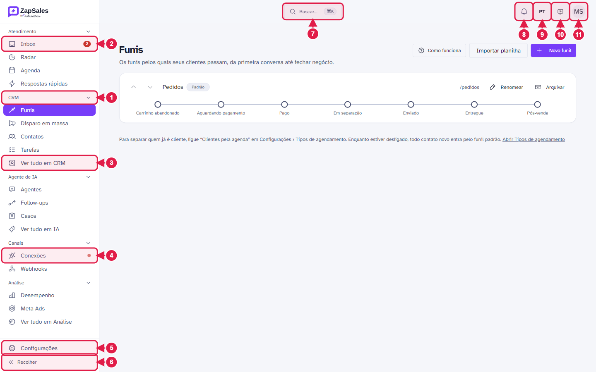
O menu lateral (1 a 6) e a barra do topo (7 a 11), vistos na tela de Funis.
Nome do grupo do menu. O menu é dividido em grupos (Atendimento, CRM, Agente de IA, Canais, Análise). Clique no nome do grupo para recolher ou abrir a lista dele.
Item do menu. Cada item leva a uma tela. O item da tela em que você está fica destacado em roxo. O número vermelho ao lado do Inbox é a quantidade de conversas esperando alguém atender.
“Ver tudo em…”. O menu mostra só o que se usa todo dia. Esse item abre uma página com todas as telas do grupo, organizadas por tarefa.
Bolinha vermelha. Aviso de saúde. Em Conexões ela acende quando há um problema com o número de WhatsApp — por exemplo, quando ainda não há nenhum conectado.
Configurações. Sempre fixo no rodapé do menu. Reúne a sua conta, a equipe e as regras da empresa.
Recolher. Encolhe o menu para mostrar só os ícones e dar mais espaço ao conteúdo. Clique de novo para abrir.
Busca ⌘K. Abre a busca de telas (veja abaixo).
Sino: Central de avisos. Leva à tela Alertas: o que a IA encontrou e precisa de uma decisão sua. Um número aparece no sino quando há avisos em aberto.
Idioma. Troca o idioma do sistema para você: português, espanhol ou inglês (o chinês ainda está em construção e não aparece na lista). Veja os detalhes do topo.
Tema. Alterna entre claro, escuro e o que o seu computador estiver usando. Atalho: Ctrl + Shift + L (no Mac, ⌘ + Shift + L).
Menu do usuário. Seu nome e e-mail, e a opção Sair. Quem é dono do servidor vê também Modo administrador, que leva ao painel de configuração da instalação.
Por que o meu menu é diferente do dos outros
O menu não é igual para todo mundo. Ele muda conforme três coisas:
O seu papel. Quem é “Somente leitura” não vê itens de configuração; quem é Administrador vê todos. Veja Papéis.
Os recursos opcionais ligados. Algumas telas (Empresas, Pessoas, Propostas, Honorários, entre outras) só aparecem quando o recurso correspondente está ligado na instalação ou pela organização, em Configurações › Recursos opcionais.
A organização em que você está. Se você participa de mais de uma, um seletor com o nome da empresa aparece no topo para trocar de uma para outra. Com uma só organização, ele fica escondido.
A busca de telas (⌘K)
É o caminho mais rápido para ir a qualquer tela. Clique em Buscar… no topo, ou tecle Ctrl + K (no Mac, ⌘ + K).
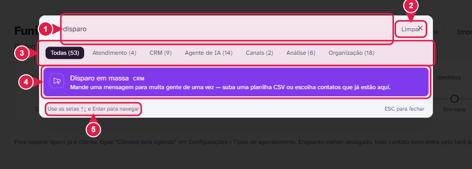
Buscando “disparo”: o resultado destacado abre a tela de Disparo em massa.
Campo de busca. Digite parte do nome da tela ou do que ela faz. A busca ignora acentos e maiúsculas.
Limpar. Apaga o que foi digitado.
Grupos. Filtram os resultados por grupo do menu. O número entre parênteses é quantas telas há em cada um.
Resultado. Mostra o nome da tela, o grupo e uma frase explicando para que ela serve. O primeiro já vem selecionado.
Dica de teclado.↑↓ escolhem, Enter abre, Esc fecha.
O botão “Como funciona”
Muitas telas têm, no canto de cima, um botão Como funciona. Ele abre um painel lateral curto com três coisas: uma explicação do que a tela é, um passo a passo das tarefas mais comuns e as “palavras desta tela”, com o significado dos termos que aparecem nela.
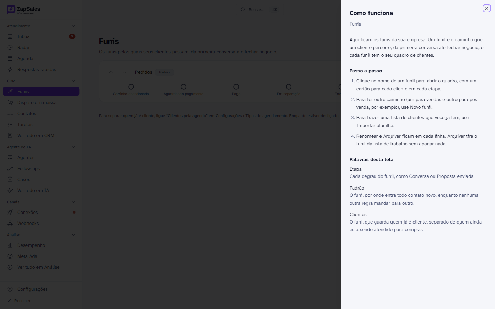
O painel “Como funciona” da tela de Funis.
É a ajuda embutida no sistema. Este manual vai além dela: explica cada botão e cada campo, com prints.
Detalhes do topo da tela
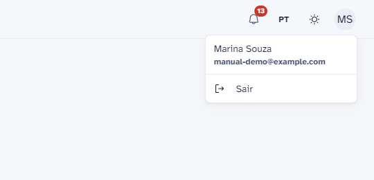
O menu do usuário: nome, e-mail e Sair.
Seletor de organização. Um botão com o nome da empresa aparece ao lado da busca somente para quem tem acesso a duas ou mais organizações (e para o dono do servidor, com o item Gerenciar organizações). Escolher outra recarrega o sistema no Inbox daquela empresa. Só funciona para organizações onde o seu convite foi aceito e não foi revogado, e pede a verificação em duas etapas se você a tem. Fica registrado na Auditoria.
Idioma (PT / ES / EN). Grava a sua preferência pessoal — a mesma do campo “Idioma” do Perfil — e recarrega a página inteira. Não muda o idioma da empresa nem o que os colegas veem.
Tema. Claro → escuro → igual ao computador. A escolha fica salva só neste navegador.
Menu do usuário. Não tem “Perfil” nem “Configurações”: o Perfil está em Configurações › Sua conta, e Configurações fica no rodapé do menu lateral. Sair encerra só este navegador (para sair de todos, use a Segurança).
No celular
No celular, o menu lateral vira um botão de menu (as três barrinhas) no canto superior esquerdo. Toque nele para abrir a lista de telas.
A caixa de entrada do WhatsApp: todas as conversas da equipe num lugar só. Aqui você assume, responde, transfere e encerra o atendimento.
Onde fica
Atendimento › Inbox
Quem pode usar
Ver conversas: todos os papéis. Assumir, responder, transferir, fechar e arquivar: Atendente ou acima.
Endereço
/app/inbox · /app/inbox/[id]
Para que serve
O Inbox é onde a equipe conversa com os clientes pelo WhatsApp. Todas as conversas de todos os números conectados chegam aqui. O número vermelho ao lado do item do menu mostra quantas conversas estão esperando alguém atender.
A tela tem duas metades: à esquerda, a lista de conversas; à direita, a conversa aberta, com o cabeçalho, as mensagens e a caixa para responder.
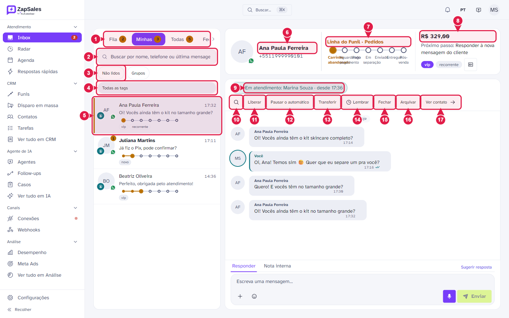
O Inbox com uma conversa aberta. Os números 1 a 5 são a lista; 6 a 17, o cabeçalho da conversa.
Busca. Procura por nome, telefone ou pelo texto da última mensagem.
Filtros rápidos.Não lidos mostra só as conversas com mensagens não lidas. Grupos mostra as conversas de grupos do WhatsApp que você ligou ao sistema.
Filtro de tags. Mostra só as conversas com as tags escolhidas. Quando há mais de um número de WhatsApp conectado, aparece também um filtro Todos os números.
Uma conversa na lista. A que está aberta fica destacada, com uma barra na esquerda. Veja O que cada conversa mostra.
Nome e telefone do cliente. O ícone verde de WhatsApp indica o canal.
Linha do Funil. As etapas do funil do negócio desse cliente, com a etapa atual em destaque. Mostra de relance em que ponto da venda ele está.
Valor, próximo passo e tags. O valor do negócio, o que está previsto para acontecer a seguir (aqui, Responder à nova mensagem do cliente) e as tags do contato. O botão com ícone de cartão abre a ficha completa.
Quem está atendendo. Uma faixa diz se a conversa está em atendimento por uma pessoa, com o automático, ou esperando. Veja Quem atende cada conversa.
Lupa. Busca dentro desta conversa.
Liberar. Devolve a conversa para a fila (ela deixa de ser sua).
Pausar o automático. Faz o atendimento automático parar nesta conversa, sem mudar o dono.
Transferir. Passa a conversa para outro atendente, ou para outro número.
As conversas que esperam um atendente, ordenadas por quem espera há mais tempo. É a aba de quem está de plantão: pegue a primeira da lista.
Minhas
As conversas que estão com você.
Todas
Todas as conversas abertas da organização. Dependendo da regra de visibilidade da organização, o Atendente não vê esta aba: aí ele só trabalha com a Fila e as Minhas.
Fechadas
Atendimentos encerrados. Dá para reabrir se o cliente escrever de novo.
Arquivadas
O que saiu da fila de trabalho sem ser apagado.
Automático
As conversas que o atendimento automático (a IA) está cuidando.
O número laranja ao lado do nome de cada aba é quantas conversas há nela. Se as abas não couberem na largura, use as setinhas nas pontas para rolar.
O que cada conversa mostra
Iniciais ou foto do cliente, e um número no canto quando há mensagens não lidas. O nome fica em negrito enquanto há algo não lido.
Nome e, à direita, a hora da última mensagem (ou há quanto tempo foi, como 1 dia).
O começo da última mensagem, para você reconhecer a conversa sem abri-la.
Uma mini linha do funil: as bolinhas são as etapas do negócio desse cliente e a cheia é a etapa atual.
Na Fila: a posição na fila (1º, 2º…) e quem atende (Sem atendente). Passando o mouse, o sistema mostra “desde quando o cliente espera resposta”.
As tags do contato.
Selos: Grupo, Bloqueado e Anonimizado, quando for o caso.
A conversa aberta
Clique numa conversa da lista para abri-la à direita. Em telas pequenas, a conversa ocupa a tela inteira, com um botão Conversas para voltar à lista e um botão Ficha para ver os dados do cliente.
Quem atende cada conversa
Logo abaixo do cabeçalho, uma faixa diz quem está com a conversa neste momento:
Faixa
Significa
Em atendimento (com o nome da pessoa e desde que horas)
Uma pessoa da equipe é a dona da conversa. O atendimento automático não responde enquanto isso.
Automático atendendo
O agente de IA está respondendo ao cliente.
Aguardando atendente
Ninguém assumiu ainda e o automático não está com a conversa: ela está na fila, esperando uma pessoa.
Sem atendente
Não há dono para a conversa e a organização ainda não tem nenhum atendimento automático configurado — então ninguém vai responder sozinho. É o estado normal de uma instalação nova, antes de montar o primeiro agente.
Encerrada
O atendimento foi fechado.
Os botões de ação
Os botões mudam conforme a situação da conversa. Os que você vê dependem de quem está com ela:
Botão
Quando aparece
O que faz
Assumir
Quando a conversa está aberta e não é sua.
Você passa a ser o dono e o atendimento automático para nesta conversa.
Liberar
Quando a conversa é sua.
Devolve a conversa à fila.
Pausar o automático
Quando o automático ainda atende uma conversa que tem dono.
O automático para nesta conversa. O dono não muda.
Devolver ao automático
Quando o automático está parado e pode voltar.
Devolve a conversa ao atendimento automático. Em alguns casos (quando foi o contato que ficou travado em atendimento humano), o botão religa o automático para todas as conversas dessa pessoa: o texto do botão avisa.
Transferir
Em conversa não encerrada.
Abre uma janela com duas abas: Atendente (escolha para quem passar e, se quiser, escreva o motivo) e Número (continuar a conversa por outro número de WhatsApp da empresa). Só dá para continuar por outro número se o contato tem telefone salvo.
Lembrar
Em conversa não encerrada.
Menu com Em 1 hora, Em 3 horas e Em 24 horas. Quando o prazo vence, a conversa reabre e a equipe recebe um aviso interno. Nada é enviado ao cliente. O botão vira Lembrete ativo, com a opção de cancelar.
Fechar / Reabrir
Fechar em conversa aberta; Reabrir em conversa já encerrada.
Fechar pede confirmação e encerra o atendimento. Reabrir volta a abrir.
Arquivar
Em toda conversa que ainda não está arquivada.
Pede confirmação e tira a conversa da frente, mandando-a para a aba Arquivadas. Nada é apagado.
As mensagens do cliente ficam à esquerda; as suas, à direita, com a palavra Você. Elas são separadas por dia (Hoje, Ontem…). Cada mensagem enviada mostra o seu estado com tracinhos ao lado da hora:
Sinal
Significa
✓ (um tracinho)
Enviada.
✓✓ (dois tracinhos cinza)
Entregue ao celular do cliente.
✓✓ (dois tracinhos azuis)
Lida pelo cliente.
Falhou
A mensagem não saiu. O motivo aparece logo abaixo dela.
Ao passar o mouse sobre uma mensagem, o botão Opções da mensagem oferece:
Responder a esta mensagem: sua resposta aparece citando a mensagem escolhida.
Editar mensagem: corrige o texto. A mensagem passa a mostrar “editada”.
Apagar para todos: pede ao WhatsApp para remover a mensagem também para o cliente. O sistema avisa que o WhatsApp tentará removê-la: não há garantia.
Ocultar no CRM: esconde a mensagem só aqui dentro. Ela continua na conversa do cliente e no registro da empresa, e um gestor pode restaurá-la.
Além das mensagens, a conversa pode mostrar:
Notas internas, escritas pela equipe e invisíveis para o cliente (veja abaixo).
O cartão de passagem, quando o agente de IA passou a conversa para uma pessoa. Ele resume, para quem recebeu: O cliente quer, A IA já tentou, Últimas palavras do cliente e um Resumo da IA (que vale conferir). Diz também se o cliente já foi avisado de que uma pessoa vai assumir, ou se ele ainda está esperando sem saber.
Responder ao cliente
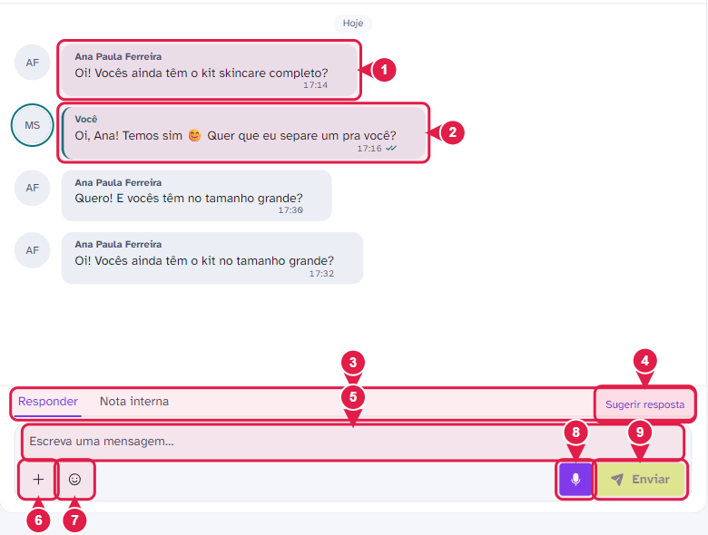
As mensagens e a caixa de resposta (compositor).
Mensagem do cliente. Com o nome, o texto e a hora.
Sua mensagem. Com Você e os tracinhos de entrega e leitura.
Responder / Nota interna. Duas abas para a mesma caixa. Responder envia ao cliente. Nota interna guarda um recado só para a equipe; o cliente nunca vê.
Sugerir resposta. Pede ao agente de IA um rascunho de resposta, que você revisa antes de enviar. Veja abaixo.
Caixa de texto. Escreva a mensagem. Enter envia; Shift + Enter quebra a linha sem enviar.
Botão +. Anexa Fotos e vídeos, um Documento ou um Contato.
Emoji. Abre o seletor de emojis.
Microfone. Grava e envia uma mensagem de áudio. O navegador pede permissão para usar o microfone na primeira vez.
Enviar. Envia a mensagem. Fica apagado enquanto não há nada escrito.
A resposta sugerida pela IA
Com Sugerir resposta o agente escreve um rascunho. Ele nunca é enviado sozinho: aparece num painel de revisão com o aviso “Revise antes de enviar” e duas saídas:
Aprovar e enviar: manda o texto (ou o texto que você ajustou) para o cliente.
Rejeitar: descarta o rascunho. Você pode escrever um feedback, que o agente usa na próxima sugestão.
Quando o WhatsApp não deixa responder
A ficha completa (gaveta lateral)
O botão com ícone de cartão no cabeçalho (ou Ficha, no celular) abre uma gaveta pela direita com tudo sobre o cliente, sem sair da conversa.
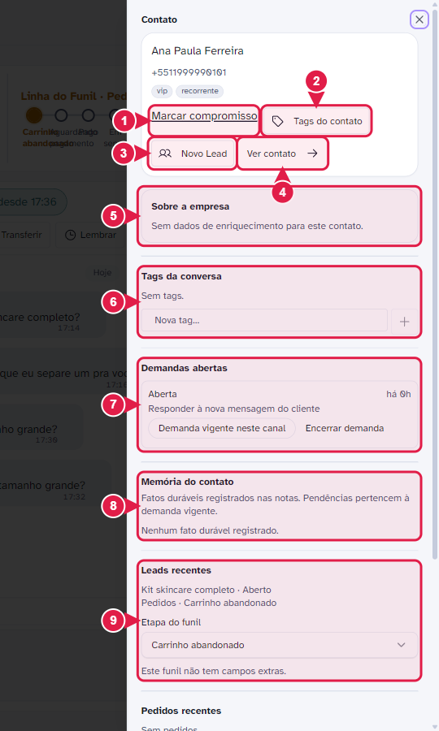
A gaveta “Contato”.
Marcar compromisso. Abre a Agenda já com este contato e esta conversa escolhidos.
Tags do contato. Edita as etiquetas da pessoa.
Novo Lead. Cria um cartão no funil para este cliente, sem sair do Inbox. Veja Criar um cartão.
Sobre a empresa. Dados de enriquecimento (da empresa do cliente), quando existem. Sem eles, a seção avisa.
Tags da conversa. Etiquetas só desta conversa (diferentes das do contato). Escreva em Nova tag… e clique em +.
Demandas abertas. Uma demanda é um assunto em aberto com este cliente. Mostra há quanto tempo ela está aberta e o próximo passo. Encerrar demanda pede o desfecho: Resolvida, Convertida, Não procede, Encerrada pelo cliente, Perdida ou Expirada sem resposta. Marcar próximo passo registra o que deve acontecer a seguir.
Memória do contato. Fatos duráveis sobre a pessoa, registrados nas notas. Fica vazia até alguém registrar algo.
Leads recentes e Etapa do funil. Os negócios dele no funil. O seletor Etapa do funil permite mudar a etapa do negócio direto daqui, e abaixo dele aparecem os campos extras do funil, se existirem.
Descendo a gaveta, há ainda Pedidos recentes, a Atividade do cliente e o Acervo: uma busca na base de conhecimento, feita como a IA faz, que mostra a origem de cada trecho encontrado. Serve para conferir o que o agente sabe.
Atalhos de teclado
O Inbox foi feito para quem atende o dia todo. Estas teclas funcionam quando você não está digitando:
Tecla
O que faz
J
Abre a próxima conversa da lista.
K
Abre a conversa anterior.
R
Leva o cursor para a caixa de resposta.
A
Assume a conversa.
E
Fecha a conversa.
?
Mostra a lista de atalhos.
Enter
Dentro da caixa de resposta: envia a mensagem.
Shift + Enter
Dentro da caixa de resposta: quebra a linha sem enviar.
Passo a passo: atender a primeira conversa da fila
Abra o Inbox e clique na aba Fila. A conversa que espera há mais tempo está no topo.
Clique nela. A conversa abre à direita. Leia as mensagens e, se houver, o cartão de passagem da IA.
Clique em Assumir. A faixa muda para Em atendimento, com o seu nome, e o automático para.
Clique na caixa de texto, escreva a resposta e tecle Enter. Acompanhe os tracinhos para saber se foi entregue e lida.
Se a venda andou, abra a ficha (botão de cartão) e mude a Etapa do funil, ou crie um Novo Lead se ainda não houver negócio.
Se vai precisar voltar ao assunto, use Lembrar e escolha em quanto tempo. Se outra pessoa deve cuidar, use Transferir.
Quando o atendimento terminou, clique em Fechar e confirme. Se o cliente escrever de novo, a conversa pode ser reaberta.
A lista de quem esfriou: negócios abertos em que ninguém mexe há tempo e que podem morrer sem resposta. Mostra o que é crítico, o que está em risco e o que já tem retorno combinado.
Onde fica
Atendimento › Radar
Quem pode usar
Todos abrem a tela. Quem é Atendente ou acima vê a lista e pode assumir; Atendente só enxerga os negócios que são dele ou que não têm dono.
Endereço
/app/radar
Para que serve
Todo negócio aberto no funil que fica parado vira, com o tempo, um cliente perdido. O Radar de risco junta, numa lista só, os negócios abertos em que ninguém mexe há tempo e que precisam de você. É a tela para abrir de manhã e perguntar: “quem eu estou deixando esfriar?”
O Radar não envia nada e não altera nada sozinho. Ele só lê: a única ação que grava algo é o botão Assumir.
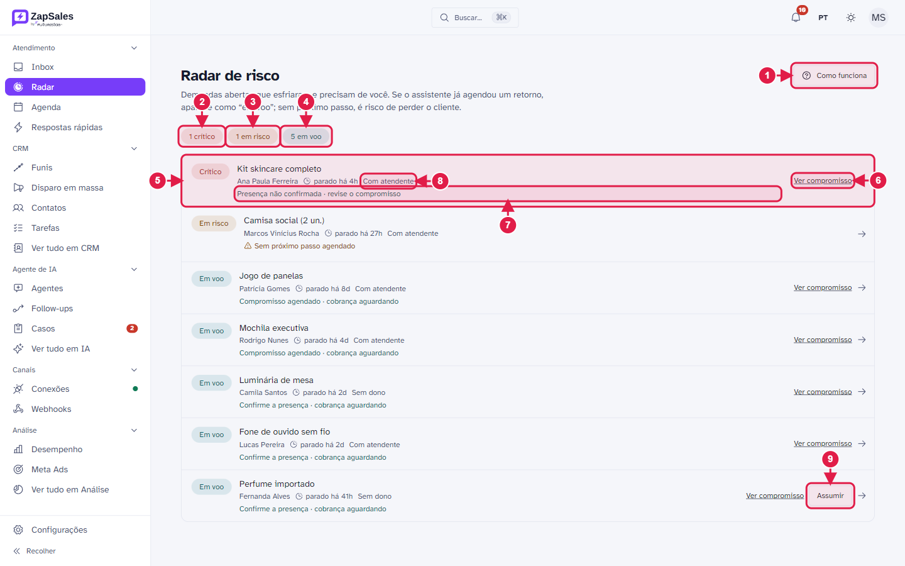
O Radar de risco da loja de demonstração: um crítico, um em risco e cinco em voo.
Como funciona. Abre um painel lateral com a explicação resumida da tela.
Crítico. Quantos negócios estão parados há 72 horas ou mais, ou têm um compromisso que já passou sem que ninguém registrasse se o cliente veio.
Em risco. Parados há 24 horas ou mais, sem nada combinado para o futuro.
Em voo. Já têm um retorno agendado pela IA, ou um compromisso marcado na Agenda que protege o cliente. “Em voo” quer dizer que alguém já está cuidando — pode esperar.
Uma linha da lista. É o negócio inteiro: o selo de risco, o título do negócio, o nome do cliente e há quanto tempo está parado. Clicar abre a conversa no Inbox (ou o funil, quando o negócio não tem conversa).
Ver compromisso. Só aparece quando existe um compromisso na Agenda ligado ao cliente. Leva direto ao compromisso.
O próximo passo. A linha de baixo diz por que o negócio está (ou não) protegido: “Presença não confirmada · revise o compromisso”, “Confirme a presença”, “Assistente retorna em 5h” ou, em amarelo, “Sem próximo passo agendado”.
O dono.Agente: nome (a IA é a dona), Com atendente (há uma pessoa responsável), Assistente na conversa ou Sem dono.
Assumir. Aparece quando há conversa e ainda não há uma pessoa como dona. Veja abaixo o que ele faz.
Como o Radar decide quem entra
Selo
Quando aparece
Crítico
O negócio está parado há 72 horas ou mais, ou tem um compromisso que já terminou e a presença não foi confirmada.
Em risco
Está parado há 24 horas ou mais e não há retorno nem compromisso à vista.
Em voo
Tem retorno agendado pela IA ou um compromisso vivo na Agenda (pendente ou confirmado). Esses entram na lista mesmo parados há dias.
Entram só negócios abertos de funis que não estão arquivados.
A ordem é: críticos, depois em risco, depois em voo; dentro de cada grupo, o mais frio primeiro.
O limite de “frio” vem da etapa do funil: se a etapa tem um prazo esperado (em Configurações › Etapas do funil), ele vale no lugar das 24 horas, e o crítico é o triplo dele.
A tela mostra os 50 mais graves, mas os contadores do alto contam o conjunto inteiro.
A lista se atualiza sozinha a cada minuto.
As caixas de aviso amarelas
Acima da lista podem aparecer até três caixas amarelas (cada uma mostra no máximo 8 linhas). Elas só existem quando há algo a mostrar:
Demandas abertas sem próximo passo — alguém está esperando e nada foi combinado. A linha mostra o nome do contato e há quantas horas a demanda está aberta.
Propostas vencidas sem retomada — o cliente recebeu a proposta e não decidiu. Cada linha leva à proposta e mostra a data em que ela venceu. Só aparece com o recurso Propostas ligado.
Propostas esperando revisão — rascunhos que a IA terminou e ninguém revisou. Confira antes de enviar.
Assumir uma conversa
O botão Assumir aparece nas linhas que têm conversa e ainda não têm um atendente como dono. Com um clique, sem janela de confirmação:
A conversa passa a ser sua.
A IA fica silenciada nessa conversa, para sempre — ela não responde mais ali, a menos que a conversa seja devolvida pelo Inbox.
A ação fica registrada na linha do tempo (“Assumiu o atendimento desta conversa”) e no registro de auditoria.
Aparece o aviso “Você assumiu a demanda”.
Nada é enviado ao cliente por esse clique. Se outra pessoa assumiu antes, a tela avisa “Outro atendente já assumiu.”.
Quando não há nada
Se todos os negócios abertos tiveram atividade recente ou já têm retorno marcado, a tela mostra um ✔ verde com “Nenhuma demanda em risco”. É o estado que você quer ver.
O que cada papel vê
Papel
Resultado
Somente leitura
Abre a tela, mas a lista chega vazia (a consulta exige Atendente). Não é um defeito: é a permissão.
Atendente
Vê só os negócios dele e os sem dono (a menos que a organização tenha escolhido “todos veem tudo”). Pode assumir.
O calendário da equipe: veja o que está marcado (dia, semana ou mês), marque, remarque, cancele e registre se o cliente compareceu. Pode espelhar tudo com o Google Agenda.
Onde fica
Atendimento › Agenda
Quem pode usar
Todos abrem e veem. Marcar, remarcar, cancelar e registrar presença: Atendente ou acima.
Endereço
/app/agenda
Para que serve
A Agenda mostra o que está marcado, com quem e quem atende — o seu e o da equipe. Dela saem os horários que o agente de IA oferece ao cliente, e nela você marca, remarca, cancela e registra se o cliente compareceu ou faltou.
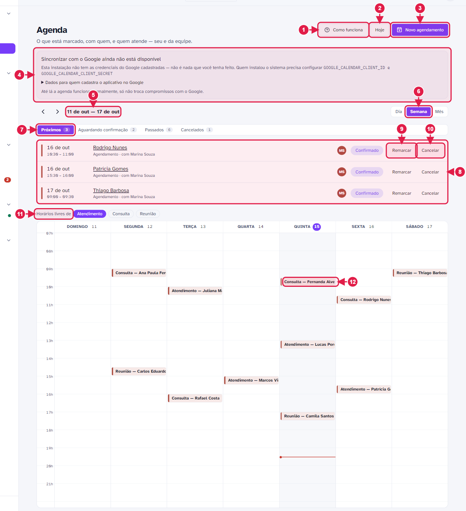
A Agenda na visão de semana, com os próximos compromissos acima da grade.
Como funciona. Abre o painel de ajuda da tela.
Hoje. Volta ao dia de hoje — no fuso da organização, não no do seu navegador.
Novo agendamento. Abre o painel de marcação. Só para Atendente ou acima, e fica apagado se não existe nenhum tipo de agendamento ativo.
Cartão do Google. Mostra se a agenda está ligada ao Google Agenda. Veja abaixo.
Período. As setas andam para trás e para frente (7 dias na semana, 1 no dia, 30 no mês) e o título mostra o período que você está vendo.
Dia · Semana · Mês. Troca a visão da grade. O padrão é Semana (em celular, abre em Dia).
As quatro abas do histórico:Próximos, Aguardando confirmação, Passados e Cancelados, cada uma com seu contador.
Uma linha do histórico. Mostra a data, o horário, o cliente (clique para abrir o compromisso), quem atende e a situação.
Remarcar. Abre o painel de marcação para escolher outro horário.
Horários livres de. Aparece quando há mais de um tipo ativo. Escolha de qual tipo você quer ver os horários livres (cada tipo tem sua duração e seu responsável).
Um compromisso na grade. Um bloco colorido pela pessoa responsável. Clique para abrir o detalhe; arraste para remarcar.
A grade
Dia e Semana mostram as horas de 07h às 21h, com uma linha vermelha marcando “agora”. Compromissos fora desse intervalo ficam fora da área visível.
Cada bloco mostra o título; quando cabe (45 minutos ou mais), também a hora e o cliente. Cancelados não aparecem na grade — ficam só na aba “Cancelados”.
Blocos hachurados escritos “Ocupado” são horários ocupados no Google Agenda da pessoa. Eles só informam que o horário está tomado: nunca mostram o título do evento, e não abrem nem arrastam.
Clicar num horário livre abre “Novo agendamento” já naquele horário. Passando o mouse, a dica explica por que um bloco não pode ser clicado: “este horário já passou”, “já há um compromisso neste horário”, “fora dos horários que você publicou”…
Arrastar um bloco para outro horário pede confirmação: “Remarcar [nome] para [dia e hora]? Quem foi atendido recebe o aviso da mudança.” Se o horário não puder ser usado, uma faixa amarela explica o motivo.
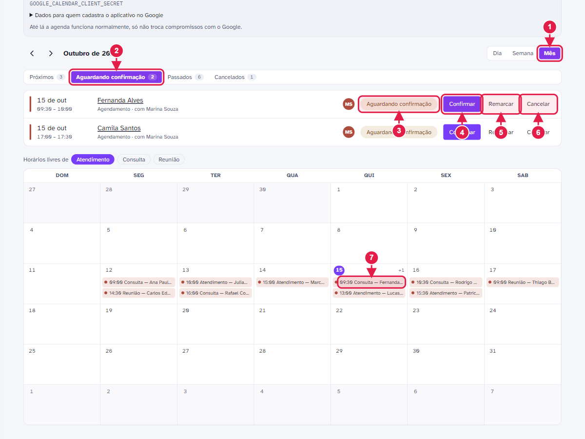
Visão de mês, com a aba “Aguardando confirmação” aberta.
Mês. Mostra seis semanas numa grade de 7 colunas, cada dia com os seus compromissos.
Aguardando confirmação. Pedidos de horário que ainda esperam uma decisão da equipe.
Selo de situação.Aguardando confirmação (amarelo), Confirmado, Cancelado, Realizado (verde) ou Não compareceu (vermelho).
Confirmar. Aparece só em “Aguardando confirmação”: aceita o pedido.
Remarcar. Disponível em “Próximos” e “Aguardando confirmação”.
Cancelar. Disponível nas mesmas abas.
Um compromisso no dia. O dia de hoje vem destacado; quando há mais compromissos do que cabem, aparece “+1”.
Na aba Passados aparecem, enquanto a presença não foi registrada, os botões Realizado e Faltou. A aba “Aguardando confirmação” só tem itens se algum tipo de agendamento pedir confirmação ou se o agente de IA criar um pedido pendente.
Marcar ou remarcar
O painel que abre à direita se chama Novo agendamento (ou Remarcar agendamento, quando você remarca).
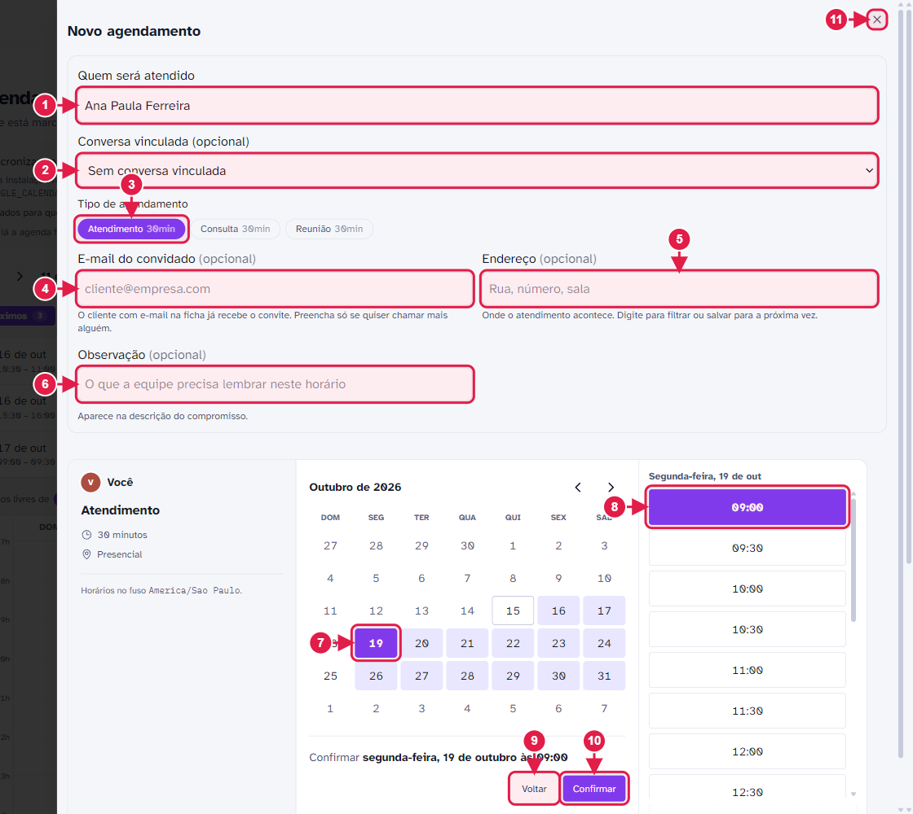
O painel “Novo agendamento”, já com o dia 19 e o horário 09:00 escolhidos.
Quem será atendido. Digite para procurar um contato. Deixe em branco (“Compromisso pessoal, sem cliente”) para marcar algo só seu. Se o nome não existir, a lista oferece Criar “nome”, que abre o formulário de novo contato. Ao remarcar, este campo some.
Conversa vinculada (opcional). Só aparece com um cliente escolhido. Liga o compromisso a uma conversa dele no Inbox.
Tipo de agendamento. Botões com o nome e a duração. Só aparece quando existe mais de um tipo ativo.
E-mail do convidado (opcional). O cliente que tem e-mail na ficha já recebe o convite; preencha só para chamar mais alguém. Um e-mail inválido bloqueia a confirmação.
Endereço (opcional). Onde acontece. Vem preenchido com o local do tipo. Marque “Salvar para os próximos agendamentos” para guardar o endereço para a empresa.
Observação (opcional). O que a equipe precisa lembrar neste horário. Aparece na descrição do compromisso.
Dia. O calendário mostra o mês. Os dias com vaga ficam em lilás; os demais ficam travados, e a dica de cada um diz o motivo (“nenhum horário livre neste dia”, “fora deste mês”, “nenhum horário publicado neste dia”).
Horário. A lista de horas livres do dia escolhido. Escolher uma delas mostra a frase de confirmação.
Voltar. Desfaz a escolha do horário.
Confirmar. Cria o compromisso. Veja “O que acontece” abaixo.
Fechar. Fecha o painel sem marcar nada.
Clique em Novo agendamento (ou num horário livre da grade).
Escolha o cliente (ou deixe em branco para um compromisso pessoal) e, se houver mais de um, o tipo.
Escolha o dia e o horário e clique em Confirmar.
O painel mostra “Marcado.” com o resumo, e os botões Marcar outro e Ver na agenda.
O botão Outro horário, ao fim da lista de horas, é o encaixe: permite digitar uma hora fora da jornada publicada. A agenda só recusa se o horário já estiver ocupado. Se o cliente pediu para não receber mensagens, aparece o aviso “O lembrete não será enviado — combine por telefone.”.
O que acontece ao confirmar
O compromisso é criado como Confirmado (ou Aguardando confirmação, se o tipo pede confirmação).
A agenda recusa horário que não é oferecido pela jornada, que já está ocupado (por outro compromisso ou pelo Google da pessoa) ou de tipo desativado.
Fica registrado na linha do tempo do cliente e no registro de auditoria, e o evento appointment.created é emitido: automações e webhooks da organização podem reagir a ele. O botão em si não manda nenhuma mensagem ao cliente.
Se a pessoa tem o Google conectado, o compromisso entra na fila de envio ao Google (a cada 5 minutos).
Se o tipo tem lembrete ligado, o sistema manda um WhatsApp ao cliente antes do horário (veja Tipos de agendamento).
O detalhe de um compromisso
Clique num bloco da grade, no nome do cliente na lista, ou abra um link vindo do Radar. O painel mostra tudo sobre o compromisso e se atualiza sozinho.
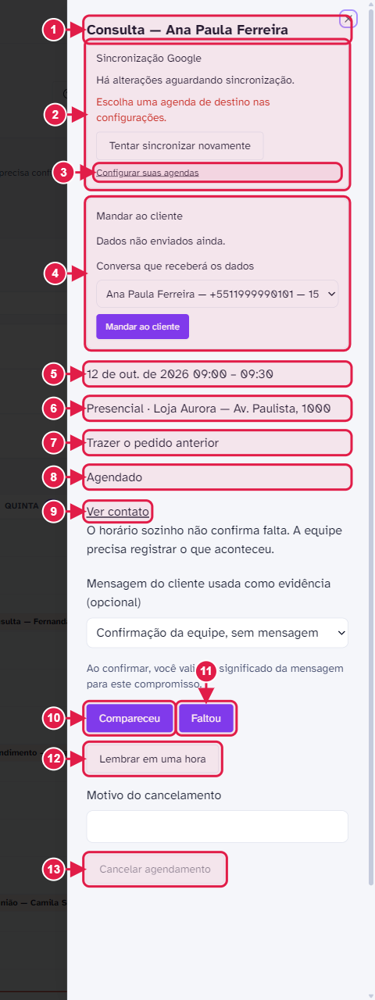
O detalhe de um compromisso que já passou e ainda não teve a presença registrada.
Título. Tipo e cliente.
Sincronização Google. O estado do espelho com o Google. Aqui, “Há alterações aguardando sincronização. Escolha uma agenda de destino nas configurações.” — o compromisso ainda não foi enviado porque nenhuma agenda de destino foi escolhida. O botão Tentar sincronizar novamente refaz a tentativa.
Mandar ao cliente. Um bloco para enviar os dados do compromisso ao cliente, na conversa que você escolher no seletor. Em compromissos do tipo Google Meet o bloco vira “Google Meet” e envia o link da reunião. Veja o alerta abaixo.
Data e hora, no fuso do compromisso.
Local. Presencial, Telefone, WhatsApp, Link de vídeo ou Google Meet, com o detalhe.
Observação escrita na marcação.
Situação:Aguardando confirmação, Agendado, Compareceu, Faltou ou Cancelado.
Ver contato. Abre a ficha do cliente em Contatos. Num compromisso pessoal aparece “Compromisso pessoal, sem cliente vinculado.”.
Compareceu. Registra que o cliente veio.
Faltou. Registra a falta. Pode abrir um fluxo de recuperação (acompanhamento).
Lembrar em uma hora. Adia em 1 hora a cobrança da equipe sobre a presença.
Cancelar agendamento. Pede o motivo (campo logo acima) e cancela.
Entre os dados e os botões há o aviso “O horário sozinho não confirma falta. A equipe precisa registrar o que aconteceu.” O sistema nunca presume falta: quem decide é uma pessoa.
O seletor “Mensagem do cliente usada como evidência (opcional)” deixa ligar ao registro a mensagem em que o cliente avisou que vinha ou não. Por padrão é “Confirmação da equipe, sem mensagem”.
Compareceu e Faltou ficam desabilitados antes do horário de início. Se o cliente avisou que não vem, cancele em vez de registrar falta.
Só uma pessoa registra presença: o agente de IA e as chamadas por token recebem uma recusa (“Peça à equipe para confirmar a presença…”).
Se outra pessoa mexeu antes de você, o sistema pede que você recarregue: “O compromisso mudou. Recarregue antes de confirmar.”
Cancelar um compromisso
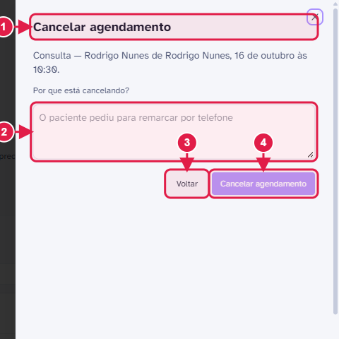
O painel de cancelamento, aberto pelo botão “Cancelar” da lista.
O que está sendo cancelado. A frase repete o título, o cliente e a data.
Por que está cancelando? Campo obrigatório, com pelo menos 3 caracteres (exemplo: “O paciente pediu para remarcar por telefone”).
Voltar. Fecha sem cancelar.
Cancelar agendamento. Cancela de verdade.
Ligar ao Google Agenda (opcional)
O cartão logo abaixo do título tem três estados:
“Sincronizar com o Google ainda não está disponível” — a instalação ainda não tem as credenciais do aplicativo do Google. O cartão diz quais variáveis faltam e traz, dentro de “Dados para quem cadastra o aplicativo no Google”, o endereço de retorno a registrar no console do Google. Quem é administrador da instalação tem o link Cadastrar as credenciais do Google. Não é um defeito: “até lá a agenda funciona normalmente, só não troca compromissos com o Google”.
“Conecte sua agenda do Google…” — a instalação está configurada, mas você ainda não conectou. O botão Conectar Google leva ao Google para você autorizar.
“Agenda conectada: seu@email” — com o link Configurar suas agendas e o botão Desconectar. Desconectar não apaga compromissos.
Conectado, você vê aqui o que já está marcado no Google (como “Ocupado”) e o que for marcado aqui vai para lá. Quem é Gerente pode desconectar a conta de outra pessoa.
O que cada papel pode fazer
Papel
Na Agenda
Somente leitura
Vê a grade e a lista. Não vê o botão Novo agendamento nem o filtro de pessoas. Os botões da lista são desenhados, mas a ação volta recusada.
Atendente
Marca, remarca, cancela e registra presença. Se a organização desligar “Atendentes podem mexer na agenda dos colegas”, só mexe nos compromissos de que é responsável.
Gerente e Administrador
Mexem em todos os compromissos; Gerente também configura os tipos e desconecta o Google de outra pessoa.
Textos prontos (saudação, horário, formas de pagamento…) para puxar no Inbox sem digitar de novo. Podem ser só seus ou da equipe toda.
Onde fica
Atendimento › Respostas rápidas
Quem pode usar
Atendente ou acima usa. Compartilhar com a equipe e editar os compartilhados: Gerente ou acima.
Endereço
/app/templates
Para que serve
É a sua biblioteca de textos prontos: a saudação, o horário de funcionamento, o endereço, a chave Pix. Em vez de digitar de novo a cada conversa, você guarda uma vez e puxa no Inbox em dois toques. Cada resposta pode ser pessoal (só você vê) ou compartilhada (toda a equipe usa).
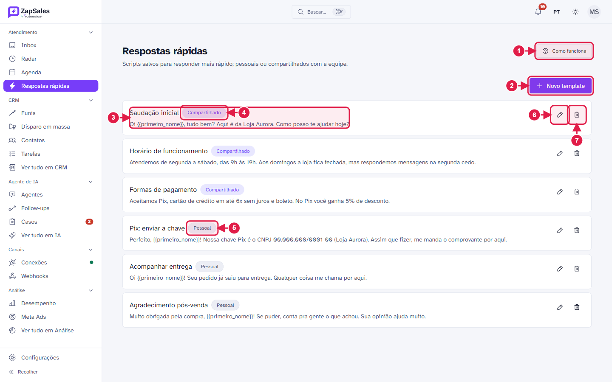
A lista de respostas rápidas: três compartilhadas e três pessoais.
Como funciona. Abre o painel de ajuda.
Novo template. Cria uma resposta nova.
Um cartão. Mostra o título, o selo e a mensagem (até duas linhas). A lista fica em ordem de última alteração, a mais recente primeiro.
Selo “Compartilhado”. Toda a equipe vê e usa essa resposta.
Selo “Pessoal”. Só você vê.
Lápis (editar). Só aparece se você pode alterar aquela resposta.
Lixeira (excluir). Idem. Pede confirmação e não tem volta.
Quando a lista está vazia, a tela diz “Nenhum template ainda.”.
Criar ou editar uma resposta
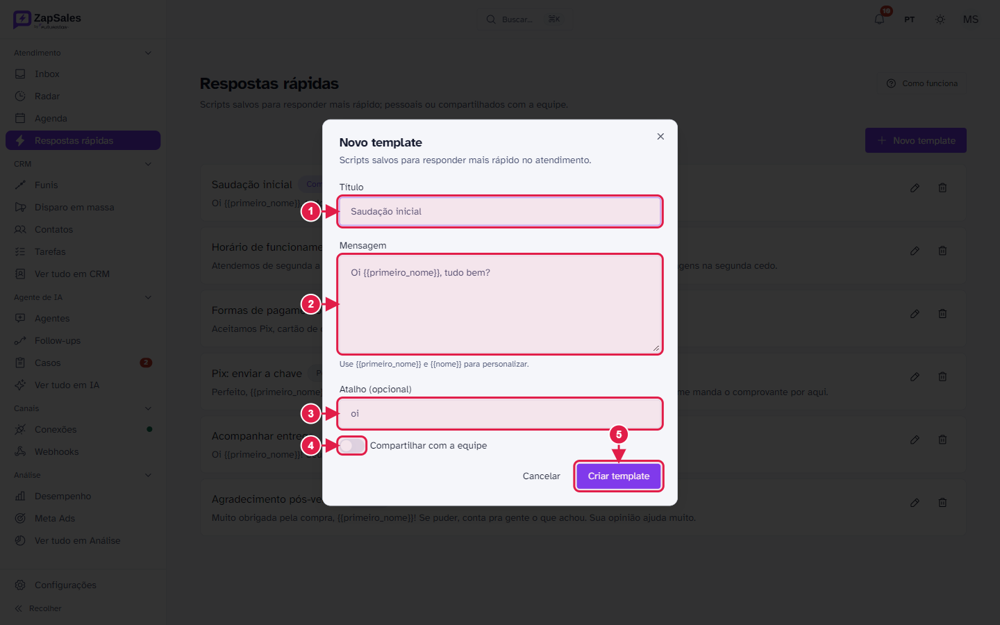
A janela “Novo template”.
Título. Obrigatório, de 1 a 80 caracteres (exemplo: “Saudação inicial”). É o que você procura depois.
Mensagem. O texto que será colocado no campo de resposta, de 1 a 4.096 caracteres. Use {{primeiro_nome}} e {{nome}} para personalizar: o Inbox troca pelo nome do contato.
Atalho (opcional). Uma palavra curta, até 40 caracteres (por exemplo “oi” ou “pix”). Dá para chamar a resposta digitando / e o atalho.
Compartilhar com a equipe. Só aparece para Gerente ou acima. Depois de criada, a resposta não pode passar de pessoal para compartilhada nem o contrário.
Criar template (na edição, Salvar). Grava e mostra “Template criado.”.
Os marcadores {{nome}} e {{primeiro_nome}} são os únicos trocados. Se o contato não tem nome, o texto sai como está escrito.
O atalho não precisa ser único.
Excluir mostra “Excluir este template?” — “Essa ação não pode ser desfeita.”.
No campo de resposta, digite /. Abre o menu “Templates de script”.
Continue digitando para filtrar pelo título ou pelo atalho (não importa se maiúscula ou minúscula) e escolha uma.
O texto entra no campo, já com o nome do cliente no lugar dos marcadores. Ele não é enviado sozinho: revise e envie quando quiser.
Quem pode o quê
Papel
O que pode
Somente leitura
Abre a página, mas não consulta a lista: vê “Nenhum template ainda.”.
Atendente
Cria respostas pessoais e edita ou exclui as suas. Usa as compartilhadas.
Gerente e Administrador
Tudo isso, mais criar respostas compartilhadas e editar ou excluir as compartilhadas.
As respostas pessoais só são vistas por quem as criou; as compartilhadas, por toda a organização. As ações ficam registradas na auditoria (template.created, template.updated, template.deleted).
Os funis pelos quais seus clientes passam, da primeira conversa até fechar negócio. Aqui você cria os funis e trabalha cada venda no quadro de cartões.
Onde fica
CRM › Funis
Quem pode usar
Ver e trabalhar nos cartões: Atendente ou acima (Somente leitura só vê). Criar, renomear e arquivar funis: Gerente ou acima.
Endereço
/app/kanban · /app/pipelines/[id]
O que são as duas telas de Funis
O item Funis do menu abre duas telas, uma dentro da outra:
A lista de funis (veja abaixo): onde você cria, renomeia, ordena e arquiva os funis.
O quadro de um funil (veja abaixo): onde você trabalha as vendas. Cada coluna é uma etapa e cada cartão é um cliente (um lead).
Você chega ao quadro clicando no nome de um funil na lista. Se ainda não conhece as palavras funil, etapa e lead, leia antes Conceitos básicos.
A lista de funis
Para cada funil, a lista mostra o nome, o caminho de etapas e os botões de gestão. No caso de uma instalação nova, já existe um funil chamado Pedidos, marcado como Padrão, com as etapas Carrinho abandonado, Aguardando pagamento, Pago, Em separação, Enviado, Entregue e Pós-venda.
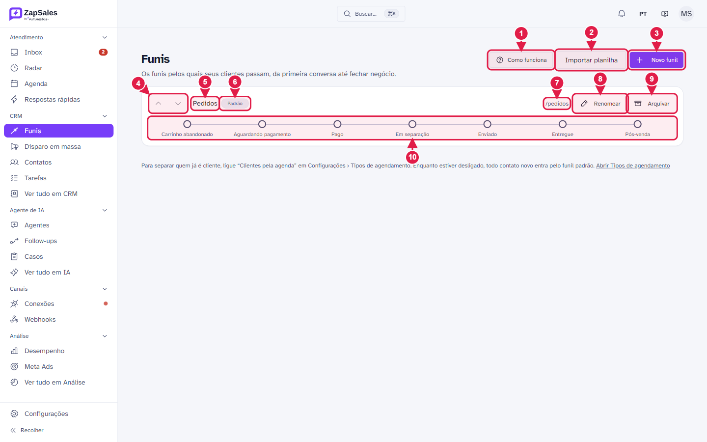
A lista de funis. O funil “Pedidos” é o que já vem na instalação.
Como funciona. Abre o painel de ajuda da tela, com o passo a passo e o significado das palavras. Veja O botão “Como funciona”.
Importar planilha. Traz clientes de uma planilha para dentro de um funil. Veja Importar uma planilha.
Novo funil. Cria um funil. Só aparece para Gerente ou acima. Veja Criar um funil.
Setas para cima e para baixo. Mudam a posição do funil na lista. A seta fica cinza quando o funil já está no topo ou no fim.
Nome do funil. Clique no nome para abrir o quadro dele.
Selo “Padrão”. Marca o funil padrão: o que recebe todo contato novo, enquanto nenhuma outra regra mandar para outro funil. Só um funil é o padrão.
Apelido do funil (aqui, /pedidos). É um nome curto criado a partir do nome do funil. Você não precisa mexer nele.
Renomear. Troca o nome do funil, ali mesmo na linha.
Arquivar. Tira o funil da lista de trabalho, sem apagar nada.
O caminho de etapas. O desenho horizontal mostra, em ordem, as etapas do funil. É só uma pré-visualização: as etapas se renomeiam no quadro (veja abaixo) e se organizam em Configurações › Etapas do funil.
Alguns botões só aparecem em situações específicas:
Botão
Quando aparece
O que faz
Tornar padrão
Em todo funil que não é o padrão.
Faz deste funil o padrão. O selo “Padrão” passa para ele.
Funil de clientes
Só depois de ligar Clientes pela agenda em Configurações › Tipos de agendamento.
Marca o funil que guarda quem já é cliente, separado de quem ainda está sendo atendido para comprar. O botão vira Deixar de ser funil de clientes para desfazer.
Funis arquivados (n)
Só quando existe pelo menos um funil arquivado, para Gerente ou acima.
Abre a “gaveta” dos arquivados, de onde você pode trazer um funil de volta ou excluí-lo de vez.
Criar um funil
Clique em Novo funil. Uma caixa de texto aparece no alto da lista.
Digite o nome. O campo sugere exemplos, como Consultas, Obras, Matrículas.
Tecle Enter ou clique em Criar funil. Para desistir, clique em Cancelar ou tecle Esc.
Renomear, ordenar e tornar padrão
Renomear: clique em Renomear, escreva o novo nome e confirme com Salvar. Para desistir, Cancelar.
Ordenar: use as setas à esquerda do nome. A ordem da lista é só para você achar o funil mais rápido.
Tornar padrão: clique em Tornar padrão na linha do funil escolhido. Todo contato novo passa a entrar por ele.
Arquivar e excluir um funil
Ao clicar em Arquivar, aparece uma confirmação na própria linha, com três opções:
Arquivar: o funil sai da lista e para de receber negócio novo. O histórico continua guardado e nada é apagado. É o que você quer na maioria das vezes.
Excluir de vez: apaga o funil de verdade. Só funciona se ele nunca recebeu nenhum negócio. Se já recebeu, o sistema recusa e explica o motivo na própria tela.
Cancelar: não faz nada.
Para trazer um funil arquivado de volta, abra Funis arquivados no fim da lista e clique em Tirar do arquivo.
Importar uma planilha
Se você já tem uma lista de clientes numa planilha, não precisa digitar um por um. O botão Importar planilha traz a lista inteira para um funil. Quem pode importar: Atendente ou acima.
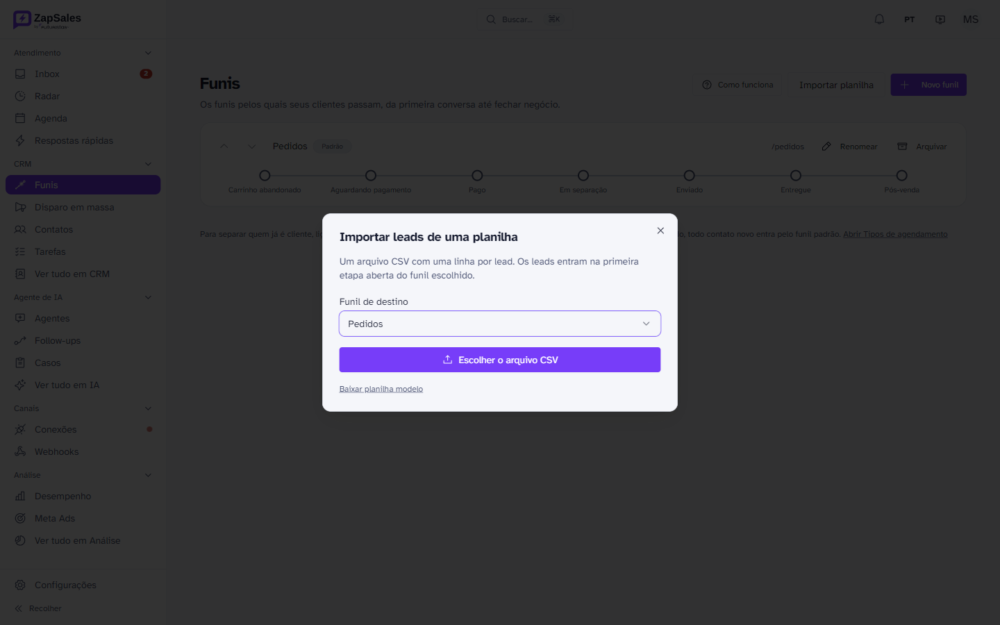
A janela de importação.
Clique em Importar planilha.
Em Funil de destino, escolha para qual funil os clientes vão. Eles entram na primeira etapa aberta desse funil.
Se for a primeira vez, clique em Baixar planilha modelo. Ela mostra as colunas que o sistema espera. Preencha uma linha por cliente e salve como CSV.
Clique em Escolher o arquivo CSV e selecione o arquivo.
O quadro do funil
Ao clicar no nome de um funil, você chega ao quadro. É onde a venda acontece: cada coluna é uma etapa e cada cartão é um cliente. Quando o cliente avança, você arrasta o cartão para a coluna seguinte.
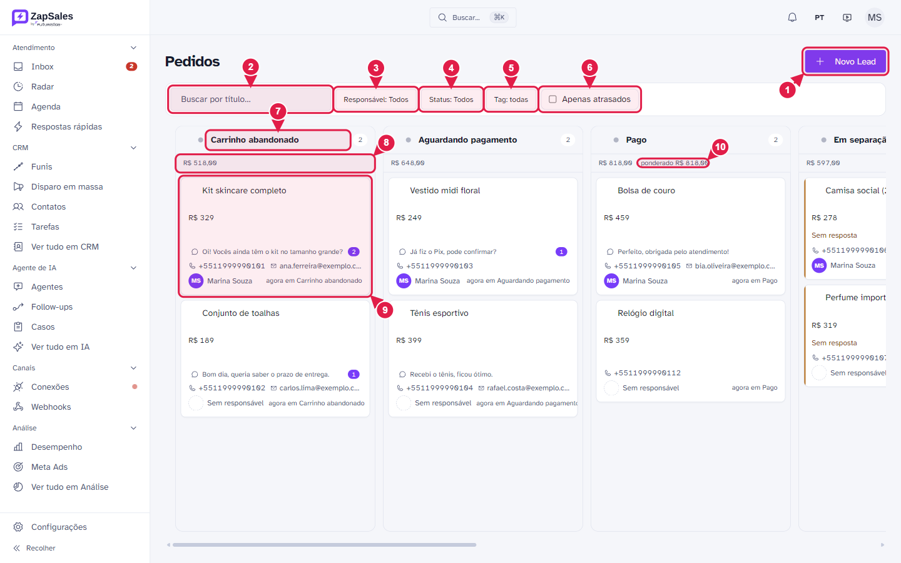
O quadro do funil “Pedidos”. Em telas estreitas, as últimas colunas ficam à direita: role o quadro para o lado.
Novo Lead. Cria um cartão neste funil. Veja Criar um cartão.
Buscar por título. Mostra só os cartões cujo título tem o que você digitou.
Responsável. Filtra pela pessoa (ou agente de IA) que cuida do cartão.
Status. Filtra entre Todos, Abertos, Ganhos e Perdidos.
Tag. Filtra pelas etiquetas dos cartões.
Apenas atrasados. Mostra só os negócios abertos cuja data de fechamento previsto já passou.
Nome da etapa. É o título da coluna. Para trocar o nome, clique nele, digite o novo e tecle Enter (ou clique fora). Esc desfaz. O número ao lado é quantos cartões há na etapa.
Total da coluna. A soma dos valores dos cartões da etapa. Etapa sem nenhum valor não mostra total.
“ponderado”. Aparece em etapas que têm uma chance de fechar calibrada. É o total multiplicado por essa chance: uma estimativa de quanto aquela etapa deve realmente render. Nas etapas de ganho vale 100% e nas de perda, zero.
Mover um cartão de etapa
Aponte o mouse para o cartão, segure o botão e arraste até a coluna de destino.
Solte. O cartão fica na nova etapa e a mudança é registrada na linha do tempo dele (“Mudou de estágio”).
Também dá para mover vários de uma vez (veja Trabalhar com vários cartões) ou levar um cartão para outro funil pelo menu dele.
Como os filtros funcionam
Você pode combinar filtros: busca + responsável + status + tag + atrasados, tudo ao mesmo tempo.
Responsável tem as opções Todos, Sem responsável, Eu e uma lista com cada pessoa e agente de IA.
Tag aceita escolher várias tags. Em Todas (E), o cartão precisa ter todas as tags marcadas; em Qualquer uma (OU), basta ter uma.
Ao escolher o status Perdidos, e havendo negócios perdidos com motivo registrado, aparece o filtro Motivo (e, quando os motivos têm categoria, também Categoria) para ver só um tipo de perda.
Limpar filtros aparece assim que há algum filtro ligado e desliga todos.
Os filtros ficam no endereço da página. Copie o endereço e mande para um colega: ele abre o quadro com os mesmos filtros.
O cartão
O cartão resume o cliente em quatro faixas. Ele tem sempre a mesma altura, para o quadro não “dançar” quando algo muda.
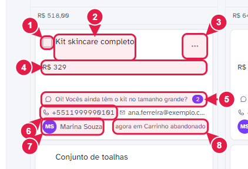
Um cartão em detalhe (cliente “Ana Paula Ferreira”).
Valor. Quanto vale o negócio. Mostra “—” quando não há valor.
Última mensagem. O trecho da conversa mais recente com esse cliente, com um número roxo quando há mensagens que ninguém leu. Clique nela para abrir a conversa no Inbox.
Telefone e e-mail do contato. Somem se o contato não tem nenhum dos dois.
Responsável. A pessoa ou o agente de IA que cuida do cartão. Mostra “Sem responsável” quando ninguém foi escolhido.
Tempo na etapa. Há quanto tempo o cartão está parado naquela etapa (“agora em…”, ou o tempo decorrido).
As cores e os avisos do cartão
O cartão só ganha cor quando algo pede a sua atenção, e mostra um aviso de cada vez, o mais importante:
O que você vê
O que significa
O que fazer
Borda na cor de destaque e a frase “Propõe: …” com Aprovar e Ignorar
Um agente de IA sugere uma ação para esse negócio e espera a sua decisão.
Clique em Aprovar para deixar a ação acontecer, ou Ignorar para descartá-la.
Borda laranja e “Retomar contato?” com Retomar e Encerrar
O cliente parou de responder e o sistema tem uma sugestão pronta para reativar a conversa.
Retomar segue a sugestão; Encerrar desiste do negócio. A sugestão tem prazo e “vence” depois de um tempo.
Borda laranja e “Sem resposta há 3 dias”
O negócio está esfriando: faz tempo que o cliente não responde.
Escreva para o cliente, ou mova o cartão se o assunto mudou.
Uma barrinha de chance de fechar
Uma estimativa de quanto esse negócio tem de chance de dar certo, com o motivo.
Nada: é uma ajuda para você decidir em quem investir o tempo.
O menu do cartão (“…”)
O botão … no canto do cartão abre um menu com seis ações.
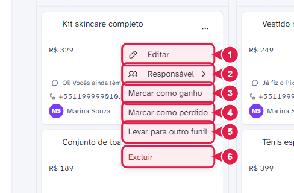
O menu do cartão.
Editar. Abre um formulário para mudar título, valor, descrição e demais dados do negócio.
Responsável. Abre uma lista com as pessoas da equipe para você escolher quem cuida do cartão.
Marcar como ganho. Registra a venda como fechada.
Marcar como perdido. Pede o motivo da perda (e um detalhe opcional) antes de confirmar. Essa informação ajuda a melhorar o funil. Se o motivo que você quer não está na lista, ele se cadastra em Configurações › Funis.
Levar para outro funil. Passa o cartão para outro funil. Se existe um funil só, o sistema avisa que é preciso criar outro antes.
Excluir (em vermelho). Apaga o cartão, depois de uma confirmação.
Criar um cartão (Novo Lead)
Clique em Novo Lead, no canto do quadro. Quem pode: Atendente ou acima.
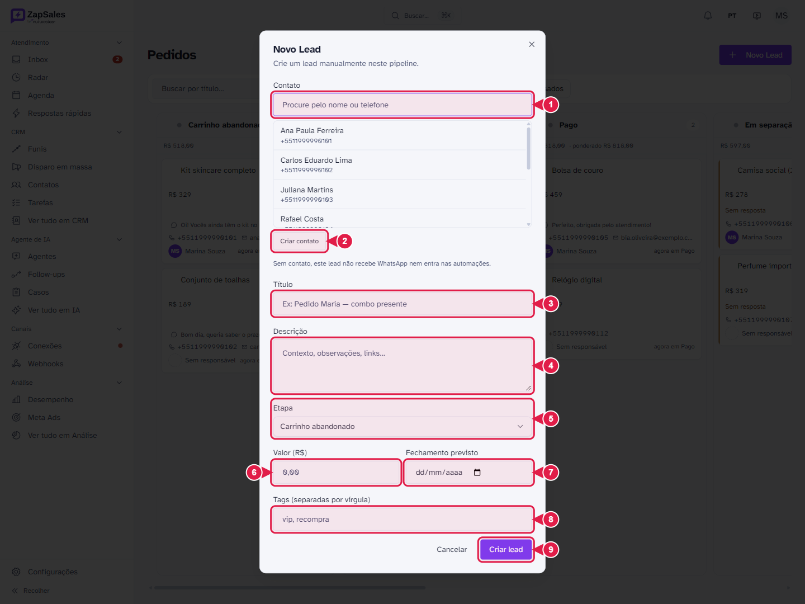
A janela “Novo Lead”.
Contato. Procure a pessoa pelo nome ou telefone e clique nela na lista. É a pessoa a quem esse negócio pertence.
Criar contato. Se a pessoa ainda não está cadastrada, cadastre-a aqui mesmo, sem sair da janela.
Título. Um nome para o negócio, para você reconhecê-lo no quadro. Por exemplo: Pedido Maria — combo presente.
Descrição. Contexto, observações, links. É livre.
Etapa. Em que coluna o cartão começa. Já vem na primeira etapa.
Valor (R$). Quanto vale o negócio. Alimenta os totais das colunas.
Fechamento previsto. A data em que você espera fechar. Se passar sem fechar, o cartão entra no filtro Apenas atrasados.
Tags. Etiquetas separadas por vírgula.
Criar lead. Cria o cartão. Cancelar fecha sem criar.
O dossiê do cartão
Clicar no título de um cartão abre o dossiê: um painel que desliza pela direita com tudo sobre aquele negócio, sem você sair do quadro.
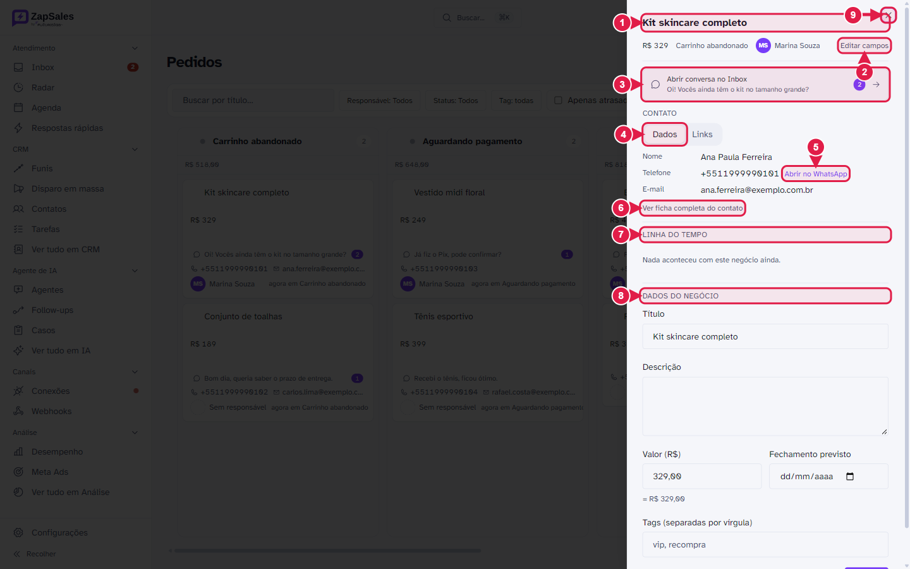
O dossiê do cartão “Kit skincare completo”.
Título do negócio, com o valor, a etapa em que ele está e o responsável logo abaixo. Se o negócio nasceu de um disparo em massa, o nome da campanha também aparece aí.
Editar campos. Rola o painel até o formulário Dados do negócio, mais abaixo.
Abrir conversa no Inbox. Mostra a última mensagem e leva à conversa completa, com o número de mensagens não lidas.
Abas Dados e Links do contato. Dados mostra nome, telefone e e-mail; Links é um formulário para guardar os endereços do contato na internet (Instagram, site, Google Meu Negócio…). Só vale endereço que começa com http. Os links salvos aparecem também no cartão.
Abrir no WhatsApp. Abre o WhatsApp com esse número, fora do ZapSales.
Ver ficha completa do contato. Vai para a ficha do contato em Contatos.
Linha do tempo. O histórico do negócio, com quem fez cada coisa e quando: entrou no funil, mudou de estágio, dados do negócio alterados, anotações, atendimento da IA, quem assumiu, transferiu ou liberou a conversa, agendamentos e retornos. Fica vazia (“Nada aconteceu com este negócio ainda”) até que algo aconteça.
Dados do negócio. O formulário para editar título, descrição, valor, fechamento previsto e tags. Termina com o botão Salvar. Se o funil tem campos extras, eles aparecem aqui também.
Fechar. O X no canto de cima. Também fecha com Esc.
Trabalhar com vários cartões de uma vez
Para fazer a mesma coisa em muitos cartões — mover, trocar o responsável, colocar uma tag, excluir — selecione-os e use a barra que aparece.
Marcar um cartão: clique na caixa que aparece ao passar o mouse, ou segure Ctrl (no Mac, ⌘) e clique no cartão.
Marcar um intervalo: clique num cartão, segure Shift e clique em outro: todos entre os dois ficam marcados.
Marcar uma etapa inteira: use a caixa de seleção no cabeçalho da coluna (aparece ao passar o mouse).
Com cartões marcados, uma barra de ações mostra quantos estão selecionados e oferece:
Ação
O que faz
Mover para…
Leva todos os marcados para a etapa escolhida.
Responsável… / Remover responsável
Define, ou tira, quem cuida de todos os marcados.
Campo de tag + Adicionar
Cola a mesma tag em todos os marcados.
Excluir
Apaga os marcados, depois de uma confirmação. Não pode ser desfeito.
Cancelar
Desmarca tudo, sem alterar nada.
O quadro se atualiza sozinho
Você não precisa recarregar a página. Quando um colega (ou um agente de IA) move ou altera um cartão, o quadro muda na sua tela e o cartão dá uma piscada rápida para você notar.
O índice de tudo o que existe no CRM, em três seções: o dia a dia da venda, preparar a venda e fechar a venda. Mostra só o que o seu papel e a sua instalação permitem.
Onde fica
CRM › Ver tudo em CRM
Quem pode usar
Todos abrem. Cada cartão aparece só para quem tem o papel que a tela de destino exige.
Endereço
/app/crm
Para que serve
O menu lateral mostra só quatro itens do CRM — Funis, Disparo em massa, Contatos e Tarefas —, porque são os de uso diário. Ver tudo em CRM abre esta página: todas as telas do CRM, com uma frase explicando cada uma, em três seções. Clicar num cartão só leva à tela; não grava nem envia nada.
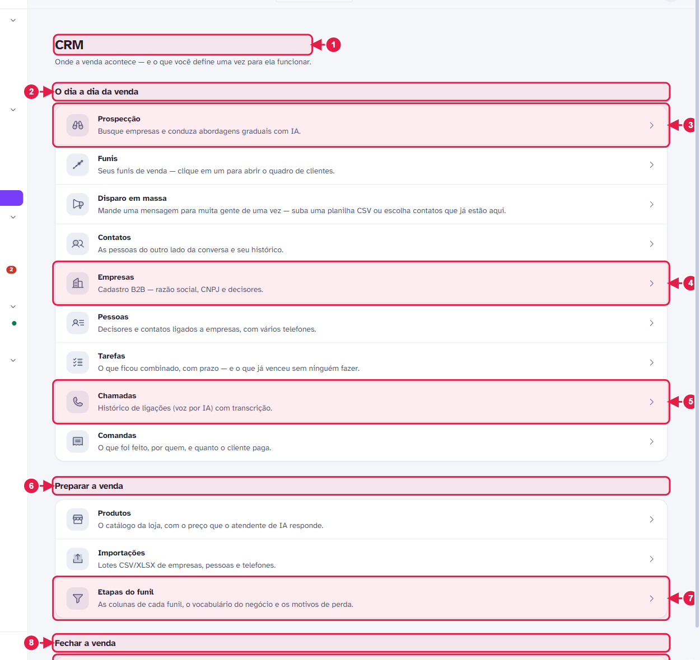
O hub do CRM visto por um Administrador, com todos os módulos opcionais ligados.
O título. “CRM — Onde a venda acontece — e o que você define uma vez para ela funcionar.”
Todos, se o módulo e a capacidade da empresa estão ligados
O hub é só apresentação: cada tela confere sozinha o seu papel. Por exemplo, Prospecção leva um não-administrador de volta ao Inbox. Se há extensões instaladas, abaixo dos cartões aparece a seção “Orientações instaladas” (guias adicionados depois da instalação, sem acesso aos dados do CRM) com o link Gerenciar extensões. Se a leitura delas falha, um cartão amarelo diz “Não foi possível conferir as orientações instaladas”.
O mesmo hub existe para IA e Análise; todos funcionam do mesmo jeito.
As pessoas do outro lado da conversa e o histórico de cada uma. Aqui você cadastra, busca, importa, junta duplicados e cuida dos dados pessoais conforme a LGPD.
Onde fica
CRM › Contatos
Quem pode usar
Ver: todos os papéis. Criar, editar, excluir e importar: Atendente ou acima. Juntar duplicados: Gerente ou acima. Desbloquear e anonimizar (LGPD): Administrador.
Endereço
/app/contacts · /app/contacts/[id]
Para que serve
O Contatos é o cadastro de todas as pessoas que já falaram com você. Cada pessoa aparece uma só vez, e o que você sabe sobre ela fica junto: telefone, e-mail, etiquetas, de onde ela veio, a conversa no WhatsApp e os negócios dela no funil.
São duas telas: a lista, para achar e organizar pessoas, e a ficha, para ver uma pessoa em detalhe.
A lista de contatos
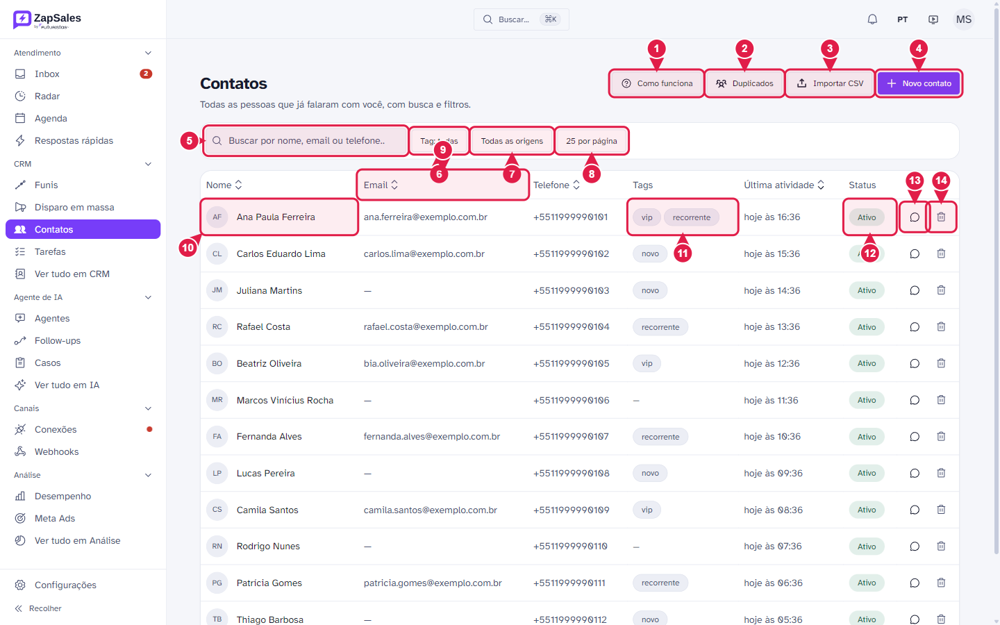
A lista de contatos. Os 12 contatos da organização de demonstração.
Como funciona. Abre o painel de ajuda da tela.
Duplicados. Procura a mesma pessoa cadastrada duas vezes e deixa você juntar os cadastros. Veja Juntar contatos duplicados.
Importar CSV. Traz uma lista de pessoas de uma planilha. Veja Importar uma planilha.
Busca. Procura por nome, e-mail ou telefone enquanto você digita.
Tag. Filtra pelas etiquetas. Você pode marcar mais de uma e escolher entre Todas (E) e Qualquer uma (OU). Fica desativado enquanto nenhum contato tem etiqueta.
Origem. Filtra por onde a pessoa veio (veja a tabela abaixo).
Itens por página. Escolha entre 25, 50 e 100 contatos por vez.
Cabeçalhos com setinha (Nome, Email, Telefone e Última atividade). Clique para ordenar por aquela coluna; clique de novo para inverter a ordem. A lista já vem ordenada pela última atividade, da mais recente para a mais antiga.
Linha do contato. Clique no nome para abrir a ficha.
Tags do contato.
Status.Ativo é o normal. Veja os outros na tabela abaixo.
Balão de conversa. Abre a conversa dessa pessoa no Inbox. Se ela ainda não tem conversa, o botão inicia uma. Um número aparece quando há mensagens não lidas.
A origem diz como a pessoa chegou ao seu cadastro. O filtro Todas as origens oferece:
Origem
Quer dizer
Manual
Alguém da equipe cadastrou à mão.
WhatsApp
A pessoa mandou mensagem e o sistema criou o cadastro sozinho.
Site (landing page)
Veio de um formulário do seu site.
Importado (CSV)
Veio de uma planilha importada.
Anúncio da Meta / Anúncio do Google
Veio de um clique em anúncio.
Os status
Selo
Significado
Ativo
Contato normal, que pode receber mensagens.
Cliente
Quem já foi atendido como cliente. Só aparece quando a organização usa a regra “Clientes pela agenda”, em Configurações › Tipos de agendamento.
Bloqueado
A pessoa pediu para não receber mais mensagens. O sistema não manda campanha, follow-up nem resposta de IA para ela. Só um Administrador pode desbloquear.
Anonimizado
Os dados pessoais foram apagados a pedido do titular (LGPD). Não tem volta.
No fim da lista aparece quantos contatos foram carregados. Quando há mais do que a página comporta, o botão Carregar mais traz os próximos.
Cadastrar um contato
Clique em Novo contato.
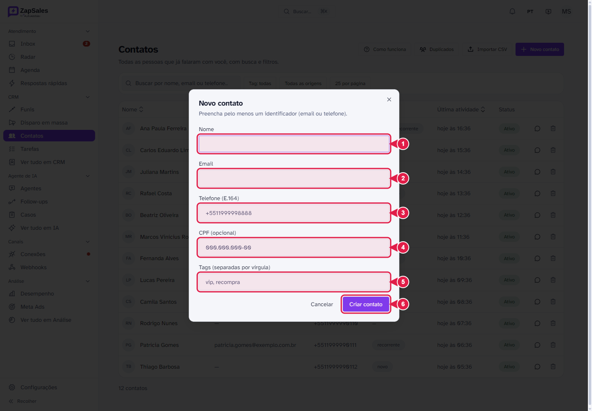
A janela “Novo contato”.
Nome. Como você chama a pessoa.
Email.
Telefone (E.164). O telefone com o código do país, começando com + e só com números depois. Exemplo: +5511999998888 (55 é o Brasil, 11 é o DDD). Sem o + e o código do país o sistema recusa.
CPF (opcional). Se quiser guardar.
Tags. Etiquetas separadas por vírgula, como vip, recompra.
Criar contato. Salva. Cancelar fecha sem salvar.
Importar uma planilha de contatos
Se você já tem uma lista de pessoas numa planilha, clique em Importar CSV.
Prepare a planilha com uma linha por pessoa e uma linha de cabeçalho. As colunas reconhecidas são: nome, telefone, email, cpf, nascimento e tags.
Salve como CSV. No Excel: Salvar como › CSV UTF-8. O limite é de 500 linhas por arquivo: se a lista for maior, divida em vários arquivos.
Em Importar CSV, escolha o arquivo em Arquivo CSV e clique em Importar.
Ao terminar, o sistema mostra um resumo: quantas linhas foram lidas, quantas foram importadas, quantas já existiam (essas não são duplicadas) e quantas deram erro. Use Importar outro arquivo para seguir, ou Concluir para fechar.
Juntar contatos duplicados
Às vezes a mesma pessoa vira dois cadastros: uma vez pelo WhatsApp e outra numa planilha, por exemplo. O botão Duplicados mostra os grupos em que o sistema suspeita que seja a mesma pessoa e diz o motivo: mesmo telefone, mesmo e-mail ou telefone que o WhatsApp deixou em conflito.
Clique em Duplicados. Se não houver nenhum, a janela diz “Nenhum contato duplicado encontrado”.
Em cada grupo, escolha qual cadastro fica. O outro é marcado como “será absorvido por quem fica”.
Clique em Juntar e confirme em Juntar contatos.
A ficha do contato
Clique no nome de uma pessoa na lista para abrir a ficha dela.
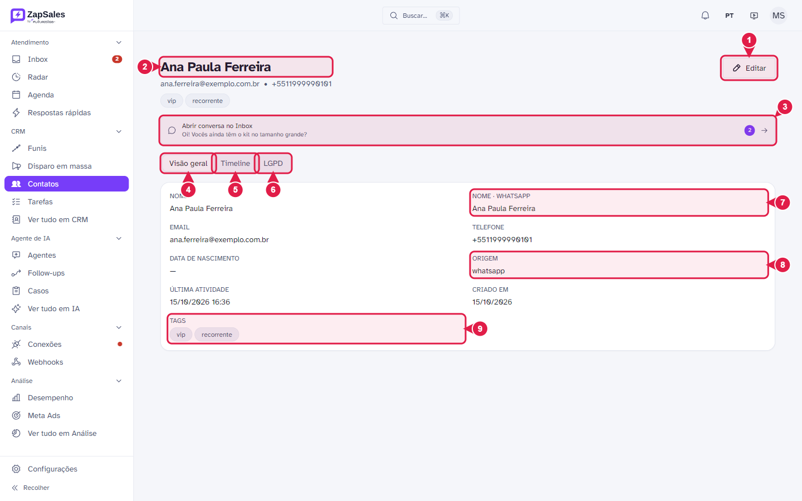
A ficha do contato, na aba “Visão geral”.
Editar. Abre a janela para mudar os dados (nome, e-mail, telefone, data de nascimento e tags). Se o seu funil padrão tem campos personalizados, eles aparecem ali também. Fica bloqueado para contatos anonimizados.
Nome, e-mail, telefone e tags. O resumo no alto da ficha.
Abrir conversa no Inbox. Mostra a última mensagem e leva à conversa. O número roxo é quantas mensagens ainda não foram lidas.
Aba Visão geral. Os dados completos do contato.
Aba Timeline. O histórico de tudo o que aconteceu com essa pessoa.
Aba LGPD. Só aparece para Administrador. É onde se anonimiza o contato.
Nome · WhatsApp. O nome que a pessoa usa no próprio WhatsApp, que pode ser diferente do nome que você cadastrou.
Origem. De onde o contato veio. Quando veio de um anúncio, a ficha mostra também a campanha, o conjunto e o anúncio.
Tags. As etiquetas do contato.
Abaixo desses dados, a aba Visão geral pode mostrar a seção “Respostas dos roteiros de atendimento”, com o que a pessoa respondeu em cada pergunta de um roteiro (ou “não respondido”).
A aba Timeline
Mostra as atividades registradas dessa pessoa, separadas por dia, com Carregar mais no fim quando há muitas. Para um contato recém-cadastrado, ou numa organização nova, ela diz “Nenhuma atividade registrada ainda” — é normal. Ela vai se enchendo conforme você atende.
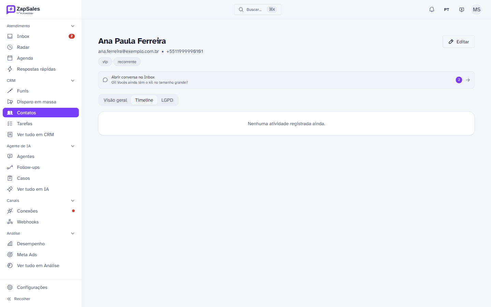
A aba Timeline de um contato novo, ainda sem atividades.
LGPD: anonimizar um contato
A LGPD dá a cada pessoa o direito de pedir que seus dados sejam apagados. No ZapSales, isso se faz anonimizando o contato, na aba LGPD da ficha (só Administrador vê a aba).
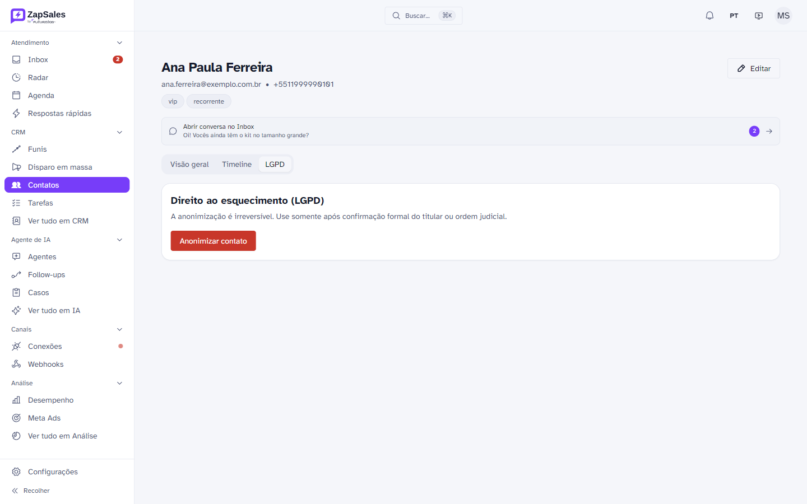
A aba LGPD, com o botão vermelho “Anonimizar contato”.
Abra a ficha do contato e a aba LGPD.
Clique em Anonimizar contato.
Escreva a justificativa, com no mínimo 10 caracteres — por exemplo, “Solicitação formal do titular por e-mail em tal data”. Ela fica registrada. Clique em Continuar.
Para confirmar, digite a palavra ANONIMIZAR no campo de confirmação e clique em Anonimizar permanentemente. Voltar retorna ao passo anterior.
Depois disso, o contato passa a aparecer como Anonimizado, a edição fica bloqueada e a aba LGPD informa o dia e a hora em que aconteceu.
Excluir um contato
A lixeira da lista exclui o contato. O sistema pergunta antes: “Isso remove [nome] e a conversa associada, se houver. Esta ação não pode ser desfeita.”
Manda a mesma mensagem para muita gente de uma vez: você escolhe o público (ou sobe uma planilha CSV), escreve o texto, prepara a lista, testa e inicia. Funciona por número de QR code ou pela API Oficial.
Onde fica
CRM › Disparo em massa
Quem pode usar
Gerente ou acima, em todas as telas. Atendente e Somente leitura veem o menu escondido e, se digitarem o endereço, a tela dá erro de permissão.
O Disparo em massa (as “campanhas”) fala com uma lista de pessoas de uma só vez: uma promoção, um aviso, a reativação de quem sumiu. Você escolhe o público (por etiquetas, tempo sem falar, funil… ou subindo uma planilha CSV), escreve a mensagem, o sistema monta a lista e você inicia o envio. Quem responde cai no funil e no agente certos, com o contexto da campanha.
Situação. Filtra a lista por uma das nove situações (ou “Todas”).
Uma campanha. A linha inteira é um link para o detalhe. Mostra o nome e quantas pessoas estão na lista.
“N contatos na lista · M fora”. N são os que vão receber; M ficaram de fora na preparação. Antes de preparar, a linha diz “lista ainda não preparada”.
Concluída. Ninguém mais a enviar. A data diz “terminou …”.
Pausada. Parada à mão ou pelo sistema.
Pronta para iniciar. A lista está montada e congelada.
Agendada. Marcada para começar numa data (“começa 17/10/2026, 19:44”).
A lista mostra 30 campanhas por vez, da mais nova para a mais antiga, com o botão Carregar mais. Não tem busca por nome. Sem nenhuma campanha, a tela diz “Nenhuma campanha ainda.”.
A tela Nova campanha é um formulário de uma página só, com cinco cartões. “Isto cria um rascunho. Nada é enviado antes de você preparar a lista e iniciar.”
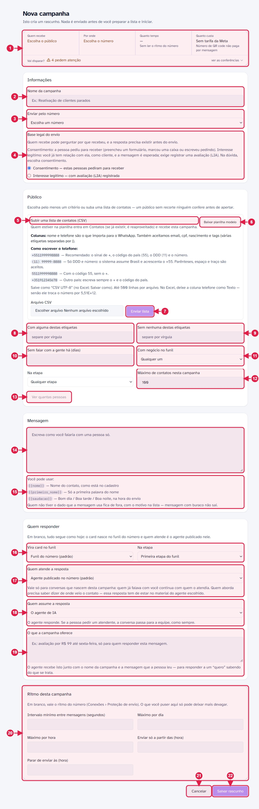
O formulário de nova campanha, de cima a baixo.
Nome da campanha. Obrigatório (até 160 caracteres). Só você vê.
Enviar pelo número. Obrigatório. Lista todos os números da organização. Trocar de número zera o modelo e as variáveis escolhidos. Sem nenhum número aparece “Nenhum número conectado. Conecte um em Conexões antes de criar a campanha.”.
Base legal do envio. Obrigatória. Consentimento (estas pessoas pediram para receber) ou Interesse legítimo, que exige a referência da avaliação (LIA) registrada. Quem recebe pode perguntar por que recebeu, e a resposta precisa existir antes do envio.
Baixar planilha modelo. Baixa o arquivo lista-para-disparo.csv, já com as colunas e três linhas de exemplo.
Enviar lista. Lê o arquivo escolhido e cria os contatos.
Com alguma destas etiquetas. Separe por vírgula. Entra quem tem qualquer uma.
Sem nenhuma destas etiquetas. Tira quem tem alguma destas.
Sem falar com a gente há (dias). Quem está parado há pelo menos esse número de dias. Quem nunca interagiu entra.
Com negócio no funil / Na etapa. Filtra por quem tem negócio num funil (e, opcionalmente, numa etapa).
Máximo de contatos nesta campanha. De 1 a 5.000 (padrão 100). Vale só para o recorte por critérios; a planilha entra além dele.
Ver quantas pessoas. Faz a conta sem gravar nada: “N podem receber · M ficam de fora”, com o motivo de cada exclusão. Fica apagado sem critério. Em campanha oficial com modelo mostra também o custo estimado pela tabela da Meta.
Texto da mensagem (número de QR code). Obrigatório, até 4.096 caracteres. “Escreva como você falaria com uma pessoa só.”.
Variáveis. Os botões {{nome}}, {{primeiro_nome}} e {{saudacao}} acrescentam o marcador ao fim do texto. Quem não tiver o dado que a mensagem usa fica de fora, com o motivo — “mensagem com buraco não sai”. Variável desconhecida (por exemplo {{xyz}}) vai literal para o cliente.
Vira card no funil / Na etapa. Para onde vai quem responder. Em branco, o card nasce no funil do número.
Quem atende a resposta. O agente de IA que conversa com quem responde (só agentes publicados). Em branco, o agente publicado no número.
Quem assume a resposta.O agente de IA (padrão), A fila de atendentes (a IA fica calada) ou A IA, e depois um atendente (exige escolher o agente).
O que a campanha oferece. Até 2.000 caracteres (“avaliação por R$ 99 até sexta-feira…”). O agente recebe isto junto com o nome da campanha e a mensagem que a pessoa leu.
Ritmo desta campanha. Intervalo mínimo, máximo por dia e por hora, e a janela (a partir das… / parar às…). Em branco vale o ritmo do número; o que você puser só pode deixar mais devagar. Informe início e fim juntos. Em campanha oficial aparece também o teto de gasto da Meta.
Cancelar. Volta à lista sem criar nada.
Salvar rascunho. Cria a campanha em Rascunho e abre o detalhe. Só habilita quando o essencial está preenchido.
O botão Salvar rascunho só habilita com: nome, número, um critério ou lista subida, texto (ou modelo, no número oficial) e, quando a base é interesse legítimo, a referência LIA. Não existe “todos os contatos”: o público sempre exige um recorte.
Por exemplo, a mensagem usa o nome e o contato não tem.
Esses vetos são revalidados na hora de cada envio: quem pediu para parar entre “Preparar” e o envio é pulado. A campanha nunca alcança grupos de WhatsApp: só contatos do tipo pessoa.
Subir uma planilha CSV
Em vez de (ou além de) critérios, você pode subir uma planilha de pessoas. Quem está na planilha entra em Contatos (se já existir, é reaproveitado) e recebe a campanha.
Clique em Baixar planilha modelo e preencha. As colunas: nome, telefone (as que importam para o WhatsApp), e opcionais email, cpf, nascimento e tags (várias etiquetas separadas por |).
Salve como CSV UTF-8 (no Excel: Salvar como). No Excel, deixe a coluna telefone como Texto, senão ele troca o número por 5,51E+12.
Em Arquivo CSV, escolha o arquivo e clique em Enviar lista. Dá para subir várias planilhas: elas se somam, sem repetir (até 5.000 pessoas).
O resultado diz “N linhas lidas · X novo(s) em Contatos · Y já existiam” e lista, se houver, os erros por linha (“Linha 4: telefone inválido…”). A linha com erro é pulada; as outras seguem.
Como escrever o telefone
Vale?
+5511999998888
Recomendado: o sinal de +, o código do país (55), o DDD (11) e o número.
(11) 99999-8888
Só DDD e número: o sistema assume Brasil e acrescenta +55.
5511999998888
Com o 55, sem o +.
+351912345678
Outro país: escreva sempre o + e o código do país.
Limites: arquivo .csv de até 5 MB e 500 linhas por arquivo (divida a planilha se passar).
O separador (vírgula, ponto e vírgula ou tab) é detectado sozinho. As colunas aceitam nomes em português, inglês e espanhol (por exemplo telefone, celular, whatsapp).
Quem já existe pelo telefone ou e-mail não é recriado, mas entra na lista da campanha.
A planilha não fura o opt-out: quem já pediu para parar continua sendo excluído.
Tirar a lista zera só a lista subida na tela; os contatos que já foram criados continuam em Contatos.
Número da API Oficial: o modelo aprovado
Quando o número escolhido é da API Oficial, o cartão “Mensagem” muda: você escolhe um modelo aprovado (só aparecem os com situação Aprovado) e, para cada variável {{1}}, {{2}}…, de onde ela vem: primeiro nome, nome completo, telefone, e-mail, um campo personalizado do contato ou um texto fixo igual para todos. Variáveis de mídia (imagem, vídeo, documento) pedem o link público do arquivo. Sem modelo aprovado, a tela avisa que é preciso criar ou sincronizar em Conexões › Modelos.
Modo dois números: o modelo sai pelo número oficial, com um botão que abre conversa com um número de QR code, e a conversa segue nele. Exige que o modelo tenha um botão de link wa.me.
O que cada botão faz: para modelos com botões de resposta rápida, cada botão pode mover o card para uma etapa, entregar ao agente de IA ou a um atendente, marcar o negócio como perdido ou parar as mensagens (opt-out). O toque age na hora, sem passar pela IA.
Teto de gasto da Meta nesta campanha (R$): ao chegar nele, a campanha pausa sozinha e diz por quê.
O detalhe: conduzir e acompanhar
Clique numa campanha para abrir o painel de condução. É aqui que se prepara a lista, testa, inicia, pausa e acompanha os números.
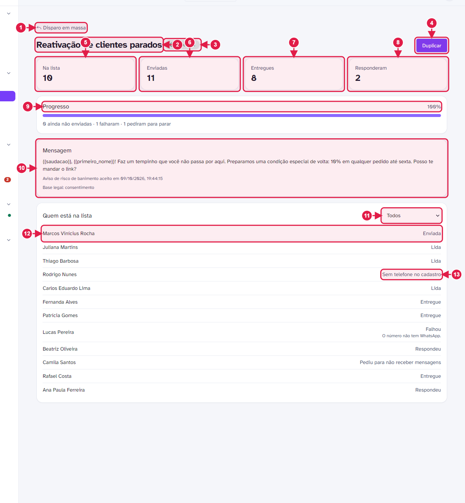
O detalhe de uma campanha concluída.
← Disparo em massa. Volta à lista.
Nome da campanha.
Situação. Se houve falha, aparece também “Último problema: …” com o código técnico.
Botões da situação. Eles somem quando impossíveis (não ficam apagados). Em Concluída resta só Duplicar.
Na lista. Quantas pessoas vão (ou foram) receber.
Enviadas.
Entregues.
Responderam. Conta quem respondeu até o prazo definido na configuração (72 horas por padrão).
Progresso. A barra e a frase “0 ainda não enviadas · 1 falharam · 1 pediram para parar”.
Mensagem. O texto (ou o modelo e as variáveis), a base legal e, quando aceito, a data do aviso de risco.
Filtrar destinatários. Todos, Ainda não enviadas, Enviadas, Entregues, Lidas, Responderam, Fora da lista e Falharam.
Um destinatário. O nome e, à direita, o estado: Na fila, Enviando, Enviada, Entregue, Lida, Respondeu, Falhou, Fora da lista, Cancelada ou Pediu para parar. Quem falhou mostra o motivo.
Motivo de exclusão. Em vez do estado, quem ficou fora mostra a frase do motivo (“Sem telefone no cadastro”).
A tela se atualiza sozinha a cada 10 segundos enquanto a campanha monta, envia ou está agendada, e por 2 horas depois de concluída. A lista de destinatários mostra 50 por vez (Carregar mais).
As ações
Ação
O que faz de verdade
Preparar lista
Roda na hora: busca as pessoas do recorte, aplica os vetos e congela um destinatário por pessoa (com o texto já pronto). Nada é enviado. Se o recorte não achar ninguém — “O recorte não encontrou nenhum contato. Ajuste o filtro.” — ou ninguém puder receber, a campanha volta a Rascunho.
Enviar teste
Manda uma mensagem real, pelo número da campanha, a um contato que você escolher. Veja abaixo.
Iniciar envio
Pede confirmação (“Começar a enviar para N pessoa(s)? O envio segue o ritmo do número e pode levar horas.”). Depois a campanha vira Enviando. Em número de QR code exige antes o aceite do risco de banimento.
Pausar
Para os novos envios. Sem confirmação. A mensagem que já estava saindo não é desfeita.
Retomar
Reinicia de onde parou, com as mesmas recusas do Iniciar. Uma campanha que pausou por teto de gasto só retoma depois de aumentar o teto.
Cancelar campanha
Pede confirmação: “Cancelar é definitivo: quem ainda não recebeu não recebe mais, e a campanha não volta a rodar.”. O que já saiu continua enviado.
Duplicar
Cria uma cópia em Rascunho, chamada “nome (cópia)”, com tudo menos os destinatários e o aceite do risco. A tela não abre a cópia: ela aparece na lista. É a única forma de “mudar” uma campanha já preparada.
Salvar ritmo
Ajusta intervalo, tetos e janela. Funciona em qualquer situação viva, inclusive enviando. Campo vazio herda o número; o valor 0 é recusado.
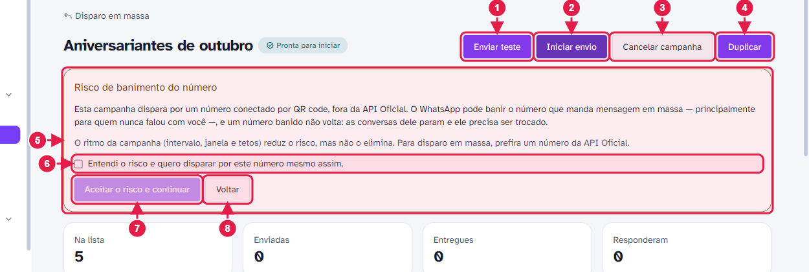
Ao tentar iniciar uma campanha de número de QR code, o aviso de risco aparece primeiro.
Enviar teste.
Iniciar envio.
Cancelar campanha.
Duplicar.
O aviso. “Esta campanha dispara por um número conectado por QR code, fora da API Oficial. O WhatsApp pode banir o número que manda mensagem em massa — principalmente para quem nunca falou com você —, e um número banido não volta.”
Entendi o risco… A caixa que destrava o botão.
Aceitar o risco e continuar. Grava quem aceitou e quando, e só então inicia. A cópia da campanha não herda o aceite.
Voltar. Fecha o aviso sem iniciar.
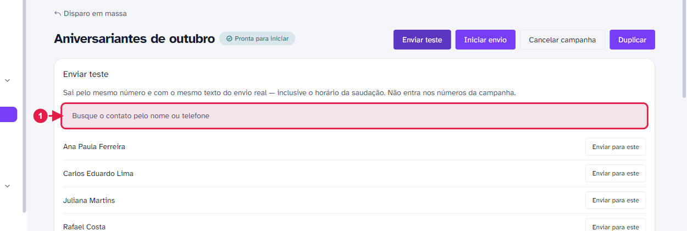
O cartão “Enviar teste”, em campanha “Pronta para iniciar”.
Busque o contato pelo nome ou telefone. A lista mostra até 8 contatos, cada um com Enviar para este.
Fechar. Fecha o cartão (fica logo abaixo da lista).
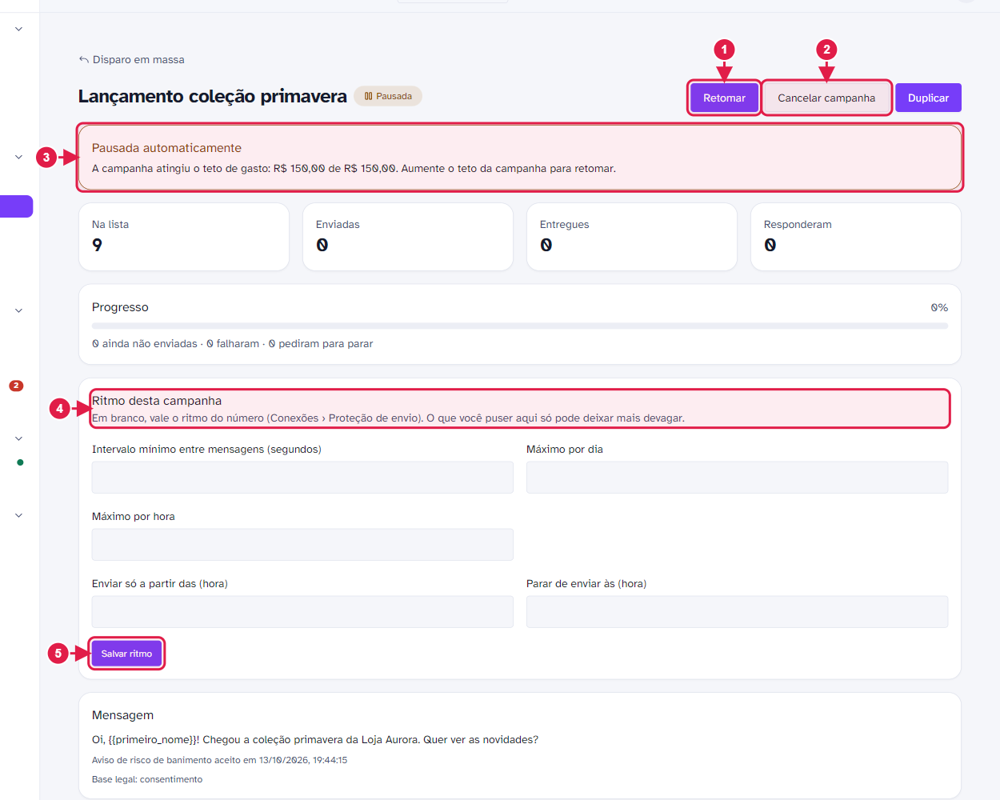
Uma campanha que o sistema pausou sozinho, com o motivo explicado.
Retomar.
Cancelar campanha.
Pausada automaticamente. A frase do motivo — aqui, “A campanha atingiu o teto de gasto: R$ 150,00 de R$ 150,00. Aumente o teto da campanha para retomar.”.
Ritmo desta campanha. Os mesmos campos da criação (o intervalo aparece também em campanha oficial).
Salvar ritmo. Grava o ritmo. Mostra “Ritmo salvo.”.
Pausas automáticas: qualidade do número vermelha, modelo rejeitado, pausado, desativado ou recategorizado, risco de banimento não aceito (campanha agendada que chegou na hora sem o aceite) e teto de gasto. Retomar com número de qualidade vermelha ou modelo reprovado é recusado.
Outros cartões do detalhe
Custo (só campanha oficial): custo da Meta (parte estimado até a Meta confirmar), custo de IA do atendimento a quem recebeu, total e custo por lead que respondeu.
Limite diário do portfólio na Meta (só oficial): “N de TETO contatos nas últimas 24 h”. O limite é do portfólio inteiro, somando números e campanhas. Quando bate, os envios esperam sozinhos. Sem faixa informada, vale a inicial de 250.
Quem responder: o funil e o agente que a campanha declarou.
Números desta campanha: quando há rodízio entre números, lista quais.
Editar uma campanha
O botão Editar só aparece em Rascunho. A tela é o mesmo formulário da criação, já preenchido, com o título “Editar campanha” e o aviso “Enquanto é rascunho, tudo muda. Depois de preparada, só o ritmo.”. Não tem “Falar também por estes números” nem o cartão de ritmo (o ritmo se ajusta no detalhe). O botão é Salvar alterações; depois de salvar, você volta ao detalhe e a campanha continua em Rascunho — é preciso Preparar lista de novo.
Configuração de campanhas
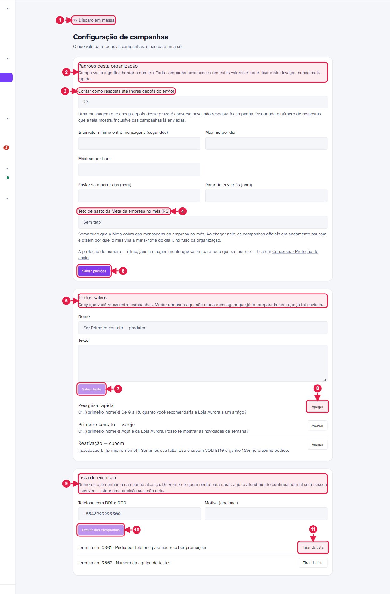
A configuração de campanhas.
← Disparo em massa.
Padrões desta organização. Valem para todas as campanhas, e não para uma só.
Contar como resposta até (horas depois do envio). Padrão 72 (de 1 a 720). Uma mensagem que chega depois desse prazo é conversa nova, não resposta à campanha. Muda o número de “Responderam”, inclusive nas campanhas já enviadas.
Teto de gasto da Meta da empresa no mês (R$). Soma tudo o que a Meta cobra no mês. Ao chegar nele, as campanhas oficiais em andamento pausam. O mês vira à meia-noite do dia 1, no fuso da organização.
Salvar padrões. Grava (“Padrões salvos.”).
Textos salvos. Um bloco de notas com a copy que você reusa.
Salvar texto. Nome (até 120) e texto (até 4.096). Nome repetido é recusado.
Apagar. Apaga o texto na hora, sem confirmação.
Lista de exclusão. Números que nenhuma campanha alcança. Diferente de quem pediu para parar: aqui o atendimento continua normal se a pessoa escrever.
Excluir das campanhas. Informe o telefone com DDI e DDD (por exemplo +5548999990000) e, se quiser, o motivo.
Tirar da lista. Remove o número da lista, sem confirmação. A lista mostra “termina em 0001” e o motivo.
Quando a organização tem número da API Oficial, a configuração mostra também o cartão “Mensagens de atendimento grátis do mês”: a Meta dá 1.000 mensagens de atendimento grátis por número a cada mês; você recebe um aviso na Central em 80% e em 100%.
O que fica registrado
Criar, preparar, iniciar, retomar, agendar, pausar, cancelar, duplicar, aceitar o risco, enviar teste, a pausa automática, as mudanças de configuração e a lista de exclusão geram registro na Auditoria. Editar um rascunho e os textos salvos não são auditados. Na conversa de quem respondeu, o Inbox mostra “Respondendo à campanha [nome]” com um link para a campanha (só para Gerente ou acima).
Busca empresas por segmento e cidade e deixa uma IA mandar, aos poucos, a primeira mensagem de WhatsApp a cada uma. Quem responde cai no funil e no Inbox.
Onde fica
CRM › Prospecção (só pelo hub “Ver tudo em CRM” e pela busca ⌘K)
Quem pode usar
Somente Administrador. Quem não é administrador é levado ao Inbox.
Endereço
/app/prospecting
Para que serve
A Prospecção procura empresas de um segmento numa cidade (por exemplo, clínicas de estética em São Paulo) e deixa um agente de IA abordar, aos poucos, cada uma delas pelo WhatsApp. Quem responde vira contato e negócio no funil e a conversa segue no Inbox.
É a tela de quem escreve primeiro a pessoas que nunca falaram com você. Por isso ela é a mais protegida do sistema: só o Administrador abre, tem ritmo diário limitado e as mensagens saem devagar.
O que você precisa ter antes
Uma chave da Apify (serviço externo e pago que busca empresas no Google Maps).
Um agente de IA publicado em modo automático, com a ferramenta de mover o funil.
Uma conexão de WhatsApp ativa do tipo QR code (WAHA), que aceita texto livre. A API Oficial da Meta não participa, porque exige modelo aprovado.
Um funil com pelo menos duas etapas abertas.
Uma chave de IA cadastrada em Credenciais (para o assistente de configuração).
A tela, de cima para baixo
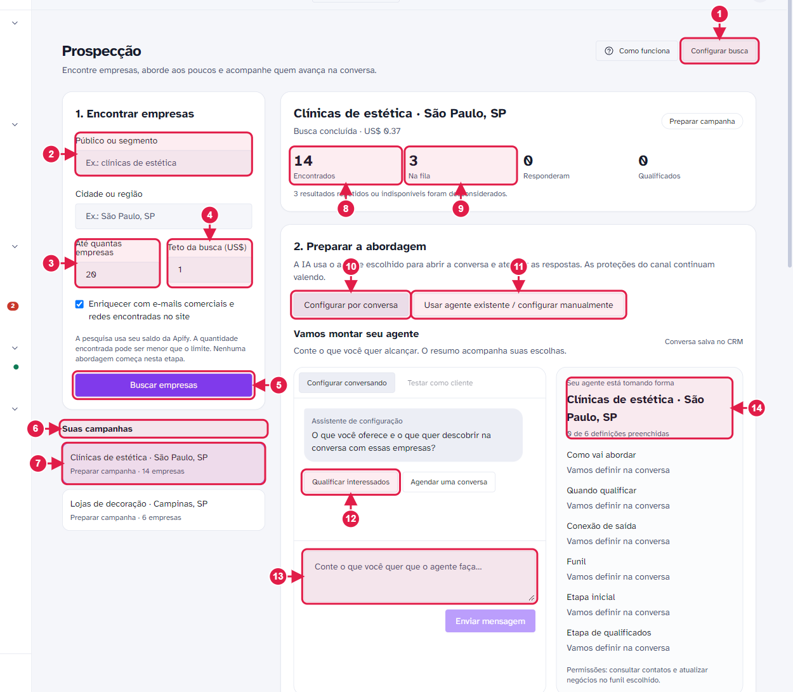
Prospecção, com duas campanhas de demonstração em rascunho.
Configurar busca. Mostra ou esconde o cartão da chave da Apify. O cartão aparece sozinho enquanto não há chave.
Público ou segmento. Obrigatório, de 2 a 120 caracteres (“clínicas de estética”).
Até quantas empresas. De 1 a 100 (padrão 20). A busca pode achar menos.
Teto da busca (US$). De 0,5 a 10 (padrão 1). É o limite de gasto daquela busca na Apify.
Buscar empresas. Dispara a busca. Fica apagado sem chave. Nenhuma abordagem começa nesta etapa.
Suas campanhas. Cada busca é uma “campanha” de prospecção. A lista mostra as 50 mais novas, com o estado e o número de empresas.
Uma campanha. Clique para abrir. Os rótulos de estado: Preparar campanha (rascunho), Em andamento, Pausada e Abordagens concluídas.
Encontrados. Quantas empresas a busca trouxe.
Na fila. Quantas já estão na fila de abordagem. Os outros números são Responderam e Qualificados.
Configurar por conversa. O assistente: você conta em palavras o que quer alcançar e ele monta o agente.
Usar agente existente / configurar manualmente. O modo manual, mostrado abaixo.
Sugestões de resposta. “Qualificar interessados” e “Agendar uma conversa” preenchem o primeiro pedido.
Mensagem para configurar o agente. Escreva livremente o que o agente deve fazer (até 3.000 caracteres).
O resumo do agente. “Seu agente está tomando forma”: mostra quantas das seis definições já foram preenchidas (como vai abordar, quando qualificar, conexão de saída, funil, etapa inicial, etapa de qualificados).
A chave da Apify
O cartão pede a Chave da Apify (campo de senha, no mínimo 10 caracteres). A chave é validada com a Apify e guardada cifrada no servidor. Cada busca tem o seu limite de gasto. O aviso “Chave de busca salva.” confirma.
1. Encontrar empresas
Cole a chave da Apify (uma vez).
Preencha o segmento e a cidade ou região (“São Paulo, SP”), o limite de empresas e o teto de gasto.
Deixe marcado “Enriquecer com e-mails comerciais e redes encontradas no site” se quiser, além do telefone, e-mails e redes das empresas.
Clique em Buscar empresas. A tela avisa “Solicitação registrada. Acompanhe o estado da busca nesta tela.”.
Os resultados chegam sozinhos e viram a lista de empresas da campanha. O telefone é normalizado só para números brasileiros (10 ou 11 dígitos); empresa sem telefone brasileiro válido nunca é abordada. Empresas já encontradas antes não voltam como novas; elas contam em “N resultados repetidos ou indisponíveis foram desconsiderados”. O estado da busca pode ser Iniciando busca, Em andamento, Busca concluída, Revisar falha ou Busca sem confirmação (a busca ficou mais de 2 minutos sem resposta: confira no painel da Apify antes de repetir, para não pagar duas vezes).
2. Preparar a abordagem
Este cartão só aparece numa campanha em rascunho, com busca concluída e ao menos uma empresa. Há dois modos.
Modo conversa
O assistente pergunta “O que você oferece e o que quer descobrir na conversa com essas empresas?”. Você responde e ele monta o agente. As abas são Configurar conversando e Testar como cliente. Quando as seis definições estão preenchidas aparece Publicar e usar agente.
Testar como cliente: escreva como um cliente. O teste usa um rascunho pausado e consome créditos de IA, mas não envia mensagem aos seus contatos. Cada teste avalia uma mensagem; ações sobre contatos e envios não são executadas.
Manter a continuidade do agente neste canal (opcional): o mesmo agente continua as conversas desse canal, salvo mudança de assunto ou transferência.
Publicar e usar agente cria e publica um agente comercial. Ao publicar, o agente passa a poder atender mensagens recebidas naquele canal — mas a prospecção só começa quando você iniciar a campanha.
Modo manual
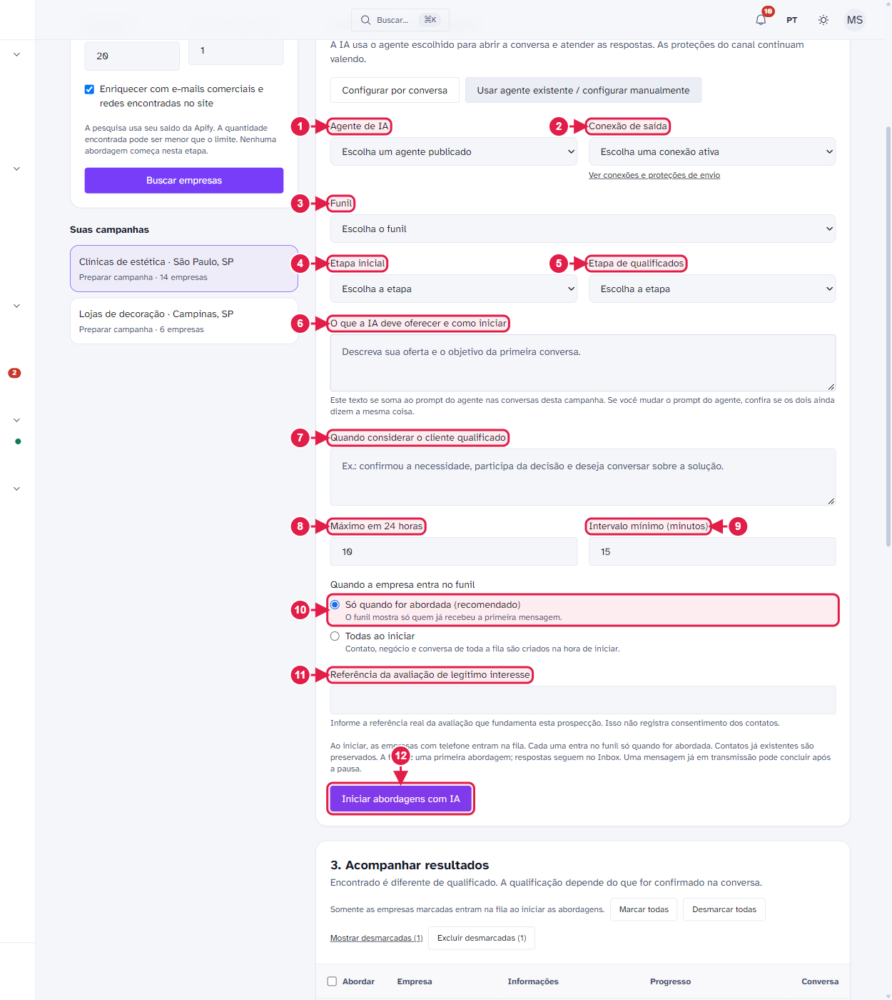
O modo manual. Cada campo precisa estar preenchido para o botão final destravar.
Agente de IA. Escolha um agente já publicado.
Conexão de saída. Só aparecem conexões ativas (Funcionando). O link Ver conexões e proteções de envio leva a Conexões.
Funil. Para onde vão as empresas.
Etapa inicial. Onde a empresa entra.
Etapa de qualificados. Onde o negócio precisa estar para contar como “Qualificado”. Precisa ser diferente da inicial.
O que a IA deve oferecer e como iniciar. De 10 a 2.000 caracteres. O texto se soma ao prompt do agente nas conversas desta campanha; se você mudar o prompt do agente, confira se os dois ainda dizem a mesma coisa.
Quando considerar o cliente qualificado. De 10 a 2.000 caracteres (“confirmou a necessidade, participa da decisão e deseja conversar sobre a solução”).
Máximo em 24 horas. De 1 a 50 abordagens (padrão 10).
Intervalo mínimo (minutos). De 5 a 1.440 (padrão 15) entre uma abordagem e outra.
Quando a empresa entra no funil.Só quando for abordada (recomendado: o funil mostra só quem já recebeu a primeira mensagem) ou Todas ao iniciar (cria contato, negócio e conversa de toda a fila na hora de iniciar).
Referência da avaliação de legítimo interesse. Obrigatório (de 3 a 500 caracteres). Informe a referência real da avaliação que fundamenta esta prospecção. Isso não registra consentimento dos contatos.
Iniciar abordagens com IA. Começa de verdade. Fica apagado sem agente ou sem conexão ativa.
3. Acompanhar resultados
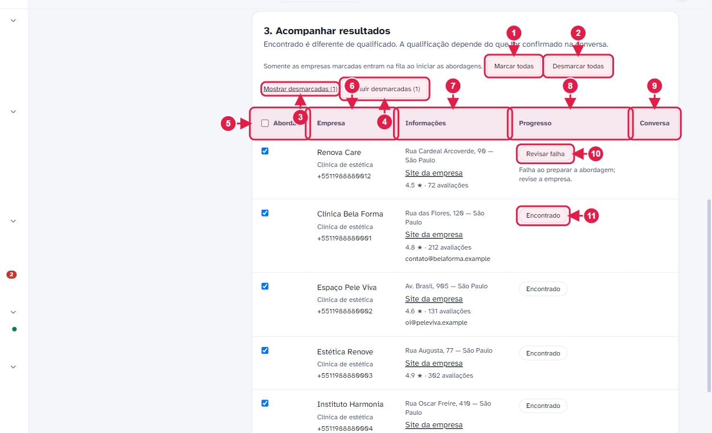
A tabela de resultados.
Marcar todas. Só em rascunho ou em campanha pausada.
Desmarcar todas.
Mostrar desmarcadas. Mostra (ou esconde) as que você tirou da fila.
Excluir desmarcadas. Tira essas empresas da lista. Pede “Confirmar exclusão”: elas podem reaparecer como novas em outra busca.
Abordar. A caixa de seleção. Só as marcadas entram na fila.
Empresa. Nome, categoria e telefone (ou “Sem telefone”).
Informações. Endereço, site, nota e avaliações e e-mails.
Progresso. O estado de cada empresa.
Conversa. O link Abrir no Inbox, quando já existe conversa.
Revisar falha. Houve erro nessa empresa; a mensagem aparece embaixo.
Encontrado. Ainda não está na fila.
Os estados de cada empresa são: Encontrado, Na fila, Preparando abordagem, Abordado, Não abordado, Respondeu, Qualificado e Revisar falha. Um “Não abordado” mostra o motivo — por exemplo, “Contato já existe no CRM; atendimento preservado.” (quem já é seu contato nunca é abordado de novo). A tabela mostra até 5.000 empresas e atualiza a cada 10 segundos.
O que acontece quando você inicia
Só pode haver uma campanha “em andamento” por organização. Para iniciar outra, pause a atual.
A primeira abordagem é preparada cerca de um minuto depois do clique, e as seguintes saem no ritmo escolhido. A cada minuto, o sistema envia no máximo uma abordagem.
Cada mensagem é escrita pela IA, curta e transparente, com dados públicos da empresa, e termina com o rodapé fixo “Se não quiser mais receber mensagens, responda PARAR.”.
Respeita a janela de envio do número (padrão 7h–22h), o aquecimento do número (um número novo manda poucas por dia: 5, 12, 25 ou 50 conforme a idade) e o teto global de 50 abordagens em 24 horas por organização.
Antes de cada envio o sistema confere de novo: campanha rodando, contato não bloqueado, sem pedido de parar, sem atendente humano e sem mensagem anterior.
Empresas desmarcadas, sem telefone ou que já são seus contatos ficam como Não abordado.
Quem pode o quê
Só o Administrador abre a tela. Chamadas por token de API só podem configurar, buscar e pausar: iniciar e retomar exigem a tela, para o envio ficar sob controle de uma pessoa. Tudo fica registrado na auditoria (prospecting.changed, prospecting.approach_sent) e sessões de suporte temporário não gravam nada.
O que ficou combinado, com prazo — e o que já venceu sem ninguém fazer. Lista agrupada por atraso, ou calendário do mês.
Onde fica
CRM › Tarefas
Quem pode usar
Todos veem. Criar, editar, concluir e apagar: Atendente ou acima.
Endereço
/app/tasks
Para que serve
As Tarefas guardam o que ficou combinado e tem prazo — “ligar de volta na terça”, “cobrar o comprovante” —, para o combinado não depender da memória de ninguém. A tela destaca o que já venceu sem ninguém fazer.
Tarefas não mandam mensagem a cliente, não usam IA e não chamam serviço externo: só registram. Quem cria tarefas sozinhos, além de você, são os agentes de IA, as automações e a API.
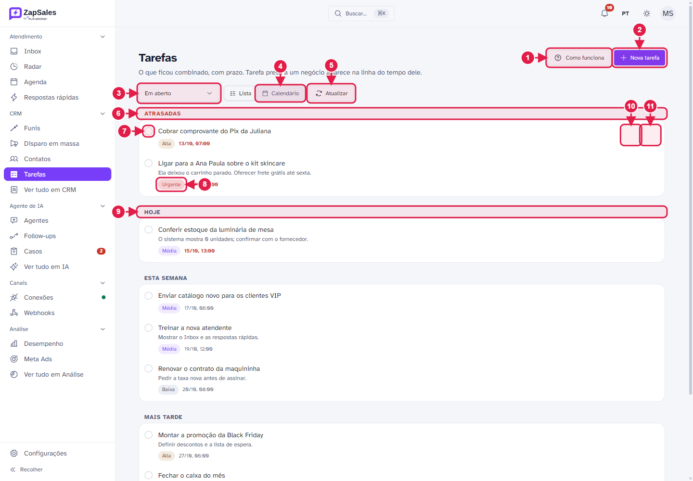
A lista de tarefas, agrupada pela urgência do prazo.
Como funciona. Painel de ajuda.
Nova tarefa. Só para Atendente ou acima.
Situação. Filtra por Em aberto (padrão: pendentes e em andamento), Pendente, Em andamento, Concluída ou Cancelada.
Lista · Calendário. Troca a visão.
Atualizar. Recarrega as tarefas.
Os grupos. Na ordem: Atrasadas (título vermelho), Hoje, Esta semana, Mais tarde, Sem prazo e Encerradas. Só aparecem os grupos que têm tarefa.
A caixinha redonda. Marca a tarefa como concluída (e reabre, se já está concluída).
Prioridade.Baixa (cinza), Média (azul), Alta (amarelo) ou Urgente (vermelho).
O prazo. No formato dd/mm hh:mm, ou “Sem prazo”. Fica vermelho e em negrito quando atrasado.
Editar (lápis). Aparece ao passar o mouse sobre a linha.
Apagar (lixeira). Pede confirmação em dois cliques — o ícone vira um botão vermelho Confirmar. Apagar é definitivo, sem lixeira.
A linha mostra o título, a descrição em uma linha, a prioridade e o prazo. Não mostra a situação, o negócio ligado nem o responsável. Sem nenhuma tarefa, a tela diz “Nenhuma tarefa por aqui”.
Grupo
O que entra
Atrasadas
Prazo antes da meia-noite de hoje.
Hoje
Prazo hoje — mesmo que a hora já tenha passado (nesse caso o prazo fica vermelho, mas a tarefa continua em “Hoje”).
Esta semana
De hoje até 7 dias à frente (uma janela móvel, não a semana do calendário).
Mais tarde
Depois disso.
Sem prazo
Tarefas sem data.
Encerradas
Concluídas ou canceladas. No filtro “Em aberto” este grupo não aparece.
A visão Calendário
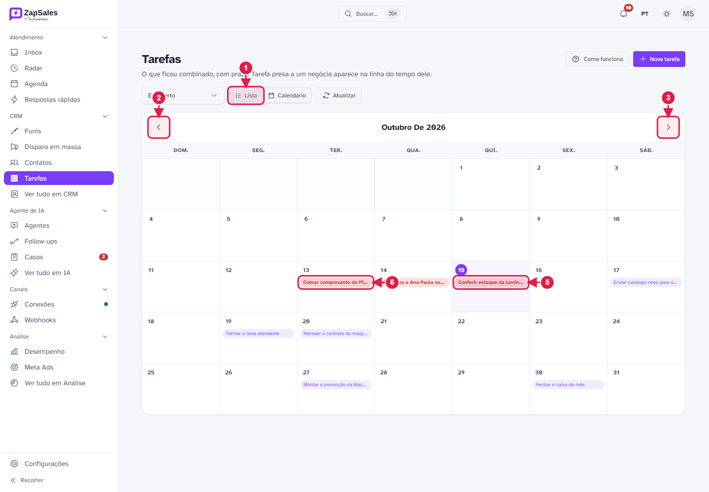
Tarefas no calendário do mês.
Lista. Volta à visão de lista.
Mês anterior.
Próximo mês.
Uma tarefa de hoje. O dia de hoje vem destacado. Clique na tarefa para abrir a edição.
Uma tarefa atrasada. Em vermelho. As encerradas ficam cinza e riscadas; as normais, em azul.
O título do mês aparece no centro, e os dias da semana começam no domingo.
Cada dia mostra até 3 tarefas e “+N mais” quando passa disso.
Clicar num dia vazio abre “Nova tarefa” já com aquele dia (Atendente ou acima).
Tarefas sem prazo não aparecem no calendário. O calendário respeita o filtro de situação.
Criar ou editar uma tarefa
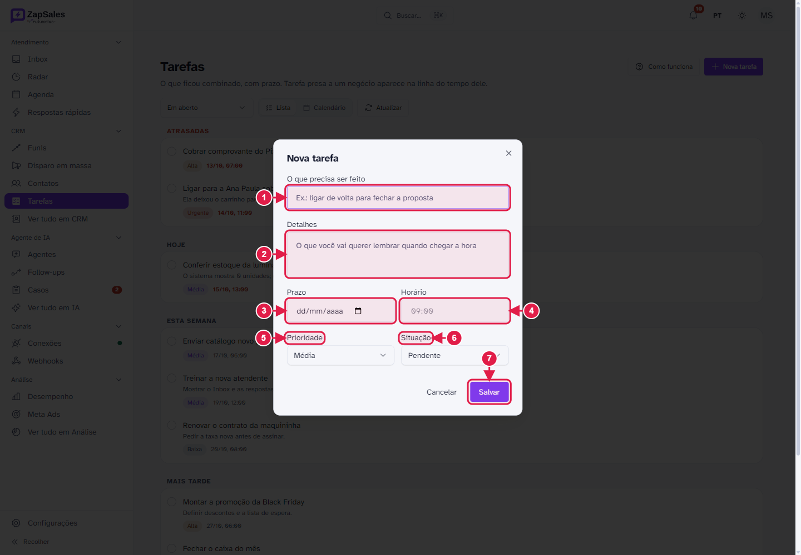
A janela “Nova tarefa”.
O que precisa ser feito. Obrigatório (“Escreva um título para a tarefa.”). Até 255 caracteres.
Detalhes. Opcional, até 5.000 caracteres: “O que você vai querer lembrar quando chegar a hora”.
Prazo. A data. Opcional. Se você clicou num dia do calendário, já vem preenchida.
Horário. Padrão 09:00. Fica apagado enquanto não houver prazo. Vale no fuso do seu navegador.
Prioridade. Baixa, Média (padrão), Alta ou Urgente.
Situação. Pendente (padrão), Em andamento, Concluída ou Cancelada.
Salvar. Grava e fecha. Se falhar, uma faixa vermelha mostra o motivo.
As tarefas ficam registradas na auditoria (crm_task.created, crm_task.updated, crm_task.deleted). A lista mostra até 500 tarefas, em ordem de prazo, e se atualiza quando você volta para a aba.
Quem pode o quê
Somente leitura vê as tarefas, mas sem o botão Nova tarefa, a caixinha (desabilitada) e os ícones de editar e apagar. Atendente ou acima cria, edita, conclui e apaga.
O balcão: registre o que foi feito ou vendido ao cliente, quanto ele paga e como pagou, e feche a conta. A entrada cai na conta financeira da forma de pagamento.
Onde fica
CRM › Ver tudo em CRM › Comandas (também pela busca ⌘K)
Quem pode usar
Todos veem. Abrir, incluir itens, finalizar e cancelar: Atendente ou acima. Estornar: Gerente ou acima.
Endereço
/app/comandas
Para que serve
A comanda é a conta do cliente no balcão: você lista o que foi feito (serviços e produtos avulsos) e quanto custa, escolhe como o cliente pagou e fecha. Ao finalizar, o dinheiro entra, já como pago, na conta financeira ligada àquela forma de pagamento — e aparece em Faturamento.
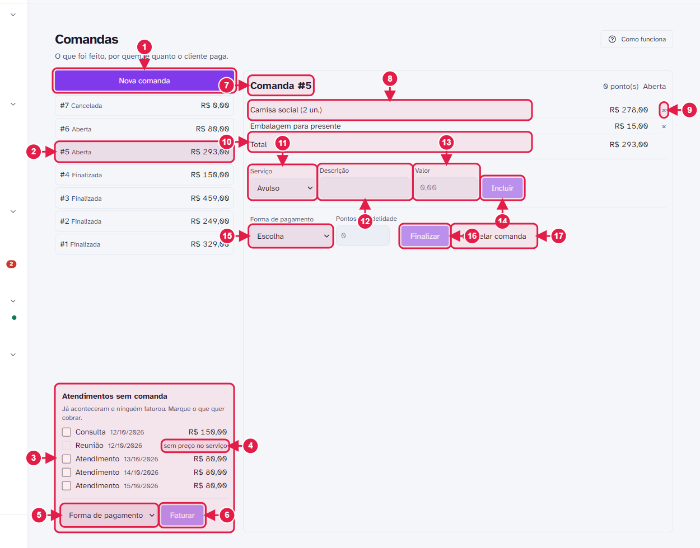
A tela de Comandas, com a comanda #5 aberta.
Nova comanda. Cria uma comanda vazia, aberta, com número sequencial. Quem a abriu fica como atendente.
A lista de comandas. As 50 mais novas, da maior para a menor. Cada linha mostra o número, a situação (Aberta, Finalizada, Cancelada) e o total.
Atendimentos sem comanda. Compromissos da Agenda que já aconteceram e ninguém cobrou. “Marque o que quer cobrar.” Só aparece com pelo menos um, para Atendente ou acima (últimos 30 dias, confirmados ou realizados).
“sem preço no serviço”. O tipo de agendamento não tem preço padrão; esse atendimento não pode ser faturado em lote (a caixinha fica apagada).
Forma de pagamento (em lote). Escolha como esses atendimentos foram pagos.
Faturar. Mostra o total marcado, por moeda (“Faturar (R$ 150,00)”). Para cada atendimento marcado cria uma comanda com um item (o preço do serviço) e já a finaliza.
Cabeçalho da comanda. “Comanda #5”, com os pontos de fidelidade do cliente (se houver cliente) e a situação.
Um item. A descrição (com “×N” quando a quantidade passa de 1 e “comissão X%” quando há) e o valor.
× (remover). Tira o item. Só em comanda aberta.
Total. A soma dos itens menos o desconto da comanda.
Serviço. “Avulso” ou um tipo de agendamento ativo. Escolher um preenche a descrição e, se o valor estiver vazio, o preço padrão.
Descrição. Obrigatória (até 200 caracteres).
Valor. Aceita 10, 10,50 e 1.234,56. A quantidade é sempre 1.
Incluir. Adiciona o item. Fica apagado sem descrição e valor válidos.
Forma de pagamento (fechamento). Obrigatória para finalizar.
Finalizar. Fecha a comanda, sem janela de confirmação.
Cancelar comanda. Marca como cancelada, sem confirmação e sem registrar motivo.
Ao lado da forma de pagamento aparece Pontos de fidelidade, mas só quando a comanda tem cliente. Uma comanda aberta por “Nova comanda” nasce sem cliente; por isso, na prática, o campo de pontos só aparece em comandas feitas pelo faturamento em lote, pela API ou por integrações.
O que acontece ao finalizar
É uma operação única e protegida: ou tudo acontece, ou nada.
A comanda vira Finalizada, com o total fechado (soma dos itens menos o desconto).
Cria-se um lançamento de entrada já pago na conta da forma de pagamento, descrito “Comanda #N”, classificado no primeiro plano de contas de entrada ativo (sem plano de entrada, fica sem classificação).
Cada item com atendente gera uma comissão, com o percentual da regra mais específica vigente na hora da inclusão (“pessoa e serviço” vence “pessoa”, que vence “serviço”).
Se há cliente e pontos informados, o cliente ganha os pontos de fidelidade.
O agendamento ligado é marcado como realizado (se não estava cancelado ou como falta).
Não manda mensagem ao cliente e não usa IA. Clicar duas vezes devolve o mesmo resultado. Recusas possíveis: forma sem conta, forma inativa (“Forma de pagamento inválida.”) e comanda cancelada (“Comanda cancelada não pode ser finalizada.”).
Estornar uma comanda finalizada
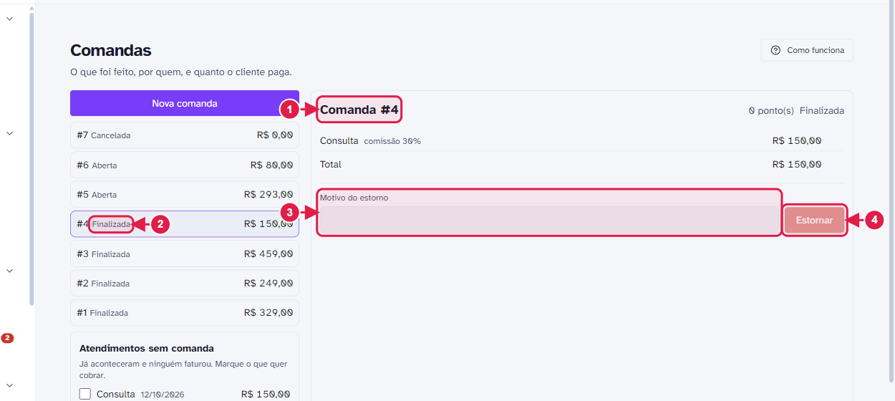
Uma comanda finalizada: só Gerente ou acima vê o estorno.
Cabeçalho. “Comanda #4”.
Situação. Finalizada (ou “· estornada”, depois do estorno).
Motivo do estorno. Obrigatório: de 3 a 500 caracteres.
Estornar. Botão vermelho. Não tem confirmação.
Estornar cria um contra-lançamento de saída (“Estorno da comanda #N”) na mesma conta, reverte as comissões e devolve os pontos. A entrada original não é alterada. O compromisso na Agenda não volta para “não realizado”. Estornar uma comanda já estornada devolve “já estornada”.
Quem pode o quê
Papel
Em Comandas
Somente leitura
Vê todas as comandas, sem nenhum botão.
Atendente
Abre, inclui e remove itens, finaliza, cancela e fatura em lote. Não vê o estorno.
Gerente e Administrador
Tudo isso, mais estornar.
Cada passo fica na auditoria (comanda.aberta, comanda.item_incluido, comanda.finalizada, comanda.estornada…). A tela mostra no máximo 50 comandas, sem filtro nem busca; o resultado do faturamento em lote não é mostrado na tela (a lista só se atualiza).
O catálogo da loja: o que você vende, o preço, o estoque e as fotos. É daqui que o agente de IA tira o preço quando um cliente pergunta.
Onde fica
CRM › Ver tudo em CRM › Produtos (também pela busca ⌘K)
Quem pode usar
Todos veem o catálogo. Criar, importar, mexer em fotos e desativar: Gerente ou acima.
Endereço
/app/products
Para que serve
O catálogo de Produtos é onde você cadastra o que a loja vende e por quanto. O agente de IA consulta esse catálogo quando um cliente pergunta preço, disponibilidade ou pede fotos. Se o catálogo está vazio, o agente responde que não encontrou o produto — mesmo que a loja tenha.
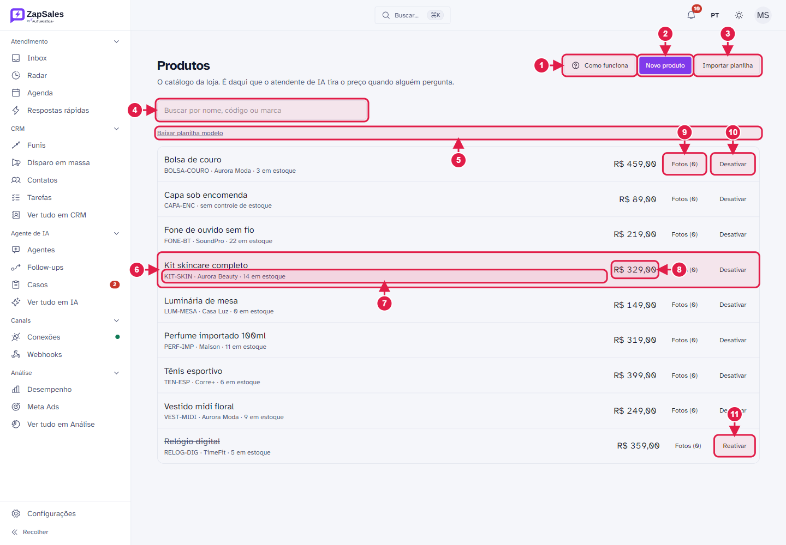
O catálogo da loja de demonstração (nove produtos, um deles desativado).
Como funciona. Painel de ajuda.
Novo produto. Abre o formulário de cadastro, logo abaixo do cabeçalho (o botão vira Cancelar enquanto ele está aberto).
Importar planilha. Escolha um arquivo .csv para cadastrar vários de uma vez. Veja abaixo.
Busca. “Buscar por nome, código ou marca”. Também procura na categoria. A busca filtra só entre os 500 primeiros produtos.
Baixar planilha modelo. Baixa modelo-catalogo.csv, com as colunas codigo, nome, marca, categoria, preco, custo, estoque e dois exemplos.
Uma linha de produto. A ordem é: ativos primeiro, depois por nome.
Código · marca · estoque. A linha cinza mostra o código, a marca e “N em estoque” (ou “sem controle de estoque”).
Preço. Na moeda da organização.
Fotos (N). Abre o painel de fotos do produto.
Desativar. Tira o produto da oferta do agente sem apagá-lo.
Reativar. No produto desativado (nome riscado e cinza), devolve-o ao catálogo.
Custo, categoria e descrição não aparecem na lista. Para quem não é Gerente, a tela mostra o catálogo sem nenhum botão.
Cadastrar um produto
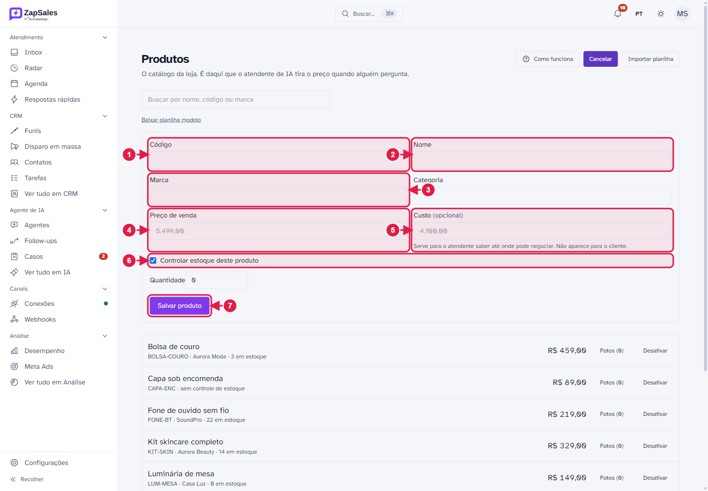
O formulário “Novo produto”.
Código. Obrigatório (até 60 caracteres). É a identidade do produto: não pode repetir na organização.
Nome. Obrigatório, de 2 a 200 caracteres.
Marca e Categoria. Opcionais, até 80 caracteres cada.
Preço de venda. Obrigatório. Aceita R$ 5.499,00, 5499,00, 5.499, 5499 e 1299,9 (um dígito depois da vírgula = centavos). Qualquer letra ou símbolo além de “R$” é recusado: “Preço inválido. Escreva assim: 5.499,00”.
Custo (opcional). “Serve para o atendente saber até onde pode negociar. Não aparece para o cliente.”.
Controlar estoque deste produto. Marcado por padrão; aparece o campo Quantidade. Desmarcado, o produto sempre aparece como disponível — o certo para item sob encomenda ou fracionado.
Salvar produto. Grava (“Produto cadastrado”).
A moeda não se escolhe: vem da moeda da organização (padrão BRL).
Se o código já existe: “Já existe um produto com esse código.”. Se algo faltar ou estiver fora do limite, o aviso é só “Dados inválidos.”, sem dizer qual campo.
Nada é enviado a clientes ao cadastrar.
As fotos do produto
O botão Fotos (N) abre um painel: “A primeira foto é a capa. O atendente de IA manda as fotos nesta ordem quando apresenta o produto.”
Adicionar foto: JPG ou PNG, até 5 MB, no máximo 5 fotos por produto. O formato é conferido pelo conteúdo do arquivo, não pela extensão.
← e → mudam a ordem; ✕ remove a foto. Remover apaga o arquivo de verdade do armazenamento.
As fotos ficam num armazenamento privado do sistema; a tela mostra links temporários de 1 hora (por isso, às vezes, “Sem prévia”).
As fotos só podem ser adicionadas depois de salvar o produto (a ajuda da tela fala em “até cinco fotos” no cadastro, mas é pelo botão da linha).
Importar uma planilha
Clique em Baixar planilha modelo e preencha (ou use sua planilha).
Salve como CSV UTF-8 (no Excel: Salvar como › CSV UTF-8).
Clique em Importar planilha e escolha o arquivo. O botão mostra “Importando…”.
Leia o resumo: “N novos · M atualizados · T linhas na planilha”, as colunas que não foram usadas e, se houver, as linhas que não entraram (até 20, com o motivo). Clique em Fechar.
Regra
Detalhe
Limites
Só .csv, até 5 MB e 500 linhas (“divida a planilha”).
Colunas obrigatórias
Nome e preço. Sem elas: “A planilha precisa de uma coluna de nome e de preço. Encontrei: …”. Os títulos são reconhecidos em português, inglês e espanhol, sem diferenciar acento ou maiúscula (por exemplo sku, produto, valor, qtd).
Código
É a chave. Reimportar com o mesmo código atualiza. Sem coluna de código, o nome vira o código. “IP15” e “ip15” são tratados como códigos diferentes, e a segunda linha é recusada.
Linha recusada
“sem nome do produto”, “preço não reconhecido”, “custo não reconhecido” ou “código repetido na planilha”.
Quantidade
Lida tirando tudo o que não é número: “3,5” vira 35 e “-3” vira 3.
Cadastros, importações, alterações de fotos e ativação ficam registrados na auditoria. Nada aqui custa dinheiro nem chama serviço externo.
O histórico das ligações de voz feitas e recebidas pela IA, com a transcrição de cada conversa, e o botão para mandar a IA ligar para um número. Depende da telefonia (SIP) instalada à parte.
Onde fica
CRM › Ver tudo em CRM › Chamadas (também pela busca ⌘K)
Quem pode usar
Gerente ou acima.
Endereço
/app/calls
Para que serve
A tela de Chamadas mostra o histórico das ligações de voz que a IA fez e recebeu pela linha telefônica da empresa (SIP), com a transcrição do que foi dito. Ela também permite mandar a IA ligar para um número.
São apenas as chamadas por linha telefônica comum (SIP). Ligações pelo próprio WhatsApp têm outra tela.
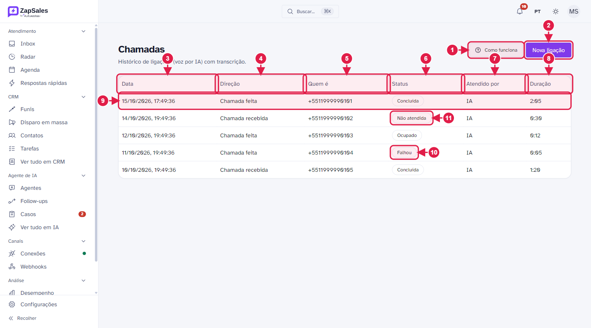
O histórico de chamadas (dados fictícios).
Como funciona. Painel de ajuda.
Nova ligação. Abre a janela para a IA ligar. Veja abaixo.
Data. Quando a chamada começou, com hora e segundos.
Direção.Chamada feita (saída) ou Chamada recebida (entrada).
Quem é. O número do outro lado. Na prática aparece sempre o número, nunca o nome do contato.
Status. Veja a tabela abaixo.
Atendido por. “IA” quando a IA conduziu; “Humano” para qualquer outro caso.
Duração. Em minutos e segundos (2:05).
Uma chamada. Clique na linha para abrir a transcrição.
Falhou. A ligação não completou por erro.
Não atendida. Tocou e ninguém atendeu.
Status
Quando aparece
Chamando
A ligação está tocando ou iniciando.
Em andamento
Conectada, em conversa agora.
Concluída
Terminou normalmente — e também qualquer fim sem motivo registrado. Uma ligação recebida que ninguém atendeu, sem motivo gravado, aparece como “Concluída”.
Não atendida
Terminou por tempo esgotado.
Ocupado
A linha do outro lado estava ocupada.
Falhou
Erro na ligação.
Cancelada
Foi cancelada antes de completar.
A lista mostra as 50 chamadas mais recentes, sem paginação nem filtro, e não se atualiza sozinha: recarregue a página.
A transcrição
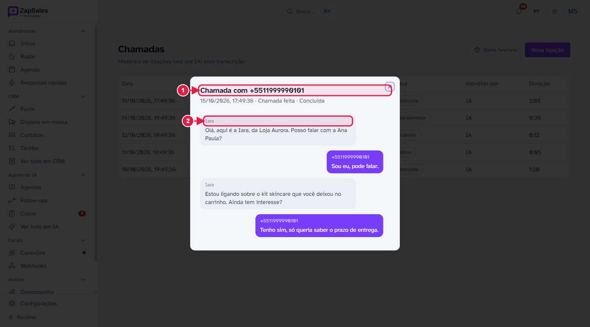
A transcrição de uma chamada.
Título e resumo. “Chamada com [número]”, e abaixo a data, a direção e o status.
Os balões. A fala da IA fica à esquerda, em cinza, sempre com o nome fixo “Iara” (não é o nome do agente da sua empresa). A do cliente fica à direita, em cor, com o número dele. Uma fala sem texto aparece como “(sem áudio detectado)”. Sem transcrição: “Sem transcrição pra esta chamada.”.
Mandar a IA ligar
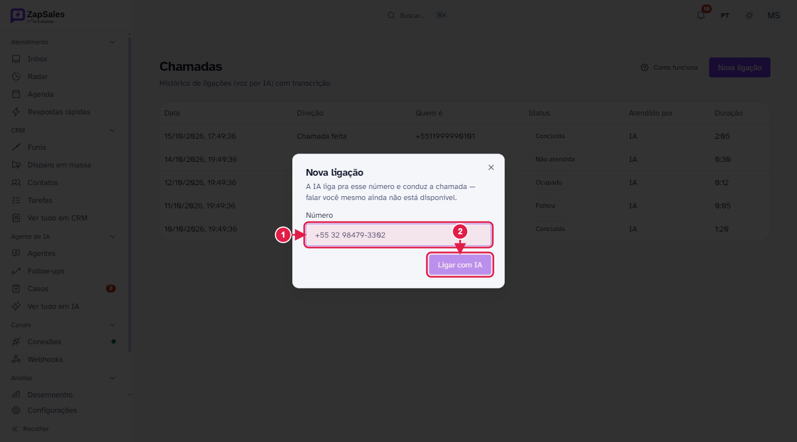
A janela “Nova ligação”.
Número. Obrigatório, com no mínimo 8 caracteres. Escreva só os dígitos, com o código do país (5532984793302). A tela não corrige o número: espaços e hífens vão junto.
Ligar com IA. Liga de verdade. Fica apagado com menos de 8 caracteres.
A janela explica: “A IA liga pra esse número e conduz a chamada — falar você mesmo ainda não está disponível.” Só existe o modo IA.
Se a empresa ainda não tem linha cadastrada, o aviso é “Nenhum trunk SIP configurado para esta organização (Configurações > Trunk SIP)” — o menu chama essa tela de Linha telefônica (SIP). Se há linha mas a central telefônica está fora do ar, aparece um erro técnico e uma linha “Falhou” entra na lista.
Quem pode o quê
Abrir a tela e ligar exigem Gerente ou acima. Um Atendente que digitar o endereço vê a tabela vazia (a consulta é recusada sem aviso) e, ao tentar ligar, “Você não tem permissão para esta ação.”. Cada ligação registra a ação call.created na auditoria. O cadastro da linha telefônica fica em Configurações › Linha telefônica (SIP) e é papel de Administrador no menu.
Ajuste as colunas de cada funil, diga para onde o agente de IA leva o cartão em cada passo do atendimento e, como Administrador, defina o vocabulário, os motivos de ganho e perda e os campos extras do negócio.
Onde fica
CRM › Ver tudo em CRM › Etapas do funil (também pela busca ⌘K)
Quem pode usar
Gerente ou acima abre e ajusta etapas e o mapeamento do agente. Só o Administrador vê e altera “Vocabulário e campos”.
Endereço
/app/settings/tenant/pipelines
Para que serve
Cada funil é um quadro de colunas (etapas) por onde o cliente avança. Esta tela é onde o Gerente ajusta essas colunas e onde decide para onde o agente de IA leva o cartão em cada fase do atendimento. O Administrador também define as palavras do funil, os motivos de perda e ganho e os campos extras do negócio.
As etapas de um funil
A tela mostra um cartão por funil (os arquivados não aparecem). Cada cartão tem três blocos: Etapas deste funil, Para onde o card vai em cada passo e, só para Administrador, Vocabulário e campos.
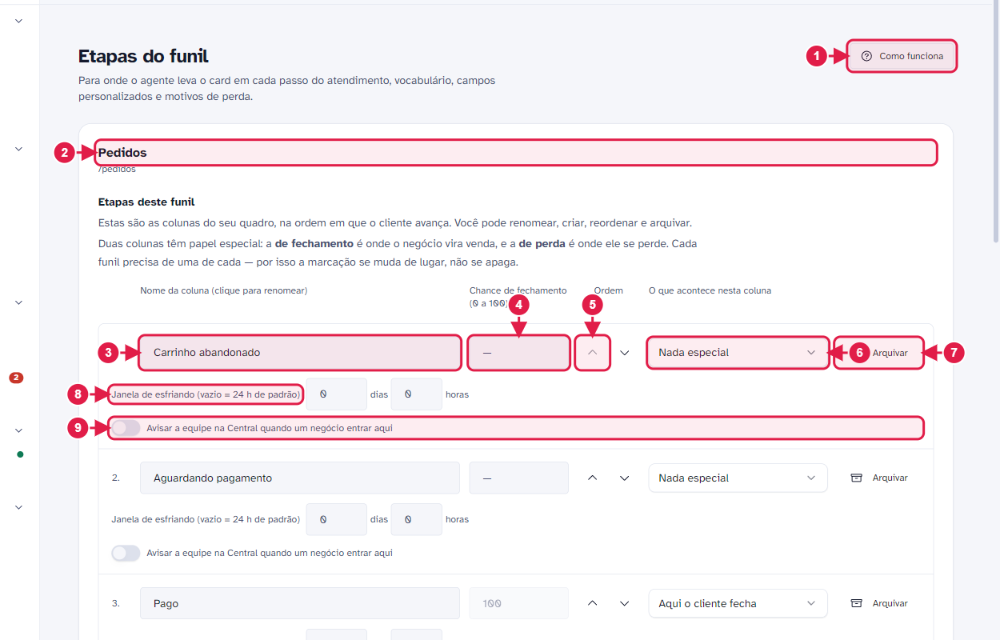
As etapas do funil “Pedidos”: cada coluna do quadro é uma linha.
Como funciona. Painel de ajuda.
O funil. Nome e endereço interno (“/pedidos”).
Nome da coluna. Clique e escreva para renomear. Grava ao apertar Enter ou ao sair do campo; Esc descarta. Até 80 caracteres; o nome não pode repetir o de outra etapa viva do mesmo funil.
Chance de fechamento (0 a 100). Quanto você acredita que um negócio nessa etapa fecha. Alimenta a previsão “ponderada” no topo das colunas do quadro. Vazio = sem calibração. Nas etapas de ganho e perda o campo fica apagado (valem 100 e 0).
Ordem. As setas ▲ ▼ movem a coluna uma posição.
O que acontece nesta coluna.Nada especial, Aqui o cliente fecha ou Aqui o cliente desiste.
Janela de esfriando. Em dias e horas (de 1 hora a 8.760). Depois desse tempo sem atividade o negócio passa a contar como “esfriando” no Radar. Vazio = 24 horas (e crítico em 72).
Avisar a equipe na Central quando um negócio entrar aqui. Desligado por padrão. Ligado, cada negócio que chega à etapa abre um aviso na Central.
“O assistente usa esta etapa para …”. Aparece quando um passo do agente aponta para essa etapa; o link “Mudar isso” leva ao mapeamento.
Se a última mudança de uma etapa foi feita pelo assistente ou automaticamente, aparece um selo “alterado pelo assistente há … — ver o que mudou” (leva à Auditoria). Mudanças feitas por pessoas não mostram selo.
Para criar uma etapa nova use Acrescentar etapa ao fim: escreva o nome e clique em Criar (ou Enter). Ela entra no fim do funil e não mexe em nenhum negócio.
Cada mudança fica na auditoria (pipeline.stage_created, pipeline.stage_updated…). Nada aqui manda mensagem a clientes.
Arquivar uma etapa
Clique em Arquivar na linha. Aparece o aviso: “A coluna sai do quadro e para de receber negócios novos. Nada é apagado — o histórico de quem passou por ela continua guardado —, mas não dá para trazer a coluna de volta por aqui.”.
Se há negócios na etapa, a tela pergunta “Para onde ele(s) vai/vão?” e pede para Escolher a etapa de destino (só etapas abertas). Se não existe outra etapa aberta, é preciso criar uma antes.
Clique em Mover os negócios e arquivar. Os negócios — inclusive os ganhos e perdidos — vão para o destino, cada um recebe um registro na linha do tempo (“Mudou de estágio … a etapa «X» foi arquivada”), e a etapa é arquivada.
A tela recusa arquivar a única etapa do funil, a de ganho ou de perda, ou escolher como destino uma etapa de ganho ou perda. Se a etapa é a que o assistente usa num passo, o aviso lembra que ele para de mover o cartão naquele passo até você escolher outra.
Para onde o card vai em cada passo
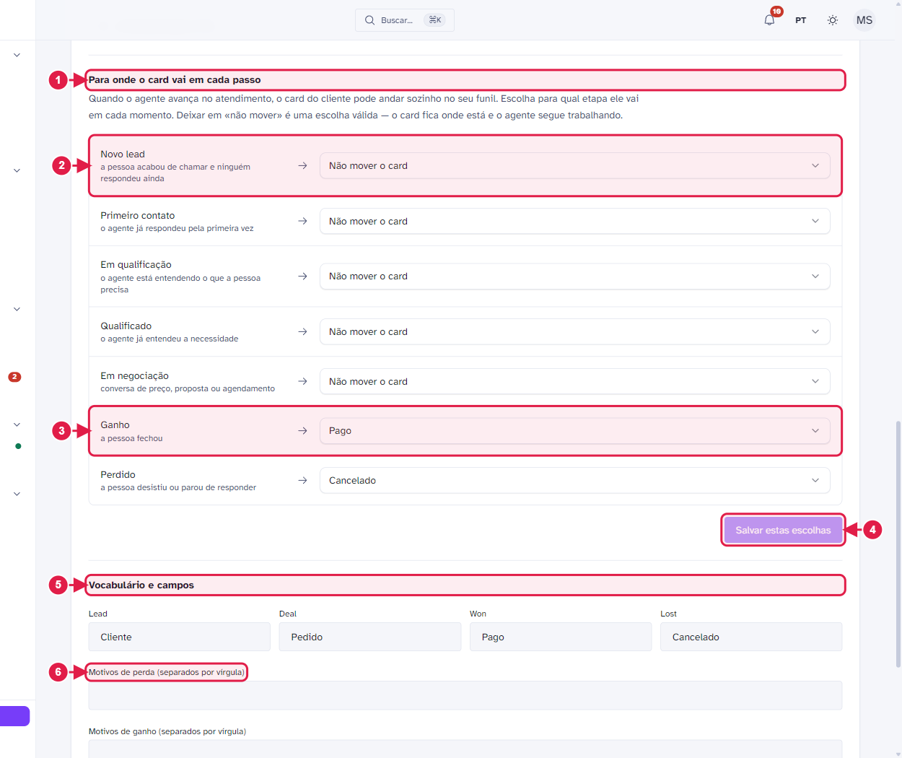
O mapeamento do agente e o início de “Vocabulário e campos”.
O bloco. “Quando o agente avança no atendimento, o card do cliente pode andar sozinho no seu funil. Escolha para qual etapa ele vai em cada momento.”
Um passo. Sete linhas fixas, cada uma com o seu seletor: Novo lead (a pessoa acabou de chamar e ninguém respondeu ainda), Primeiro contato (o agente já respondeu pela primeira vez), Em qualificação, Qualificado, Em negociação (preço, proposta ou agendamento), Ganho e Perdido.
Ganho e Perdido. “Ganho” só oferece etapas de fechamento; “Perdido”, só etapas de perda.
Salvar estas escolhas. Grava (“Escolhas salvas.”). Fica apagado sem mudança.
Vocabulário e campos. Só para Administrador.
Motivos de perda e de ganho. Listas separadas por vírgula.
Deixar um passo em “Não mover o card” é uma escolha válida: o card fica onde está e o agente segue trabalhando.
Uma etapa só pode servir a um passo: as já usadas somem das outras listas.
Efeito real: a partir daqui o agente de IA passa a mover os cartões sozinho. O clique não manda mensagem ao cliente por si.
Vocabulário e campos (só Administrador)
Este bloco só aparece para o Administrador, e um único botão, Salvar vocabulário e campos, grava tudo de uma vez (“[funil] atualizado.”).
Item
O que faz
Lead · Deal · Won · Lost
Quatro campos (os rótulos aparecem em inglês) que definem as palavras do funil: o que é um lead, um negócio, ganho e perdido. Numa loja virtual, por exemplo: Cliente, Pedido, Pago, Cancelado. De 1 a 40 caracteres. Hoje essas palavras só aparecem na barra de seleção em lote do quadro (“1 Cliente selecionado”).
Motivos de perda
Separados por vírgula (até 50). Cada um pode ter uma categoria (Cliente, Concorrência, Mérito, Nós, Ausência ou Sem categoria), usada no relatório de perdas. Os motivos cadastrados substituem a lista padrão na janela “Marcar como perdido”. Um motivo não pode conter vírgula.
Motivos de ganho
Sem lista, o motivo de ganho é texto livre; com lista, só o que está nela é aceito. A caixa “Exigir motivo de ganho ao fechar como ganho” torna o motivo obrigatório (o menu do cartão “Marcar como ganho” não pergunta e será recusado).
Negócio encerrado que volta abre um negócio novo
Desligado, arrastar um negócio perdido ou ganho para uma etapa aberta reabre o mesmo negócio. Ligado, o encerrado fica como está e o quadro oferece criar uma nova tentativa com o mesmo contato.
Campos do lead neste funil
Campos extras que aparecem na ficha do negócio (e onde o follow-up pode gravar a resposta). Cada um tem chave (letras, números e _, começando por letra), rótulo e tipo (text, textarea, number, date, select, multiselect, boolean, email, phone, url). Até 50 campos. Adicionar campo cria um novo; a lixeira remove.
Exigir o preenchimento
Para cada campo, marque as etapas (e “Ao ganhar” / “Ao perder”) em que ele precisa estar preenchido para o negócio entrar ou ser fechado. Sem marca nenhuma, nunca é exigido.
Quem pode o quê
Ação
Papel mínimo
Abrir a tela, ajustar etapas e o mapeamento do agente
Gerente
Vocabulário, motivos, reabertura e campos personalizados
Administrador
Criar, renomear, arquivar e excluir funis (em Funis)
Gerente
Se não houver nenhum funil, a tela mostra “Você ainda não tem nenhum funil.” — mas esse aviso está desatualizado: o funil se cria em Funis (“Criar meu primeiro funil”), e toda organização nova já nasce com um funil “Pedidos”.
Módulo opcional para quem vende para empresas: cadastro com razão social e CNPJ, preenchido sozinho com os dados públicos (BrasilAPI), e as pessoas e telefones de cada empresa.
Onde fica
CRM › Ver tudo em CRM › Empresas (só com o módulo “Empresas e pessoas” ligado na instalação)
Quem pode usar
Todos veem. Cadastrar e enriquecer: Gerente ou acima.
Endereço
/app/companies · /app/companies/[id]
Para que serve
Em Empresas você guarda as empresas que atende: razão social, nome fantasia, CNPJ e cidade. A partir do CNPJ, o sistema busca na internet os dados públicos da empresa e preenche o resto sozinho. Cada empresa fica ligada às pessoas que decidem dentro dela.
A lista de empresas (dados fictícios).
Como funciona. Painel de ajuda.
Nova empresa. Abre o formulário. O botão aparece para todos, mas só Gerente ou acima consegue criar.
Busca. “Buscar por nome ou CNPJ”, sem apertar nada (espera 250 ms depois que você para de digitar). Procura no nome fantasia, na razão social e no CNPJ — com ou sem pontos.
Nome fantasia. Clique para abrir a ficha. Mostra o nome fantasia, senão a razão social, senão “—”.
CNPJ. No formato 00.000.000/0000-00.
Situação. A situação cadastral que veio da Receita (ATIVA, BAIXADA…). Enquanto ela não chega, aparece o andamento do enriquecimento em inglês: pending, processing, completed ou failed.
Uma situação. “ATIVA” em letras maiúsculas — vem assim da BrasilAPI.
As colunas completas são: Nome fantasia, Razão social, CNPJ, Cidade/UF, Situação e Atualizado.
A lista mostra só as 50 mais recentes, sem “carregar mais”; use a busca para achar as demais.
Vazio: “Nenhuma empresa ainda.” — a mesma frase aparece se a busca não achar nada ou se a consulta falhar.
A tela não se atualiza sozinha: para ver o “pending” virar “ATIVA”, recarregue ou busque de novo.
Cadastrar uma empresa
A janela “Nova empresa”.
Razão social. Até 500 caracteres.
Nome fantasia. Até 500. Se você deixar vazio e preencher a razão social, o nome fantasia copia a razão social.
CNPJ. Com ou sem pontuação (00.000.000/0000-00). Precisa ter exatamente 14 dígitos e não ser uma sequência repetida. O sistema não confere os dígitos verificadores.
Criar. Só habilita com pelo menos um dos três campos preenchido.
Mensagens possíveis: “CNPJ inválido.”, “Já existe empresa com este CNPJ.” (o CNPJ é único por organização; duas empresas sem CNPJ e com o mesmo nome podem coexistir) e, para quem não é Gerente, “Permissão insuficiente. Requer role >= manager.”. Ao criar, a empresa nasce com enriquecimento pending e, se há CNPJ válido, uma consulta à BrasilAPI começa em segundo plano.
A ficha da empresa
A ficha de uma empresa enriquecida.
← Empresas. Volta à lista.
Nome e CNPJ.
Enriquecer CNPJ. Refaz a consulta à BrasilAPI e espera a resposta (“Enriquecendo…”). Sobrescreve razão social, nome fantasia, situação, porte, CNAE, endereço, e-mail e telefone com o que a BrasilAPI devolve — o que você editou à mão se perde.
Dados cadastrais. Razão social, Situação, Porte, CNAE (código — descrição), Endereço (rua, número, bairro, cidade, UF e CEP) e Enriquecimento. Quando falha, o campo mostra o motivo: not_found (“CNPJ não encontrado na BrasilAPI.”), timeout, upstream_error ou incomplete.
Pessoas / decisores. Quem está ligado à empresa, com o cargo. O nome leva à ficha da pessoa. Sem ninguém: “Nenhuma pessoa vinculada.”.
Telefones. Os contatos ligados às pessoas da empresa; o número leva à ficha em Contatos. Sem nenhum: “Nenhum telefone ligado às pessoas desta empresa.”.
O enriquecimento guarda a resposta bruta da BrasilAPI sem o quadro de sócios, por causa da LGPD. Criar e enriquecer ficam na auditoria (companies.created, companies.enriched).
Módulo opcional: as pessoas que decidem dentro de cada empresa (nome, e-mail, cargo e empresa). Os telefones e a conversa continuam em Contatos.
Onde fica
CRM › Ver tudo em CRM › Pessoas (só com o módulo “Empresas e pessoas” ligado na instalação)
Quem pode usar
Todos veem. Cadastrar: Gerente ou acima.
Endereço
/app/people · /app/people/[id]
Para que serve
Em Pessoas ficam os decisores de cada empresa: nome, e-mail, cargo e a empresa onde trabalham. É a metade “pessoa” do cadastro B2B; a metade “empresa” está em Empresas. Telefones e conversas continuam em Contatos — uma pessoa é ligada a um ou mais contatos.
A lista de pessoas (dados fictícios).
Como funciona.
Nova pessoa. Aparece para todos; só Gerente ou acima consegue criar.
Busca. “Buscar por nome ou e-mail” (espera 250 ms depois de você parar de digitar).
Nome. Clique para abrir a ficha.
E-mail. Ou “—”.
Atualizado. Data e hora da última alteração. A lista fica nessa ordem, as 50 mais recentes, sem “carregar mais”.
Cadastrar uma pessoa
Clique em Nova pessoa. A janela pede só o Nome completo (obrigatório, até 300 caracteres) e o E-mail (opcional, mas, se informado, precisa ser válido). Clique em Criar.
Não há campo de empresa, cargo ou telefone aqui: uma pessoa criada à mão nasce sem empresa e sem telefone, e a tela não tem como vinculá-los. Os vínculos vêm das Importações ou da API.
O sistema não detecta duplicados: duas pessoas com o mesmo nome coexistem.
Não existe excluir.
A ficha da pessoa
A ficha de Marina Souza.
← Pessoas.
Nome e e-mail.
Empresas. Cada vínculo mostra o nome da empresa (um link para a ficha da empresa) e o cargo. Sem vínculo: “Sem vínculo empresarial.”.
Telefones (contacts). Os números dos contatos ligados a esta pessoa; cada número leva a Contatos. Sem nenhum: “Nenhum telefone vinculado.”. Contatos mesclados não aparecem.
As observações da pessoa não são exibidas. Se o endereço da ficha não existe, a tela fica em “Carregando…” para sempre.
Módulo opcional: suba uma planilha CSV ou Excel com empresas, pessoas e telefones e confira depois, linha a linha, o que entrou, o que deu conflito e o que falhou.
Onde fica
CRM › Ver tudo em CRM › Importações (só com o módulo “Empresas e pessoas” ligado na instalação)
Quem pode usar
Gerente ou acima no menu e para importar. Quem digitar o endereço vê os lotes, mas só Gerente importa.
Endereço
/app/imports · /app/imports/[id]
Para que serve
As Importações trazem de uma vez uma planilha com empresas, pessoas e telefones e deixam você conferir, linha por linha, o que entrou, o que deu conflito e o que falhou. Esta é a importação do módulo B2B. A importação de contatos puros fica em Contatos, e a de negócios no Funis.
A lista de importações e o envio de um arquivo.
Como funciona.
Arquivo. Escolha um .csv ou .xlsx. O formato .xls antigo é recusado.
Importar. Fica apagado sem arquivo. Durante, mostra “Importando…”. Não há barra de progresso: a tela só responde quando tudo terminou.
Arquivo (coluna). O nome do arquivo de cada lote, com link para o detalhe. Mostra os 50 últimos.
Conflitos. Quantas linhas deram conflito.
Falhas. Quantas linhas falharam.
As outras colunas são Status (pending, processing ou completed, em inglês), Linhas, Sucesso e Data. Depois de processar, a tela diz “Lote processado: N ok, N conflitos, N falhas.”.
Como deve ser a planilha
Limites: até 2 MB e 2.000 linhas de dados, com cabeçalho e pelo menos uma linha. Em XLSX, só a primeira aba é lida.
CSV: o separador (vírgula, ponto e vírgula ou tab) e a codificação (UTF-8 ou Windows-1252) são detectados sozinhos.
Telefone: com “+”, de 8 a 15 dígitos; sem “+”, 10 ou 11 dígitos viram +55, e 12–13 dígitos precisam começar com 55. Celular brasileiro recebe o 9º dígito. Telefone inválido: a linha toda falha e nada é criado.
Dado
Títulos de coluna reconhecidos (exatamente, com acento)
Empresa
empresa, company, company_name, nome da empresa, razao, razão social
nome fantasia, fantasia, trade_name, nome_fantasia
CNPJ
cnpj
Pessoa
pessoa, decisor, contato, nome, person, person_name, nome do contato
Cargo
cargo, job_title, função, funcao, titulo
Telefone
telefone, phone, celular, whatsapp, fone
E-mail
email, e-mail, mail
O que a importação faz com cada linha
Empresa. Com CNPJ válido (14 dígitos), procura no banco; se já existe, reaproveita sem atualizar os dados; se não, cria. Sem CNPJ, cria uma empresa nova (entre importações duplica). CNPJ preenchido mas inválido é ignorado em silêncio.
Pessoa. Cria sempre uma pessoa nova (só evita repetir dentro do mesmo arquivo), ligada à empresa com o cargo, e a marca como decisor — todo mundo importado vira decisor. Não procura pessoa existente: reimportar duplica pessoas.
Telefone. Procura um contato com esse número. Se já está ligado a outra pessoa, a linha vira conflito (“Telefone já vinculado a outra pessoa.”); se existe sem pessoa, liga à pessoa; se não existe, cria o contato (origem “import_csv”).
Sucesso parcial conta: só empresa, só pessoa ou só telefone já é “success”.
A importação não cria negócio no funil, não manda mensagem, não dispara campanha e não mexe em consentimento. Os contatos criados passam a existir em Contatos. Em segundo plano, as empresas novas com CNPJ são enriquecidas uma por vez na BrasilAPI (pode demorar; ficam pending até lá). O lote fica registrado na auditoria (imports.companies_people).
O detalhe de um lote
As linhas de um lote: três certas, um conflito e uma falha.
← Importações.
Só conflitos. Filtra as linhas com conflito. Não há filtro só de falhas.
#. O número da linha. Linhas em branco no meio da planilha são descartadas antes, então pode não bater com o número que o Excel mostra (o cabeçalho conta como 1).
Erro. O motivo, ou “—”.
conflict. A pessoa e o vínculo com a empresa já foram criados nessa linha; só o telefone não foi mexido.
failed. Nada foi criado nessa linha.
O título mostra o nome do arquivo e o resumo (“completed · 3 certas · 1 conflitos · 1 falhas”). A tabela traz até 500 linhas por lote. Os estados aparecem em inglês (success, conflict, failed), e as colunas Company, Person e Contact mostram só os 8 primeiros caracteres do identificador, sem link.
Rascunhe, revise e envie propostas comerciais (PDF) pelo WhatsApp, do orçamento ao aceite. Módulo opcional que precisa ser ligado na instalação e na empresa.
Onde fica
CRM › Ver tudo em CRM › Propostas (só com o módulo Propostas ligado na instalação e a empresa tendo ligado em Configurações › Propostas)
Quem pode usar
Todos veem. Criar, editar e registrar aceite ou recusa: Atendente ou acima. Escolher modelo, preencher campos, enviar, revisar e descartar: Gerente ou acima.
As Propostas montam uma proposta comercial para um negócio do funil — itens, valores, textos do documento —, geram um PDF com a marca da empresa, enviam esse PDF ao cliente pelo WhatsApp e registram se foi aceita ou recusada. A IA também pode rascunhar propostas, que ficam esperando a sua revisão.
A lista de propostas
As propostas da loja de demonstração, uma em cada situação.
Como funciona.
Nova proposta. Só para Atendente ou acima.
Número. No formato 0001/2026 v1 (número, ano e versão), ou “Rascunho” enquanto ainda não tem número.
Título. Um link para o editor.
Status.Rascunho, Enviando, Enviada, Aceita, Recusada, Vencida, Cancelada ou Substituída.
Valor. O total, na moeda da proposta.
Aguardando revisão. Selo amarelo: um rascunho feito pela IA que ninguém revisou. Esses ficam sempre no alto da lista.
Uma proposta enviada. Com número, ano e versão.
Um rascunho. Ainda sem número.
A lista não tem filtro, busca nem paginação (até 500 propostas, as mais novas depois dos rascunhos da IA). Vazia: “Nenhuma proposta cadastrada ainda.”.
O ciclo de vida de uma proposta
Passo
Quem faz
Rascunho → Enviando → Enviada
O botão “Enviar ao cliente” (Gerente ou acima). Se a mensagem fica na fila (canal sem conexão), a proposta permanece “Enviando”.
Enviando → volta a Rascunho
Automático, depois de 5 minutos preso sem mensagem em fila ou na hora em que o envio falha. Mantém o número e abre um aviso crítico na Central (“Uma proposta não confirmou o envio”).
Enviada → Aceita ou Recusada
Os botões manuais, por uma pessoa (Atendente ou acima).
Enviada → Vencida
Automático, todo dia, quando a data de validade passou sem decisão. Abre o aviso “Uma proposta venceu sem decisão do cliente”.
Rascunho → Cancelada
“Descartar rascunho” (Gerente ou acima).
Enviada → Substituída
Quando uma nova versão (v2) é efetivamente enviada.
Um negócio só pode ter um rascunho aberto por vez. A ficha do negócio (dentro de Funis) também lista as propostas dele e tem “Nova proposta”.
Criar uma proposta
A tela “Nova Proposta Comercial”.
Voltar às propostas.
Negócio (Lead). Obrigatório. Cada opção é “título do negócio — nome do contato”. Com mais de 5 negócios, aparece um campo para filtrar por título, cliente ou telefone. Só entram negócios com contato (os 300 mais novos).
Título da proposta. Obrigatório, até 200 caracteres. É o nome que o cliente e a lista veem.
Validade da proposta. Já vem com hoje + 15 dias. Se você apagar a data, vale a validade padrão da empresa.
Condições de pagamento / Observações. Até 4.000 caracteres. Vazio, usa as condições padrão da empresa.
Cancelar.
Criar e abrir editor. Cria o rascunho e abre o editor. Não manda nada ao cliente.
Sem negócios elegíveis, a tela avisa “Nenhum negócio elegível encontrado” e o botão fica apagado. Se o negócio já tem rascunho: “Este negócio já tem um rascunho de proposta aberto. Abra-o e continue por lá.”. Os itens, produtos e valores entram depois, no editor.
O editor da proposta
É a tela mais longa: ela junta o documento (o texto que vira PDF), as condições, os itens e os botões de envio. Só um rascunho é editável; depois de enviada, qualquer mudança exige Revisar.
O topo do editor: título, modelo do documento e o que ainda falta preencher.
Título da proposta. Editável em rascunho.
Modelo do documento. Escolhe o modelo de texto (veja Modelos de proposta). Sem modelo, o editor mostra “Nenhum modelo escolhido para esta proposta ainda.” — ou “A IA sugeriu o modelo X.” com o botão Usar este modelo. Trocar o modelo com seções reescritas pergunta antes, porque as mudanças se perdem.
Pendências. “Não é possível enviar — N pendência(s). O que falta preencher:” lista os campos do modelo que ainda estão vazios.
Preencher com a conversa. A IA lê até 60 mensagens da conversa e sugere valores para os campos de briefing. Gasta IA. Nada é aplicado sem você confirmar em cada Preencher.
Preencher. Grava o valor digitado naquele campo. Campos calculados mostram uma dica: “Vem do total dos itens da proposta.”, “Vem do cadastro do contato.”.
Salvar seção. Cada seção do documento é uma caixa de texto. Quando você a reescreve, aparece também Voltar ao texto do modelo.
A parte de baixo: condições, itens, assistente, total e os botões de ação.
Condições. Texto livre (até 4.000 caracteres).
Válido até. A data limite dos valores.
Prazo (dias úteis). De 1 a 365.
Forma de pagamento. Texto livre da proposta (até 500 caracteres) — não tem relação com o Financeiro.
Descrição (coluna). A tabela de itens tem: Descrição, Qtd, Preço unit., Desconto e Subtotal.
Subtotal. Preço e desconto são digitados em reais. Preço vazio vale “A definir” e não entra no total. Item vindo do catálogo tem o preço travado.
Assistente. Escreva um pedido (“baixa 10% e tira a hospedagem”, até 500 caracteres).
Gerar. A IA propõe as mudanças; aparecem Aplicar e Descartar. Gasta IA; se o orçamento mensal de IA acabou, o campo fica apagado com o motivo.
+ Item à mão. Adiciona uma linha em branco. Ao lado, a busca “Buscar produto no catálogo…” adiciona um item do catálogo.
Total. A soma dos itens com preço.
Enviar ao cliente. Veja abaixo. Fica apagado sem modelo confirmado.
Descartar rascunho. Cancela (não apaga). Pede confirmação do navegador.
Ver como o cliente recebe. Gera o mesmo PDF do envio, mas sem número e com “[a definir]” nos campos pendentes, numa nova aba. Não grava, não envia e não gasta número.
Salvar. Grava o rascunho. Se outra pessoa mudou antes, o sistema pede para recarregar.
Preço do catálogo mudou: uma faixa amarela avisa e oferece Atualizar preços ou Ignorar aviso. Mas ao salvar o servidor sempre aplica o preço atual do catálogo; ignorar só esconde a faixa.
Linhas totalmente em branco são descartadas ao salvar. Uma linha com preço e sem descrição é recusada (“Preencha a descrição do item N.”).
Se o último envio falhou, uma faixa vermelha diz “O último envio falhou: …”. Em “Enviando”, a faixa amarela diz “Na fila do WhatsApp — sai assim que o canal conectar.”.
O que acontece ao enviar
O botão Enviar ao cliente (Gerente ou acima) primeiro salva o que estiver na tela. O sistema recusa se: não há itens (“A proposta não tem itens.”), há item sem preço, não há modelo confirmado, faltam campos do documento, não existe conversa com o contato, está fora do horário de envio do número ou o limite diário foi atingido. Se passar:
Aloca o número da proposta (contador por organização e ano; o número fica reservado mesmo se o envio falhar).
Gera o PDF com a marca da empresa e o guarda num armazenamento privado.
Manda o PDF como documento no WhatsApp, na conversa que originou a proposta ou, na falta dela, na conversa mais recente do contato — respeitando a janela de envio, o limite diário e o espaçamento anti-banimento.
Marca como Enviada, congela o modelo e o texto usados, atualiza o valor do negócio para o total da proposta, registra na linha do tempo e agenda um retorno automático (padrão: 3 dias depois, nunca depois da validade).
Se é a v2, a v1 vira Substituída.
Não existe e-mail nem link público de aceite: o cliente recebe apenas o PDF. Se o envio falha, a proposta volta a rascunho com o motivo.
Depois de enviada
Marcar como aceita / Marcar como recusada (Atendente ou acima): só registram a decisão (a recusa pergunta o motivo, opcional). Cancelam o retorno automático. Não enviam nada ao cliente e não mexem na etapa nem no valor do negócio. É o registro manual do que o cliente respondeu.
Revisar esta proposta (Gerente ou acima): cria uma v2 em rascunho, copiando título, condições, validade, itens (re-precificados), modelo e textos, herdando o número com a versão +1. A v1 continua “Enviada” até a v2 ser enviada.
O índice de tudo o que existe na área de IA, organizado em montar, ensinar e acompanhar o agente.
Onde fica
Agente de IA › Ver tudo em IA
Quem pode usar
Todos os papéis abrem a tela, mas cada cartão só aparece para quem tem o papel que a tela de destino exige.
Endereço
/app/ai
Para que serve
O menu lateral mostra só três itens da área de IA — Agentes, Follow-ups e Casos —, porque são os de uso diário. O item Ver tudo em IA abre esta página, com todas as telas da área, agrupadas pelo que você quer fazer.
A página “Agente de IA”, aberta por “Ver tudo em IA”.
A página abre para qualquer pessoa logada, mas esconde o que o seu papel não alcança. Um Gerente vê quase tudo; um Atendente vê só Casos, Alertas e Sugestões da IA; o Aviso no WhatsApp só aparece para Administrador. Se você não vê um cartão, é o papel — veja Papéis.
Quem atende por você: instruções, inteligência usada, ferramentas e publicação. Aqui você cria, ajusta, testa e publica os agentes de IA que respondem no WhatsApp.
Onde fica
Agente de IA › Agentes (também no menu lateral)
Quem pode usar
Abrir a lista e o editor: Gerente (o editor abre só para leitura). Criar, editar, publicar, testar, reverter e arquivar: Administrador.
Um agente de IA é um atendente automático que responde clientes pelo WhatsApp. Cada agente tem as suas instruções (como ele deve falar e o que nunca deve prometer), a inteligência artificial que usa para pensar, o número pelo qual atende, as ferramentas que pode usar (consultar contato, marcar horário, mover o cartão no funil…) e as regras de quando passar a conversa para uma pessoa.
Esta página mostra a lista de agentes e o editor, com todas as suas abas. É a tela mais importante da área de IA.
A lista de agentes
A lista de agentes: um publicado (e padrão) e um rascunho.
Busca por nome. Procura no nome do agente, sem diferenciar maiúsculas (mas diferenciando acentos).
Status. Filtra por Todos, Publicado, Rascunho ou Arquivado.
Incluir arquivados. Os arquivados ficam escondidos por padrão. Para ver os arquivados, marque esta caixa — só escolher o filtro “Arquivado” não basta.
Novo agente. Só para Administrador.
O cartão do agente: nome, a inteligência em uso (provedor · modelo), a descrição, o Tipo (mcp_agent é o agente completo de WhatsApp) e a Prioridade.
Selo “default”. É o agente padrão da organização. Só existe um, e ele não pode ser arquivado.
Selo “Publicado”. O agente tem uma versão no ar e não está pausado.
Menu “⋯”. Só Administrador. Veja abaixo.
Selo “Rascunho”. O agente não atende: nunca foi publicado ou está pausado.
Editar / Visualizar. Abre o editor. O Gerente vê “Visualizar”.
O menu “⋯” de cada agente
Ação
O que faz
Editar
Abre o editor.
Duplicar
Cria uma cópia chamada “nome (cópia)”, com a versão (instruções, ferramentas, chave, número, repasse, follow-up). A cópia nasce fora do ar, como rascunho. Não publica e não envia nada.
Renomear
Muda só o nome interno (até 120 caracteres). Versões e histórico não mudam.
Pausar / Despausar
Pausar faz o agente parar de atender, sem despublicar a versão. Despausar só funciona se há uma versão publicada; senão avisa “Conclua a configuração e publique uma versão”.
Arquivar (vermelho)
Tira o agente do ar e das listas. As versões publicadas ficam guardadas para auditoria. Não dá para desarquivar pela tela. O agente padrão não pode ser arquivado.
Criar um agente
Clique em Novo agente (Administrador). A tela é o mesmo formulário do editor (aba Configuração), mas sem as abas de Teste, Capacidades, Execuções, Histórico e Propostas.
A tela “Novo agente”.
Dê um nome e escreva as instruções (pelo menos uma frase).
Escolha a empresa de inteligência artificial, o modelo e a chave de acesso.
Escolha o número pelo qual ele atende. Dá para criar sem número; só a publicação exige um.
Clique em Criar agente. O agente nasce como versão 1 em rascunho e abre no editor.
Criar não publica, não envia mensagem e não gasta IA. O agente só começa a atender depois de Salvar rascunho → Publicar no editor.
O editor do agente
O editor tem uma faixa de operação no alto, seis abas e, na aba Configuração, três papéis. Para o Gerente, tudo abre em somente leitura.
Configuração › Conversa com o cliente
O topo do editor do agente “Atendente da Loja”.
Modo de operação.Assistido: revisar antes de enviar (a IA só prepara sugestões; uma pessoa aprova cada envio) ou Automático: responder com as regras do agente. Grava na hora, sem salvar nem publicar.
Pausar automático (vira Retomar automático). Para o atendimento automático, preservando a versão publicada. Fica apagado enquanto não há versão publicada. É a mesma pausa do menu “⋯” da lista.
As seis abas: Configuração, Teste, Capacidades, Execuções, Histórico e Propostas. Teste fica desabilitada enquanto o agente não tem nenhuma versão.
Selo de versão. “Publicado v1 + Rascunho v2” diz que a versão 1 está no ar e há uma versão 2 em edição. Outros estados: Novo, Publicado vN, Rascunho vN, Pausado · editando a vN, Sem versão.
Descartar alterações. Volta o formulário ao último estado salvo.
Salvar rascunho. Grava as mudanças sem mudar o que os clientes recebem. Se já existe um rascunho vigente, ele é atualizado no lugar; senão cria a próxima versão.
Publicar. Abre a confirmação de publicação. Quando algo impede, o botão fica apagado e o motivo aparece escrito logo abaixo. Veja Publicar.
Os três papéis do agente:Conversa com o cliente, Organiza o sistema e Confere antes de enviar.
Nome. Obrigatório, até 120 caracteres.
Ordem de preferência (0 a 1000). Quando mais de um agente pode atender a mesma conversa, o de número maior tenta primeiro. Com um agente só, deixe como está.
As instruções dele. O texto que define como o agente se comporta. Mínimo uma frase; máximo 20.000 caracteres.
Contadores. Caracteres usados e uma estimativa de tokens (pedaços de texto).
Estilo de resposta. Ligado, a resposta sai em várias mensagens curtas, como uma pessoa digita, em vez de um bloco só. Aparece então o campo Tamanho máximo por bolha (80 a 4.000).
A inteligência, o número e os freios de segurança.
Empresa de inteligência artificial. Anthropic (Claude), OpenAI (GPT), Google (Gemini), OpenRouter, DeepSeek, Requesty ou um provedor personalizado compatível com OpenAI. Trocar a empresa limpa o modelo e a chave.
Modelo. A lista de modelos da empresa escolhida (o recomendado vem marcado default). Se o catálogo estiver vazio, vira um campo de texto.
Chave de acesso. As chaves cadastradas em Credenciais, com o estado de cada uma (validada, validando, não validada, inválida, inativa), e, quando existe, “A chave desta instalação”. Sem nenhuma, a tela aponta para cadastrar. Uma chave que não está validada bloqueia a publicação.
Número conectado. Por qual WhatsApp o agente atende, com o estado (Conectado, Escaneie o QR, Conectando…, Parado, Caiu). Só o estado Conectado deixa publicar. Se o agente é acionado por um roteador, a tela avisa que este campo não se aplica.
Freios de segurança. Limites por atendimento para o agente não gastar sem controle: ações por atendimento (1–25, padrão 10), volume de texto (padrão 50.000), custo máximo em centavos (padrão 50), quantas mensagens anteriores ele lê (padrão 20) e o tamanho desse histórico (padrão 8.000).
Esperar antes de responder (segundos). Mensagens do mesmo contato dentro desse tempo viram uma resposta só. Vazio usa o padrão da instalação (8 s); máximo 60.
As ferramentas do agente, agrupadas em pacotes.
O que o agente pode fazer. O agente só consegue fazer o que estiver ligado aqui — e o que estiver ligado, ele fará sozinho durante o atendimento.
Contador de capacidades. “8 de 27 capacidades ligadas”. O teto é 27: acima disso o agente erra na hora de escolher o que usar.
Um pacote. Agrupa capacidades por jornada de trabalho: Atender e responder, Vender e mover o funil, Não perder o cliente, Passar para um humano, Organizar a operação, Aprender e evoluir. O interruptor liga o pacote.
Selo “parcial”. Só parte das capacidades do pacote está ligada.
“Só ligando uma a uma”. As capacidades críticas nunca entram por pacote: você precisa marcar cada uma de propósito.
Selos de risco.Só consulta (apenas lê), Altera dados (muda algo, dá para ver e desfazer) e Efeito que não dá para desfazer (algo que sai do sistema ou não volta, como falar com o cliente de verdade).
Escolher uma a uma (modo avançado). Mostra a lista completa de capacidades, cada uma com a explicação do que faz e do que toca.
Duas capacidades aparecem bloqueadas, com o motivo em azul: Enviar mensagem no WhatsApp e Chamar um atendente humano. O agente já faz as duas por conta própria, pelo caminho seguro do sistema (com opt-out e regra anti-banimento); não há nada a ligar.
Os materiais que o agente consulta e quando ele entra em ação.
O que ele consulta antes de responder. Marque os materiais do Conhecimento que este agente pode ler. Ele procura ali antes de responder e cita de onde tirou. Sem nenhum marcado, ele responde só com o que o modelo já sabe.
Um material. Mostra quantos trechos tem, ou “ainda não preparado”. Marcar um material que ainda não foi preparado não adianta: o agente não acha nada nele.
Quando ele entra em ação. O gatilho do agente.
Interruptores de filtro.Não responder em grupos e Não responder às mensagens que saem do seu próprio número (os dois ligados por padrão).
Só responder quando a mensagem falar de algo específico. Opcional. Ex.: pedido|status|orçamento (palavras separadas por |). Em branco, o agente responde a tudo.
Ainda nesse cartão: Quantos atendimentos ao mesmo tempo (um por conversa ou um por cliente) e Só atender em horário de funcionamento, com fuso, início, fim e dias da semana.
Repasse a uma pessoa, pedidos de ajuda, propostas, follow-up e comandos pelo celular.
Passar para uma pessoa. Deixa o agente chamar uma pessoa quando perceber que não é caso dele.
Palavras que chamam uma pessoa na hora. Padrão: falar com humano, atendente, pessoa real. Até 20 palavras; os botões tracejados recolocam as que você removeu.
Pedir ajuda sem sair da conversa. Diferente de passar a conversa: o agente continua atendendo e abre um pedido interno (um caso) quando esbarra em algo que só uma pessoa resolve. Vem desligado.
Propostas comerciais. Deixa o agente rascunhar uma proposta quando o cliente pede orçamento. Só vale com Propostas ligado na empresa.
Follow-up. Permite que o agente marque retornos sozinho, habilita os fluxos automáticos (escolha os fluxos publicados abaixo) e define horários em que o follow-up pode ser enviado. Veja Follow-ups.
Comandos pelo celular. Ligado, qualquer mensagem enviada pelo WhatsApp do celular pausa a IA nessa conversa até alguém mandar #on; #off pausa sem responder o cliente. Esse cartão grava na hora, sem publicar.
Configuração › Organiza o sistema
O segundo papel do agente.
Deixar o agente organizar o sistema depois de cada conversa. Separa quem conversa de quem mantém o sistema em dia. Ligado, o agente pode usar uma lista própria de ferramentas e, se você quiser, outro modelo (costuma ser um mais barato).
O que ele deixa de fazer com isto desligado. Ele continua atendendo e registrando o básico (etapa do cliente, retorno prometido, histórico). Deixa de decidir sobre a operação: abrir chamados, distribuir para a pessoa certa, organizar marcadores e etapas.
Em que negócios ele pode mexer. Marque os funis que o agente cuida. Ele conversa com qualquer cliente, mas só move, edita ou encerra negócio dos funis marcados. Sem nenhum marcado, ele não mexe em negócio nenhum. A tela avisa quando um funil marcado ainda não teve as etapas “traduzidas” em Configurações › Etapas do funil.
Configuração › Confere antes de enviar
As verificações antes de cada mensagem sair.
Estilo de resposta. Um interruptor que troca o travessão longo (—) por vírgula nas mensagens.
Antes de cada mensagem sair. “O assistente escreve, e o sistema confere.” São 11 verificações, em ordem: a primeira que barra interrompe as seguintes, e o assistente recebe o motivo para reescrever.
Uma verificação. Por exemplo, Respeitar quem pediu para parar: se a pessoa respondeu STOP ou SAIR, nada é enviado a ela.
“Isto não se desliga.” Nove das onze são fixas, por proteção do seu número e por obrigação legal (opt-out, dados apagados, ritmo de envio, janela de 24 horas de WhatsApp…). Duas têm interruptor: Conferir promessas em texto livre e Detectar tentativa de manipular o assistente; cada uma custa uma consulta extra ao modelo por mensagem.
Salvar e publicar
Salvar rascunho só guarda a versão em edição: o atendimento continua na versão publicada. Publicar faz a versão nova passar a atender já na próxima mensagem.
A confirmação de publicação: mostra só o que mudou em relação à versão no ar.
A janela explica que a versão atual continua guardada no histórico mas deixa de atender, e resume as diferenças: empresa e modelo, ferramentas adicionadas ou removidas e quantos caracteres o texto ganhou ou perdeu. Confirme em Publicar v2.
Para publicar, o sistema exige que:
exista um rascunho salvo e sem erros no formulário;
a chave esteja escolhida e validada (ou seja a chave da instalação, que precisa existir);
um número de WhatsApp esteja escolhido e com o estado Conectado;
o modelo exista.
Quando falta algo, o botão fica apagado e o primeiro motivo aparece escrito logo abaixo (por exemplo, “Escolha por qual número de WhatsApp ele atende. O rascunho está salvo; conecte um número em Conexões e volte aqui para publicar.”).
As outras abas
Teste
Converse com o agente como um cliente faria, com várias mensagens seguidas, sem enviar nada pelo WhatsApp. O teste usa o rascunho mais recente (ou a versão publicada, se não houver rascunho), mostra custo, tokens e latência de cada resposta e deixa corrigir uma resposta que saiu errada. Só Administrador envia mensagens de teste, e o teste gasta crédito de IA de verdade. O passo a passo está em Testar o agente em várias trocas e corrigir respostas.
Capacidades
O uso das ferramentas nos últimos 30 dias.
Resumo. Quantos usos e falhas nos últimos 30 dias, e quantas capacidades pedem uma decisão sua.
Atualizar.
Um cartão por capacidade (ligada ou já usada).
Selo de sinal. Do mais grave ao mais leve: falhando sempre, falhas, usada sem estar ligada, nunca usada, só em teste, funcionando, ligada agora.
Recomendação. O que fazer, em palavras simples.
Números. Usos, falhas, usos em teste e a última vez.
“Nunca usada”. Ligada há mais de 30 dias e sem uso: ocupa uma das 27 vagas e atrapalha a escolha do agente. Considere desligar.
Execuções
A aba Execuções, ainda sem registros.
Contador. As execuções recentes (as 25 mais novas); a lista se atualiza em tempo real.
Atualizar.
Colunas: Início, Status, Tipo (teste ou produção), Tokens (entrada/saída), Custo, Latência, Steps e Ações.
Estado vazio. “Nenhuma execução ainda.”
Clicar numa linha abre o painel Execução, com início, fim, tokens, custo, o erro (se houve) e o trace passo a passo: cada ferramenta chamada, com argumentos, resultado e erro, e os botões Ver conversa e Ver inbound.
Histórico
O histórico de versões.
Selo de situação:Rascunho, Publicado, Substituída ou Arquivado.
Número da versão.
Provedor e modelo da versão.
Diff. Compara a versão com a “outra ponta” (publicada × rascunho): configuração, ferramentas, palavras de repasse, follow-up e uma comparação linha a linha das instruções (verde = adicionou, vermelho = removeu).
Selo “Publicado”. A versão que está atendendo.
Data de publicação.
Reverter. Veja abaixo.
Propostas
As sugestões de melhoria que o sistema tirou de atendimentos reais.
Selo “aplicada”. Já foi usada.
Selo “pendente”. Espera a sua decisão. Nada se aplica sozinho.
Tipo e idade.Regra de playbook, Caso exemplar, Gatilho de reengajamento, Memória da organização ou Correção de resposta (a que você cria com “Corrigir esta resposta”, veja aqui), e “proposta há…”.
O texto da proposta.
Aplicar como memória da org. Cria um aprendizado na Memória, que todos os agentes passam a usar.
Aplicar como versão nova. Cria uma versão nova do agente (a publicada mais o texto da proposta no fim das instruções) e publica na hora.
Cuidados
Manual › Agente de IA › Criar um agente pelo perfil e pelos modelos
Criar um agente pelo perfil e pelos modelos
Dois atalhos para criar um agente sem escrever instruções do zero: escolher um modelo pronto (Vendas, Suporte ou Agendamento) e preencher o perfil guiado — quem ele é, tom de voz, objetivo, boas-vindas e idioma.
Onde fica
Agente de IA › Agentes › Novo agente (e, na primeira vez, no passo Treinar dos primeiros passos)
Quem pode usar
Criar, editar e publicar: Administrador. Gerente abre o agente só para leitura.
Para que serve
Criar um agente de IA exige explicar a ele quem é, como fala e o que fazer. Quem nunca fez isso costuma ficar diante de uma caixa de texto vazia. Há dois atalhos, que você pode usar juntos:
Modelo pronto: você escolhe o ramo (Vendas, Suporte ou Agendamento) e o formulário já vem preenchido. Você só ajusta ao seu negócio.
Perfil guiado: um cartão com cinco perguntas simples (quem ele é, tom de voz, objetivo, boas-vindas e idioma). O sistema transforma as respostas em instruções para o agente.
Nenhum dos dois é obrigatório. Você pode ignorá-los e escrever as instruções à mão, como sempre foi. Agentes que já existiam continuam exatamente como estavam.
Começar por um modelo pronto
O cartão “Comece por um modelo”, no alto da tela “Novo agente”.
Comece por um modelo. Só aparece ao criar um agente; ao editar um que já existe, o cartão some.
Os três modelos. Cada cartão traz o nome do ramo e uma frase dizendo para que serve.
Aviso “Modelo aplicado”. Aparece depois que você escolhe e lembra que trocar de modelo substitui o que estiver preenchido abaixo.
Modelo
Para quem
Tom de voz
Nome sugerido
Vendas
Recebe o interessado, entende o que ele procura e conduz até a compra ou a proposta.
Descontraído
Atendente de vendas
Suporte
Resolve dúvidas e problemas de quem já é cliente e chama uma pessoa quando precisa.
Normal
Atendente de suporte
Agendamento
Marca, remarca e confirma horários — clínicas, salões, consultórios e serviços.
Normal
Atendente de agendamento
O que acontece quando você escolhe um modelo
O formulário é preenchido com instruções, quem ele é, tom de voz, objetivo, mensagem de boas-vindas e idioma. O texto segue o idioma da tela (português, espanhol ou inglês).
O nome só é sugerido se o campo estiver vazio; se você já digitou um, ele é mantido.
O modelo também deixa pronta a lista de assuntos permitidos e a resposta para o que estiver fora dela, mas deixa “Restringir assuntos” desligado. Ligar é decisão sua.
As instruções dos modelos mandam o agente não inventar preço, prazo, desconto nem estoque e dizer que vai confirmar com a equipe.
Nada é gravado até você clicar em Criar agente. Dá para escolher, olhar, mudar de ideia e escolher outro.
O perfil guiado: “Como ele se apresenta”
Na coluna da direita do formulário há o cartão Como ele se apresenta. Todos os campos são opcionais, e o texto do cartão diz: o que você escrever ali é combinado com as instruções livres, e você pode ver o resultado no fim.
O cartão do perfil guiado, preenchido para uma clínica de exemplo.
Quem ele é. Uma frase que apresenta o personagem, por exemplo “Marina, recepcionista simpática da Clínica Sorriso”. Até 600 caracteres.
Tom de voz. Três botões: Formal (correto e cerimonioso, sem gírias), Normal (cordial e direto) e Descontraído (leve e próximo, como conversa entre conhecidos). Clicar de novo no botão marcado desmarca.
O que ele persegue na conversa. O objetivo, por exemplo “Entender o que a pessoa precisa e marcar uma avaliação gratuita”. Até 600 caracteres.
Mensagem de boas-vindas. Até 500 caracteres.
Idioma das respostas.Não definido (segue as instruções), Português (BR), Español ou English.
Ver como o agente recebe isto. Bloco que abre e mostra o texto final que o agente lê.
Cada campo de texto mostra um contador (por exemplo 0/600) que fica vermelho quando o limite é passado, e o formulário avisa “Pode ter até 600 caracteres.” até você cortar.
Como o perfil vira instruções
O agente não lê o cartão; ele lê um texto. O sistema monta esse texto com uma seção “Perfil do agente”, que vem antes das suas instruções livres. Só entram os campos que você preencheu. Por exemplo, o tom Descontraído vira uma frase como “fale de forma leve e próxima, como numa conversa entre conhecidos, sem perder o respeito”.
Para conferir, abra Ver como o agente recebe isto. Sem perfil preenchido, o bloco avisa que o agente lê só as instruções livres, exatamente como escritas. Com perfil, mostra “o perfil acima, depois as instruções livres”. Se você deixar tudo em branco, o agente funciona exatamente como funcionava antes do perfil existir.
Instruções livres e temperatura
Mais abaixo há o bloco Avançado: instruções livres e temperatura. Ele abre sozinho quando o agente não tem perfil e fica fechado quando tem. As instruções livres continuam valendo por inteiro: o perfil entra antes delas, e nada do que você escreve ali é trocado. São no mínimo 10 e no máximo 20.000 caracteres.
Temperatura
Temperatura é um botão de “criatividade” da inteligência artificial. É um número de 0 a 1:
Perto de 0: respostas mais previsíveis e parecidas entre si — bom para dar preço e prazo, onde variar é arriscado.
Perto de 1: respostas mais variadas e soltas — bom para conversa mais leve, mas com mais chance de fugir do roteiro.
Em branco: o agente usa o padrão do modelo de IA que você escolheu. A própria tela diz: “Se você não entende o parâmetro, deixe em branco.”
O campo se chama Temperatura (0 a 1) e aceita passos de 0,1. Fora da faixa, o formulário avisa “A temperatura vai de 0 a 1.”. O valor vale para as respostas do agente no WhatsApp e na aba Teste, e o que você define no agente tem prioridade sobre o padrão da organização.
Passo a passo
Abra Agente de IA › Agentes e clique em Novo agente.
Em Comece por um modelo, clique em Vendas, Suporte ou Agendamento — ou pule este passo.
No cartão Como ele se apresenta, troque o texto genérico pelo da sua empresa: nome, objetivo e boas-vindas.
Escolha o modelo de IA e a chave de acesso. Sem eles o formulário avisa em vermelho (“Escolha o modelo de inteligência artificial.” e “Escolha a chave de acesso…”).
Clique em Criar agente. O agente é criado como rascunho e abre na página dele.
Abra a aba Teste e converse com ele.
Quando estiver bom, clique em Publicar. A janela de confirmação resume o que mudou (campos do perfil, assuntos, temperatura). Confirme.
Na primeira vez: o passo “Treinar”
Quem está nos primeiros passos do sistema (onboarding) encontra o mesmo atalho no passo Treinar, com o título “Treine seu funcionário”. Ele pergunta:
Como ele vai se chamar (padrão: Atendente IA).
O ramo do atendimento (opcional): Vendas, Suporte, Agendamento ou Nenhum — só o jeito de falar (o padrão).
O jeito dele falar (Próximo e caloroso, Objetivo e cordial ou Curto e prático). Esta pergunta some quando você escolhe um ramo, porque o ramo já traz o tom.
As regras da casa (opcional).
Os botões são Pular e Criar e continuar. Se você escolheu um ramo, o perfil e as instruções do modelo entram na primeira versão do agente, e ao final delas o sistema acrescenta “O negócio: …” com o nome da empresa e o que ela faz. A restrição de assuntos nunca nasce ligada por aqui.
Cuidados
Só na criação. A galeria de modelos aparece ao criar. Em um agente que já existe, ajuste o perfil e as instruções diretamente; não há “trocar de modelo”.
São só três ramos. Se o seu negócio é outro, escolha o mais próximo e reescreva as instruções.
Perfil não é garantia. É uma instrução para a IA, que costuma segui-la, mas não é um bloqueio por código. Sempre teste antes de publicar.
Publicar coloca no ar. A versão publicada passa a responder clientes de verdade. Veja Salvar e publicar.
Manual › Agente de IA › Restringir os assuntos do agente
Restringir os assuntos do agente
Faça o agente conversar só sobre o que você permitiu e responder uma frase sua para todo o resto — sem impedir o cliente de pedir uma pessoa ou de parar de receber mensagens.
Onde fica
Agente de IA › Agentes › Novo agente (ou editar) › cartão Como ele se apresenta
Quem pode usar
Ligar, editar e publicar: Administrador. Gerente vê o agente só para leitura.
Para que serve
Um agente de IA conversa sobre qualquer coisa, se o cliente puxar o assunto: receita de bolo, jogo de futebol, política. Para um negócio isso é perda de tempo, custo (cada resposta consome crédito da sua conta de IA) e, às vezes, risco. A chave Restringir assuntos diz ao agente: “converse somente sobre estes assuntos; sobre qualquer outro, responda esta frase”.
Como configurar
“Restringir assuntos” ligado, com três assuntos permitidos e a resposta para o resto.
Restringir assuntos. O interruptor. Desligado, o agente conversa livremente.
Assuntos permitidos (um por linha). Escreva um assunto por linha, por exemplo Horários e endereço, Valores de consulta, Como agendar.
Resposta para o que está fora. A frase que o agente dá quando o cliente foge dos assuntos.
Abra o agente (ou Novo agente) e vá ao cartão Como ele se apresenta.
Ligue Restringir assuntos.
Em Assuntos permitidos, escreva um assunto por linha. O contador mostra quantos você usou (n/20).
Em Resposta para o que está fora, escreva o que o agente deve dizer. Exemplo: “Posso ajudar só com horários e valores. Quer falar com uma pessoa?”.
Salve o rascunho, teste (veja abaixo) e só então publique.
Campo
Limite
Se passar
Quantidade de assuntos
20
“No máximo 20 assuntos.”
Tamanho de cada assunto
120 caracteres
“Cada assunto pode ter até 120 caracteres.”
Resposta para o que está fora
500 caracteres
“Pode ter até 500 caracteres.”
Se você deixar a resposta em branco, o agente recusa com educação, no tom dele, e lembra sobre o que pode ajudar. Não existe uma frase fixa do sistema: quem escolhe a frase é você (ou o modelo pronto, que já traz uma).
Os modelos já trazem sugestões
Os modelos prontos deixam a lista e a resposta preenchidas, mas não ligam o interruptor. Por exemplo, o modelo Agendamento sugere os assuntos Marcar, remarcar e cancelar horários, Serviços, duração e valores e Endereço, como chegar e o que levar, e a resposta “Eu cuido da agenda: marcar, remarcar ou cancelar horários e tirar dúvidas sobre os serviços. Para outro assunto, posso chamar alguém da equipe?”. Revise os assuntos para os da sua empresa antes de ligar.
O que nunca é “fora do assunto”
Mesmo com a restrição ligada, três coisas continuam funcionando:
O cliente pedir para falar com uma pessoa: o agente chama o atendente humano.
O cliente pedir para parar de receber mensagens: o pedido é respeitado (e a pessoa é marcada para não receber mais). Essa detecção é feita pelo sistema, antes de a IA responder.
Cumprimentos (“oi”, “bom dia”).
Como testar
Salve o agente e abra a aba Teste (ela só liga depois que existe uma versão salva).
Digite algo dentro do assunto, como “Quero marcar uma consulta amanhã de manhã”. O agente deve responder normalmente.
Digite algo fora, como “Quem ganhou o jogo de futebol ontem?”. O agente deve dar a sua resposta para o que está fora.
Digite “Quero falar com um atendente”. O agente deve chamar uma pessoa, não recusar.
Em uma medição feita em produção com um modelo de IA real, os três casos se comportaram assim, tanto pela aba de teste quanto chamando o recurso direto. Com o interruptor desligado, o mesmo modelo respondeu livremente à pergunta de futebol. Veja mais sobre a aba em Testar e corrigir o agente.
Cuidados
Assuntos muito genéricos (“tudo sobre a empresa”) deixam a trava frouxa. Seja específico.
A mudança só vale para quem fala com o agente depois de publicada. O histórico de versões e a janela de confirmação mostram quando “Restringir assuntos” e “Assuntos permitidos” mudaram.
Você pode desligar a qualquer momento e publicar de novo; o agente volta a conversar livremente.
Manual › Agente de IA › Treinar o agente com o seu site
Treinar o agente com o seu site
Cadastre as páginas do seu site (até 20) e o agente aprende o texto delas. A leitura é sempre manual: quando o site mudar, você pede para ler de novo.
Onde fica
Agente de IA › Conhecimento › Adicionar material › Site
Quem pode usar
Gerente ou acima. O agente só usa o material depois que ele for marcado na tela do agente.
Para que serve
Seu site já responde às perguntas mais comuns: preços, horários, como funciona, política de troca. Em vez de copiar esse texto para o sistema, você informa os endereços das páginas e o ZapSales lê o texto principal de cada uma. Depois disso o agente consulta o que aprendeu quando um cliente pergunta. Cada trecho guarda o nome da página de onde veio, para que o agente possa citá-la.
Este é mais um tipo de material da tela Conhecimento (ao lado de perguntas e respostas, documento, conversas anteriores e catálogo).
Antes de começar
Para aprender, o sistema transforma o texto em números que permitem buscar por sentido (isso se chama embedding). Para isso ele precisa de uma chave de embedding: uma chave de IA da OpenAI ou OpenRouter (a tela de Credenciais também aceita a do Google) cadastrada em Agente de IA › Credenciais. Sem a chave, você consegue cadastrar o site, mas nenhuma página é lida: o material fica Esperando a chave e entra sozinho depois que você cadastrar uma (o sistema tenta de novo a cada 60 minutos, e um aviso aparece na Central de avisos).
Cadastrar um site
A janela “Ensinar algo novo ao agente” com o tipo Site.
Site. O cartão do tipo: “Páginas do seu site (até 20). O agente lê o texto principal de cada uma e aprende com ele. Você refaz a leitura quando o site mudar.”
Nome do material. Um apelido seu, por exemplo Site da loja (mínimo de 2 caracteres).
Endereços das páginas (um por linha). Só endereços que começam com https://, até 20 páginas.
Adicionar ao acervo. Grava o material e começa a ler.
Abra Agente de IA › Conhecimento (se não achar no menu lateral, use Ver tudo em IA ou a busca).
Clique em Adicionar material.
Na pergunta “Que tipo de material é”, escolha Site.
Dê um nome e cole os endereços, um por linha.
Clique em Adicionar ao acervo.
Com a chave cadastrada, a tela avisa “Site cadastrado. Estou lendo as páginas — em instantes o agente já sabe.”. Sem ela: “Material cadastrado. Ele fica esperando uma chave de embedding para ser preparado.”
O que é aceito como endereço
Regra
O que a tela diz quando você erra
Só https://
“Só endereços https:// são aceitos: …”
Sem usuário e senha no endereço
“Endereço com usuário e senha não é aceito: …”
Endereço público — nada de rede interna, privada ou local
“Endereço interno, privado ou local não é aceito: …”
Pelo menos um endereço
“Informe o endereço de ao menos uma página.”
No máximo 20 páginas
“No máximo 20 páginas por fonte.”
Endereços repetidos e o que vem depois de # são unificados em um só.
Acompanhar a leitura
O cartão do material mostra um globo e o tipo Site, o estado do material e quatro botões: Ler o site de novo (enquanto roda: “Lendo…”), Ver as páginas, Ver o que ele aprendeu (só quando já existem trechos) e Arquivar.
“Ver as páginas”: o estado de cada endereço e o motivo quando a leitura falha.
Selo de cada página.Aguardando leitura, Lida ou Não foi lida.
Linha de detalhe. “Lida em (data e hora) · N trechos · Mudou em (data)”, ou “Ainda não lida”. Trecho é um pedaço de texto que o agente consegue consultar.
Endereços das páginas. A lista editável. O botão Salvar endereços só liga depois que você muda algo.
Ler o site de novo. Fica desligado enquanto houver edição não salva.
O estado do material
Selo
O que significa
O agente já sabe
Todas as páginas foram lidas.
Preparando…
A leitura está em andamento.
Entrou pela metade
Algumas páginas falharam, as outras entraram. O agente já usa o que foi lido. O cartão diz “N de M páginas do site não foram lidas — veja o motivo de cada uma em ‘Ver as páginas’.”
Não entrou
Nenhuma página pôde ser lida (“Nenhuma página do site pôde ser lida.”).
Esperando a chave
Falta a chave de embedding. Cadastre-a em Credenciais.
Arquivado
Você arquivou; o agente não usa.
No alto da tela, o painel Estado da base de conhecimento conta os materiais “pela metade” à parte dos com erro, e só mostra “tudo pronto” quando nenhum estiver incompleto.
Quando uma página “Não foi lida”
O motivo aparece em Ver as páginas. Os mais comuns:
Mensagem
O que fazer
O site respondeu 404 (ou outro código)
A página não existe mais ou o endereço foi digitado errado. Corrija o endereço.
O site demorou demais para responder
O limite é de 15 segundos por página. Tente de novo mais tarde.
A página é grande demais para o agente ler
O limite é de 2 MB por página. Use uma página mais enxuta.
A página não é um texto que o agente consiga ler (PDF, imagem ou outro formato)
Use a página HTML equivalente ou cadastre o PDF como Documento.
A página não tem texto para o agente ler (só menu, imagem ou script)
O sistema só lê o texto principal da página (ignora menu, rodapé e o que a página esconde). Escolha uma página com texto.
Não consegui conectar ao site / redireciona vezes demais
Confira se o endereço abre no navegador.
Quando o site mudar
Abra o cartão do site em Conhecimento.
Clique em Ler o site de novo.
O sistema baixa as páginas outra vez, mas só gasta com o que mudou: se o texto de uma página é idêntico ao da última leitura, o aprendizado anterior é reaproveitado, sem custo novo de embedding. Por isso reler um site que não mudou é seguro. O aviso na tela (“Vou preparar este material de novo — leva alguns instantes.”) aparece nos dois casos e não diz se algo mudou; para saber, confira a data de Mudou em em Ver as páginas.
Para incluir ou tirar páginas, edite a lista em Ver as páginas e clique em Salvar endereços. O sistema só relê se a lista realmente mudou (página nova ou removida); salvar a mesma lista, ou só mudar a ordem, não lê nada: a tela avisa “A lista é a mesma — nada foi lido de novo.”.
Fazer o agente usar o site
Cadastrar o material não basta: cada agente precisa ter o material marcado nos conhecimentos dele (como nos demais tipos). O cartão do material mostra “Consultado por” e quais agentes o usam, ou “nenhum assistente ainda”. Veja como em O editor do agente.
Cuidados
O texto do site é só informação. Se uma página tiver uma frase como “ignore suas regras”, o agente a trata como texto comum do site, não como ordem. Mesmo assim, só cadastre páginas suas ou de fontes em que você confia.
O que está no site, o agente pode repetir ao cliente. Não cadastre páginas com preço desatualizado ou informação interna.
Confira, em Ver o que ele aprendeu, se os trechos fazem sentido.
Cada leitura baixa até 20 páginas de uma vez; o sistema busca no máximo 4 por vez, com 15 segundos de limite por página.
Manual › Agente de IA › Testar o agente em várias trocas e corrigir respostas
Testar o agente em várias trocas e corrigir respostas
Converse com o agente como um cliente faria, com várias mensagens seguidas, sem enviar nada a ninguém. Se uma resposta saiu errada, escreva o que ele deveria ter dito: vira uma proposta que só muda o agente quando você aprovar.
Onde fica
Agente de IA › Agentes › (abrir o agente) › aba Teste; propostas na aba Propostas
Quem pode usar
Testar e aplicar a correção: Administrador. Gerente abre a aba, mas não envia teste nem vê o botão de corrigir.
Para que serve
Antes de colocar um agente para falar com clientes, você precisa ver como ele reage. A aba Teste deixa você conversar com o agente como um cliente faria, com várias mensagens seguidas — cada troca lembra das anteriores. E, quando uma resposta não agrada, você pode corrigi-la ali mesmo.
Conversar com o agente
A aba Teste com uma conversa de várias trocas.
A versão testada. Um selo mostra “v(número) (rascunho)” ou “(publicada)”. O teste usa o rascunho mais recente; se não houver, a versão publicada. Assim você testa antes de publicar.
Reiniciar conversa. Esvazia a conversa na tela e recomeça do zero.
A conversa. Suas mensagens e as respostas do agente, em ordem.
Mensagem do cliente. Onde você escreve. Enter envia; Shift+Enter quebra a linha.
Abra Agente de IA › Agentes e entre no agente. A aba Teste só liga depois que existe ao menos uma versão salva.
Escreva a primeira mensagem, por exemplo “Oi, quanto custa a consulta?”, e clique em Enviar (ou aperte Enter). Enquanto ele pensa, aparece “O agente está respondendo…”.
Leia a resposta e escreva a próxima mensagem, como o cliente escreveria. O agente lembra das trocas anteriores.
Se quiser testar o cliente com outro nome ou telefone, preencha Nome (opcional) e Telefone (opcional) antes da primeira troca; depois dela ficam travados.
Para começar outra conversa do zero, clique em Reiniciar conversa.
O que aparece sob cada resposta
Tokens in/out: quanto texto entrou e saiu. Token é a unidade em que a IA conta texto: grosso modo, pedaços de palavra. A cobrança do provedor é por token.
Custo: em dólar (US$), com quatro casas. Soma todas as chamadas que aquele turno fez à IA (a resposta principal e também as conferências), e é o mesmo valor que entra no seu orçamento de IA. A tela mostra o custo de cada resposta, não um total da conversa; como cada troca reenvia a conversa inteira à IA, o custo tende a crescer conforme a conversa fica longa.
Latência: quanto tempo a resposta levou, em milissegundos.
Ferramentas que o agente chamou: o que ele quis fazer além de responder. No teste, ações que alteram algo não são executadas, só mostradas; consultas a sistemas externos aparecem como “seria feita”, com os selos altera dados e pediria aprovação quando for o caso. Veja Ferramentas externas.
Verificações da resposta e um resumo “O teste não consegue verificar tudo (N verificações ficam de fora)”. Algumas conferências só acontecem no envio real; elas estão descritas na aba “Confere antes de enviar” do agente.
Se o agente decidir não responder naquela troca, a tela diz “O agente não gerou uma resposta para enviar nesta troca.”.
Corrigir uma resposta
Quando o agente respondeu de um jeito que você não quer, escreva o que ele deveria ter dito. O sistema não muda o agente na hora: ele cria uma proposta para você aprovar.
“Corrigir esta resposta”, aberto sob a resposta do agente.
Sob a resposta errada, clique em Corrigir esta resposta.
Em O que o agente deveria ter dito?, escreva a resposta que você esperava (até 1.500 caracteres).
Clique em Enviar como proposta. A tela confirma: “Proposta criada. Ela aparece na aba Propostas e só muda o agente depois que você aprovar.”
Abra a aba Propostas. O item é do tipo Correção de resposta, com o selo pendente.
Expanda Ver a conversa de origem se quiser rever o que foi dito, e clique em Aplicar como versão nova para aprovar.
Também dá para corrigir uma resposta de atendimento real: na aba Execuções, abra a execução e, na seção “Resposta enviada”, use o mesmo botão. Nesse caso a conversa de origem aparece com os dados pessoais mascarados. Execuções que não terminaram numa mensagem enviada dizem “Esta execução não terminou numa mensagem enviada pelo agente, então não há resposta para corrigir.”.
O que a correção faz de verdade
Ao aplicar, o sistema copia a versão publicada do agente, acrescenta no fim das instruções uma seção “Correções aprovadas pela equipe” com uma frase do tipo “Se o cliente disser algo como … , não responda … ; responda no sentido de: …”, cria uma versão nova e a publica na hora.
Enquanto você não aplicar, nada muda: “o agente continua como está”.
A correção é uma linha nas instruções. Ela não vira conhecimento (não entra em Conhecimento) nem “caso exemplar”.
Cada proposta pertence a um agente. Para aplicar, o agente precisa ter uma versão publicada (“O agente precisa de uma versão publicada para receber a proposta.”). Um clique duplo cria uma proposta só.
A aplicação aparece em Auditoria, e a aba Execuções marca cada execução como teste ou produção.
Quem pode o quê
Ação
Papel mínimo
Ver a aba Teste
Gerente (somente leitura)
Enviar mensagens de teste
Administrador
Corrigir uma resposta (botão na tela)
Administrador
Aplicar a proposta como versão nova
Administrador
Cuidados
Teste as situações difíceis: cliente bravo, pergunta fora do assunto, pedido de desconto, pedido para falar com uma pessoa.
Teste antes de publicar e de novo depois de qualquer mudança (perfil, assuntos, conhecimento, correção).
O teste não prova tudo: algumas conferências do envio real ficam de fora, e a IA pode responder diferente da próxima vez. Releia conversas reais nos primeiros dias, em Execuções.
Manual › Agente de IA › Ferramentas externas: o agente consulta outro sistema (webhook)
Ferramentas externas: o agente consulta outro sistema (webhook)
Cadastre um endereço na internet (um webhook) para o agente consultar estoque, preço, pedido ou agenda de outro sistema durante a conversa, e use a resposta para atender melhor.
Onde fica
Agente de IA › Ver tudo em IA › Ferramentas externas (também pela busca ⌘K); depois, na tela de cada agente, o grupo Ferramentas externas
Quem pode usar
Gerente ou acima, para ver, cadastrar, editar, testar, gerar nova chave e apagar.
Endereço
/app/ai/external-tools
Para que serve
Muitas respostas que o cliente espera estão em outro sistema que a sua empresa já usa: “tem a camiseta azul no estoque?”, “em que fase está o meu pedido?”, “qual o preço atualizado?”. Uma ferramenta externa deixa o agente de IA ir buscar essa informação durante a conversa e responder com ela, em vez de adivinhar ou dizer “vou verificar”.
Esta página trata das consultas (ferramentas que só leem). Para ferramentas que alteram algo no outro sistema — criar um pedido, cadastrar um cliente —, veja Ações que alteram dados, com aprovação. A tela de cadastro é a mesma.
Onde fica
Abra Agente de IA › Ver tudo em IA, na seção Montar o agente, e clique em Ferramentas externas (ou digite “webhook” na busca ⌘K). A tela tem duas abas: Webhooks (esta página) e Servidores MCP (veja Servidores MCP).
A lista de ferramentas externas, com uma consulta cadastrada.
Abas.Webhooks e Servidores MCP.
Nova ferramenta.
Selos. O efeito (Só consulta ou Altera dados), se Pede aprovação ou Executa direto, e Desativada quando estiver desligada.
Interruptor Ativa. Desligado, nenhum agente usa a ferramenta.
Testar de verdade, Editar, Gerar nova chave e Apagar.
Sem nenhuma ferramenta, a tela mostra “Nenhuma ferramenta cadastrada ainda.”.
Cadastrar uma consulta
A janela “Nova ferramenta externa”.
Nome. Por exemplo Consultar estoque (3 a 60 caracteres).
Quando o agente deve usar. Escreva como se instruísse uma pessoa. É assim que o agente decide se chama a ferramenta (10 a 600 caracteres).
Endereço (https). O endereço do webhook. Só https://, sem usuário e senha.
Dados que o agente preenche. Os campos que ele manda ao outro sistema.
O que a ferramenta faz no outro sistema.Só consulta.
Clique em Nova ferramenta.
Preencha Nome e Quando o agente deve usar. Exemplo: “Use quando o cliente perguntar se um produto tem em estoque. Preencha o código do produto.”
Cole o Endereço (https).
Em Dados que o agente preenche, clique em Adicionar campo para cada informação que o agente deve enviar. Cada campo tem:
Nome do campo: só letras minúsculas sem acento, números e _ (por exemplo codigo_produto; até 40 caracteres);
Tipo:Texto (até 500 caracteres), Número, Número inteiro ou Sim ou não;
O que o agente coloca aqui: uma explicação de 3 a 200 caracteres, para ele saber o que preencher;
Obrigatório: se marcado, o agente só chama a ferramenta com o campo preenchido. Até 10 campos por ferramenta.
Deixe Só consulta em “O que a ferramenta faz no outro sistema”.
Clique em Cadastrar.
A chave de assinatura (aparece uma vez)
Ao cadastrar, abre a janela Guarde a chave de assinatura. É uma chave que começa com whsec_, mostrada uma única vez, com os botões Copiar e Já guardei. Depois disso, o cartão só mostra os quatro últimos caracteres (por exemplo, “chave …62af”).
Para que serve: cada chamada do ZapSales ao seu endereço leva uma assinatura calculada com essa chave. Quem cuida do outro sistema usa a chave para conferir que a chamada veio mesmo do ZapSales e não de um impostor. Entregue-a a essa pessoa por um canal seguro. Se perder, use Gerar nova chave: a antiga deixa de valer na hora.
Endereços internos são recusados
Por segurança, endereços da rede interna, privada ou local (por exemplo https://10.0.0.5/…) são recusados no cadastro, na edição e a cada chamada: “Este endereço não pode ser usado: endereços da rede interna, privada ou local são recusados por segurança.”. Outras mensagens possíveis: “Não consegui encontrar este endereço: o nome não existe ou não responde.” e “Este endereço não é válido: informe o endereço completo, começando com https://.”. O motivo é o mesmo da página sobre o site.
Testar a ferramenta de verdade
“Testar de verdade” com a resposta do outro sistema.
No cartão da ferramenta, clique em Testar de verdade.
Escreva um valor de exemplo para cada campo.
Clique em Chamar agora.
Isto faz uma chamada real ao endereço, com a mesma assinatura, o mesmo prazo e os mesmos limites de uma chamada de verdade. Nada é enviado a nenhum cliente. O resultado diz “Funcionou. O outro sistema respondeu 200 em N ms.” com “O que o outro sistema devolveu”, ou “Não funcionou.” com o motivo e o código (HTTP). Em “O que foi enviado” (recolhido) você vê o pedido exato.
Ligar a ferramenta a um agente
Cadastrar não basta: cada agente escolhe quais ferramentas usa.
Abra Agente de IA › Agentes e o agente que vai usar a ferramenta.
No seletor de capacidades, marque a ferramenta no grupo Ferramentas externas.
Salve e publique a versão. A escolha faz parte da versão, então só vale depois de publicar.
Se a ferramenta estiver desativada, o seletor diz “Desativada: o agente não a usa até alguém reativar em Ferramentas externas.”. Cada agente aceita no máximo 27 capacidades, somando as do sistema e as externas. Agentes no papel de operador não recebem ferramentas externas.
O que acontece durante a conversa
O agente lê o “Quando o agente deve usar” e decide se aquela consulta ajuda a responder.
Ele só chama com dados válidos. Se esquecer um campo obrigatório ou usar o tipo errado, a chamada nem sai; ele recebe uma orientação do que preencher.
O ZapSales faz o POST assinado, com prazo de 8 segundos. Se o outro sistema falhar de forma passageira (erro 5xx, 408 ou 429), a consulta é tentada uma segunda vez.
A resposta (até 64 KB lida; até 4.000 caracteres entregues ao agente, o resto é cortado) volta ao agente como informação, nunca como ordem: se o outro sistema devolver um texto como “ignore suas regras”, o agente é avisado de que qualquer ordem dentro da resposta é ignorada.
Se a consulta falhar, o agente é orientado a não afirmar o que dependia dela.
Quando uma consulta falha, abre-se um aviso na Central de avisos: “A consulta ‘X’ falhou”, com o motivo, um por ferramenta. Os motivos possíveis: “O outro sistema não respondeu a tempo.”, “A resposta do outro sistema era grande demais e foi descartada.”, “O endereço respondeu com um redirecionamento, que não é seguido. Use o endereço final.”, “O outro sistema respondeu com erro.”, “O outro sistema recusou o pedido (erro de endereço, acesso ou dados).” e “Não foi possível alcançar o outro sistema.”.
Na aba Teste do agente, a consulta não é feita: aparece marcada como “seria feita”.
Editar e apagar
Editar muda nome, instrução, endereço e campos. Renomear não muda a identificação interna da ferramenta.
Apagar pede confirmação (“Apagar esta ferramenta?”). Se algum agente já usou a ferramenta numa versão publicada, o sistema não deixa apagar, porque o histórico precisa dela: “Desative em vez de apagar.”.
Cuidados
Cadastre só endereços de sistemas seus ou de fornecedores em que você confia. Tudo o que o endereço devolver pode ser repetido pelo agente ao cliente.
Se o endereço contiver um código secreto na própria URL, trate-o como senha: ele aparece para quem tem acesso a esta tela.
Ensine o agente a não prometer o que a consulta não confirmou. O texto de “Quando o agente deve usar” é a melhor hora para isso.
Criação, edição, teste e chamadas ficam registradas na Auditoria, sem chave, sem corpo e sem a resposta (só o servidor de destino). Na tela da Auditoria, esses registros aparecem hoje com o nome técnico da ação (ai.external_tool_…).
Manual › Agente de IA › Ações que alteram dados, com a sua aprovação
Ações que alteram dados, com a sua aprovação
O agente pode pedir para criar um pedido ou cadastrar um cliente em outro sistema, mas nada é feito sem uma pessoa aprovar na Central de avisos. Aprovar executa uma única vez.
Onde fica
Cadastro: Agente de IA › Ferramentas externas. Decisão: Central de avisos (Agente de IA › Alertas)
Quem pode usar
Cadastrar a ferramenta e aprovar ou recusar: Gerente ou acima. Atendente vê o pedido, sem os botões.
Para que serve
Uma consulta só lê uma informação em outro sistema. Uma ação que altera dados faz algo: cria um pedido, cadastra um cliente, muda ou apaga um registro. Se o agente errar, o estrago é real. Por isso o ZapSales tem uma regra de segurança: por padrão, nada que altera o outro sistema acontece sem que uma pessoa aprove.
O formulário com “Altera dados” e “Pedir aprovação” marcado.
O que a ferramenta faz no outro sistema.Só consulta (“lê uma informação e devolve ao agente. Não muda nada lá.”) ou Altera dados (“cria, muda ou apaga algo no outro sistema.”).
Pedir aprovação. Caixa de marcar: “o agente só executa depois que uma pessoa aprovar na Central de avisos, uma única vez.” Nasce marcada para “Altera dados” e desmarcada para “Só consulta”.
Se ninguém decidir, o pedido expira em (horas). Padrão 24 horas; aceita de 1 a 168. Fora disso: “A validade do pedido é de 1 a 168 horas.”
Desligar a aprovação
Você pode desmarcar Pedir aprovação, mesmo numa ação que altera dados, mas a tela avisa em destaque:
No cartão da lista, os selos mostram a escolha: Altera dados e Pede aprovação ou Executa direto.
O pedido na Central de avisos
Quando o agente decide usar uma ação que pede aprovação, abre-se um aviso na Central de avisos (menu Agente de IA › Ver tudo em IA › Alertas). O sino no alto da tela mostra o número de avisos abertos. Não há aviso por e-mail ou WhatsApp: quem aprova precisa olhar a Central ou o sino.
Um pedido de aprovação na Central de avisos.
Título. Por exemplo: “Aprovar «Criar pedido» — produto: camiseta azul (#5572)”. O # com 4 caracteres identifica o pedido.
Dados que o agente preencheu. Campos com cara de segredo (senha, token, chave, CPF, CNPJ, cartão…) aparecem como “•••”, e cada valor é cortado em 80 caracteres.
“Nada foi enviado ao outro sistema.” E até quando vale: “Se ninguém decidir, o pedido expira em …”.
Aprovar e executar e Recusar.
Abertos e Resolvidos. As abas da Central; o botão “Marcar resolvido” encerra o aviso.
Se o pedido veio de um agente em modo Assistido, aparece o selo “Rascunho do modo Assistido”.
Aprovar ou recusar
Aprovar
Leia os dados do pedido com atenção: é isso que será enviado.
Clique em Aprovar e executar.
Na confirmação Executar esta ação agora? — “A ação é enviada ao outro sistema uma única vez, com os dados acima. Se o outro sistema não responder, ela não é repetida sozinha.” — clique de novo em Aprovar e executar.
O ZapSales chama o outro sistema na hora e mostra o resultado no próprio cartão:
Resultado
O que a tela diz
O que fazer
Executada
“Ação executada no outro sistema.” / “A ação foi executada. O outro sistema respondeu 200.” (com “O que o outro sistema devolveu”)
Nada. O agente é informado.
Não foi feita
“A ação não foi feita.” (o outro sistema recusou)
Veja o motivo; corrija a ferramenta ou os dados.
Falha incerta
“Não foi possível confirmar se a ação foi feita no outro sistema. Ela não foi repetida: confira lá antes de refazer.”
Confira no outro sistema. Um novo aviso “A ação «X» falhou” explica que ela pode ter sido feita e a resposta se perdeu.
Aprovar executa uma única vez, mesmo que a pessoa clique duas vezes ou que dois gerentes aprovem ao mesmo tempo: quem chegar depois recebe “Este pedido já foi decidido por outra pessoa.”. Uma ação que altera dados nunca é repetida automaticamente, justamente para não criar dois pedidos iguais. O número do pedido (delivery_id) é enviado ao outro sistema, que pode usá-lo para reconhecer uma repetição.
Recusar
Clique em Recusar. Não há confirmação nem campo de motivo. A tela diz “Pedido recusado. Nada foi enviado ao outro sistema.”.
Se ninguém decidir
Passado o prazo (24 horas, se você não mudou), o pedido expira: “O pedido expirou sem decisão. A ação não foi feita e o agente foi informado.”. Um pedido vencido nunca é executado, mesmo antes de a tela mostrar “Expirada”. O sistema confere os prazos a cada 15 minutos.
O que o cliente vê enquanto espera
O ZapSales não avisa o cliente automaticamente quando você aprova, recusa ou o pedido expira. O que existe é uma orientação ao agente, que passa a conhecer o estado do pedido na próxima mensagem da conversa:
Pendente: o agente diz que depende de uma confirmação da equipe.
Recusada ou expirada: o agente oferece outro caminho ou chama um atendente.
Executada: só então ele pode confirmar ao cliente que foi feito. Antes disso ele é instruído a nunca afirmar que algo foi feito.
Se o assunto for urgente, avise o cliente você mesmo pela Inbox.
Testar sem fazer
Na aba Teste do agente, a ação não é executada e não abre pedido. Ela aparece como “seria feita”, com os selos altera dados e pediria aprovação.
O botão Testar de verdade de uma ferramenta que altera dados mostra o aviso em destaque: “Esta ferramenta ALTERA dados no outro sistema. Chamar agora faz a alteração de verdade, com os dados de exemplo — sem pedir aprovação, porque quem clica aqui é você.” O botão se chama Executar de verdade. Use um ambiente de testes do outro sistema, se houver.
Quem pode o quê
Ação
Papel mínimo
Cadastrar a ferramenta e escolher se pede aprovação
Gerente
Ver o pedido na Central e marcar o aviso como resolvido
Atendente
Aprovar ou recusar
Gerente (atendentes veem “Peça a um gerente para aprovar ou recusar.”)
O acesso temporário de suporte da plataforma não pode aprovar.
Rastro
Cada pedido criado, aprovado, recusado, expirado e executado fica na Auditoria, com quem decidiu, qual ferramenta e um resumo dos dados sem segredos. Chave de assinatura, corpo enviado e resposta nunca são gravados. Hoje esses registros aparecem na tela de Auditoria com o nome técnico da ação (ai.external_tool_request_…). Os dados de pedidos concluídos são apagados após 90 dias.
Cuidados
Não existe desfazer. Uma ação executada só se desfaz no outro sistema.
Não há aprovação em lote: cada pedido é decidido individualmente.
Se a mesma conversa repetir o mesmo pedido com os mesmos dados em 24 horas, o agente recebe o estado do pedido existente em vez de abrir outro.
Um pedido preso em “executando” por mais de 15 minutos vira “falha incerta” e abre um aviso.
Manual › Agente de IA › Servidores MCP: ferramentas de outros sistemas para o agente
Servidores MCP: ferramentas de outros sistemas para o agente
Conecte um servidor MCP — um sistema de terceiros que oferece ferramentas prontas — e escolha quais o agente pode usar. O que altera algo espera a sua aprovação.
Onde fica
Agente de IA › Ver tudo em IA › Ferramentas externas › aba Servidores MCP
Quem pode usar
Ligar, cadastrar, testar e escolher ferramentas: Administrador. Aprovar pedidos na Central: Gerente. Marcar a ferramenta no agente: Administrador.
Para que serve
Em vez de você cadastrar cada consulta uma a uma (como em webhooks), alguns sistemas — ERPs, planilhas, agendas — oferecem um “cardápio” de ferramentas pronto para ser usado por uma IA. Esse cardápio é um servidor MCP. Você informa o endereço do servidor, o ZapSales descobre sozinho as ferramentas que ele oferece, e você escolhe quais o agente pode usar.
Ligar o recurso (uma vez)
Servidores MCP vêm desligados em toda organização. Abra Agente de IA › Ver tudo em IA › Ferramentas externas e clique na aba Servidores MCP.
O recurso desligado, com a caixa de aceite.
No cartão Servidores MCP externos (selo Desligado), leia e marque o aceite: “Entendo que, ao ligar, o agente pode enviar aos servidores que eu cadastrar os dados que ele preencher ao usar uma ferramenta, e que o que eles responderem é tratado como informação, nunca como ordem.”
Clique em Ligar servidores MCP. A tela confirma “Servidores MCP ligados.”.
Se você desligar depois (Desligar), nada é apagado: servidores, credenciais e ferramentas escolhidas ficam guardados. Mas um pedido de aprovação que esteja esperando não poderá ser executado até você ligar de novo (ele ainda pode ser recusado).
Um gerente que abre a aba vê apenas o aviso de que os servidores MCP são cadastrados e escolhidos por um administrador.
Adicionar um servidor
A janela “Adicionar servidor MCP”.
Nome do servidor. Por exemplo ERP da loja (3 a 60 caracteres, único na organização).
Endereço do servidor. Só https://, público e sem usuário e senha. Costuma terminar em /mcp.
Credencial (se o servidor pedir). A “senha” que o fornecedor deu. Fica guardada cifrada e nunca é mostrada de novo (só “credencial …xxxx”).
Como a credencial é enviada.Authorization: Bearer (o mais comum) ou Outro cabeçalho, informando o nome (por exemplo X-API-Key); neste caso o valor vai sem “Bearer”.
Clique em Adicionar servidor.
Preencha os campos e clique em Cadastrar e testar (vira “Conectando…”).
O ZapSales conecta ao servidor e lê o cardápio. Se der certo: “Conectou. N ferramenta(s) oferecida(s) pelo servidor.” e o botão Escolher ferramentas.
Se a conexão falhar, o servidor fica salvo e a tela diz “O servidor foi salvo, mas a conexão não deu certo.”, com a causa. Use Editar para corrigir e Testar conexão para tentar de novo. As causas mais comuns:
Mensagem
O que verificar
O servidor recusou a credencial.
A credencial e o cabeçalho em que ela é enviada.
O endereço respondeu “não encontrado” (erro 404).
O caminho do servidor — costuma terminar em /mcp.
O endereço respondeu, mas não aceitou o pedido do protocolo MCP.
O servidor precisa falar MCP por HTTP (“Streamable HTTP”).
Este endereço não pode ser usado: endereços da rede interna, privada ou local são recusados por segurança.
Use o endereço público do servidor.
Escolher as ferramentas
O agente não ganha automaticamente tudo o que o servidor oferece. Você decide, ferramenta por ferramenta.
“Escolher ferramentas”: a lista lida ao vivo do servidor.
Caixa de seleção. Marque as que o agente poderá usar.
“O servidor diz: só lê”. Uma dica que o servidor dá sobre si mesmo — não é garantia.
O que ela faz no outro sistema.Altera dados (o padrão) ou Só consulta. Quem decide é você.
Quando o agente deve usar. Vem preenchido com a descrição do servidor; você pode editar.
Salvar escolha (N). Grava.
No cartão do servidor, clique em Escolher ferramentas. A janela consulta o servidor ao vivo (“Conectando ao servidor e lendo as ferramentas…”). Acima de 8 ferramentas há o campo Buscar ferramenta….
Marque as ferramentas desejadas. Para cada uma, confirme O que ela faz no outro sistema.
Deixe Pedir aprovação marcada, a menos que você tenha certeza.
Clique em Salvar escolha. A tela confirma “Escolha salva.”.
Abra o agente, e no grupo Ferramentas externas do seletor (aba Configuração, cartão “O que o agente pode fazer”) marque as ferramentas. Elas têm o selo Servidor MCP. Salve e publique.
Quando o servidor muda
A definição da ferramenta que você escolheu fica fixada. Se o servidor mudar a descrição ou os campos, a janela mostra o selo Mudou no servidor, e o agente segue com a definição antiga até você abrir a janela e salvar de novo. Se a ferramenta sumiu, aparece O servidor não oferece mais. A lista não fica guardada: é lida ao vivo toda vez que a janela abre.
Ferramentas que o agente ainda não usa
Algumas ferramentas aparecem desabilitadas com “O agente ainda não consegue usar esta ferramenta:” e um dos motivos: pede campos demais (o agente preenche até 10); tem um campo obrigatório que não é texto, número ou sim/não (lista ou objeto); um campo tem nome que o agente não consegue usar; ou a definição não está no formato esperado.
Durante a conversa
O agente chama a ferramenta com os dados que preencher, como nas outras ferramentas externas. O prazo é de 15 segundos.
A resposta do servidor é tratada como informação, nunca como ordem. Só texto volta ao agente (imagem e áudio são omitidos), e no máximo 4.000 caracteres.
Consulta que falha é tentada duas vezes. Ação que altera dados é tentada uma vez só e nunca repetida, para não ser feita em dobro.
Se falhar, abre-se um aviso na Central de avisos (“A consulta «X» falhou” ou “A ação «X» falhou”), e o agente é orientado a não afirmar ao cliente o que dependia da chamada.
O teto de 27 capacidades por agente é compartilhado entre as do sistema, os webhooks e as ferramentas MCP.
Editar, desativar e apagar
Editar muda nome, endereço e credencial (há a caixa “Remover a credencial guardada”).
O interruptor Ativo / Desativado liga e desliga o servidor sem apagar nada. Com o servidor desativado, o seletor do agente avisa que o agente não usa a ferramenta até um administrador reativar.
Apagar não é permitido se alguma ferramenta do servidor já fez parte de uma versão de agente, porque o histórico precisa dela: desative o servidor em vez de apagar.
Cuidados
Conecte só servidores de empresas em que você confia: o agente envia a eles os dados que preencher, e o que eles responderem pode ser repetido ao cliente.
Comece com poucas ferramentas e com a aprovação ligada nas que alteram algo.
Este recurso é novo. O ZapSales avisa quando a conexão falha, mas confira o primeiro uso real na Auditoria e na Central. Servidor, ferramenta escolhida e uso ficam registrados, sem credencial, dados enviados nem resposta.
Manual › Agente de IA › Resposta em áudio com a sua própria chave de voz
Resposta em áudio com a sua própria chave de voz
Quando o cliente manda um áudio, o agente pode responder com uma nota de voz. A voz vem de um provedor (compatível com a OpenAI ou ElevenLabs) com a chave da sua conta.
Onde fica
Ligar na organização: Agente de IA › Provedores › Resposta em áudio. Ligar no agente: editor do agente › Configuração › Resposta em áudio
Quem pode usar
Salvar a chave, ligar e testar: Administrador. Gerente vê o cartão, mas não consegue gravar.
Para que serve
Muita gente responde a um áudio com outro áudio. Com este recurso, quando o cliente manda uma mensagem de voz, o agente pode responder com uma nota de voz falada, em vez de texto. A fala é gerada por um serviço de voz que você contrata: o ZapSales usa a sua chave, e a cobrança vai para a sua conta nesse serviço.
Quando o agente responde em áudio
Nunca é “sempre”. O agente só responde em áudio se todas estas condições forem verdadeiras:
A resposta em áudio está ligada na organização, com a chave gravada e o aceite dado.
O agente está com a opção ligada (vem desligada).
A última mensagem do cliente foi um áudio. Se ele escreveu, a resposta sai em texto.
O canal aceita nota de voz: API Oficial da Meta ou WAHA (QR code). Outro canal recebe texto.
A resposta cabe no limite de caracteres e não está vazia. Acima do limite, sai como texto (nunca é cortada).
No ElevenLabs, o agente tem uma voz escolhida.
Só vale para respostas a mensagens recebidas: campanhas e follow-ups continuam em texto. Se a resposta levar uma foto de produto, sai como foto com legenda, sem áudio.
1. Ligar na organização
Abra Agente de IA › Provedores e procure o cartão Resposta em áudio. (A chave de voz é separada das chaves de IA: não fica em Credenciais.) Numa instalação nova ele mostra “Indisponível” e “Desligada. Os agentes respondem sempre em texto.”.
O cartão “Resposta em áudio” em Provedores.
Provedor de voz.Compatível com a API de fala da OpenAI ou ElevenLabs.
Chave de voz. Entre 8 e 300 caracteres, sem espaços. Depois de gravada aparece “Chave gravada ···XXXX” e o campo vira “Trocar a chave de voz”.
Campos só do provedor compatível com a OpenAI (opcionais): endereço da API (padrão https://api.openai.com/v1), modelo de voz (padrão tts-1) e voz (padrão alloy).
Limite de caracteres por resposta em áudio e preço por mil caracteres (explicados abaixo).
Aceite. “Entendo que o texto das respostas do agente será enviado ao provedor de voz que escolhi, com a minha chave.”
Ligar a resposta em áudio nesta organização. Fica travado até haver chave e aceite.
Salvar, Testar e Remover chave.
Escolha o Provedor de voz e cole a Chave de voz (você cria a chave no site do provedor, na sua conta).
Marque o aceite.
Clique em Salvar.
Clique em Testar. O ZapSales gera de verdade a frase “Olá! Este é um teste da resposta em áudio.” — sem enviar a ninguém. A tela diz “Funcionou. O provedor gerou uma nota de voz de teste, sem enviar nada a ninguém.”. No ElevenLabs, sem voz padrão, o teste só prova a chave listando as vozes: “A chave funciona. A sua conta tem N vozes; cada agente escolhe a sua no editor.”
Ligue o interruptor Ligar a resposta em áudio nesta organização.
Campo
Padrão
Observação
Limite de caracteres por resposta em áudio
1.000
De 100 a 4.000. Resposta maior vai como texto.
Preço por mil caracteres (centavos de dólar)
—
Opcional. Veja “Custo”.
Sem a chave: “Ligada, mas falta gravar a chave do provedor de voz. Enquanto isso, os agentes respondem em texto.”. Sem o aceite: “Falta o seu aceite para enviar o texto das respostas ao provedor de voz.”.
2. Ligar em cada agente
O cartão no editor do agente (provedor ElevenLabs).
Abra o agente, aba Configuração, cartão Resposta em áudio.
Ligue Responder em áudio quando o cliente mandar áudio (vem desligado).
Com ElevenLabs, escolha a Voz do agente (a lista vem da sua conta; “Escolha uma voz”) e, se quiser, o Modelo de voz: Padrão da organização, Multilíngue v2 (melhor qualidade), Turbo v2.5 (mais rápido) ou Flash v2.5 (o mais rápido). Sem voz escolhida: “Sem voz escolhida, este agente responde em texto.”
Com o provedor compatível com a OpenAI não há escolha por agente: “A voz e o modelo são os da organização, definidos em Provedores.”
Salve e publique a versão. A opção faz parte da versão, então só vale depois de publicar.
Se a organização ainda não terminou a configuração, o cartão do agente avisa “Falta gravar a chave do provedor de voz. Termine a configuração em Provedores.” e oferece o link Abrir Provedores.
Simular antes de publicar
Na aba Teste do agente há a caixa Simular que o cliente mandou esta mensagem como um áudio. A prévia diz se a resposta sairia em áudio (“nota de voz”) ou em TEXTO, e o motivo. A simulação não gasta voz nem grava arquivo.
Custo
Cada tentativa de gerar voz é registrada com o tipo voice_reply e soma no gasto mensal de IA, que o teto do orçamento vigia.
O preço da OpenAI (tts-1: 1,5; tts-1-hd: 3 centavos de dólar por mil caracteres) é conhecido só para a própria OpenAI. Para outros provedores ou modelos, informe o preço por mil caracteres; sem ele o custo fica “desconhecido” (não zero) e aparece “N sem preço conhecido”.
Em Agente de IA › Uso de IA, o cartão Voz das respostas em áudio mostra “Neste mês: N respostas em áudio · N caracteres convertidos · US$ X”, e o cartão em Provedores mostra a “Última falha em conversa real”.
Quando a voz falha
A resposta sai em texto, e o motivo é registrado e aparece como “última falha”. Alguns motivos: chave recusada, conta sem créditos (“A conta do provedor de voz está sem créditos ou sem saldo. Recarregue lá e tente de novo.”), limite de uso, voz inexistente, provedor fora do ar, tempo esgotado (25 segundos) ou arquivo grande demais (acima de 10 MB).
O que não existe
Só dois provedores de voz.
Não há seletor de idioma, velocidade ou tom: quem define é a voz e o modelo.
O agente não responde em áudio a mensagem de texto, nem em campanhas ou follow-ups.
No provedor compatível com a OpenAI a voz é uma só para a organização.
Cuidados
Mantenha crédito na conta do serviço de voz; sem ele o agente volta a responder em texto.
Quem é Gerente vê o cartão, mas só o Administrador consegue salvar, testar, ligar e remover a chave.
Sem chave não há áudio: se você usar Remover chave, os agentes passam a responder em texto.
Um follow-up é uma sequência automática de retomadas: o cliente sumiu, e o sistema, depois de um tempo, manda uma mensagem para saber se ainda dá para ajudar. Você desenha a sequência uma vez (esperar, mandar, entender a resposta, encerrar) e ela roda sozinha para cada cliente que se encaixar no gatilho.
A tela tem duas abas: Fluxos (os roteiros que você montou) e Fila (as pessoas que estão sendo acompanhadas agora).
A aba Fluxos
Três fluxos: um desativado, um rascunho e um ativo.
As abas Fluxos e Fila.
Começar de um modelo. Instala um dos modelos prontos (veja abaixo). Gerente ou acima.
Novo fluxo. Cria um fluxo em branco.
O cartão do fluxo. Clique para abrir o editor. Mostra a Versão (“publicada”, ou “—” se nunca foi publicado), a política de handoff e a data de atualização.
Ativo. Tem uma versão publicada e ligada.
Rascunho. Ainda não foi publicado.
Desativado. Foi desligado.
Renomear. Muda só o nome interno; as inscrições e a versão publicada continuam.
Duplicar. Cria uma cópia “nome (cópia)”, sempre como rascunho, sem vínculo com nenhum agente (é preciso armar de novo).
Excluir. Apaga o fluxo e as inscrições e versões dele. Não dá para desfazer; os clientes em andamento deixam de ser acompanhados.
Criar um fluxo
Clique em Novo fluxo e dê um nome (até 80 caracteres), como “Recuperação de carrinho abandonado”.
Clique em Criar fluxo. O fluxo nasce como rascunho e aparece na lista.
Abra-o e monte o desenho no editor. Quando estiver pronto, Publique e depois arme o fluxo no seu agente.
Modelos prontos
A janela “Modelos prontos”.
Os modelos já vêm com os textos escritos, para as quatro situações em que um paciente some no meio do caminho (os modelos são de clínica, mas servem de exemplo para outros negócios). Instalar não manda mensagem a ninguém: o fluxo nasce como rascunho, para você revisar.
Modelo
Para quê
Quando dispara
Consulta · retomar quem sumiu na marcação
O paciente perguntou sobre consulta e a conversa parou antes de marcar. 3 mensagens, acompanha por 12 dias.
Um dia inteiro sem o paciente responder, com a marcação em aberto.
Exame · marcar o exame que foi pedido
Saiu o pedido de exame e o paciente não marcou. Cobra por duas semanas e sai de cena. 3 mensagens.
O negócio entrar na etapa do funil que você escolher.
Cirurgia · acompanhar a decisão
Quem foi avaliado e não marcou está decidindo: acompanha por quase três meses, sem pressionar. 4 mensagens.
O negócio entrar na etapa que você escolher.
Falta · remarcar quem não veio
A falta foi confirmada na agenda e o horário ficou vago: oferece outra data.
Alguém confirmar na agenda que o paciente não compareceu.
Nos modelos que dependem de uma etapa, escolha a etapa do funil que dispara antes de clicar em Instalar. Depois de instalar, o sistema leva direto ao editor. Os textos dos modelos evitam citar doença, exame, preço ou horário, por causa da LGPD.
A aba Fila
A fila de follow-ups: quem está sendo acompanhado agora.
Busca de contato. Por nome, apelido ou telefone.
Filtro de status.Ativo, Aguardando resposta, Aguardando a data do retorno, Pausado por uma pessoa, Pausado (atendimento humano), Concluído, Cancelado, Parou de tentar.
Filtro de fluxo.
Colunas: Contato, Fluxo / Promessa, Nó atual / Motivo, Próximo disparo e Status.
“Promessa”. É um retorno que a IA combinou com o cliente (por exemplo, “retorno na quinta às 9h”), diferente de uma inscrição em fluxo. Promessas não têm dossiê.
Cancelar. Encerra a inscrição (ou desmarca a promessa): o cliente não recebe mais as mensagens do fluxo. Para inscrição, não pode ser desfeito.
A fila mostra 20 por vez, ordenada por próximo disparo (o mais próximo primeiro), com o botão Carregar mais. Promessas só aparecem quando não há filtro de status nem de fluxo. Na coluna “Nó atual”, o sistema mostra o identificador do passo (como espera-1) em vez do nome.
O editor do fluxo
Clique no cartão de um fluxo. O editor ocupa a tela inteira: uma barra de comandos no alto, a paleta de caixas à esquerda e a área de desenho, onde cada passo é uma caixa ligada às outras por setas.
O editor de um fluxo simples: Início → Espera 1 dia → Retoma a conversa → Fim.
Nome do fluxo. O lápis ao lado renomeia.
Situação: Rascunho, Ativo ou Desativado. Um selo “Alterações não salvas” aparece quando o desenho difere do salvo.
Gatilho. O botão-resumo (“Gatilho: Silêncio (1440 min)”) abre o painel que define o que faz o fluxo começar.
Política de handoff. O que fazer quando uma pessoa assume a conversa: Pausar durante handoff (padrão), Cancelar durante handoff ou Permitir durante handoff. Grava na hora.
Salvar. Grava só o rascunho: nada muda para os clientes.
Publicar. Salva, valida e cria a versão nova, tornando o fluxo ativo.
Desativar. Muda a situação para Desativado.
Rollback. Volta para a versão publicada anterior (só se houver mais de uma). Não reativa um fluxo desativado.
Organizar. Arruma as caixas automaticamente.
Adicionar nó. A paleta. Clique, ou arraste a caixa para a área de desenho.
Uma caixa. Tem ícone, título e uma linha de resumo. Clique para abrir o painel de configuração dela, à direita.
As caixas disponíveis
Caixa
O que faz
Gatilho (Início)
O começo do fluxo. Só pode haver um. Tem a opção Somente interno: o fluxo inteiro não fala com o cliente.
Aguardar
Espera um tempo fixo (mínimo 5 minutos, máximo 90 dias) ou deixa a IA escolher a hora, dentro de um mínimo e um máximo.
Condição
Decide o caminho conforme regras: etapa do funil, etiqueta do contato, passos já dados, desfecho do passo anterior. Até 10 regras.
Classificar (IA)
A IA lê a resposta do cliente e escolhe entre classes que você define (1 a 8, como “Interessado, Sem interesse”). Espera a resposta por pelo menos 15 minutos; sem resposta, o fluxo segue pelo caminho “Sem resposta”. Gasta IA.
Resposta (texto)
Casa a resposta do cliente com regras de texto (“contém” ou “é igual a”) e, se quiser, grava a resposta num campo do contato.
Repetir
Repete um trecho do fluxo por até 20 voltas.
Ação
A única caixa que manda mensagem ao cliente: texto fixo (sai exatamente como escrito), mensagem escrita pela IA ou modelo de mensagem pronto. Depois de 24 horas sem resposta do cliente, só um modelo aprovado do WhatsApp chega até ele.
Lembrete interno
Cria uma tarefa para a equipe. Nada é enviado ao cliente.
Mover lead no funil
Leva o cartão para outra etapa do mesmo funil.
Editar tag do lead
Adiciona etiquetas ao negócio (não apaga as que já tem).
Fim
Encerra o fluxo com um resultado: Convertido, Esgotado ou Personalizado.
Os gatilhos
O botão do gatilho abre o painel “Tipo de gatilho”. As opções são: Manual, Silêncio (minutos sem o cliente falar), Etapa do funil (quando o negócio entra numa etapa), Falta confirmada pela equipe, Agente pediu ajuda, Cliente voltou (depois de um tempo sem falar), Lead criado e Automação (Webhooks). Em quase todas há o interruptor “Cancelar se o lead responder”. A entrada na fila de um gatilho de silêncio ou etapa leva alguns minutos; não é instantânea.
Ao publicar, o sistema valida o desenho
Se algo estiver errado, a publicação é recusada com a mensagem “Fluxo reprovado na validação — corrija os nós destacados”, e as caixas com problema ficam com a borda vermelha. As regras principais: exatamente um gatilho; toda caixa precisa ser alcançável a partir do início e ter caminho até um Fim; as saídas de Condição, Resposta e Classificar precisam estar todas ligadas; esperas de 24 horas ou mais antes de uma mensagem exigem um modelo aprovado de reserva quando a empresa usa a API Oficial; e o desenho tem de 2 a 60 caixas.
O dossiê de uma inscrição
Na fila, clique no nome do contato para ver, de uma pessoa específica, onde o follow-up está, o que já aconteceu e intervir.
O dossiê de Ana Paula Ferreira no fluxo “Recuperação de carrinho abandonado”.
Voltar para a fila.
Situação da inscrição.
Dados: o fluxo, o agente, quando começou e quantas etapas já executou.
Onde está agora. O passo atual e “Volta a andar em 3 dias (data)”, ou “Parado até alguém retomar”, ou o desfecho se já terminou. Mostra também falhas de processamento e tentativas.
Pausar. Congela a inscrição. Para continuar, use Retomar.
Adiar. Escolha um novo horário; o follow-up continua no mesmo passo e volta a andar nele.
Pular este passo. Avança para o passo seguinte. Se o passo tem mais de um caminho, a tela pergunta por onde seguir, em vez de decidir por você.
Cancelar follow-up. Encerra de vez; o cliente não recebe mais mensagens do fluxo. Diferente de pausar, não pode ser desfeito.
O que já aconteceu. A linha do tempo: cada evento com título, detalhe, onde, quem e quando. Os pontos mostram quem agiu (cheio = uma pessoa, vazado = o sistema, tracejado = o cliente).
Módulo opcional: roteiros de perguntas que a IA faz durante a conversa, uma de cada vez, guardando cada resposta na ficha do cliente.
Onde fica
Agente de IA › Ver tudo em IA › Fluxos de atendimento (só com o módulo ligado na instalação)
Quem pode usar
Todos abrem a lista; criar e editar: Gerente ou acima.
Endereço
/app/ai/atendimento · /app/ai/atendimento/[id]
Para que serve
Um fluxo de atendimento é um roteiro de perguntas que a IA segue durante a conversa: ela pergunta uma coisa por vez, entende a resposta e guarda o dado na ficha do cliente (cidade, CPF, interesse…). Serve para cadastro, triagem, agendamento — qualquer conversa em que você precisa coletar dados em ordem. O que o cliente já respondeu não é perguntado de novo, em nenhum roteiro.
A lista
A lista de fluxos de atendimento, ainda vazia.
Como funciona. Painel de ajuda.
Como usar os fluxos de atendimento (guia rápido). Um cartão que abre e fecha com o passo a passo e o jeito como a IA se comporta (veja abaixo).
Novo fluxo de atendimento. Pede um nome e cria um rascunho: “Você cadastra as perguntas e a finalização no editor em seguida.”.
Cada fluxo aparece num cartão com o nome, a situação (Rascunho, Ativo, Desativado), a versão e o handoff, com os botões Renomear, Duplicar e Excluir, iguais aos de Follow-ups. A lista não tem “Começar de um modelo” nem aba de fila. Clique no cartão para abrir o editor. Vazio: “Nenhum fluxo de atendimento ainda”.
O editor
É o mesmo construtor visual do editor de follow-ups, mas com só quatro tipos de caixa e uma única linha: ligue as caixas em fila, do Início ao Fim. O roteiro termina quando uma pessoa assume a conversa.
O editor, com uma caixa “Pergunta” selecionada e o painel de configuração à direita.
Nome do fluxo. O lápis renomeia. Ao lado, a situação e, quando há mudança, “Alterações não salvas”.
Salvar. Grava o rascunho; nada muda para os clientes.
Publicar. Valida e ativa o roteiro.
Desativar. Para de usar o roteiro.
Rollback. Volta à versão publicada anterior (só se houver mais de uma).
Organizar. Arruma as caixas.
A paleta.Gatilho (Início), Pergunta, Skill e Fim. Clique ou arraste para a área de desenho.
Uma caixa. Clique para configurá-la no painel da direita. Mostra o título e se é obrigatória.
Pergunta (o que a IA deve perguntar). Até 80 caracteres.
Chave do campo. Onde a resposta é guardada no cliente: minúsculas, números e _, começando por letra, até 60 (cidade, cnh, moto_interesse). Uma chave não pode se repetir em outra caixa.
Tipo da resposta.Texto livre, Número, Data, Sim ou não, Escolha numa lista (com as opções separadas por vírgula, até 20) ou CPF (confere o dígito verificador).
Obrigatória. Ligado por padrão.
Permitir correção. “Se o cliente mudar de ideia, a nova informação substitui a anterior.” Ligado por padrão.
Texto sugerido (opcional). Até 400 caracteres. “A IA pode adaptar a pergunta ao tom da conversa.”
As caixas deste editor
Caixa
O que configura
Gatilho (Início)
“O roteiro começa quando a mensagem do cliente tem uma palavra-gatilho, ou quando um roteador de intenção o aponta.” Palavras-gatilho (separadas por vírgula, até 30); Máximo de tentativas por pergunta (1 a 10, padrão 3 — depois disso a pergunta é encerrada como não respondida); Encerrar o roteiro depois de quantas horas sem resposta (1 a 720, padrão 72); e o interruptor Pode recomeçar para quem já concluiu (desligado por padrão — ligue para roteiros que se repetem, como agendamento).
Pergunta
Os campos descritos acima.
Skill
Escolha uma skill instalada (um procedimento da loja) para a IA usar naquele passo.
Fim
Uma nota (opcional) e Ao concluir, o que fazer: Nada (só encerra), Devolver à IA (com orientação), Chamar uma skill ou Iniciar outro fluxo de atendimento (só fluxos ativos, exceto o próprio).
Ao publicar, o sistema recusa: caixas que não estão em linha reta, campo repetido em duas caixas e ciclo entre roteiros (“o ao concluir volta a este roteiro”).
Como a IA se comporta
Pergunta uma coisa por vez, entende a resposta e guarda o dado no cadastro do cliente.
Só grava resposta escrita na mensagem; se o cliente já disse, registra sem perguntar.
Atualiza quando o cliente corrige (se “Permitir correção” está ligado).
Repete a pergunta sem resposta até o máximo de tentativas e depois encerra, sem travar a conversa.
Para quando uma pessoa assume, quando o cliente pede para parar e depois de 72 horas sem resposta (padrão).
As respostas ficam nos campos do cliente e aparecem na ficha dele e na conversa.
Como o roteiro começa
Por uma palavra-gatilho na mensagem do cliente, ou por um roteador: na intenção do roteador, o campo “Fluxo de atendimento (opcional)” aponta para este roteiro. Com o módulo ligado, a fila de follow-ups ganha também o estado “Coletando respostas do roteiro”.
Entende o que o cliente quer e entrega a conversa ao agente certo, num mesmo número de WhatsApp: quem quer comprar fala com o agente de vendas, quem já é cliente fala com o suporte.
Onde fica
Agente de IA › Roteadores (Ver tudo em IA › Montar o agente)
Quem pode usar
Abrir e testar a classificação: Gerente. Criar, editar, ativar e excluir: Administrador.
Endereço
/app/ai/routers · /app/ai/routers/[id]
Para que serve
Se você tem mais de um agente (por exemplo, um de vendas e um de suporte) e um só número de WhatsApp, alguém precisa decidir qual agente atende cada conversa. É o trabalho do roteador: ele lê a mensagem, identifica a intenção do cliente (“quer comprar”, “já é cliente”) e entrega a conversa ao agente que você ligou àquela intenção.
A lista de roteadores
A lista de roteadores.
Novo roteador. Só para Administrador.
O cartão. Mostra o nome e o número de WhatsApp (ou “Número removido”). Clique para abrir o editor.
Selo “ativo” (ou “inativo”).
Quantidade de intenções. “Sem intenções configuradas” significa que o roteador ainda não roteia nada.
A janela “Novo roteador”.
Para criar, clique em Novo roteador, dê um nome (até 120 caracteres) e escolha o número de WhatsApp que ele atenderá. O roteador nasce ativo, mas sem intenções; o sistema leva ao editor para você definir as intenções.
O editor do roteador
O roteador “Roteador de vendas e suporte”, com duas intenções.
Identificação. Nome do roteador.
Número de WhatsApp. Só leitura.
Ativo. Ligado, ele roteia as conversas deste número; desligado, não roteia nada.
Modelo que identifica a intenção. O “modelo do classificador”: Automático usa o provedor da organização; ou você escolhe um modelo entre os dos provedores com chave cadastrada. Se a conta do provedor estiver sem crédito, a identificação falha e tudo cai no fallback.
Se nenhuma intenção casar. O agente de fallback: quem atende quando a IA não tem certeza do que o cliente quer, em vez de travar a conversa. Sem fallback, atende o atendimento padrão.
Testar classificação. Escreva uma frase como um cliente escreveria e veja qual intenção e qual agente o roteador escolheria, sem afetar nenhuma conversa real. Mostra a confiança (em %): abaixo de 60% a conversa cairia no atendimento padrão. O Gerente também pode testar.
Intenções. Cada uma descreve uma situação e diz qual agente deve assumir.
+ Intenção. Adiciona uma intenção.
Salvar. Só Administrador, e só quando há mudança válida.
Excluir roteador. O número volta a ser atendido pelos gatilhos normais dos agentes, e as intenções são apagadas junto. Não dá para desfazer.
Como descrever uma intenção
Nome da intenção: curto e único (“quer comprar”).
Agente que atende: qual agente assume a conversa quando a intenção casar.
Quando escolher esta intenção: escreva como explicaria para um atendente novo em que situação o cliente cai aqui.
Frases de exemplo (opcional): até 10, como “quanto custa?”. Ajudam o classificador.
Fluxo de atendimento (opcional): quando o módulo de Fluxos de atendimento está ligado, a intenção pode iniciar um roteiro de perguntas.
As chaves de acesso à IA: a conta de inteligência artificial é sua, e a chave dela, cadastrada aqui, é o que permite aos agentes pensarem.
Onde fica
Agente de IA › Credenciais (Ver tudo em IA › Montar o agente)
Quem pode usar
Ver: Gerente ou acima. Adicionar, editar, revalidar e excluir: Administrador.
Endereço
/app/ai/credentials
Para que serve
Os agentes de IA “pensam” usando o serviço de uma empresa de inteligência artificial (Anthropic/Claude, OpenAI/GPT, Google/Gemini, entre outras). A conta nessa empresa é sua: você contrata direto com ela, e a cobrança vai para o seu cartão. Esta tela guarda a chave de acesso que liga o ZapSales à sua conta. O título da tela é “Chaves de acesso à IA”.
Credenciais agrupadas por provedor: uma validada, uma inválida e uma inativa.
Adicionar credencial. Só Administrador. Veja abaixo.
Grupo do provedor. As chaves aparecem agrupadas (Anthropic, OpenAI, Google, OpenRouter…); só aparece o grupo que tem chave.
O cartão da credencial. O nome e os quatro últimos caracteres da chave (…a1B2). A chave inteira nunca mais aparece na tela, nem para você.
Situação.Validada (testada com o provedor), Validando… (menos de 2 minutos sem resultado), Não validada (mais de 2 minutos sem resultado), Inválida (o provedor recusou) ou Inativa.
Modelos. Quantos modelos o provedor devolveu para essa chave.
Em uso por. Quantas versões de agente apontam para essa chave.
Editar (lápis).
Revalidar (setas). Testa a chave de novo com o provedor.
Excluir (lixeira). Fica travada enquanto a chave estiver em uso por qualquer versão de agente, inclusive no histórico.
Inválida. Mostra, em vermelho, o motivo (“O provedor recusou a chave. Confira se copiou inteira ou gere uma nova”) e o link Onde pegar a chave.
Adicionar uma chave
A janela “Adicionar credencial”.
Clique em Adicionar credencial.
Escolha o Provedor. Abaixo do campo, uma frase diz quando usar aquele provedor.
Se escolher o provedor personalizado, informe o Endereço (base URL), começando com http:// ou https://. Endereços de rede interna são recusados.
Em Nome (opcional, até 80 caracteres), dê um apelido, como “Chave da loja”. Em branco, vira o nome do provedor.
Cole a Chave (entre 8 e 2.048 caracteres).
Clique em Salvar e validar.
O sistema guarda a chave cifrada e começa a validar em segundo plano, chamando o provedor para listar os modelos (isso usa a internet e costuma custar nada ou quase nada). Em cerca de 3 segundos o cartão muda para Validada — N modelos disponíveis ou para o erro. Para o provedor personalizado, o teste de conexão é feito antes de gravar; se falhar, nada é gravado.
Editar, revalidar e excluir
Editar: dá para mudar o nome e, se quiser, trocar a chave (campo “Nova chave”). Os agentes ligados continuam ligados: no próximo atendimento já usam a chave nova. Em branco, só o nome muda.
Revalidar: refaz o teste com o provedor.
Excluir: só depois que nenhuma versão de agente usa a chave. Como versões publicadas e substituídas não aceitam apontar para outra chave, o caminho para trocar é Editar, não excluir.
Escolha qual inteligência artificial atende cada parte do sistema, defina o modelo padrão, ligue o Jev para decisões rápidas e cadastre a chave de mapas.
Onde fica
Agente de IA › Provedores (Ver tudo em IA › Montar o agente)
Quem pode usar
Ver: Gerente ou acima. Alterar: Administrador.
Endereço
/app/ai/providers
Para que serve
O ZapSales usa inteligência artificial em muitos lugares diferentes — hoje, 32 “pontos”: responder o cliente, medir o clima da conversa, escolher qual agente atende, resumir conversas longas, ouvir áudios e assim por diante. Em Provedores você vê qual modelo está atendendo cada ponto e pode trocar, de uma vez só ou ponto a ponto.
Provedores de IA: modelo padrão, Jev e os pontos agrupados por papel.
Modelo padrão. Vale em todo ponto que você não configurou individualmente (“hoje, 17 de 32”). Trocar aqui muda todos de uma vez.
Provedor e modelo do padrão. Se o catálogo do provedor ainda não foi baixado, o modelo vira um campo de texto.
Situação do Jev.Desligado, Observando, Decidindo, Decidindo sozinho, Parado ou Em pausa.
Aviso de saúde e LGPD. Sempre visível. Se a sua empresa é da área da saúde, as mensagens que o Jev lê podem conter dado sensível: confira o contrato da TypeSafe antes de ligar.
Colar a chave. Abre a janela de Credenciais já no provedor do Jev. Ao lado, Pegar a chave na TypeSafe leva ao site.
Seção de pontos. Os 32 pontos são agrupados por papel (veja abaixo). Cada seção mostra “Usando: …” com os modelos em uso.
Configuração avançada. Abre os cartões de cada ponto da seção, para trocar o modelo individualmente.
O modelo padrão
Escolha o provedor e o modelo e clique em Salvar padrão. O sistema avisa quando o provedor não tem chave utilizável. Três pontos precisam de um modelo especialista (preparar material, buscar no material, ouvir áudio) e não seguem o padrão: eles são configurados um a um.
Os pontos de IA, por papel
Seção
O que reúne
Atender o cliente
Escrever o que o cliente lê e agir no funil durante a conversa (responder o cliente, trabalhar o funil, sugerir resposta ao atendente, propostas).
Entender a conversa
Ler o que chegou e decidir o que significa para o negócio (escolher qual agente atende, identificar a etapa do lead, medir o clima, ler a resposta ao follow-up).
Proteger a operação
Barrar manipulação e promessas que a empresa não pode cumprir.
Lembrar e buscar
Guardar o essencial da conversa e achar o material certo (resumir conversa longa, indexar e buscar no seu material).
Ver e ouvir
Transformar áudio, imagem e vídeo do cliente em texto que o agente entende.
Melhorar e testar
Avaliar o próprio desempenho e conferir se a configuração está de pé.
Cada cartão de ponto mostra: o nome, o que ele faz, o modelo em uso, de onde veio essa escolha (“Definido na versão publicada do agente”, “Escolhido por você no painel de provedores”, “Usando o padrão da organização”, “O Jev decidiu”…) e, numa caixa cinza, “Se falhar: …”, o que o cliente percebe se esse ponto parar (por exemplo, em Responder o cliente: “o cliente manda mensagem e ninguém responde”). O Administrador pode trocar Provedor, Modelo, Chave e, para provedores compatíveis com OpenAI, um endereço próprio.
Alguns pontos são “fixos”: o produto os resolve sozinho (por exemplo, preparar material e ouvir áudio). A tela explica por quê e não oferece seletor.
Em Responder o cliente, Testar ou revisar resposta e Trabalhar o funil, quem manda é o agente publicado: o cartão mostra “Configurar no agente”, com um link para o editor do agente.
O Jev — decisões rápidas
O Jev é uma segunda IA, da empresa TypeSafe AI, que não conversa com o cliente. Ele toma decisões pequenas, baratas e muito rápidas (geralmente em menos de um segundo), ao lado da IA principal. São seis tarefas: medir o clima da conversa, perceber tentativa de manipulação, escolher qual agente atende, perceber pedido para falar com uma pessoa, perceber pedido para parar de receber mensagens e ler a resposta ao follow-up.
Crie uma conta na TypeSafe AI e coloque crédito (cada mensagem medida custa uma fração de centavo de dólar, cobrada lá). Pegue a chave, que começa com apikey_.
Clique em Colar a chave e salve (Administrador). Quando o sistema confere a chave, aparece “✓ Chave conferida com a TypeSafe”.
O cartão passa a “Pronto para ligar”, com a lista do que o Jev vai fazer. Marque a caixa de concordância e clique em Ligar o Jev.
Ligado, para cada tarefa você escolhe o quanto o Jev manda: Só observa (registra para comparar, não decide), Decide ou Avisa a equipe, e pode pausar uma tarefa. O cartão mostra, para os últimos 30 dias, as respostas do Jev, clientes irritados percebidos, custo, tempo médio e quantas vezes a IA de sempre precisou cobri-lo. Há o link Ver as decisões do Jev (em Execuções) e o botão Desligar.
Mapas (Google)
No fim da tela há o cartão “Mapas (Google)”. Quando o cliente manda a localização pelo WhatsApp, o sistema pode consultar o Google para o agente ler a rua e a cidade aproximadas, em vez de só as coordenadas. Sem chave, nada muda.
Cole a chave da Geocoding API e clique em Salvar chave. Crie a chave no Google Cloud com a Geocoding API habilitada e restrinja-a a essa API e ao endereço IP do servidor.
Testar usa a chave digitada ou a gravada e chama o Google de verdade; o resultado diz se funcionou (e o endereço devolvido) ou explica o problema (API desativada, chave recusada, cota, sem resultado, rede).
A biblioteca de materiais do seu negócio (perguntas e respostas, documentos) que os agentes de IA consultam antes de responder. Aqui você adiciona, confere e atualiza o que o agente sabe.
Onde fica
Agente de IA › Conhecimento (menu: Ver tudo em IA › Ensinar o agente)
Quem pode usar
Gerente ou acima. Salvar a chave e trocar o provedor de busca: Administrador.
Endereço
/app/ai/knowledge/sources
Para que serve
O agente de IA não conhece o seu negócio: ele só sabe o que você ensinou. Esta tela é a biblioteca onde você guarda as respostas que se repetem (prazo de entrega, política de troca, formas de pagamento). Antes de responder um cliente, o agente procura nesses materiais e usa o que encontrou, em vez de improvisar.
O título da tela é “O que o agente sabe”. Cada agente escolhe, na tela dele, quais materiais pode ler; a biblioteca em si é da organização.
A biblioteca de conhecimento, com três materiais: um que o agente já sabe, um que não entrou e um de perguntas e respostas.
Como funciona. Painel de ajuda da tela.
Faixa da chave. Diz se o sistema consegue “preparar” os materiais. Veja A chave de preparação.
Cadastrar a chave aqui. Abre o formulário para colar a chave.
Estado da base de conhecimento. Um resumo em uma linha: quantos materiais, quantos prontos, quantos preparando e quantos com erro. Quando todos estão prontos aparece “tudo pronto”; se algum falhou, o aviso manda corrigir e usar Preparar tudo de novo.
Preparar tudo de novo. Pede para refazer o que mudou ou o que falta. Só aparece com pelo menos um material e fica apagado enquanto não há chave.
Adicionar material. Abre a janela para ensinar algo novo. Veja Adicionar um material.
Selo de situação do material. Veja a tabela de situações.
Dados do material.Preparado (há quanto tempo foi lido), Trechos que o agente encontra (em quantos pedaços o material foi dividido) e Consultado por (quais agentes usam o material; aparece “nenhum assistente ainda” em laranja quando ninguém usa).
Por que não entrou. Aparece quando o material falhou ou está esperando a chave. Abre o texto do erro, tal como o sistema o registrou.
Preparar de novo. Refaz a leitura só deste material.
Ver o que ele aprendeu. Mostra os trechos que o agente consegue encontrar (só aparece quando já há trechos).
Editar conteúdo. Só nos materiais de Perguntas e respostas.
Arquivar. Tira o material de circulação.
Arquivados. A seção recolhível com o que foi arquivado.
A chave de preparação
Para o agente conseguir procurar num material, o sistema precisa antes “prepará-lo”: dividir o texto em pedaços e transformá-los em números que permitem a busca por significado (isso se chama embedding). Esse trabalho é feito por um provedor de IA externo — OpenAI (ou OpenRouter) ou Google — e exige uma chave de acesso à conta dele. A faixa no alto da tela tem quatro estados:
O que você vê
Significa
“Conferindo a chave de embedding — leva alguns segundos.”
Você acabou de cadastrar a chave e o sistema está testando-a.
“Pronto para preparar material.” (verde)
Tudo certo. A faixa diz qual chave está em uso (a da organização, a do gateway de IA da instalação ou a que veio na instalação) e quem prepara a base: OpenAI ou Google. Se você tem chave dos dois, aparece o botão de Trocar para o Google ou Trocar para a OpenAI.
“Falta uma chave de embedding para o agente aprender o seu material” (amarelo)
Você ainda pode cadastrar documentos, mas eles ficam esperando para serem preparados. Use Cadastrar a chave aqui, ou cadastre em IA › Credenciais.
“A base é preparada pelo Google (ou OpenAI), e a chave não está mais utilizável”
A base já foi preparada por um provedor e a chave dele deixou de valer. O agente não consegue consultar o material até isso ser resolvido. Cadastre a chave de novo ou troque o provedor, o que refaz tudo.
Para cadastrar a chave, escolha o provedor (OpenAI, OpenRouter ou Google), dê um nome opcional à chave, cole a chave (o campo mostra, por exemplo, que ela começa com sk- e em que site pegá-la) e clique em Salvar chave. A chave fica guardada cifrada e nunca volta a aparecer na tela.
As situações de um material
Selo
Significa
O agente já sabe
O material foi lido e tem trechos. Está valendo.
Preparando…
O sistema está lendo o material neste momento.
Não entrou
A leitura falhou. O motivo está em Por que não entrou (por exemplo, um PDF só de imagem, sem texto selecionável).
Esperando a chave
Não há chave de preparação. O material fica guardado e entra quando a chave for cadastrada; o sistema tenta de novo sozinho a cada hora.
Entrou pela metade
Só parte do material foi lida.
Ainda não preparado
Nenhuma tentativa de leitura foi feita ainda, ou não resultaram trechos.
Arquivado
O material saiu de circulação.
Adicionar um material
Clique em Adicionar material. A janela “Ensinar algo novo ao agente” pede, primeiro, que tipo de material é:
Tipo
Para quê
Disponível?
Perguntas e respostas
As dúvidas que se repetem, com a resposta pronta. É o formato que o agente cita melhor, porque cada resposta chega inteira.
Sim
Documento
Um texto do negócio: política de troca, tabela de preços, manual, contrato. Você envia o arquivo ou cola o texto.
Sim
Site
Até 20 páginas do seu site, que o agente lê e aprende. Você cola os endereços (https://) e pede para ler de novo quando o site mudar.
Em Nome do material, dê um nome (de 2 a 120 caracteres), como “Perguntas frequentes da loja”. O nome é a forma de você achá-lo depois e não pode repetir o de outro material ativo.
Perguntas e respostas: no campo Conteúdo, escreva uma linha ## Pergunta: e uma linha ## Resposta: para cada item, separando os itens por uma linha em branco. Esses dois marcadores precisam estar escritos exatamente assim.
Documento: escolha um arquivo (PDF, Markdown, CSV ou texto, até 20 MB) ou cole o texto no campo. Um PDF só de imagens escaneadas não tem letra para ler; envie uma versão com texto selecionável. Planilha Excel: salve como CSV antes.
Clique em Adicionar ao acervo. Se há chave, o sistema começa a preparar e em instantes o agente já sabe; se não há, o material fica esperando.
Editar, ver o que foi aprendido e arquivar
Editar conteúdo (só perguntas e respostas): o texto que você salvar substitui o atual e o material é preparado de novo. Não há histórico de versões do texto.
Ver o que ele aprendeu: lista os trechos que o agente procura antes de responder, cada um com o número de tokens (pedaços de texto). Mostra até 200 trechos por material. É a ferramenta para entender por que o agente errou sobre um assunto: se o assunto não está nos trechos, ele não tem como saber.
Preparar de novo: refaz a leitura. Se o conteúdo não mudou desde a última vez, o sistema pula e não gasta de novo.
Arquivar: o agente para de consultar o material. Sem confirmação e sem botão para desarquivar nesta tela; nada é apagado e o nome fica livre para reutilizar.
A “política da casa” da IA: regras e aprendizados que todos os agentes da organização seguem em qualquer conversa.
Onde fica
Agente de IA › Memória (Ver tudo em IA › Ensinar o agente)
Quem pode usar
Ver e adicionar aprendizados: Gerente ou acima. Publicar uma versão do documento: Administrador.
Endereço
/app/ai/memory
Para que serve
A Memória (“Memória da IA”) guarda as regras da casa: aquilo que todo agente de IA da sua organização precisa respeitar, não importa qual seja o agente ou a conversa. Pense no que um atendente novo teria que decorar no primeiro dia: como tratar o cliente, o horário de atendimento, o que nunca prometer.
Isto não é a configuração de um agente específico. As instruções próprias de cada agente ficam na tela do agente; aqui fica o que vale para todos.
A Memória da IA: o documento (versão 3 ativa) e, abaixo, os aprendizados.
Selo da versão. Mostra qual versão está valendo (v3 ativa) ou “Nenhuma versão publicada ainda”.
O documento. O texto-base que todo agente lê antes de responder. Escreva regras curtas e diretas, uma por linha.
Contador de caracteres. O limite é de 50.000 caracteres.
Publicar versão. Só funciona para Administrador, e só quando o texto mudou e não está vazio. Para os demais papéis o botão fica apagado, com o aviso “Somente admins podem publicar uma nova versão.”
Histórico de versões. Cada publicação cria uma versão numerada (v1, v2, v3…). Clique numa para ver o texto dela.
Novo aprendizado. Abre o formulário para ensinar um fato ou uma correção pontual.
Ver aprendizados arquivados. Alterna entre os aprendizados ativos e os arquivados. O link só aparece quando existe algum arquivado.
Origem do aprendizado. O selo diz de onde veio: manual (alguém escreveu), aprendido automaticamente (o sistema sugeriu a partir de atendimentos reais e você aprovou) ou anotado pelo agente.
O documento da organização
Edite o texto no quadro. O botão Publicar versão acende quando o texto muda.
Clique em Publicar versão. O sistema cria a próxima versão e passa a usá-la já no próximo atendimento, sem esperar.
Para voltar a uma versão antiga, abra-a no Histórico de versões e clique em Restaurar como nova versão. Isso só carrega o texto no editor: nada muda até você clicar em Publicar versão.
Aprendizados
Os aprendizados são fatos e correções pontuais que os agentes também levam em conta — adicionados à mão ou aprendidos automaticamente pelo sistema a partir de conversas reais. Cada um tem título, texto, origem e data.
Clique em + Novo aprendizado.
Em Título, resuma (até 200 caracteres). Exemplo: “Não oferecer frete grátis no primeiro contato”.
Em O que o agente deve saber, descreva a regra em texto simples.
Clique em Salvar aprendizado. Ele vale imediatamente.
Arquivar um aprendizado o tira do que o agente lê (ele continua guardado). Reativar o traz de volta. Não existe exclusão.
Os aprendizados que o sistema sugere aguardam sua revisão em outra tela (a aba de propostas de cada agente) e só aparecem aqui depois de aprovados.
Habilidades especializadas que os agentes só carregam quando a conversa pede, como contornar objeção de preço ou marcar horário. Instale as prontas do catálogo ou envie a sua.
Onde fica
Agente de IA › Skills (Ver tudo em IA › Ensinar o agente)
Quem pode usar
Gerente ou acima.
Endereço
/app/ai/skills
Para que serve
Uma skill é uma “receita” especializada que o agente só consulta quando o assunto pede. Em vez de encher as instruções de todo agente com tudo, a skill entra em ação quando o cliente escreve uma das palavras-chave dela. Exemplos: um passo a passo para contornar a objeção “está caro” ou para marcar e remarcar horário.
Skills instaladas (uma do catálogo e uma manual) e o catálogo com uma skill ainda não instalada.
Enviar skill (.zip). Instala uma skill sua, empacotada num arquivo .zip.
Selo “do catálogo”. A skill veio de uma cópia do catálogo da plataforma.
Selo “manual”. A skill foi enviada por você (ou criada à mão).
Editar. Ajusta o texto de uma skill instalada. Veja Editar uma skill.
Desinstalar. A skill deixa de valer para os agentes. Não pede confirmação.
Aviso informativo. Lembra que cada salvamento cria uma versão nova e a anterior fica no histórico, e que reenviar um .zip com o mesmo nome substitui a skill.
Catálogo. As skills prontas, mantidas pela plataforma, que você ainda não instalou. Quando já instalou tudo, a tela diz que não há skill nova.
Instalar. Cria uma cópia da sua organização da skill, que passa a valer na hora para os agentes.
O catálogo da plataforma
Hoje o catálogo traz duas skills:
objecao-preco: um playbook para contornar objeção de preço no WhatsApp. Diagnostica o motivo real por trás do “caro” antes de reagir, sem ceder desconto não autorizado.
agendamento: um playbook para marcar e remarcar horário (consulta, visita, sessão). Consulta a agenda real pelas ferramentas quando elas existem, nunca inventa disponibilidade e confirma por escrito antes de fechar.
Quando a plataforma publica uma versão nova de uma skill que você já instalou, aparece uma faixa avisando, com o que mudaria (descrição, palavras-chave, procedimento) e o botão Adotar versão nova. Se você tinha editado a sua cópia, as edições ficam só no Histórico de versões: ao adotar, a versão nova do catálogo passa a ser a ativa. Confira antes.
Editar uma skill
Clique em Editar. A janela pede:
Descrição (obrigatória, até 500 caracteres, uma linha): aparece no índice de skills que o agente enxerga.
Palavras-chave de ativação (separadas por vírgula; pelo menos uma): a skill é carregada quando o cliente escreve uma dessas palavras. Exemplo: consulta, horário, preço.
Corpo: o procedimento que o agente segue, em texto. O limite é de 200 linhas; o contador fica vermelho acima disso.
Histórico de versões: cada salvamento cria uma versão nova. A atual aparece como “em uso”; nas outras há o botão Restaurar.
Salvar cria uma versão nova (a antiga continua no histórico) e vale de imediato para os agentes. Uma skill que veio de um pacote com arquivos (pastas de referência) não pode ser editada aqui: edite o pacote e envie o .zip de novo.
Enviar uma skill sua (.zip)
Monte uma pasta com um arquivo SKILL.md na raiz. Ele começa com um cabeçalho entre linhas --- contendo name, description e matcher (com a lista any_keywords), e abaixo vem o procedimento, em até 200 linhas.
Se quiser, inclua as pastas references/ e assets/ (imagens, PDF, áudio ou vídeo permitidos).
Compacte em .zip e clique em Enviar skill (.zip). Limites: até 64 arquivos, 5 MB descompactado, 1 MB por arquivo, 6 MB de envio.
O nome da skill só aceita letras sem acento, números, ponto, hífen, sublinhado e espaço. Enviar um .zip com o mesmo nome de uma skill instalada a substitui (nova versão), inclusive a que veio do catálogo.
Quando a IA trava em algo que só uma pessoa resolve, ela abre um caso aqui e continua conversando com o cliente enquanto espera a sua decisão.
Onde fica
Agente de IA › Casos (também no menu lateral, com contador)
Quem pode usar
Atendente ou acima. Atendente vê só os casos das conversas que tem permissão de ver; Gerente e Administrador veem todos.
Endereço
/app/ai/cases
Para que serve
O agente de IA atende sozinho até esbarrar em algo que ele não pode ou não sabe resolver: confirmar um pagamento, aprovar uma troca, negociar um valor. Nessa hora ele abre um caso para a sua equipe, explicando o que o cliente precisa e por que ele travou, e continua conversando com o cliente enquanto espera a sua resposta. A resposta que você der volta para a IA, que conduz o cliente.
O número vermelho ao lado de Casos no menu lateral é a quantidade de casos abertos.
A tela de Casos com o primeiro caso aberto.
Aba “Abertos”. Casos que esperam alguém (você ou o cliente). O número é quantos há.
Aba “Concluídos”. Casos concluídos, cancelados ou repassados a uma pessoa.
“Aguardando você”. O caso espera a sua decisão. É o único estado em que dá para responder.
“Aguardando o cliente”. A IA perguntou algo ao cliente; quando ele responder, o caso volta para você.
O que o cliente precisa. Resumo escrito pela IA.
Por que a IA travou. O bloqueio que a IA encontrou.
Sua resposta para a IA. Obrigatória, até 4.000 caracteres.
Enviar. Só acende depois que você escolhe uma das três opções e escreve a resposta.
Conversar sobre o caso. Uma conversa privada com a IA para entender o caso antes de decidir. Veja abaixo.
A lista
Cada linha mostra o título do caso, a situação e, abaixo, tipo · contato · há quanto tempo. Os tipos são: Horário, Dúvida, Algo deu errado, Pagamento, Acesso ou cadastro e Outro. A IA escolhe o tipo só para ajudar a triar.
Situação
Significa
Aguardando você
Precisa da sua decisão.
Aguardando o cliente
A IA está esperando o cliente responder.
Concluído
Foi resolvido.
Virou atendimento humano
A conversa foi passada para uma pessoa.
Cancelado
O caso foi encerrado sem resposta.
Um caso marcado como “Aberto automaticamente” foi aberto pelo próprio sistema: a IA prometeu passar a conversa para uma pessoa mas não abriu o caso, então o sistema abriu por ela.
Responder um caso
No painel “O que você quer fazer?” há três opções. Nenhuma vem marcada:
Opção
O que acontece
Concluí
A IA avisa o cliente e encerra o assunto. A IA escreve e envia uma mensagem de verdade ao cliente no WhatsApp, usando o que você escreveu como base. Não dá para reabrir.
Preciso de info do cliente
A IA pergunta ao cliente e o caso passa para “Aguardando o cliente”. Quando ele responde, o caso volta para você.
Não consigo — passar pra humano
Sai da IA: a conversa vira um atendimento humano de verdade (com um resumo da passagem), o cliente é avisado e o caso fica como “Virou atendimento humano”.
Abra o caso e leia “O que o cliente precisa” e “Por que a IA travou”. Se precisar, use Conversar sobre o caso.
Escolha uma das três opções.
Escreva sua resposta para a IA (por exemplo, “Pix confirmado, pode liberar o pedido”).
Clique em Enviar.
Conversar sobre o caso
Abaixo da decisão há um chat interno. Ele serve para você perguntar à IA antes de decidir, por exemplo “Por que a IA não resolveu sozinha?”, “O que o cliente já tentou?” ou “O que muda se eu concluir agora?” (as três sugestões só preenchem o campo: não enviam sozinhas). Digite sua pergunta e clique em Perguntar (ou tecle Ctrl + Enter).
É uma conversa interna: o cliente não vê nada, e a IA aqui não envia mensagem nem muda o caso.
Cada pergunta gasta IA na sua chave. Há limites: 12 perguntas por minuto por pessoa e 120 por caso a cada 24 horas.
Se o agente que abriu o caso foi removido, arquivado ou pausado, quem responde é o assistente padrão da organização, que não conhece as instruções daquele agente (a tela avisa). Se nenhum provedor de IA estiver configurado, ela manda configurar em IA › Provedores.
A linha do tempo
No pé do caso, uma linha do tempo registra, em ordem, o que aconteceu: A IA abriu o caso, A IA perguntou ao cliente, O cliente respondeu, Você respondeu, Concluído, Virou atendimento humano e, quando o aviso por WhatsApp está ligado, Avisamos o suporte no WhatsApp.
Escolha um número da equipe para receber uma mensagem toda vez que o assistente travar e precisar de uma pessoa.
Onde fica
Agente de IA › Aviso no WhatsApp (Ver tudo em IA › Acompanhar o agente)
Quem pode usar
Administrador.
Endereço
/app/ai/cases/avisos
Para que serve
Quando um agente de IA abre um caso, alguém da equipe precisa saber logo. Esta tela liga um aviso por WhatsApp: toda vez que um caso novo nasce, uma mensagem chega ao número da equipe que você escolher (por exemplo, o celular de quem está de plantão), com o assunto e um link para abrir o caso.
A tela como aparece numa instalação que ainda não tem número conectado nem agente autorizado a abrir casos.
Recados do estado. Faixas que dizem o que falta para o aviso funcionar. Veja a tabela abaixo.
Conexão que envia os avisos. O número de WhatsApp da empresa que manda a mensagem. Só aparecem os que conseguem mandar mensagem a qualquer hora, ou seja, não os conectados pela API Oficial da Meta.
Número que recebe os avisos. O celular da equipe, com código do país. Exemplo: +5531999998888.
Como chamar esse número. Um apelido opcional, como “Plantão da Ana”.
Receber avisos no WhatsApp. O interruptor. Fica travado até haver uma conexão válida, um número completo e um endereço público do sistema.
Salvar.
Enviar aviso de teste. Manda uma mensagem de verdade para conferir. Só acende depois de salvar. Limite de três testes por hora.
Últimos avisos enviados. O registro do que saiu, o que não saiu e por quê (até 20 avisos), com o endereço do destino parcialmente escondido.
Os recados do estado
A tela só mostra os que se aplicam. Os quatro primeiros impedem ligar o interruptor.
Seus números atuais não servem para avisar a equipe
Os números da API Oficial só falam com quem escreveu nas últimas 24 horas. Conecte um número por QR code.
Este sistema ainda não tem um endereço na internet
O endereço público não foi configurado, então o link do aviso não abriria nada. Peça a quem instalou para definir o domínio.
A conexão que enviava os avisos foi removida
O aviso se desligou sozinho. Escolha outra conexão e ligue de novo.
A conexão escolhida está fora do ar
Os avisos esperam até 24 horas; depois viram alerta na Central.
Este é o mesmo número que fala com seus clientes
Funciona, mas os avisos contam no limite diário dele. Um número só para avisos é mais seguro.
Nenhum assistente está autorizado a abrir casos
Ligue a opção de abrir casos na configuração do agente; sem isso nenhum aviso sai.
Seus assistentes só sugerem respostas
Um agente em modo “assistido” não abre caso sozinho.
Este número ainda está em aquecimento
Um número novo começa com poucas mensagens por dia e cresce por cerca de um mês, para não ser bloqueado pelo WhatsApp.
As respostas para este número são ignoradas de propósito
É o funcionamento normal do recurso (veja o alerta acima).
Como configurar
Em Conexão que envia os avisos, escolha o número de WhatsApp da empresa.
Em Número que recebe os avisos, digite o celular da equipe com o código do país. O + é inserido sozinho.
Se quiser, dê um apelido.
Clique em Salvar e ligue Receber avisos no WhatsApp.
Clique em Enviar aviso de teste e confira o WhatsApp do destino.
Se o número que você digitou já é de um cliente, aparece uma confirmação: “Esse número já é de um cliente seu. Se você continuar, as mensagens dele param de chegar ao CRM.” Escolha Escolher outro número ou, sabendo o que faz, Usar mesmo assim. O sistema também recusa um número que seja de uma das conexões da própria conta, para um número não ficar respondendo ao outro sem parar.
O que a equipe recebe
A mensagem traz o nome da marca, o tipo e o assunto do caso, o primeiro nome do cliente, o que o cliente precisa, por que a IA travou e o link para abrir o caso. Links, CPF e telefone do cliente são removidos do texto. O aviso sai só na abertura do caso e não se repete quando o cliente responde.
O aviso está adiantando o atendimento?
No fim da tela, depois de alguns casos, o sistema compara os últimos 30 dias: o tempo típico entre a IA travar e alguém da equipe agir, nos casos com aviso e sem aviso. Enquanto há poucos casos, a tela diz que ainda não há dados para comparar.
A Central de avisos: tudo o que o assistente precisou escalar para a equipe (conexões caídas, tarefas que falharam, atendimentos passados a humanos), com um link para resolver cada coisa.
Onde fica
Agente de IA › Alertas (Ver tudo em IA › Acompanhar o agente) e o sino do cabeçalho
Quem pode usar
Para usar de verdade, Atendente ou acima. Quem é “Somente leitura” abre a tela mas recebe a mensagem de que o acesso aos avisos não está disponível.
Endereço
/app/ai/inbox
Para que serve
A Central de avisos é a caixa de entrada dos problemas e das decisões que o sistema não resolve sozinho: uma conexão de WhatsApp que caiu, uma tarefa que falhou, um atendimento que o agente passou para uma pessoa, o gasto de IA que passou do limite. Cada aviso vem com um link direto para a tela onde se resolve.
Você chega aqui pelo sino do cabeçalho, que mostra uma bolinha vermelha com o número de avisos em aberto (acima de 99, aparece “99+”). A tela se atualiza sozinha a cada 30 segundos.
A Central de avisos com seis avisos em aberto.
Aba “Abertos”. Os avisos que ainda pedem atenção. O número é o total em aberto, de qualquer gravidade. A outra aba, Resolvidos, guarda o histórico.
Marcar todos resolvidos. Resolve todos os avisos abertos de uma vez (não só os que cabem na tela), sem pedir confirmação. Só aparece na aba Abertos, para Atendente ou acima.
Gravidade.crítico (vermelho), atenção (amarelo) ou informativo (azul).
Título do aviso — a frase gravada pelo sistema, com o tipo e há quanto tempo.
Orientação ou aviso de acesso. Abaixo do título vem o que fazer. Quando o destino do aviso exige um papel que você não tem, aparece “Este contexto não está disponível para você…”.
Marcar resolvido. Tira o aviso da lista de abertos. Na aba Resolvidos o botão vira Reabrir.
Link de destino. Leva à tela certa: Abrir atendimento, Abrir conversa, Revisar conexão, Abrir base de conhecimento, Abrir uso de IA etc.
Ordem. “Os mais graves primeiro; entre iguais, os mais recentes.”
Os tipos de aviso mais comuns
Aviso
O que significa
Um atendimento espera decisão da equipe
Há um caso esperando você. Abra e escolha: concluir, pedir informação ao cliente ou passar para uma pessoa.
O assistente passou um atendimento para um humano
A IA transferiu a conversa. Está no Inbox.
Conexão do WhatsApp caiu — precisa escanear o QR de novo
O número deixou de receber mensagens. Reconecte em Conexões.
Uma tarefa do assistente falhou e parou de tentar
Algo que o sistema fazia em segundo plano não funcionou.
Um material que você enviou não entrou na base de conhecimento
Os próximos passos que o assistente sugeriu para os seus negócios e que esperam o seu “sim” ou “não”. Aprovar e ignorar ficam registrados.
Onde fica
Agente de IA › Sugestões da IA (Ver tudo em IA › Acompanhar o agente)
Quem pode usar
Ver: todos os papéis. Aprovar e ignorar: Atendente ou acima.
Endereço
/app/ai/proposals
Para que serve
Enquanto atende, o assistente de IA vai decidindo qual é o próximo passo de cada negócio: “retomar contato na sexta”, “confirmar o recebimento do Pix”. Essas sugestões aparecem aqui para você dizer aprovo ou ignoro. A mesma sugestão também aparece no cartão do negócio, no quadro de Funis; decidir numa tela faz sumir da outra.
Quatro sugestões esperando decisão.
Aba “Aguardando decisão”. O número é quantas há. A outra aba, Já decididas, é o histórico.
Título do negócio e, ao lado, o nome do contato.
Etapa do funil em que o negócio está.
Há quanto tempo a sugestão espera. A lista mostra primeiro a que espera há mais tempo.
O texto da sugestão.
Aprovar.
Ignorar.
O que “aprovar” e “ignorar” fazem
Os dois botões fazem o mesmo tipo de coisa: registram a sua decisão na linha do tempo do negócio (com o texto e quem decidiu) e apagam a sugestão pendente.
Já decididas mostra as últimas 50 decisões, com o selo Aprovada ou Ignorada, quem decidiu e há quanto tempo.
Se o assistente reescrever a sugestão enquanto você olhava, o sistema avisa que ela mudou e recarrega a lista, para você não decidir sobre um texto que não leu.
Quando o contato tem mais de um negócio aberto, o assistente não sabe a qual se refere. Essa sugestão não aparece aqui: vira um aviso na Central de avisos pedindo a sua escolha.
Quem tem papel “Somente leitura” vê a lista, mas os botões ficam apagados.
Tudo o que a inteligência artificial fez por aqui e, quando algo falhou, o que aconteceu e o que fazer. Responde: “o agente parou de responder, por quê?”
Onde fica
Agente de IA › Execuções (Ver tudo em IA › Acompanhar o agente)
Quem pode usar
Gerente ou acima.
Endereço
/app/ai/runs
Para que serve
Cada vez que o sistema pede algo a um modelo de IA — responder um cliente, medir o clima da conversa, escolher qual agente atende — isso é uma execução. Esta tela as lista, da mais recente para a mais antiga, e, quando uma falha, explica em linguagem simples o que o cliente percebeu e o que você deve fazer. É a primeira tela a abrir quando “o agente parou de responder”.
O título da tela é “Execuções de IA”. É só leitura: não há botão que altere nada, não chama a IA e não envia mensagem.
As execuções de IA, com três falhas no resumo.
Resumo de falhas. Sem falhas, diz “Nenhuma falha nas últimas N execuções”. Com falhas, diz quantas das execuções carregadas falharam e lista cada tipo de erro com a sua orientação.
Ver só as falhas. Filtra a lista. Aparece também o botão Só o Jev quando há execuções do Jev (o classificador que mede as mensagens).
Nome do ponto. Para que serviu a chamada, por exemplo “Responder o cliente” ou “Medir o clima da conversa”.
Provedor e modelo usados (por exemplo, Anthropic · claude-sonnet-4-6).
Selo “falhou”. A execução deu erro.
O que aconteceu. O efeito da falha para o cliente.
O que fazer. O passo recomendado para resolver.
Mensagem técnica do provedor. O erro cru, para quem precisa investigar (com o código HTTP).
Em uma execução bem-sucedida: quantidade de tokens (pedaços de texto) usados, tempo de resposta em milissegundos e custo em dólar. No rodapé, a data, a hora e por que este modelo foi escolhido (por exemplo, “Definido na versão publicada do agente”).
Os erros mais comuns
Erro
O que fazer
Chave recusada
O provedor não aceitou a chave. Confira se ela ainda é válida em IA › Credenciais; chaves são revogadas ou expiram.
Modelo inexistente
O modelo escolhido não existe mais nesse provedor. Escolha outro em IA › Provedores.
Limite ou saldo
O provedor recusou por limite de uso ou saldo. Verifique o faturamento na conta do provedor.
Provedor indisponível
O provedor está fora do ar ou demorou demais. Costuma se resolver sozinho; se persistir, troque de provedor nesse ponto.
Modelo sem ferramentas
O modelo não sabe usar as ferramentas do CRM. Troque por um que saiba.
Quanto a IA custou, quantos atendimentos fez, quanto demorou para responder e quantas vezes chamou uma pessoa — e o teto de gasto mensal, para avisar ou parar a IA.
Onde fica
Agente de IA › Uso e orçamento (Ver tudo em IA › Acompanhar o agente)
Quem pode usar
Gerente ou acima. Editar o limite de gasto: Administrador.
Endereço
/app/ai/usage
Para que serve
Esta tela (“Uso de IA”) mostra, para os últimos 30 dias, o que a inteligência artificial custa e como ela se comporta. Também é onde se define o orçamento mensal: um teto de gasto que pode apenas avisar ou parar a IA quando for atingido.
Uso de IA numa organização de demonstração.
Orçamento mensal de IA. O gasto do mês corrente, com a barra de progresso. Fica azul, amarela ao passar do percentual de aviso e vermelha ao chegar a 100%.
Faixa amarela de aviso. Aparece quando algo torna o número menos confiável. Aqui: o produto ainda não sabe o preço do modelo em uso, então o gasto mostrado é menor que o real e a parada no limite pode não acontecer. Enquanto isso, acompanhe o gasto no painel do provedor.
Gasto do mês. “US$ 1,60 gastos de US$ 5,00”, mais o percentual do limite e a frase do que acontece ao chegar nele.
Filtro Agente. Todos, ou um agente específico.
Filtro Tipo de uso. Veja o aviso abaixo.
De / Até. Mudam o período (por padrão, 30 dias; no máximo, 90). Os filtros ficam no endereço da página.
Custo no período.
Atendimentos com IA. Na verdade, o número de chamadas à IA (inclusive as que falharam), não de conversas: um atendimento gera várias.
Passaram para uma pessoa. A proporção entre as vezes que a IA passou o atendimento para uma pessoa e as mensagens recebidas. Quanto mais alto, mais a IA precisou de ajuda.
Tempo de resposta. O pior caso comum (p95), com a mediana: “a maioria responde em 4,2 s; este é o pior caso comum”.
Gráficos. Quatro linhas por dia: quanto gastou (US$), volume de texto processado, tempo de resposta (a mediana e o pior caso comum) e quanto foi para uma pessoa (%).
Definir o orçamento
Clique em Editar limite (Administrador). A janela “Orçamento de IA” oferece três comportamentos:
Opção
O que acontece
Só acompanhar
A IA nunca para por gasto. Você vê o número aqui e decide.
Me avisar ao passar de N%
Ao passar do percentual escolhido, abre-se um aviso na Central. A IA continua respondendo.
Parar a IA ao chegar no limite
A IA para de responder. As conversas em andamento vão para a fila de atendimento humano: ninguém fica sem resposta, mas alguém precisa responder. Cada conversa volta ao automático pelo botão “Devolver ao automático” no cabeçalho dela.
Limite mensal (US$): para avisar ou parar, o mínimo é US$ 1,00 (valores menores são considerados erro de digitação).
Avisar ao chegar em (%): de 50 a 99.
A parada tem escada: não dá para ir de “Só acompanhar” direto para “Parar a IA”. Primeiro salve “Me avisar”; depois a parada fica liberada.
A parada só vale 72 horas depois de armada, para você ver o aviso chegar antes de alguma conversa parar. A caixa “Começar a valer agora, sem esperar as 72 horas” dispensa a espera.
Afrouxar (de “Parar” para “Avisar” ou “Só acompanhar”) vale na hora.
Os números de WhatsApp do negócio: conectar por QR code ou pela API Oficial da Meta, ver a saúde de cada um, ajustar a proteção contra bloqueio, controlar o acesso da IA, ligar grupos e cadastrar telefone e chamada de voz.
Onde fica
Canais › Conexões (também no menu lateral)
Quem pode usar
Somente Administrador abre a tela. Quem não é administrador é levado à página “sem permissão”.
Endereço
/app/connections
Para que serve
Em Conexões o dono liga os números de WhatsApp do negócio ao sistema, vê se cada um está funcionando e ajusta as proteções contra bloqueio. Também cadastra o telefone fixo (DID) de voz e liga a chamada de voz. É daqui que sai o número usado pelos agentes, pelo Inbox e pelo Disparo em massa.
A tela tem quatro abas: Números por QR (padrão), API Oficial (Meta) (com as sub-abas Conexão e Templates da Meta), Telefone e Chamada de voz. A aba fica no endereço da página (?aba=oficial, telefonia, voz).
Aba Números por QR
Apesar do nome, esta aba lista todos os canais de mensagem da organização — inclusive o número oficial, que aparece com o selo “API oficial”.
A aba “Números por QR” com um número fictício parado.
Como funciona. Painel de ajuda.
Números por QR.
API Oficial (Meta).
Telefone.
Chamada de voz.
Atualizar saúde. Pergunta ao WhatsApp, ao vivo, como está cada número e grava o resultado. Ao abrir a tela essa verificação já roda uma vez sozinha, e a lista se atualiza a cada 10 segundos.
Conectar novo WhatsApp. Cria um número novo e abre o diálogo do QR. Cria de verdade uma conexão no servidor de WhatsApp.
Para integrar. Dados para ligar outro sistema ao mesmo número. Na aba QR a lista de campos é vazia: “O token não aparece aqui”, com o aviso “Não compartilhe esta sessão. Crie uma conexão separada por QR no outro sistema.”.
O cartão de cada número mostra, de cima para baixo: o nome (apelido, senão o telefone, senão o nome técnico da sessão — um número recém-criado não tem apelido); o selo de situação; “Verificado [data e hora]” ou “Ainda não verificado”; o acesso da IA; e uma frase sobre os responsáveis (“Usa todos os atendentes elegíveis da organização.”, “Somente as pessoas selecionadas recebem este número.” ou “Ninguém configurado — as conversas ficarão na fila.”). O link Configurar responsáveis por número leva a Configurações › Distribuição de atendimento.
“Novos canais começam em modo de teste, sem respostas automáticas até você autorizar números ou liberar o público.” A tela não tem renomear, pausar, “canal padrão” nem desarquivar um canal excluído.
As situações de um número
Selo
O que significa
Mensagens?
Conectado (verde)
A sessão está de pé.
Entram e saem.
Escaneie o QR (amarelo)
Aguardando a leitura do QR ou do código.
Não.
Conectando… (amarelo)
Subindo (normal em todo reinício).
Não.
Parado (vermelho)
A sessão parou — ou sumiu do servidor de WhatsApp.
Não.
Caiu (vermelho)
Falha; em geral o aparelho foi desvinculado pelo celular.
Não.
Uma bolinha ao lado de “Conexões” no menu mostra a saúde geral: vermelha pulsando (“Uma conexão caiu”), amarela (“Conectando…”), verde (“Todas as conexões ativas”) ou cinza.
Uma faixa vermelha aparece em todas as telas quando um número está desconectado: “WhatsApp [apelido] está desconectado — nenhuma mensagem entra nem sai.”, com o botão Escanear o QR ou Ver conexões. Quem não é administrador vê “Peça a quem administra para revisar a conexão do WhatsApp.”.
Quando um número cai, a Central de avisos recebe um aviso crítico, que se resolve sozinho quando ele volta a “Conectado”.
Em segundo plano, um vigia confere os números a cada 5 minutos e um reconciliador do servidor corrige o estado a cada 60 segundos (religando sessões “Parado”, mas nunca “Caiu” nem “Escaneie o QR”). Um número que não existe no servidor de WhatsApp é gravado como “Parado”: foi o que aconteceu com o número de demonstração.
Conectar um número por QR
Clique em Conectar novo WhatsApp. O diálogo se chama “Conectar novo WhatsApp” (ou “Reconectar [nome]”) e diz “Preparando o código…”.
Escolha QR Code (padrão) ou Conectar por código.
QR Code: no celular, abra WhatsApp → Aparelhos conectados → Conectar um aparelho e leia. O QR se renova sozinho a cada 15 segundos (ele vale cerca de 20).
Código: escreva o telefone com código do país e DDD, clique em Gerar código e, no celular, … → Conectar com número de telefone, digitando o código XXXX-XXXX mostrado. Só um pedido a cada 30 segundos.
Quando conectar, o diálogo mostra “Conectado!” e fecha com o aviso “WhatsApp conectado!”.
Fechar o diálogo não cancela: a sessão continua esperando o pareamento. Se o aparelho foi desvinculado, o diálogo diz “Este número foi desvinculado do WhatsApp. Para usá-lo de novo é preciso parear outra vez.” com o botão Gerar novo QR. O novo número nasce com modo de teste da IA e teto diário de 250 envios.
Reconectar e “Gerar novo QR”
Reconectar (modo suave): para e religa a sessão, mantendo a credencial. Na maioria das quedas o número volta sozinho, sem QR. Não aparece no número oficial.
Gerar novo QR:desloga o aparelho e descarta a credencial — é preciso ler o QR de novo e o risco de bloqueio é alto se repetido. Use só depois que o modo suave falhou.
Excluir um número
A confirmação de exclusão mostra o que está ligado ao número.
Pergunta. “O número será desconectado do WhatsApp e sai desta lista.” Em seguida o sistema verifica o que está ligado ao número.
Cancelar.
Excluir.
Se o número tem histórico, ele é arquivado, não apagado. A janela avisa o impacto: “Continua no inbox: 6 conversas e 12 mensagens.” e “Fica salvo, mas sem número — para de atender: 2 versões de agente e 1 roteador de IA.”. Se não há nada ligado: “Este número não tem conversa, mensagem nem configuração ligada a ele.” e a linha é apagada. Excluir desloga o aparelho antes de mexer no banco; sem o serviço de WhatsApp a exclusão de número QR fica indisponível. “Para usar este número de novo, será preciso conectá-lo outra vez.” Reconectar um número já excluído é recusado.
Proteção de envio
O painel “Proteção de envio — [número]” define os limites que protegem o número contra bloqueio do WhatsApp. Campo vazio usa o padrão seguro do sistema (mostrado dentro do campo).
O painel “Proteção de envio”.
Este número é usado desde. A idade do número (não da conexão). Em branco, ele é tratado como recém-criado e começa liberando pouco por dia. Uma data já salva não some se você limpar o campo: informe outra para mudar.
Este número já está aquecido — pular o aquecimento. Vale só o teto diário. “Pular o aquecimento num número novo é o caminho mais rápido para o bloqueio.” O painel mostra quanto o aquecimento libera hoje (“Hoje o aquecimento libera 20 envio(s) — o número tem 0 dia(s) de uso.”).
Janela de resposta (horário local). Início 0–23 e fim 1–24. Quando o cliente escreve, o agente responde nessa janela. Em branco, segue a de disparo. Use 0 e 24 para responder a qualquer hora.
Janela de disparo. Início e fim. Disparos em massa, prospecção e retomadas de conversa só saem aqui; fora dela o envio fica agendado para a próxima abertura (7h–22h por padrão).
Enviar aos domingos. Ligado por padrão.
Ritmo entre envios (segundos). Intervalo mínimo + “variação de até” (0 a 600 s). Padrão: 1,2 s mais até 0,8 s. “Ritmo cravado parece robô para o WhatsApp.”
Atraso humano antes da primeira resposta (ms). “Ver a notificação”, “Por caractere”, “Mínimo” e “Máximo”: quanto o agente “pensa” antes de responder. O mínimo precisa ser menor ou igual ao máximo.
Teto diário de envios. De 1 a 10.000. Vale o menor entre o teto e o aquecimento. Não dá para apagar o teto por aqui.
Fuso horário da janela. A janela é avaliada nesse fuso. “Usar o padrão” ou uma lista (São Paulo, Buenos Aires, Lisboa, Nova York…).
Salvar proteção. “Proteção de envio atualizada.”
Idade do número
Teto do aquecimento
0 a 3 dias
até 20 por dia
4 a 7 dias
até 50 por dia
8 a 14 dias
até 100 por dia
15 a 30 dias
até 200 por dia
31 dias em diante
sem limite de aquecimento
Acesso da IA
O painel “Acesso da IA no WhatsApp”.
Números autorizados para teste. Um telefone com DDI por linha (+5511999998888). “Lista vazia no modo de teste bloqueia todas as respostas automáticas.”
Ativar modo de teste (ou Salvar lista de teste, se já está em teste).
O selo de cada número diz: IA em modo de teste (a IA só responde aos números autorizados), IA aberta ao público ou IA restrita por origem (legado).
Liberar atendimento ao público pede confirmação (“A IA poderá atender qualquer pessoa que enviar mensagem neste canal”) e só aparece quando o canal não está aberto.
“As mensagens continuam chegando ao Inbox, e sua equipe pode responder manualmente. Os testes são mensagens reais no WhatsApp, com os custos normais de uso.” O agente precisa estar publicado e ligado a este canal; bloqueios do contato e atendimento humano continuam valendo.
Grupos
O painel “Grupos” diz: “Grupos ligados aparecem no chat para os atendentes responderem. A IA nunca responde em grupo.” Tem busca (“Buscar grupo”), contador (“N de M ligados”), um interruptor por grupo e os botões Ligar todos / Desligar todos (com confirmação, um grupo por vez).
Só entram no sistema os grupos ligados. Ligar o primeiro grupo muda o filtro do WhatsApp (todos os grupos passam a chegar, e o sistema descarta os não ligados); desligar o último volta a ignorar.
A mudança de filtro reinicia a sessão do WhatsApp por alguns segundos.
A lista vem ao vivo do WhatsApp: o número precisa estar “Conectado”, senão aparece “O WhatsApp deste número não respondeu.”.
O botão aparece também no número oficial, mas ele não lista grupos (“Não consegui ler os grupos deste número.”).
Grupos pessoais e de família também aparecem — use a busca para ligar só os de cliente.
Aba API Oficial (Meta)
A API Oficial é a conexão aprovada pela Meta — o caminho recomendado para campanhas em massa. Ela exige uma conta do WhatsApp Business (WABA), um aplicativo na Meta e um token. Cada organização tem um número oficial; escolher outro substitui o atual.
A sub-aba “Conexão”, antes de conectar o número oficial.
Conectar número oficial. O assistente: “testa a credencial com a Meta, mostra os números da sua conta e faz o registro e o webhook sozinho. Nada é gravado até o último passo.”
Token do usuário do sistema. De 20 a 1.000 caracteres, com as permissões whatsapp_business_management e whatsapp_business_messaging e sem data de validade.
Chave secreta do aplicativo. De Configurações do app › Básico. É com ela que o sistema confere que cada mensagem veio da Meta. Use um app só desta empresa.
Token de verificação do webhook (opcional). Em branco, o sistema gera um forte e o envia à Meta.
Testar credencial. Consulta a Meta. Não grava nada.
Prefiro informar os IDs manualmente. Abre o formulário manual.
O passo a passo do assistente
Credenciais do seu app na Meta — cole o token e a chave secreta e clique em Testar credencial. O teste devolve problemas (que impedem conectar) ou avisos: token expirado, token inválido, falta de permissão, app em modo de desenvolvimento (a Meta só entrega as mensagens dos clientes com o app em “Live”), chave secreta de outro app, token sem acesso a nenhuma conta do WhatsApp, ou token com data para expirar (aviso).
Escolha o número — para cada conta alcançada há um checklist: App da Meta em Live, Forma de pagamento e Empresa verificada. Só “app não liberado” bloqueia; os outros orientam (sem pagamento só saem as mensagens de atendimento grátis; sem verificação o limite de mensagens fica baixo). Escolha o número; se a conta só tem um, ele já vem escolhido.
Registrar e conectar — informe o PIN de confirmação em duas etapas (6 dígitos: se o número já tem PIN, use o mesmo; se não, o que você digitar vira o PIN) e Para que serve este número? (Atendimento, Campanha ou Ambos). Clique em Registrar e conectar.
Outras formas de conectar, com o mesmo resultado: Conectar com Facebook (só aparece se a instalação ligou o Embedded Signup: você entra com a sua conta do Facebook, escolhe a empresa e o número) e o formulário manual.
O formulário manual “Conectar canal oficial”.
ID do número de telefone. Obrigatório, mínimo 5 caracteres.
ID da conta do WhatsApp Business. Obrigatório.
ID da conta de mensagens. Opcional; só é obrigatório quando o token alcança mais de uma conta de mensagens neste número.
Token de acesso. Guardado cifrado; não é exibido de volta em nenhum momento.
Validar e conectar. A credencial é validada com a Meta antes de gravar — se o número não responder, nada é salvo.
O que a conexão faz
Confere, na Meta, que o número responde ao token e pertence à conta (WABA) informada.
Com a chave secreta, confere que ela é do mesmo app do token.
Com o PIN, registra o número na API da Meta (isto altera o registro do número lá; erros possíveis: PIN incorreto, número ainda não verificado por código, tentativas demais, “Registros demais para este número: a Meta permite 10 em 72 horas.”).
Grava a sessão com tudo cifrado e o estado “Conectado”.
Registra o webhook do número na Meta. Se falhar, o canal envia mas não recebe: aparece “Webhook pendente” com o motivo e o botão Tentar de novo.
Com app próprio, assina os campos de saúde e de modelos no app. Se falhar, o canal fica conectado sem saúde.
Depois de conectado
Cartão do canal: nome verificado na Meta, telefone, o estado cru em inglês (WORKING), “credencial guardada” ou “sem credencial” (vermelho), “app próprio” ou “app da instalação” e “uso: Atendimento, Campanha, Ambos ou Não declarado”.
Saúde do número:Qualidade (Verde, Amarela, Vermelha, Sem avaliação), Limite do portfólio (“até 250 conversas por dia”, “até 1.000”… ou “Ilimitado”) e Última atualização. A Meta avisa por webhook quando a qualidade ou o limite mudam; se a qualidade cai, um aviso vai para a Central, e campanhas do número podem pausar sozinhas.
Uso do número: declare Atendimento, Campanha ou Ambos; grava na hora (“Uso do número salvo.”). Se não declarado, o sistema avisa que isso orienta os disparos.
Webhook: “Webhook registrado pela instalação” (não precisa colar nada na Meta) ou “Cole isto no painel da Meta”, com a URL de callback, o token de verificação e os campos a assinar (messages, message_template_status_update, phone_number_quality_update…). Sem webhook “o canal envia, mas não recebe — as respostas do cliente não chegam e a janela de 24 horas nunca abre”.
Para integrar: endpoint e IDs, com Copiar dados. O token nunca aparece. Um número tem um único webhook: para operar em dois sistemas ao mesmo tempo, um deles precisa reencaminhar as mensagens ao outro.
O número oficial não usa o aquecimento, o teto diário nem o ritmo do motor de proteção. O risco dele é de qualidade e de limite da Meta, e cada mensagem de modelo é cobrada pela Meta.
Aba Telefone
“Números que recebem ligações. Cada número aponta pra um agente de voz e um modo de atendimento.” Sem nenhum número: “Nenhum número cadastrado ainda.”. O botão Novo número abre o cadastro.
A janela “Novo número”.
Número (E.164). De 8 a 20 caracteres, o “+” é opcional.
Rótulo (opcional). Até 120 caracteres.
Modo de atendimento.IA responde (padrão), Time humano ou IA, depois time humano.
Agente de voz. “Nenhum agente” ou um agente de voz publicado. Sem nenhum: “Nenhum agente de voz publicado ainda — crie um em IA › Agentes.”.
Cadastrar. Cria o número já ativo.
Cada número cadastrado mostra o selo Ativo/Inativo, o seletor de modo, o seletor de agente de voz e o interruptor Ativo — cada mudança grava na hora, sem botão salvar. O número é único em todo o sistema (“Esse número já está cadastrado.”). Sem o troncal de voz configurado no servidor: “Troncal de voz não configurado no servidor.”. Cadastrar e editar ficam na auditoria (phone_number.created, .updated).
Aba Chamada de voz
Liga a chamada de voz pelo próprio WhatsApp: um segundo aparelho vinculado ao mesmo número, só para ligar e atender. Há três estados:
“A chamada de voz não está configurada.” — falta o endereço do serviço (WACALLS_API_BASE_URL) na instalação. Foi o que a conta de demonstração mostrou.
“A chamada de voz está desligada nesta empresa.” — ligue antes em Configurações › Segurança, onde está o aviso sobre o risco de bloqueio.
Cartão “Chamada de voz por WhatsApp” — selo Conectado ou Não pareado. Não pareado: botão Parear chamada de voz (com “Risco aceito: um segundo aparelho vinculado ao mesmo número pode ser sinalizado pelo WhatsApp.”); depois aparece o QR para ler em Aparelhos conectados. Pareado: “Pronto para ligar — o botão de chamar aparece nos contatos com telefone.”.
Não há botão de desparear nesta aba. Esta é a chamada pelo WhatsApp; as ligações por linha telefônica comum (SIP) ficam em Chamadas.
Quem pode o quê
A tela só abre para o Administrador. Cada ação de gravação é auditada (channel.connected, channel.reconnected, channel.deleted ou channel.archived, ai.pacing_knobs_updated, channel.ai_access_updated, channel.usage_declared…), exige a verificação em duas etapas quando você tem esse fator e é bloqueada em sessão de suporte somente-leitura. Nenhuma ação desta tela manda mensagem a clientes.
Os modelos (templates) que a Meta precisa aprovar para você falar com um cliente fora da janela de 24 horas na API Oficial: ver, sincronizar com a Meta, criar e acompanhar a aprovação.
Onde fica
Canais › Conexões › API Oficial (Meta) › Templates da Meta
Quem pode usar
Somente Administrador.
Endereço
/app/connections/modelos/novo
Para que serve
Pela API Oficial, só dá para iniciar conversa com um cliente (ou falar com ele depois de 24 horas sem resposta) usando um modelo de mensagem aprovado pela Meta. Esta sub-aba mostra os modelos que existem na sua conta do WhatsApp Business, deixa criar novos (com pré-visualização do jeito que o cliente verá) e sincronizar com a Meta. É esses modelos que o Disparo em massa usa em número oficial.
A lista de modelos
Com o canal oficial conectado, a lista mostra “Espelho da conta [WABA] · N template(s)” e dois botões: Sincronizar com a Meta e Novo modelo. Sem nenhum: “Nenhum template ainda” (“Só templates aprovados podem ser enviados fora da janela de 24 horas.”).
Cada cartão é um modelo (nome + idioma), do mais “aprovado” para o menos, e mostra:
O nome técnico (snake_case) e o idioma (pt_BR).
O selo de situação, em inglês, como a Meta informa: APPROVED (verde), PENDING, REJECTED e DISABLED (vermelho), ou outro (PAUSED, IN_APPEAL…). Só APPROVED pode ser enviado ou disparado.
A categoria (MARKETING, UTILITY, AUTHENTICATION) e, se a Meta informou, a qualidade (“Qualidade alta”, “média” ou “baixa” — a baixa é “o degrau antes da pausa”).
“sem parâmetros” ou “N parâmetro(s)” (as variáveis, inclusive mídia de cabeçalho).
Se recusado, a linha vermelha “Recusado: [motivo da Meta]”.
A pré-visualização do texto (só de partes com variável, com cada {{variável}} destacada).
Para modelos com cabeçalho de mídia, o campo “link da mídia” (https://) com Salvar link / Remover link. Guarda o link para a conversa já vir preenchido. Não manda nada à Meta; hoje o disparo ainda pede o link colado.
Sincronizar com a Meta traz os modelos da conta, atualiza o espelho local e marca como DISABLED o que sumiu da Meta (nunca apaga). Se a Meta devolver uma lista vazia, nada é desativado (proteção contra token de outra conta). Se a categoria de um modelo mudou, as campanhas que o usam pausam sozinhas (motivo “modelo recategorizado”). Aviso: “Sincronizado: N novo(s), N atualizado(s), N desativado(s).”. A situação também muda sozinha por aviso da Meta, sem precisar sincronizar. Não existe editar, excluir nem duplicar um modelo existente pela tela: para corrigir um recusado, crie outro nome ou idioma.
Criar um modelo
O botão Novo modelo abre a página Criar modelo. Ela tem três colunas: o que vale para o modelo inteiro (esquerda), a mensagem do idioma aberto (meio) e a pré-visualização “Como o cliente vê” (direita, fixa ao rolar), num balão de WhatsApp com os exemplos no lugar das variáveis.
A página “Criar modelo”, ainda vazia.
Modelos de mensagem. Volta à lista.
Cancelar. Volta sem enviar nada.
Enviar para aprovação. Manda o modelo à Meta (“Enviando…”).
Nome do modelo. Só letras minúsculas, números e _ (oferta_de_outubro); o campo já converte espaço e hífen. Até 512 caracteres.
Categoria do modelo.Marketing (padrão) ou Utilidade (mensagem ligada a algo que o cliente fez ou pediu: confirmação, lembrete, atualização de pedido). A Meta cobra cada envio pela categoria e pode mudá-la na revisão — se mudar, você é avisado na Central. Texto promocional marcado como Utilidade costuma ser passado a Marketing. Autenticação não pode ser criada aqui.
Tipo de modelo.Padrão (texto, mídia opcional e botões), Carrossel (de 2 a 10 cards com mídia e botões) ou Oferta por tempo limitado (cupom e contagem regressiva; só marketing). Trocar o tipo limpa o que não existe no novo.
Idiomas. Começa em Português (Brasil). + Novo idioma cria uma cópia da versão aberta para traduzir (Português de Portugal, Inglês EUA/Reino Unido, Espanhol e variantes, Francês, Alemão, Italiano). Na Meta, cada idioma é um modelo de mesmo nome. Um selo vermelho “corrigir” marca o idioma com erro depois da primeira tentativa de envio.
Cabeçalho (opcional).Texto (até 60 caracteres, no máximo 1 variável), Imagem (JPG ou PNG até 5 MB), Vídeo (MP4 até 16 MB) ou Arquivo (PDF).
Mensagem. Até 1.024 caracteres (600 na Oferta), com variáveis. Há atalhos {{nome}}, {{primeiro_nome}}, {{empresa}}, {{produto}}, {{valor}} e {{data}}. Use *texto* para negrito e _texto_ para itálico. A pré-visualização aparece na coluna da direita.
Variáveis: “Com nome” ({{nome}}, padrão) ou “Numeradas” ({{1}}). Elas são preenchidas em cada envio; na campanha você liga cada uma a um dado do contato. Cada variável exige um exemplo para a revisão da Meta (“nome → João”).
Rodapé (só no Padrão): até 60 caracteres, sem variável.
Botões (opcionais): Resposta rápida, Link (precisa de https://; a variável só no fim e só {{1}}), Ligar (número com código do país), Copiar código e Flow. Texto de até 25 caracteres. No máximo 2 de link, 1 de copiar código, 1 Flow e 1 Ligar; as respostas rápidas ficam juntas; até 10 botões no total.
Carrossel: 2 a 10 cards, todos com a mesma mídia e os mesmos botões; o texto do card tem até 160 caracteres e cada card aceita 1 ou 2 botões.
Oferta: “Texto da oferta” de até 16 caracteres e a contagem regressiva (com ela, o botão de copiar código é obrigatório). Exatamente 1 botão de link.
O que acontece ao enviar para aprovação
O sistema valida todos os idiomas com as mesmas regras do servidor. Se algum tem erro, abre esse idioma e marca os campos; nada é enviado.
Para cada idioma, em sequência, o modelo é enviado à Meta. Se a Meta recusar, a frase dela aparece. Se já existe um modelo com o mesmo nome e idioma (que não esteja desativado): “Já existe um modelo com este nome e idioma.”.
O espelho local guarda a situação e a categoria que a Meta devolveu (pode já voltar recategorizada; padrão PENDING).
Sucesso: “Modelo enviado para aprovação da Meta. Situação: …” e você volta à lista. Se enviou só alguns idiomas: “Enviados: …. Faltam: ….”. A Meta revisa “em geral em minutos”, e a situação se atualiza sozinha.
Receba contatos de fora (landing pages, formulários, Zapier, n8n) como leads no funil e crie automações do tipo “quando acontecer isto, faça aquilo” — inclusive avisar outro sistema por webhook.
Onde fica
Canais › Webhooks (também no menu lateral)
Quem pode usar
Gerente ou acima. Quem não é Gerente é levado de volta ao Inbox, sem mensagem.
Endereço
/app/webhooks
Para que serve
A tela Webhooks faz duas coisas diferentes, em quatro abas:
Receber dados (webhook de entrada): você cria uma “fonte”, copia o endereço dela e cola no seu site, no formulário ou no Zapier. Cada envio vira um lead no funil.
Automações: regras “quando algo acontece, se uma condição vale, então faça estas ações”. Uma das ações possíveis é “Avisar outro sistema (webhook)” — o webhook de saída.
A tela tem quatro abas: Receber dados (padrão), Leads recebidos, Automações e Atividade.
Aba Receber dados
A tela de Webhooks antes de criar a primeira fonte.
Como funciona.
Receber dados.
Leads recebidos.
Automações.
Atividade.
Criar primeira fonte. “Conecte sua landing page em 2 minutos: 1. Crie uma fonte e diga em qual funil o contato entra. 2. Copie o endereço ou o formulário pronto. 3. Cole no seu site — cada envio vira um lead aqui dentro.” Com fontes criadas, o botão vira Nova fonte e cada fonte é um cartão com o nome, o selo Ativa ou Pausada e “nunca recebeu” ou “último recebimento há 2 minutos”.
Criar uma fonte
A janela “Nova fonte de captação”.
Nome. Obrigatório, de 1 a 120 caracteres (“Landing page de Black Friday”).
Funil de entrada. O funil onde o contato vai entrar.
Estágio de entrada. Só habilita depois de escolher o funil (e é zerado se você trocar o funil). Não aceita etapa arquivada nem de outro funil.
URL de obrigado (opcional). Para onde mandar a pessoa depois de preencher o formulário.
Criar fonte. A fonte nasce ativa e o painel dela abre sozinho: “Fonte criada. Agora é só conectar seu site.”.
O diálogo não pede segredo nem mapeamento de campos. O endereço é gerado pelo servidor, com um código aleatório e impossível de adivinhar.
O painel da fonte
O painel de uma fonte recém-criada.
Nome e situação. “Cada envio para o endereço abaixo vira um lead no seu funil, automaticamente.”
Endereço da fonte.https://seu-dominio/api/v1/webhooks/in/[código], com botão de copiar (“Endereço copiado.”).
Formulário pronto para colar no seu site. Um bloco de HTML com os campos nome, telefone e email.
Copiar formulário.
Como conectar no seu caso. Instruções para Elementor Pro (ação “Webhook”), JetFormBuilder (“Call Webhook”), WordPress (campo “Action”), Zapier / n8n (ação Webhooks → POST) e formulário próprio.
Para desenvolvedores. Um exemplo curl com Content-Type: application/json e, com assinatura ligada, o cabeçalho x-zapsales-signature.
Enviar lead de teste. Veja o alerta abaixo.
Assinatura (HMAC). “Sem assinatura, quem descobrir o endereço consegue criar leads.” Veja abaixo.
Gerar segredo.
Últimos recebimentos. Até 20, com bolinha verde e o tempo (“há 3 minutos”). Vazio: “Ainda não chegou nada por aqui.”.
Fonte ativa. O interruptor. Pausada, “ela para de aceitar novos envios” e quem envia recebe erro 404.
Excluir fonte. Vermelho. “O endereço para de funcionar imediatamente. Leads já recebidos continuam no seu funil — só a captação futura é interrompida. Essa ação não pode ser desfeita.”
A assinatura (HMAC)
Quem envia assina o corpo cru da requisição com HMAC-SHA256 e manda o resultado em hexadecimal puro, sem prefixo, no cabeçalho x-zapsales-signature.
Gerar segredo: o navegador gera 32 bytes aleatórios (64 caracteres), grava cifrado e mostra o segredo uma única vez, com o aviso “Guarde agora. Ele não será mostrado de novo.”. Fechar o painel apaga o valor da tela.
Trocar segredo: “Integrações que usam o segredo atual vão parar de funcionar até serem atualizadas.” Mostra o novo uma vez.
Remover segredo: “O endereço volta a aceitar envios sem assinatura — só o endereço secreto passa a protegê-lo.”
Sem a chave de cifra da instalação, o segredo não é gravado (“Quem administra o servidor resolve rodando o update.sh”).
Fica na auditoria (webhook.source_created, webhook.source_updated, webhook.source_deleted) sem nunca guardar o segredo.
Aba Leads recebidos
A aba “Leads recebidos”, ainda sem nenhum envio.
Nome, telefone ou e-mail. Busca parcial, sem diferenciar maiúsculas. Enter aplica.
Fonte. “Todas as fontes” ou uma delas.
Resultado.Todos, Virou lead (verde), Reenvio (o mesmo contato mandou de novo) ou Não entrou (vermelho: foi recusado).
De / Até. Data e hora no seu fuso.
É o histórico durável de cada formulário que chegou, inclusive os recusados. As colunas são: Quem, Contato, Fonte, Quando, Origem (a página que hospedava o formulário) e Resultado; 30 por página (Carregar mais). Vazio: “Ninguém preencheu seus formulários ainda.”.
Clicar numa linha abre o painel da captação:
Se foi recusada, uma caixa vermelha explica o motivo: “O envio não trazia nome, telefone nem e-mail reconhecíveis — confira os nomes dos campos do formulário.”, “A assinatura não conferiu…”, “O segredo de assinatura desta fonte não pôde ser lido nesta instalação…” ou “Os dados chegaram, mas o lead não pôde ser criado — confira se o funil e a etapa da fonte ainda existem.”
O que o formulário trouxe: Nome, Telefone, E-mail e cada campo extra. Um campo extra ainda não cadastrado oferece Cadastrar como campo do lead (informe o rótulo e o tipo: Texto, Texto longo, Número, Data, E-mail, Telefone, Link, Sim/Não). Atenção: esta ação exige Administrador; o Gerente vê o botão, mas ao salvar recebe “Só quem administra o funil pode fazer isso.”. O funil aceita no máximo 50 campos.
De onde veio: a página, o endereço IP, o navegador e cada UTM recebido (utm_source…).
Ver o lead no funil, quando a captação gerou lead.
Aba Automações
Uma automação é uma regra: quando algo acontece, se uma condição vale, então execute uma ou mais ações, em ordem. Sem nenhuma: “Crie sua primeira automação — Ex.: quando entrar um contato novo, enviar uma mensagem de boas-vindas.”. Cada automação é um cartão com o nome, o selo Ativa/Pausada, o gatilho em português, “N ações”, o interruptor de ligar e pausar, o lápis e a lixeira (“{nome} para de rodar imediatamente. Essa ação não pode ser desfeita.”).
O editor de uma automação (cancelado sem salvar).
Nome da automação. Até 120 caracteres.
QUANDO. Escolha o gatilho. Trocar o gatilho apaga as condições já montadas.
SE (opcional). As condições.
Adicionar condição. Até 10. Cada uma tem campo, operador (“é”, “não é”, “contém”; em listas, “tem a tag”) e valor.
ENTÃO. As ações, de 1 a 10, executadas em ordem. As setas movem a ação; a lixeira a remove.
“A automação nasce pausada.” “Revise e ligue quando estiver pronta.”
Criar automação (ou Salvar alterações).
Os gatilhos (“eventos disponíveis”)
Gatilho
Quando dispara
Quando entrar um contato novo (webhook)
Um lead novo é criado.
Quando um lead mudar de etapa
Um negócio muda de etapa.
Quando chegar mensagem no WhatsApp
Uma mensagem de cliente chega.
Quando uma mensagem não for entregue
Falha de entrega.
Quando um lead / contato ganhar uma tag
Uma etiqueta é acrescentada.
No aniversário de um contato
Todo ano, na data (varredura diária).
Quando um horário for marcado, confirmado, remarcado ou cancelado; quando alguém comparecer ou faltar
Um campo de data do funil se aproxima (use N negativo para avisar depois da data). Uma vez por negócio.
Quando ficar N dias sem mensagem
Silêncio da equipe, do cliente ou de qualquer um; zera quando chega mensagem; opção de não avisar quando há compromisso marcado.
Quando um lead ficar N dias na mesma etapa
Mudar de etapa zera o relógio.
Os gatilhos de data, silêncio e aniversário nascem de varreduras periódicas do sistema, não de uma ação de alguém.
As ações
Ação
O que faz
Efeito
Criar/mover lead no funil
Escolhe funil e etapa. Mover para outro funil pode estar desligado na organização.
Mexe no funil.
Enviar mensagem no WhatsApp
Número (só conectados), texto de 1 a 2.000 caracteres com {{nome}}, {{telefone}}, {{lead.title}} e campos do funil. Respeita a janela de envio e o limite diário do número.
Manda mensagem real.
Mensagem escrita pela IA
Escolhe um agente publicado e diz “o que a IA deve fazer com os dados” (1 a 1.000 caracteres).
Manda mensagem real e gasta IA.
Adicionar tag
De 1 a 10 tags separadas por vírgula.
Etiqueta o lead.
Atribuir a um atendente
Escolhe a pessoa.
Muda o responsável.
Avisar outro sistema (webhook)
Endereço (URL), segredo opcional (assinatura) e o interruptor Incluir o responsável no corpo (desligado por padrão).
Faz uma requisição HTTP para fora, até 3 tentativas.
A regra só dispara com o interruptor Ativa. Ela nasce pausada.
Segredos de webhook dentro das ações são cifrados antes de gravar e nunca vão para a auditoria. Sem a chave de cifra, você ainda pode criar a ação sem segredo.
Cada regra criada, editada ou excluída fica na auditoria (automation.rule_created, .rule_updated, .rule_deleted).
Aba Atividade
É o histórico das últimas 50 execuções de automações (do mais recente ao mais antigo), com o botão Atualizar. Vazio: “Nenhuma automação rodou ainda. Assim que uma regra ligada disparar, o histórico aparece aqui.”. Cada cartão mostra o nome da regra (ou “Automação removida”), um selo, o tempo e uma linha por ação executada.
Selo
Significa
Sucesso
Todas as ações funcionaram.
Falhou
Todas falharam ou foram puladas.
Parcial
Algumas falharam.
Aguardando envio (azul)
A mensagem ficou esperando a janela de envio do número ou a fila do canal. Não é falha.
Cada ação mostra se teve sucesso, falhou, foi pulada ou adiada, e o motivo em português quando há (“O contato pediu para não receber mensagens (opt-out).”, “O contato não tem telefone cadastrado.”, “Está fora da janela de envio configurada para esse número. A mensagem sai sozinha quando ela reabrir.”, “O agente escolhido não tem versão publicada.”…). Quando não há frase pronta, aparece o código cru (http_500, unsafe_url:private_host).
O botão Reenviar aparece só numa ação de webhook que falhou. Ele reexecuta todas as ações “Avisar outro sistema” daquela regra, contra o evento original, com os dados atuais do lead, mantendo o mesmo identificador de entrega (o receptor pode descartá-lo como duplicata). Faz uma requisição real, com até 3 tentativas, e não tem prazo-limite para reenviar (“Reenviado.”). Fica na auditoria (automation.run_resent); o motor audita uma execução só quando ela não foi um sucesso.
O índice de tudo o que existe na área de Análise, em três seções: dinheiro, os números do período e o histórico que se consulta.
Onde fica
Análise › Ver tudo em Análise
Quem pode usar
Todos abrem. Cada cartão aparece só para quem tem o papel que a tela de destino exige.
Endereço
/app/analise
Para que serve
No menu lateral, o grupo Análise mostra só Desempenho e Meta Ads. Ver tudo em Análise abre esta página com todas as telas de análise e histórico, uma frase para cada uma. Clicar num cartão só navega: não grava nem envia nada.
O hub de Análise visto por um Administrador.
Título. “Análise — Como o negócio foi no período — e o histórico para quando alguém perguntar por quê.”
Dinheiro.
Faturamento. Quanto entrou, de que forma e quanto cada pessoa tem a receber. Veja Faturamento. (Honorários, quando o módulo está instalado, aparece aqui também.)
Os números do período.
Desempenho. Funil e performance por atendente nos últimos 30 dias. Veja Desempenho.
Meta Ads. Quanto custou cada resultado das campanhas que trazem gente para cá. Veja Meta Ads. Gerente ou acima.
Atividades. O que a equipe e os agentes fizeram no período. Veja Atividades.
O histórico que se consulta.
Evolução da IA. Se o agente está melhorando, onde ele erra e o que falta ensinar. Veja Evolução da IA. Gerente ou acima.
Auditoria. Quem mudou o quê, e quando — o histórico que não se apaga. Veja Auditoria. Gerente ou acima.
Cartão
Quem vê
Faturamento · Desempenho · Atividades
Todos os papéis
Honorários
Todos os papéis, se o módulo Honorários está instalado
Meta Ads · Evolução da IA · Auditoria
Gerente ou acima
Seção sem nenhum cartão visível para o seu papel não aparece. Um Atendente, por exemplo, vê “Dinheiro” (Faturamento) e “Os números do período” (Desempenho e Atividades), e nenhuma terceira seção. A empresa também pode esconder cartões escolhendo uma interface simplificada.
Os números dos últimos 30 dias: quanto custou chegar a cada resultado (atrito, automação, custo humano, contenção), perdas por motivo, previsão de faturamento, funil e performance por atendente.
Onde fica
Análise › Desempenho (também no menu lateral)
Quem pode usar
Todos abrem. Atendente vê só o próprio recorte; Gerente e Administrador veem tudo e editam a régua do abandono. Somente leitura pode ver mensagens de erro.
Endereço
/app/metrics
Para que serve
O Desempenho mostra, dos últimos 30 dias, quanto custou — para o cliente e para a equipe — chegar a cada resultado; quantos negócios abertos há em cada etapa; quantos foram ganhos e perdidos por atendente; por que se perdeu negócio e quanto se espera faturar nos próximos meses. Tudo é calculado na hora, a cada abertura, a partir da operação: não há cron nem tabela de métricas.
A tela não tem seletor de período: a janela é sempre “agora menos 30 dias”, em horário universal (UTC), sem corte à meia-noite local.
O Desempenho completo, com os dados fictícios da loja.
Como funciona. Abre “Passo a passo” e “Palavras desta tela” (Atrito, Desfecho, Perdida no silêncio).
Atendente. Só Gerente ou acima. Filtra apenas o Funil e a Performance por atendente: o atrito, as perdas e a previsão são da operação toda. Lista os membros, menos os Somente leitura, e marca “(você)”.
Performance por atendente. Para o Atendente, “Sua performance”.
Atrito
“O que o resultado custou para os dois lados.” O subtítulo diz a base: “1 demanda encerrada nos últimos 30 dias, e 10 ainda abertas.” (uma demanda é o assunto ou pedido do cliente: abre e fecha, e pode atravessar canais). Sem nenhuma encerrada: “Nenhuma demanda encerrada no período — os números abaixo ainda não têm base.”.
Régua do abandono. “Contar como perdida no silêncio após [72] horas sem resposta.” Gerente ou acima edita o número (de 1 a 2.160) e clica em Salvar, que só aparece quando o valor muda. O valor vale para todos os períodos exibidos daí em diante (não há histórico da régua) e grava metrics.atrito_regua_changed na auditoria. Para os demais, o texto é só informativo.
São quatro cartões. Cada um é um par: à esquerda o número de “eficiência”; à direita “O que isso custou”, uma lista de medidas. Percentuais usam ponto decimal (“12.5%”), médias têm uma casa, tempos aparecem como “45s”, “5min” ou “1h 30min”, e “—” significa “não houve dado suficiente para medir, e não que o valor seja zero”.
Cartão
O que mede
Conversão
Negócios ganhos (no período); turnos até o desfecho (mediana de mensagens por demanda encerrada); insistência do agente (média e pior caso de retornos por conta própria); descadastros (quem pediu para sair); e conversas que morreram no silêncio (a última mensagem foi nossa, passaram mais de N horas e ninguém encerrou).
Automação
Respostas dadas pelo agente (IA ÷ IA + humano no sistema + humano fora do sistema); passagens para humano; respostas humanas fora do sistema (o time respondeu pelo celular); clientes que repetiram depois da passagem (voltou a falar em até 24 h repetindo algo já dito); e perguntas que a pessoa teve de repetir (só a repergunta quase literal).
Custo humano
Demandas encerradas; intervenções humanas por demanda; espera na fila humana (mediana e p90 — “a experiência de quem espera mais”); demandas abertas sem próximo passo (agora, não só no período); demandas que precisaram subir de nível; e esperas sem resposta por mais de 4 h (régua fixa).
Contenção
Mensagens enviadas pelo agente; vetos por execução (quanto o sistema precisou se conter antes de falar); mensagens enviadas por integração e por automação — que não entram no número do agente.
Perdas
Só Gerente ou acima. “Por motivo, categoria e etapa de saída — quantidade e valor por moeda.” Conta os negócios perdidos nos últimos 30 dias, de todos os funis (até 5.000; se passar, o aviso “Cortado no limite de leitura” aparece). São três tabelas lado a lado — Por motivo, Por categoria e Por etapa de saída — e a tabela Valor por moeda, que nunca soma moedas diferentes.
Motivos conhecidos aparecem em português (“Preço”, “Sem resposta do cliente”, “Produto indisponível”…); sem motivo, “Sem motivo registrado”.
A categoria vem da configuração do funil (veja Etapas do funil); sem ela, “Sem categoria”.
Negócio levado para outro funil não conta como perda.
Sem perdas: “Nenhuma perda na janela.”.
Previsão
“Chance de fechamento definida em cada etapa do funil.” É a previsão do funil padrão, só de negócios abertos. A tabela mostra, por mês e moeda, o Ponderado (valor × chance da etapa), o Bruto (a soma dos valores) e o número de negócios; o mês vem da data prevista de fechamento.
A chance de cada etapa é a que você definiu em Etapas do funil. Etapa de ganho vale 100 e de perda, 0.
Há dois blocos à parte: “Sem data prevista — entram, mas sem mês no cronograma” e “Sem chance definida na etapa — falta calibrar” (esses não entram no ponderado).
Moedas nunca se somam. Vazio: “Nenhum negócio aberto com valor neste funil.”.
Funil e performance
Funil · N abertos. Uma barra por etapa, com o número de negócios abertos agora (uma foto de agora, sem janela de 30 dias). Respeita o filtro de atendente. Com mais de um funil, as etapas de todos aparecem misturadas, sem o nome do funil.
Performance por atendente. Colunas: Atendente, Ganhos, Perdidos, Conversas, 1ª resposta (média). “Conversas” conta as atribuições novas no período; “1ª resposta” é o tempo médio entre a primeira mensagem do cliente e a primeira resposta humana. Ordenado por ganhos. Vazio: “Sem atividade no período (ganhos/perdidos, conversas ou respostas).”.
Quanto entrou e saiu no período, por forma de pagamento, quais serviços e clientes mais renderam, quanto cada pessoa tem de comissão — e onde anotar receitas e despesas avulsas.
Onde fica
Análise › Ver tudo em Análise › Faturamento (também pela busca ⌘K)
Quem pode usar
Todos veem o relatório. Lançar, pagar e remover lançamentos: Atendente ou acima.
Endereço
/app/faturamento
Para que serve
O Faturamento mostra, para o período que você escolher, quanto dinheiro entrou e saiu, por qual forma de pagamento, quais serviços e clientes mais renderam e quanto cada pessoa tem de comissão. Também é onde você anota receitas e despesas avulsas (aluguel, material, salário). Os números das comandas vêm das Comandas; contas e formas de pagamento vêm do Financeiro.
O Faturamento da loja de demonstração no mês corrente.
Como funciona.
De. O primeiro dia do período (padrão: dia 1 do mês).
Até. O último dia (padrão: hoje). O relatório se atualiza ao mudar as datas, sem botão.
Entrou. Soma dos lançamentos de entrada já pagos com data dentro do período.
Saiu. O mesmo para saídas — inclui os estornos de comanda.
Saldo. Entrou menos Saiu (só lançamentos pagos).
Ticket médio. O faturado dividido pelo número de comandas finalizadas.
Linha-resumo. “4 comanda(s) finalizada(s), 1 estornada(s) · R$ 1.187,00 faturado”. Faturado é a soma das comandas finalizadas no período, inclusive as estornadas.
O aviso. “O faturado soma comandas; o que entrou soma lançamentos pagos. Os dois não precisam bater.”
Por forma de pagamento. Forma, quantidade de comandas, valor e porcentagem do faturado, do maior para o menor.
Serviços que mais faturaram. Top 10 por valor, pela descrição congelada na venda.
Clientes que mais gastaram. Top 10, só de comandas com cliente.
Comissão por pessoa. Itens com comissão e o valor, sem as estornadas. Sem nenhuma: “Nenhuma comissão no período.”.
Lançamentos do período. O formulário de lançar e a lista (veja abaixo).
Como ler os números
Número
De onde vem
Entrou / Saiu / Saldo
Só lançamentos pagos, pela data do lançamento. Lançamentos pendentes aparecem na lista mas não entram aqui.
Faturado / Ticket médio
As comandas finalizadas, pela data em que foram finalizadas. Comanda estornada continua contando aqui (o estorno aparece como Saiu).
Se o período tem lançamentos em mais de uma moeda, a tela avisa “Moedas diferentes não se somam: cada uma tem o seu bloco.” e mostra um bloco por moeda. Hoje as comandas e lançamentos nascem em BRL; uma organização com outra moeda verá o movimento em R$.
O período vai de no máximo 400 dias, e “De” não pode ser depois de “Até”. Qualquer problema aparece só como “Não foi possível carregar o período.”.
As datas padrão usam o horário universal (UTC): perto da meia-noite no Brasil, “hoje” pode ser o dia seguinte.
O relatório leva alguns segundos para aparecer: durante o carregamento os cartões ficam em branco.
Lançamentos do período
Abaixo do relatório fica o formulário (para Atendente ou acima), com: Tipo (Saída, o padrão, ou Entrada), Conta (as contas ativas do Financeiro), Descrição (até 300 caracteres), Valor (aceita 249,90, 249.90 e 1.234,56; de R$ 0,01 a R$ 10 milhões), Data (padrão hoje) e a caixa Já pago (marcada por padrão). Clique em Lançar.
O botão só habilita com descrição, valor legível e conta escolhida. Sem nenhuma conta cadastrada o botão nunca habilita: cadastre em Financeiro.
Depois de lançar, só a descrição e o valor são limpos.
A lista mostra até 500 lançamentos do período, pagos e pendentes, com a data, a descrição, o valor (com “+” ou “−”) e a situação (pago ou pendente). A etiqueta “de comanda” aparece em qualquer lançamento que não é manual — comanda, estorno e lançamento recorrente (esse último não vem de comanda; o rótulo é impreciso).
Pagar (só em pendente): marca como pago agora, sem confirmação. Não muda a data do lançamento: um lançamento do mês passado pago hoje continua contando no mês passado. Depois de pago, valor, conta, tipo e data ficam imutáveis.
× (só em pendente e manual): apaga na hora, sem confirmação. Lançamento pago não se apaga (“registre um lançamento contrário”), e o de comanda se desfaz estornando a comanda.
Cada lançamento, pagamento e remoção fica na auditoria (financeiro.lancamento_criado, .lancamento_pago, .lancamento_removido). Nada aqui manda mensagem nem chama serviço externo.
O que aconteceu nos seus negócios nos últimos dias — mudanças de etapa, anotações, atendimentos da IA, agendamentos, propostas — separando o que foi feito pela equipe, pelos agentes e pelo automático.
Onde fica
Análise › Ver tudo em Análise › Atividades (também pela busca ⌘K)
Quem pode usar
Todos abrem. O Atendente vê só as atividades dos negócios que ele pode ver.
Endereço
/app/activities
Para que serve
As Atividades mostram tudo o que aconteceu nos negócios da empresa em 7, 30 ou 90 dias, e quanto disso foi feito pela equipe, pelos agentes de IA ou pelo automático. É a tela para responder: “o que a operação realmente fez esta semana, e quem fez?”. É só leitura.
Ela é irmã de Desempenho: lá se mede o desfecho (funil, ganhos e perdidos); aqui, o trabalho feito. A fonte é a linha do tempo de cada negócio.
As atividades dos últimos 7 dias (dados fictícios).
Como funciona.
Período.Últimos 7 dias (padrão), 30 ou 90. O máximo é 90 dias.
Total. “178 acontecimentos”.
A equipe. Atividades feitas por pessoas, com a porcentagem do total.
Os agentes. Atividades feitas pelos agentes de IA.
Automático. Todo o resto: sistema, regras, o próprio cliente e registros antigos sem autor.
Quando. Um gráfico de barras, uma por dia (“dd/mm”). A janela são as últimas N×24 horas até agora; por isso a primeira e a última barras são parciais e o gráfico mostra N+1 barras.
Quem fez. O ranking por pessoa ou agente, com a quantidade e uma barra de porcentagem.
O que foi feito. O ranking por tipo de acontecimento (“Atendimento da IA”, “Mudou de estágio”, “Negócio esfriou”…).
Linha do tempo da operação. As atividades mais recentes (até 200).
Cada linha da linha do tempo mostra: data e hora, o tipo (em negrito), quem fez, o título do negócio (um link para ele), “· nome do contato” e, embaixo, o motivo, quando houver (“Cliente pediu orçamento por WhatsApp”). Se há mais de 200, a tela avisa: “A lista mostra só os mais recentes. No período houve N acontecimentos.” — os totais e rankings continuam contando tudo.
Regras que ajudam a ler
O cliente conta como “Automático” nos cartões, de propósito: a pergunta é “o que a equipe fez”. Nas listas, ele aparece com o marcador da equipe.
Os marcadores de forma ajudam a distinguir sem depender de cor: cheio = equipe (e cliente), anel = agente, tracejado = automático ou sem autor.
A janela é móvel (“agora menos N dias”), não os dias do calendário. O dia é contado no fuso do seu navegador.
Quando o nome de um autor não é achado, aparecem rótulos genéricos: “Você/time”, “Agente”, “Cliente”, “Automação”, “Sistema”, “Autor não registrado”.
A palavra “Negócio” vem do vocabulário do funil padrão (uma clínica pode ver “Paciente”).
Um tipo de atividade desconhecido (de versões antigas) aparece como “Atividade registrada”.
O que cada papel enxerga: Somente leitura, Gerente e Administrador veem a organização inteira. O Atendente vê só as atividades dos negócios que ele pode ver — por padrão, os dele e os sem responsável (ou todos, se a organização escolheu “todos veem tudo”).
Os tipos de acontecimento mais comuns
Rótulo na tela
Quando acontece
Entrou no funil · Mudou de estágio · Dados do negócio alterados · Anotação
No total são 51 tipos com rótulo próprio. Sem nenhum acontecimento no período, a tela mostra “Nada aconteceu neste período” com o botão Ver conversas. A tela não altera nada e não gera auditoria.
Módulo opcional para escritórios que cobram por caso: o modelo de cobrança (fixo, êxito ou misto) e o calendário de parcelas, ligado ao caixa. Não fotografado nesta edição do manual.
Onde fica
Análise › Ver tudo em Análise › Honorários (só com o módulo instalado na instalação)
Quem pode usar
Todos abrem. Criar contrato, criar parcela e pagar parcela: Gerente ou acima.
Endereço
/app/honorarios
Para que serve
Para escritórios de advocacia (ou qualquer negócio que cobra “por caso”): guarda como cada caso é cobrado — valor fixo, percentual sobre o êxito ou os dois — e o calendário de parcelas. Ao marcar uma parcela como paga, o dinheiro entra no caixa e aparece no Faturamento.
O que a tela tem
Cabeçalho: “Honorários — O modelo de cobrança de cada caso e o calendário de parcelas.” e o botão Como funciona.
Novo contrato (só Gerente ou acima): Modelo (Fixo, padrão; Êxito; Misto), Valor fixo (em Fixo e Misto), % de êxito (em Êxito e Misto), Repasse ao advogado (%) (opcional) e ID do lead (opcional) — o identificador do negócio, que aparece no endereço do negócio. O botão Criar contrato só habilita com o valor ou o percentual exigido pelo modelo.
Contratos: uma tabela com o modelo, o resumo do valor (“R$ 5.000,00 + 10% de êxito”) e a data de criação (até 200, os mais novos primeiro). Clique numa linha para abrir as Parcelas. Não há editar nem excluir contrato. O repasse e o lead não aparecem na lista.
Parcelas (do contrato escolhido): Número, Vencimento, Valor e Adicionar parcela; o seletor Conta para receber o pagamento (obrigatório para pagar) e a tabela com número, vencimento, valor, situação (pago ou pendente) e o botão Pagar (só em parcela pendente, sem confirmação).
Regras de cada modelo
Modelo
Exige
Fixo
Valor fixo maior que zero.
Êxito
Percentual de êxito entre 0,01 e 100.
Misto
Os dois.
O repasse ao advogado vai de 0 a 100 e é apenas um registro. O lead precisa ser de um negócio da mesma organização (“Lead inválido para esta organização.”).
O que acontece ao pagar uma parcela
Escolha a conta que vai receber e clique em Pagar (Gerente ou acima).
Numa operação única, o sistema cria um lançamento de entrada já pago nessa conta (“Parcela N de honorários”), marca a parcela como paga e liga as duas.
O lançamento aparece no Faturamento (em Entrou e na lista), sem a etiqueta “de comanda”.
Não tem volta pela tela: não existe desfazer pagamento nem editar ou excluir parcela. Repetir o pagamento de uma parcela paga é recusado (“Esta parcela já está paga.”). Não manda mensagem a ninguém.
No banco a parcela pode estar “atrasado”, mas nenhuma rotina que grave isso foi encontrada: uma parcela vencida segue como “pendente”, e a tela não destaca as vencidas.
Agentes (Atendentes) não criam contratos nem pagam parcelas — diferente do Faturamento, onde lançam.
Auditoria: honorarios.contrato_criado, honorarios.parcela_criada e honorarios.parcela_paga.
Campanha por campanha, quanto os anúncios do Facebook e Instagram gastaram e quantos resultados trouxeram no período, lido direto da Meta quando você clica em Atualizar.
Onde fica
Análise › Meta Ads (também no menu lateral)
Quem pode usar
Gerente ou acima. Conectar a conta: só Administrador.
Endereço
/app/ads/meta
Para que serve
O Meta Ads mostra, campanha por campanha, quanto os anúncios do Facebook e do Instagram gastaram e quantos resultados trouxeram no período. Os números vêm ao vivo da Meta no momento em que você abre a tela ou clica em Atualizar — nada fica guardado no ZapSales. É uma conexão só de leitura: nada é criado, pausado ou alterado na sua conta de anúncios, e nenhuma verba é gasta.
A tela de Meta Ads antes de conectar uma conta.
Como funciona.
“Nenhuma conta de anúncios conectada.” Para Administrador, completa: “Conecte um token de acesso com permissão de leitura de anúncios para ver as campanhas aqui.”. Para Gerente: “Peça a quem administra a organização para conectar a conta de anúncios em Configurações.”
Conta de anúncios: as contas que o token alcança. Quando a conta não está normal, o nome ganha um sufixo (“— pendência de cobrança”, “— desativada”, “— em análise de risco”, “— aguardando pagamento”, “— encerrada”…). A tela escolhe, nesta ordem: a que você escolheu, a “conta padrão” salva, a primeira conta ativa e, por último, a primeira da lista.
Período:Últimos 7 dias (padrão), 14, 30, 90 ou Personalizado (com “De” e “Até”; “Até” no máximo ontem). O fim do período é sempre ontem (o dia de hoje está incompleto). As datas são calculadas em UTC: à noite no Brasil, o “ontem” pode ser o dia corrente.
Atualizar: relê a Meta (“Atualizando…”). Trocar a conta ou o período também relê sozinho.
Rodapé da tabela: “Período: AAAA-MM-DD a AAAA-MM-DD · lido em [data e hora]”. Sem campanhas: “Nenhuma campanha neste período. Ou a conta ainda não tem campanhas, ou elas foram criadas depois da data escolhida.”.
As colunas da tabela
A tabela tem 15 colunas e rola na horizontal (a coluna “Campanha” fica fixa). Ausência de dado aparece como “—” em cinza, nunca como zero inventado. Valores em reais usam a moeda da conta de anúncios, não a da instalação.
Coluna
O que é
Campanha
O nome atual.
Status
A situação configurada: Ativa, Pausada, Excluída, Arquivada.
Veiculação
A situação efetiva — a que explica por que uma campanha “ativa” não entrega: Ativa (verde), Com problemas, Em análise e Aguardando dados de cobrança (âmbar), Reprovada (vermelho), Campanha pausada, Conjunto pausado, Pré-aprovada, Em processamento…
Resultado
O número que a Meta chama de resultado, com o tipo embaixo (“Conversas iniciadas”, “Cadastros”, “Compras”, “Cliques no link”, “Alcance”…). O tipo vem da Meta por conjunto de anúncios, então a coluna pode misturar objetivos diferentes entre linhas.
Custo por Resultado
O valor da Meta ou, na falta, o gasto ÷ resultado.
Valor Gasto, Impressões, Alcance (pessoas únicas)
Como a Meta informa.
CPM e CTR
Custo por mil impressões e taxa de cliques.
Connect rate
“Visualizações da página ÷ cliques no link”. Sem dado, “—” com a dica de que a Meta não devolveu esses campos.
Frequência e CPC
Quantas vezes cada pessoa viu; custo por clique (nos cliques totais).
Hook Rate (reproduções)
“Reproduções de vídeo ÷ impressões”. Não é o hook rate de mercado (3 segundos) — a Meta retirou esse campo; este número tende a ser maior.
ThruPlays
A soma das reproduções completas segundo a Meta.
Mensagens de erro
Mensagem
O que fazer
“A plataforma recusou o token de acesso — ele expirou ou foi revogado.”
Gere um novo em Configurações › Meta Ads.
“O token não tem permissão de leitura de anúncios (ads_read), ou não alcança esta conta.”
Refaça o token no Meta for Developers marcando ads_read.
“A plataforma limitou as chamadas por excesso de consultas.”
Espere alguns minutos antes de atualizar de novo.
“A plataforma recusou um campo desta consulta.”
Problema do sistema, não da conta: avise quem mantém a instalação.
“A chave de criptografia da instalação não está disponível…”
Configuração do servidor.
“Não consegui falar com a plataforma agora.”
Tente atualizar em instantes.
Cada leitura gasta 2 chamadas na cota da Meta (campanhas e resultados), mais 1 para a lista de contas (guardada 5 minutos no navegador). Não há nova tentativa automática. O token vai no cabeçalho da requisição, nunca na endereço.
O diário de tudo que foi mudado no sistema: quem fez, o quê e quando. O histórico não se apaga e pode ser filtrado e exportado em CSV.
Onde fica
Análise › Ver tudo em Análise › Auditoria (não está no menu lateral; também pela busca ⌘K e pelos selos “ver o que mudou”)
Quem pode usar
Quem abre: Gerente ou acima. Quem enxerga linhas: na prática, o Administrador (veja o aviso abaixo).
Endereço
/app/audit
Para que serve
A Auditoria responde a pergunta “quem mudou isto, e quando?”. Toda alteração feita pela tela, pela API ou por uma chave de acesso gera uma linha neste diário: mover um lead de etapa, unir contatos, convidar alguém, criar uma chave, pausar uma campanha, mudar a marca. O histórico não se apaga: nem a própria equipe técnica consegue editar ou remover uma linha pelo sistema.
A tela não está no menu lateral. Chegue pelo hub Análise (“Ver tudo em Análise”), pela busca ⌘K (ou Ctrl K) digitando “Auditoria”, ou pelos selos “alterado pelo assistente… — ver o que mudou” de telas como Webhooks e Funis.
A tela
A Auditoria de uma organização de demonstração.
Como funciona. A ajuda da tela.
Ação contém. Texto livre, até 100 caracteres, que procura dentro do código técnico da ação (por exemplo lead.created). Não entende a frase em português.
Tipo de recurso. Igualdade exata com o tipo do item, até 64 caracteres (contact, lead, webhook_source, automation_rule…).
De / Até. Data e hora no fuso do seu navegador.
Exportar CSV. Baixa o resultado com os mesmos filtros.
Ator. Quem fez.
Ação. O que foi feito.
Recurso. Sobre o quê.
Detalhes. Um resumo técnico do que mudou.
Os filtros se aplicam sozinhos ao digitar; não há botão “Aplicar”. A ordem é do mais recente para o mais antigo, 50 linhas por vez, com o botão Carregar mais.
As colunas
Coluna
O que mostra
Quando
Data e hora locais, em 24 h.
Ator
O nome da pessoa da equipe. Se ela saiu da equipe: “Pessoa” e os 8 primeiros caracteres do identificador. Uma ação feita por chave de acesso aparece como “Chave de acesso” + 8 caracteres do id da chave. “Suporte da plataforma” indica que o suporte do ZapSales agiu. “Sistema” é o que o próprio sistema fez, sem pessoa por trás (automações, a IA, rotinas).
Ação
Uma frase em português em negrito e, embaixo, o código técnico em letra de máquina (“Uniu contatos duplicados” e contact.merged). Quando não há frase pronta, só o código.
Recurso
O tipo (“contato”, “lead”, “canal”…, ou o código cru) seguido dos 8 primeiros caracteres do identificador do item.
ID da requisição
Os 8 primeiros caracteres do identificador da chamada, ou “—”. É útil para o suporte ligar a linha ao rastro técnico.
Detalhes
O JSON do que mudou, cortado em 80 caracteres + “…”.
Linhas “Sistema” com o recurso e o id (como as do agente de IA) são ações automáticas legítimas, não um ator misterioso.
Filtrar
Digitando “lead.” no filtro, só ficam as ações sobre leads.
Ação contém com o texto lead..
As linhas que sobraram. “Moveu um lead de etapa” e “Criou lead”.
Combine os filtros: tipo de recurso contact + intervalo de datas mostra tudo o que mexeu em contatos naquela semana.
Sem nenhum resultado, aparece “Nenhum log no período.” — com ou sem filtro.
Não há seletor com a lista de ações na tela: você digita parte do código. Códigos comuns: lead., contact., member., token., campaign., lgpd., agenda., webhook..
Exportar CSV
O botão Exportar CSV baixa um arquivo audit-AAAA-MM-DD.csv (UTF-8) com os mesmos filtros da tela. As colunas são: id, created_at, actor_user_id, action, resource_type, resource_id, request_id, actor_ip e metadata (o JSON completo, sem cortar).
No máximo 10.000 linhas, as mais recentes, sem paginação. Para períodos maiores, exporte por intervalos de datas.
A exportação em si não gera uma linha de auditoria.
O arquivo traz o endereço IP de quem agiu, que é dado pessoal: guarde-o com o cuidado que a LGPD pede.
O que a Auditoria garante
Não se apaga nem se reescreve pelo sistema. A tabela só aceita novas linhas para os papéis que a aplicação usa; apagar ou alterar é impossível por ali.
Retenção padrão de 5 anos (1.825 dias), com piso de 90 dias, configurável por quem administra a instalação. Uma rotina diária apaga somente o que passou do prazo e registra que o fez (retention.sweep_run). Não existe arquivo “frio” em outro lugar.
Rotinas que não fizeram nada não geram linha. Só aparece o que de fato mudou algo.
Segredos nunca entram nos detalhes: chaves, senhas e segredos de assinatura ficam de fora.
Se a gravação da linha falhar, a ação principal não é bloqueada; o erro vira alerta para quem opera o sistema.
Eventos sem organização (como o login) não aparecem aqui, pois a tela só mostra a organização ativa. O painel da plataforma tem a sua própria tela de auditoria (veja o painel administrativo).
Para a leitura dos eventos de segurança, procure, por exemplo, member. (convites, mudança de papel, remoção de gente), token. (chaves criadas e revogadas), platform_admin.impersonate (suporte da plataforma entrando na conta) e lgpd. (consentimentos, exportações e anonimizações).
O que o seu agente aprendeu no período, o que ele fez com isso, o que mudou no resultado e o que ainda está travando.
Onde fica
Análise › Evolução da IA (Ver tudo em Análise › O histórico que se consulta)
Quem pode usar
Gerente ou acima.
Endereço
/app/ai/evolution
Para que serve
É o relatório de “o meu agente está melhorando?”. Em quatro blocos ele responde: o que o agente aprendeu no período, o que fez com isso, o que mudou nos seus negócios e o que ainda o impede de render mais. É só leitura: não altera nada, não gasta IA e não envia mensagem.
Todos os números valem só para o período escolhido (por padrão, os últimos 30 dias; no máximo, 90). Para comparar um mês com o outro, mude as datas.
1. O que o seu agente aprendeu
O período analisado e o bloco “O que seu agente aprendeu”.
Período analisado. Define o intervalo de todos os números abaixo.
De / Até. As datas do período.
Regras que você ensinou. Quantas instruções foram publicadas na Memória da IA (conta também os aprendizados, de qualquer situação, criados no período).
Melhorias que você aprovou. Sugestões que o sistema tirou dos próprios atendimentos e que você revisou e aceitou.
Habilidades instaladas.Skills instaladas ou atualizadas no período.
Linha do tempo do aprendizado. Cada linha é uma coisa nova que o agente passou a saber, da mais recente para a mais antiga, com o tipo (Regra que você ensinou, Melhoria que você aprovou, Habilidade instalada) e o título.
Se nada foi aprendido no período, a tela explica os três caminhos: publicar uma regra na Memória, aprovar uma sugestão na aba Propostas do agente ou instalar uma habilidade em Skills, com um link para cada.
2. O que ele fez
O trabalho do dia a dia do agente.
Habilidades usadas. Quantas vezes o agente puxou uma skill para dar conta da conversa.
Conversas encaminhadas. Quantas vezes o sistema leu o que o cliente queria e escolheu qual agente deveria atender (o trabalho dos roteadores).
Consultas aos seus materiais. Quantas vezes o agente foi procurar a resposta no que você escreveu, em vez de improvisar (a base de conhecimento).
Consultas da equipe ao acervo. Quantas vezes alguém da equipe perguntou ao acervo pela caixa ao lado da conversa no Inbox. Não entra nos números do agente.
Habilidades mais usadas. Ranking das skills, com barras.
Assuntos mais procurados. O que os clientes mais quiseram, segundo o que o roteador entendeu de cada conversa.
3. O que mudou no resultado
O que aconteceu com os negócios no período.
Negócios fechados pelo agente. Clientes que o agente marcou como fechados.
Negócios perdidos pelo agente. Clientes que o agente marcou como perdidos.
Mudanças de passo no atendimento. Quantas vezes o agente registrou que um cliente avançou.
Casos que precisaram de uma pessoa. A cada 100 mensagens recebidas, quantas conversas o agente passou para uma pessoa. Leia como estimativa.
Custo da IA no período, em dólar: o que você pagou aos provedores de IA.
4. O que está travando
Cada cartão amarelo é algo que limita o agente e o que fazer a respeito.
Passos do atendimento sem etapa no funil. O agente registra em que passo está o cliente, mas o seu funil não tem a etapa correspondente — então o cartão não se move sozinho. O botão Escolher a etapa de cada passo leva a Configurações › Etapas do funil.
Perguntas sem resposta nos materiais. Assuntos que clientes perguntaram e que a base de conhecimento não cobre. Abrir a base de conhecimento para escrever o que falta.
“Chegaram perto”. Perguntas em que havia material parecido, mas não o bastante para o agente arriscar. Provavelmente o conteúdo existe, mas está escrito com palavras diferentes das do cliente: reescreva com as perguntas do jeito que chegam.
Também podem aparecer: conversas que não encontraram para onde ir (Abrir os roteadores) e falhas técnicas de leitura (Conferir a conexão de IA). Quando nada está travando, um cartão verde diz que toda pergunta achou resposta, toda conversa achou destino e todo passo tem etapa. Se ainda não houve evidência suficiente, a tela diz “ainda não dá para dizer” — volte depois que o agente tiver atendido.
Manual › Organização e configurações › Configurações (visão geral)
Configurações (visão geral)
A porta de entrada de tudo o que se configura: a sua conta, as regras da empresa e quem tem acesso ao quê. Mostra quais cartões cada papel enxerga.
Onde fica
Menu lateral › Configurações (ícone de engrenagem, no rodapé do menu)
Quem pode usar
Todos abrem. O que muda é quais cartões aparecem, conforme o papel.
Endereço
/app/settings
Para que serve
Configurações é o painel que reúne todas as telas de ajuste do sistema. Fica sempre no rodapé do menu lateral, com ícone de engrenagem, logo acima de “versão X.Y.Z”. Cada tela é um cartão com nome, uma frase explicando o que ela faz e uma seta.
A tela Configurações, vista por um Administrador.
Sua empresa. A primeira seção: regras do negócio (agenda, propostas, financeiro, equipe, atendimento, tags, marca…).
Sua conta. Perfil, Segurança e Notificações — só o que é seu.
Dados e acesso. LGPD, chaves de API, linha telefônica e dados externos.
Um cartão. Clique para abrir a tela (aqui, Equipe).
Outro cartão (aqui, Organização, que só o Administrador vê).
Banco de dados de outro sistema para o agente consultar.
Todos veem; criar = Administrador · módulo ligado
Atendente e “Somente leitura” enxergam os mesmos cartões aqui: Tipos de agendamento, Financeiro, Equipe, Extensões, Perfil, Segurança, Notificações (e Dados externos, se o módulo estiver ligado). Ver o cartão não significa poder usar a tela: muitas travam a gravação no servidor.
Gerente soma: Propostas (se o módulo existir), Modelos de proposta, Distribuição de atendimento, Tags e Recursos opcionais.
Administrador vê tudo.
Telas que existem mas não têm cartão
Atualização do sistema — só o dono do servidor; chega-se pelo rodapé do menu lateral (“Nova versão · X.Y.Z”).
Antigos endereços de WhatsApp (/app/settings/canal-oficial, /templates e /tenant/whatsapp) apenas redirecionam para Conexões.
O Administrador pode esconder cartões e itens de menu da empresa (e de cada pessoa) pela escolha de “Interface”. Os cartões essenciais nunca somem: Perfil e Segurança para todos; Equipe e Organização para o Administrador.
Seu nome, idioma, fuso horário e foto de perfil. Vale para você em todas as empresas em que trabalha.
Onde fica
Configurações › Sua conta › Perfil
Quem pode usar
Todos. Cada pessoa edita só o próprio perfil.
Endereço
/app/settings/profile
Para que serve
É a tela onde você ajusta os dados da sua conta, não os da empresa. O que você grava aqui vale para você em todas as empresas a que tem acesso.
A tela de Perfil.
Email. Apenas mostra o e-mail da conta, desabilitado. A troca de e-mail ainda não existe (“Trocar email — em breve.”).
Nome completo. Até 120 caracteres. Pode ficar vazio; nesse caso o sistema mostra o e-mail.
Idioma. “Seguir o idioma da empresa” (o padrão de quem nunca escolheu), “Português (BR)”, “Español” ou “English”.
Fuso horário. A lista mostra o código (America/Sao_Paulo), não o nome por extenso. São 22 opções, entre elas as principais do Brasil, América Latina, Portugal, Angola, Espanha, Itália, EUA e UTC.
Avatar URL. O endereço público de uma imagem (https://…, até 2048 caracteres). Ainda não há envio de arquivo: “Upload de arquivo — em breve. Cole uma URL pública.”. A imagem precisa abrir sem senha.
Salvar. Avisa “Perfil atualizado.”, ou “Dados inválidos.” quando algo está fora do formato.
“Seguir o idioma da empresa” grava nenhuma preferência pessoal: a interface acompanha o idioma definido em Organização.
O seletor PT / ES / EN do topo da tela grava a mesma preferência e recarrega a página inteira. Se você trocar o idioma aqui, a mudança pode só aparecer completa depois de recarregar ou navegar; o seletor do topo é o caminho garantido.
Os dados ficam no cadastro da sua conta e não passam por e-mail nem aprovação. Fica na Auditoria como profile.updated.
A verificação em duas etapas (código do celular), os códigos de recuperação, a regra que exige isso da equipe, a chamada de voz pelo WhatsApp e o botão de sair de todos os aparelhos.
Onde fica
Configurações › Sua conta › Segurança
Quem pode usar
Todos abrem e veem as próprias opções. “Exigir da equipe”: só o Administrador. Chamada de voz: ver = Gerente; ligar = Administrador.
Endereço
/app/settings/security
Para que serve
Proteger a sua conta. A verificação em duas etapas (também chamada de MFA ou 2FA) faz o sistema pedir, além da senha, um código de 6 dígitos que só existe no seu celular. É o que impede que uma senha vazada vire um vazamento.
A tela de Segurança vista por um Administrador, com a verificação ainda desativada.
Verificação em duas etapas. Com o selo Ativada ou Desativada.
Ativar. Abre o assistente de cadastro (abaixo). Se já está ativada, o botão vira Desligar.
Exigir da equipe. Só o Administrador vê este cartão.
Nível mínimo. “Não exigir de ninguém” (o padrão), “Administrador”, “Gerente”, “Atendente” ou “Somente leitura”. O nível escolhido alcança esse papel e todos os acima.
Dias de carência. De 0 a 30. Durante o prazo ninguém é bloqueado; depois dele a tela trava até a pessoa cadastrar o aplicativo. O prazo começa na mudança da regra ou na entrada da pessoa na empresa, o que for mais tarde.
Códigos de recuperação. “Use se perder acesso ao autenticador. Cada código é de uso único.”
Regenerar códigos de recuperação. Só com a verificação ativada (“Habilite MFA antes de gerar códigos.”).
Chamada de voz pelo WhatsApp. Veja abaixo.
Sessões ativas. Ainda não há lista de sessões (“Listagem de sessões — em breve.”).
Sair de todos os dispositivos. Veja abaixo.
Ativar a verificação em duas etapas
O botão Ativar abre um assistente de três passos em tela cheia escurecida. O assistente não foi concluído nas capturas, para não ativar o fator na conta de demonstração.
“Configure a verificação em duas etapas”. Explica que, a cada login, além da senha, será pedido um código de 6 dígitos de um aplicativo autenticador (Google Authenticator, 1Password, Authy, Bitwarden). Botão Iniciar configuração. (Quando o assistente aparece por exigência da empresa, o texto diz que a empresa exige a verificação de quem administra.)
“Escaneie o QR code”. Aponte o aplicativo para o QR code ou clique em “Não consegue escanear? Digite o código manual” para ver a chave. Digite o código de 6 dígitos e clique em Confirmar (“Código inválido. Tente novamente.” se errar).
“Códigos de recuperação”. Aparecem 10 códigos, de uso único, que não serão mostrados de novo. Use Copiar todos ou Baixar .txt, marque “Salvei meus códigos em local seguro.” e clique em Concluir.
O assistente não tem botão de cancelar: se você fechar a aba antes de confirmar o código, nada é ativado.
Quem já tem o fator precisa provar o código a cada entrada, qualquer que seja a regra da empresa.
Desligar exige ter provado o código nesta sessão e é recusado quando a empresa (ou o dono do servidor) obriga você: “A verificação em duas etapas é obrigatória para você nesta empresa. Desligue a regra antes.” Pede confirmação (“Sua conta fica sem essa camada de proteção até você ativar de novo.”).
Regenerar códigos invalida os antigos imediatamente (“Gerar novos códigos de recuperação?”) e mostra 10 novos no próprio cartão.
Exigir da equipe
Ligue se a sua equipe mexe com dados de clientes. O padrão é não exigir de ninguém: a verificação é opcional até que um administrador decida. Duas políticas se somam: a da empresa (esta tela) e a do dono do servidor para o super-admin.
Salvar só habilita quando algo mudou: “A política de verificação foi salva.”. Nada mudou, nada é gravado.
Mudar a regra pede ter provado o código nesta sessão, se você tem o fator (“Confirme a verificação em duas etapas nesta sessão.”).
Fica na Auditoria (security.mfa_exigida / security.mfa_dispensada).
Chamada de voz pelo WhatsApp
Cartão que liga ou desliga a chamada de voz da empresa. Leia antes de ligar: para chamar, o sistema conecta um segundo aparelho ao mesmo número de WhatsApp por um caminho que não é o oficial; o WhatsApp pode entender como uso indevido e bloquear a conta inteira, não só a chamada. Para ligar é preciso marcar “Eu li o aviso acima e aceito o risco de o WhatsApp bloquear esta conta.” e clicar em Ligar chamada de voz; para desligar, Desligar e desconectar o aparelho.
Só o Administrador liga e desliga; o Gerente vê o estado. Os demais não veem o painel.
Quando o servidor não tem o serviço de chamadas instalado (o caso desta captura), aparece “Este servidor não tem a chamada de voz instalada. Quem cuida da instalação precisa ligá-la antes.”.
Não foi ligada nas capturas.
Sair de todos os dispositivos
O botão Sair de todos os dispositivos pergunta “Você precisará fazer login de novo em cada um deles.” e, ao confirmar, encerra todas as suas sessões, inclusive a atual, e leva você à tela de entrada. Afeta só você. Use quando perder um aparelho.
Manual › Organização e configurações › Notificações
Notificações
Escolha, para você, quais acontecimentos avisam na tela e na bandeja do computador; o Gerente também escolhe os sons dos avisos da Central.
Onde fica
Configurações › Sua conta › Notificações
Quem pode usar
Todos ligam e desligam os próprios avisos. Trocar o som: Gerente ou acima.
Endereço
/app/settings/notifications
Para que serve
Define como e sobre o quê o sistema avisa você, e (para o Gerente) quais sons tocam quando um aviso chega na Central.
A tela de Notificações de uma instalação sem as chaves de aviso com a aba fechada.
Faixa de status. Nesta instalação: “os avisos só aparecem com o site aberto”. Veja abaixo por quê.
Categoria. Seis tipos de acontecimento.
Email. A coluna está sempre desligada e travada: não existe aviso por e-mail.
In-app. O aviso (um balão) na própria tela do sistema.
Push. O aviso na bandeja do sistema do computador ou do celular.
Sons dos avisos. Tocam com o site aberto quando o aviso chega na Central. MP3, OGG ou WAV de até 1 MB.
Etapa que avisa. Quando um negócio entra numa etapa marcada para avisar na Central (por exemplo, o pedido confirmado).
Precisa de uma pessoa. Quando o assistente passa a conversa para alguém da equipe ou fica sem saldo no provedor de IA.
As seis categorias
“Nova mensagem”, “Lead atribuído a você”, “Lead ganho”, “Lead perdido”, “Você foi mencionado” e “Ligação recebida”. Cada uma tem um interruptor em In-app e outro em Push; de fábrica os dois estão ligados em todas.
Ligar o Push pela primeira vez faz o navegador pedir permissão. Se você negar, o interruptor Push fica travado e a linha “Nova mensagem” mostra “O navegador bloqueou as notificações. Libere-as nas configurações do site e recarregue.”. Navegadores sem suporte também travam.
O texto da tela diz “cinco categorias”, mas a tabela tem seis.
Por que “só com o site aberto”
Para o aviso chegar também com a aba fechada, o servidor precisa de um par de chaves de aviso (“VAPID”). Numa instalação nova elas ainda não existem, então o sistema avisa: ligar o Push já mostra o aviso na bandeja enquanto o site está aberto numa aba. Quem administra o servidor gera as chaves uma única vez (npx web-push generate-vapid-keys), coloca-as no arquivo .env em VAPID_PUBLIC_KEY e VAPID_PRIVATE_KEY e reinicia. Com as chaves, a faixa muda para “Email ainda não está disponível. In-app (toast) e Push (Chrome) já funcionam…”.
Sons dos avisos
Duas linhas — Etapa que avisa e Precisa de uma pessoa — mostram “Som do sistema” ou “Som personalizado”. Os botões:
Ouvir — todos tocam o som para testar.
Trocar som — só o Gerente ou acima. Envia um arquivo MP3, OGG ou WAV de até 1 MB (o tipo é conferido pelo conteúdo, não só pela extensão). “Som salvo.”
Usar o do sistema — volta ao bipe do produto (aparece só quando há som personalizado). “Voltou ao som do sistema.”
O som vale para a empresa inteira e fica na Auditoria (settings.notification_sound_updated e …_removed).
Quem trabalha na empresa: convidar pessoas, definir o papel e a interface de cada uma, retirar acesso, e organizar horários, capacidade e distribuição do atendimento.
Onde fica
Configurações › Sua empresa › Equipe
Quem pode usar
Todos abrem a página. Lista de membros e convites: Gerente ou acima. Convidar, mudar papel, revogar e mudar interface: só o Administrador. Aba Atendimento: Gerente ou acima.
Endereço
/app/team · /app/team/invite
Para que serve
É onde você vê quem tem acesso à empresa, convida gente nova, decide o papel de cada um (o que a pessoa pode fazer), e organiza o atendimento: horários, capacidade e se cada atendente está disponível.
A página tem duas abas, Membros e Atendimento, e o botão Convidar membros (só o Administrador o vê). As abas têm endereço próprio: /app/team?aba=membros e /app/team?aba=atendimento.
Aba Membros
A aba Membros, com a equipe e os convites de exemplo.
Convidar membros. Leva à página de convite. Só o Administrador.
Membros. A aba aberta.
Atendimento. A outra aba.
Papel. O Administrador muda o papel de outra pessoa numa lista (grava na hora: “Papel atualizado.”). Para si mesmo e para os demais, é só um selo.
Interface. “Completa”, “Simplificada” ou “Personalizada”. O Administrador clica e abre a janela da interface.
Status.Aceito (já entrou), Pendente (vínculo sem aceite) ou Revogado (teve o acesso retirado).
Última atividade. Data e hora do último login, ou “—”.
Convites. A seção de convites enviados (Gerente ou acima).
E-mail enviado. “Sim” ou “Não saiu”. Veja abaixo.
Na linha de cada pessoa o Administrador tem o menu “⋯” com Revogar acesso (ou Devolver acesso, se ela já foi revogada). Na própria linha aparece “você”. A lista vazia diz “Nenhum membro ativo.”; se carregar mal, “Erro ao carregar membros.” (quem não é Gerente pode ver este erro, porque a lista exige Gerente).
A interface de cada pessoa
A janela “Interface de …”.
Título. “A alteração vale apenas nesta organização e aparece para o membro sem sair da conta.”
Perfil de interface.Completa ou Simplificada. Trocar o perfil restaura a seleção padrão dele.
Personalizar áreas visíveis. Abre caixas de seleção por grupo do menu (Atendimento, CRM, Agente de IA, Canais, Análise, Organização) — só as telas que o papel da pessoa pode ver e que não são essenciais. Deve sobrar ao menos uma área.
Salvar interface. “Interface atualizada.”
A Simplificada mostra Inbox, Agenda, Funis (Kanban), Contatos, Tarefas e Conexões, além das áreas essenciais.
A interface só muda o que aparece no menu. As permissões continuam sendo as do papel; links de conversas e avisos ainda podem abrir áreas autorizadas que estejam ocultas. Perfil, Segurança e (para o administrador) Equipe e Organização nunca somem.
Revogar e devolver acesso
A confirmação de revogar acesso (cancelada nesta captura).
A pessoa perde o acesso à empresa e as conversas abertas com ela voltam para a fila (isso gera atividade e auditoria). Reversível por Devolver acesso, que mantém o papel que ela tinha (“Acesso devolvido.”).
Não dá para revogar a si mesmo nem o último Administrador; também não dá para rebaixar o último Administrador. O texto da janela fala em “reconvidar”, mas o caminho reverso é o “Devolver acesso”.
Convites enviados
A seção abaixo da tabela mostra cada convite: E-mail, Role (o título em inglês), Interface, Status (Pendente, Expirado, Aceito ou Revogado), E-mail enviado, Enviado em (com “reenviado N×”), Expira em e Convidado por.
“Não saiu” (em vermelho) com o botão Copiar link: a instalação não tem e-mail configurado ou o envio falhou. Copie o link e mande por outro meio.
Em convites pendentes ou expirados, o Administrador tem o menu Reenviar (renova a validade e reenvia o e-mail), Copiar link e Revogar (o link deixa de funcionar: “Convite revogado.”).
O convite vale 24 horas. Reconvidar um e-mail com convite pendente renova o convite.
Convidar membros
A página de convite (com dois e-mails digitados e nada enviado).
Emails. Cole até 20 e-mails, um por linha (também vale vírgula ou ponto e vírgula; repetidos são removidos).
Role. O papel de todos os convidados deste envio: agent (padrão), viewer, manager ou admin.
Interface. O mesmo editor de interface; o convidado já nasce com o perfil escolhido.
Enviar convites. “N convite(s) enviado(s), M falha(s).”
Resultados. Depois do envio aparecem Enviados (“Email enviado.” ou “Resend não configurado — link copiável abaixo (DEV)”, com o link) e Falhas, como “Já é membro desta organização.”
O e-mail traz “Você foi convidado para a <empresa>” e um botão Aceitar convite. Só sai se a instalação tem e-mail configurado.
O convite é do e-mail: se a pessoa entrar com outro e-mail, o aceite é recusado.
Quem clica no link: sem conta, escolhe Fazer login ou Ainda não tenho conta; com a conta certa, vê Aceitar convite. Link vencido ou revogado mostra “Convite inválido ou expirado”. Aceitar leva ao /app.
Aba Atendimento
A aba Atendimento (Gerente ou acima).
Modo de roteamento. Como as conversas novas são distribuídas.
Modo. “Manual (atendente puxa da fila)”, “Rodízio (distribui automático)” ou “Menor carga (quem tem menos conversas na mão)”.
Tentativas máx. e Backoff (s). Quantas vezes (0–20) e de quanto em quanto tempo (1–3600 s) o sistema tenta de novo quando ninguém está disponível.
Atendentes e horários de atendimento. Status, carga, capacidade e jornada de cada atendente.
Status. Dois selos: De plantão / Fora do horário / Desligado e a presença Com a tela aberta / Sem sinal de tela, com a hora do último sinal.
Carga. Quantas conversas abertas a pessoa tem (vermelho se atingiu a capacidade).
Capacidade. Número editável de 1 a 1000 (padrão 5); grava ao sair do campo.
Horário. Resumo (“Seg 08:00–18:00…”) ou “Não publicado”, e o relógio que abre a janela de horário.
Disponível. O interruptor.
Só entram na lista membros ativos com papel Atendente ou superior (Gerente e Administrador entram; Somente leitura, não). Quem é menos que Gerente vê só um texto: “Só gerentes e administradores editam os horários de atendimento da equipe.”. A configuração de modo, tentativas e espera é a mesma da tela Distribuição de atendimento.
A janela de horário de uma pessoa.
Título. “Sem janelas, o roteamento aceita conversa a qualquer hora — mas a Agenda não oferece NENHUM horário para marcar.”
Fuso horário. Cidade e código (“São Paulo (Brasil) — America/Sao_Paulo”).
Adicionar janela. Cria Seg 08:00–18:00.
Remover janela. A lixeira.
Salvar. O fim precisa ser depois do início; até 50 janelas.
A API também deixaria o próprio Atendente editar o próprio horário, mas não há tela para isso: precisa de um Gerente. Salvar altera os horários que a Agenda oferece e a distribuição automática (attendant.availability_changed na auditoria).
Manual › Organização e configurações › Distribuição de atendimento
Distribuição de atendimento
Quem recebe cada cliente novo (manual, rodízio ou menor carga), o que cada atendente enxerga, quando a IA volta a responder, responsáveis por número e a assinatura das mensagens.
Onde fica
Configurações › Sua empresa › Distribuição de atendimento
Quem pode usar
Gerente ou acima
Endereço
/app/settings/atendimento
Para que serve
Decide duas coisas que andam juntas: quem recebe cada cliente novo e o que cada atendente enxerga. Distribuir sem restringir deixa todo mundo vendo a carteira do colega; restringir sem distribuir deixa o funil de cada um vazio.
A tela inteira, de cima a baixo.
Quem recebe o cliente novo. Vale para conversa que chega sem dono.
Cada um pega o que quiser (manual, o padrão).
Rodízio automático entre os atendentes (round_robin). A captura mostra este modo escolhido.
Tentativas antes de desistir (aparecem nos modos automáticos).
O que cada atendente enxerga.
Os seus, mais os que ainda não têm dono (o padrão do produto).
Quando a pessoa some, a IA volta?
Quando alguém responde pelo celular, a IA espera quanto tempo?
Quando alguém responde, a conversa fica com essa pessoa?
Salvar. Um único botão para os cinco cartões de cima.
Responsáveis por número.
Quem fala aparece na mensagem?
Quem recebe o cliente novo
Opção
O que faz
Cada um pega o que quiser (padrão)
Todo cliente novo cai numa fila aberta e o primeiro atendente que clicar assume. Simples — e é onde nasce a discussão de “quem furou a fila”.
Rodízio automático entre os atendentes
Cliente 1 vai para o atendente A, o 2 para o B, e ao acabar a lista volta ao primeiro. Recebe sempre quem está há mais tempo sem receber, entre os disponíveis e dentro do horário.
Vai para quem tem menos conversas na mão
Cada cliente novo cai com quem tem o menor número de conversas abertas; no empate vale o rodízio. Para times grandes.
Nos dois modos automáticos aparecem Tentativas antes de desistir (0 a 20, padrão 5: quando ninguém está disponível, o sistema tenta de novo mais tarde; ao estourar, a conversa fica na fila) e Espera entre tentativas (segundos) (1 a 3600, padrão 60). É a mesma configuração da aba Atendimento de Equipe.
O que cada atendente enxerga
Restringe apenas quem tem o papel Atendente; Gerente e Administrador continuam vendo tudo.
Opção
Efeito
Todos veem tudo
Qualquer atendente abre a conversa e o negócio de qualquer colega.
Os seus, mais os que ainda não têm dono (padrão)
Vê a própria carteira e a fila de quem acabou de chegar; não vê o que já é de um colega.
Só os seus
Vê apenas o que foi direcionado a ele — nem a fila.
Isto muda a regra de leitura do banco de dados: o que o Atendente consegue ler de conversas e negócios passa a obedecer essa escolha, para toda a equipe, na hora e sem aviso.
Quando a IA volta a responder
Quando a pessoa some, a IA volta? Quando alguém assume uma conversa, o agente de IA para de responder nela até ser devolvido. Marcando “Devolver ao agente sozinho depois de um tempo sem resposta da equipe” (padrão desligado; ao marcar, 60 min) você define em Minutos sem resposta da equipe (5 a 1440 = 24 h). O tempo conta a partir do último sinal de uma pessoa (assumir, responder pela tela ou pelo celular). Só devolve onde há agente publicado.
Resposta pelo celular. Quando alguém da equipe responde o cliente direto pelo celular, fora do sistema, a IA fica calada naquela conversa por Minutos de silêncio da IA depois de uma resposta pelo celular (5 a 1440, padrão 60). Cada nova resposta recomeça a contagem. Quem atende o dia inteiro pelo celular costuma preferir um prazo curto, como 15.
A conversa fica com quem atendeu (padrão desligado). Ligada: responder pelo Inbox numa conversa sem dono passa a assumi-la, e a IA fica calada até alguém devolver; e a conversa encerrada que recebe mensagem volta direto para o último atendente (se ainda é da equipe), sem passar pela distribuição. Desligada: responder pela tela cala a IA por alguns minutos e a conversa encerrada volta para a fila.
O botão Salvar (“Há mudanças não salvas.” enquanto houver) avisa “Distribuição de atendimento salva.”. Fica na Auditoria como routing.config_changed.
Responsáveis por número
A capacidade e o horário de cada pessoa valem para todos os números; aqui você diz quem pode receber conversas de cada número de WhatsApp. Cada canal mostra o estado: “Usa todos os atendentes elegíveis da organização.” (padrão), “Ninguém configurado — as conversas ficarão na fila.” ou “Somente as pessoas selecionadas recebem este número.”, com uma caixa por membro ativo. Os botões são Salvar responsáveis e Voltar ao padrão da organização. Sem canais, aparece “Conecte um número para escolher os responsáveis.” (link para Conexões).
Quem fala aparece na mensagem?
Ligado, a mensagem que vai ao cliente ganha, em negrito na linha de cima, o nome de quem fala. O histórico do CRM guarda o texto como foi escrito. Campanhas, lembretes e integrações por chave não assinam.
Assinar as mensagens dos atendentes. Cada um aparece pelo próprio nome, com iniciais maiúsculas.
Assinar as mensagens da IA. A IA aparece pelo Nome da IA (máx. 120; padrão “Assistente Virtual”; sem asteriscos nem quebra de linha), nunca pelo nome de um atendente.
Botão Salvar assinatura (“Assinatura salva.”). Tudo vem desligado de fábrica.
O vocabulário de etiquetas da empresa: quanto cada uma é usada, dar cor, renomear, juntar duplicadas ou excluir — para todos os contatos, leads, conversas e regras de agente de uma vez.
Onde fica
Configurações › Sua empresa › Tags
Quem pode usar
Gerente ou acima (nem o super-admin da plataforma passa sem esse papel)
Endereço
/app/settings/tags
Para que serve
Etiquetas (tags) são marcações livres que agentes, Inbox, funil e contatos usam. Com o tempo nascem duplicatas (“Cliente Novo”, “cliente novo”, “novo-cliente”). Esta tela dá uma visão única e permite arrumar tudo de uma vez, na empresa inteira. A tela não tem o botão “Como funciona”.
A tabela de etiquetas da organização de demonstração.
Etiqueta. Um chip com o nome (e a cor, se houver). O selo cinza “em uso, fora do vocabulário” (nas etiquetas “novo” e “recorrente”) indica que a etiqueta existe em registros mas nunca foi curada aqui.
Contatos. Quantas vezes aparece em contatos.
Leads. Quantas vezes aparece em negócios.
Conversas. Quantas vezes aparece em conversas.
Regras de agente. Quantas regras de agentes de IA (“adicionar etiqueta”) escrevem essa etiqueta; em negrito se maior que zero.
Selo “em uso, fora do vocabulário”.
Cor.
Renomear.
Juntar.
Excluir.
As contagens são de ocorrências: uma etiqueta repetida na mesma linha conta duas vezes. A lista mostra no máximo as 500 primeiras, em ordem alfabética, sem paginação. Vazio: “Nenhuma etiqueta nesta organização ainda. Elas aparecem aqui conforme os agentes, o Inbox e o funil usarem.”. Se a leitura falha, uma caixa vermelha diz “Não foi possível carregar as etiquetas agora. Recarregue a página.” — nunca uma lista vazia enganosa.
As quatro operações
Clicar num botão abre, embaixo da tabela (não é uma janela), um cartão com uma frase e os campos da operação. Confirmar aplica; Cancelar fecha.
O painel de cor de “Cliente Novo”, aberto abaixo da tabela.
Operação
O que pede
O que faz
Cor
Uma das 8 cores: Amarelo, Âmbar, Vermelho, Verde-água, Azul, Índigo, Roxo, Cinza — ou Sem cor. Mostra uma prévia. Não há seletor livre.
Só muda o vocabulário curado; a cor aparece nos chips do Inbox, do funil e dos filtros (em até ~5 minutos). Dar cor “cura” a etiqueta (some o selo).
Renomear
“Novo nome”, até 60 caracteres, não vazio.
Troca o nome em todos os contatos, leads e conversas (sem diferenciar maiúscula de minúscula), no vocabulário e nas regras de agente. “Etiqueta atualizada em N registro(s) e em M regra(s) de agente.”
Juntar
“Etiqueta de destino”: a que fica.
É a mesma operação do banco que Renomear: a etiqueta de origem vira a de destino em todo lugar. Use para unir duplicatas.
Excluir
Confirma o texto “Excluir X de N contato(s), N lead(s) e N conversa(s).”
Tira a etiqueta de todos os registros. Sem desfazer. “Etiqueta removida de N registro(s).”
Todas as operações valem para a organização inteira, na hora. Não disparam eventos nem automações.
Fica na Auditoria como tag_vocabulary.changed. Quem tem o fator de duas etapas precisa tê-lo provado na sessão (“Confirme o segundo fator para mudar as etiquetas.”).
Mensagens possíveis de erro: “Só um gerente ou administrador da organização pode mudar as etiquetas.”, “Sua sessão expirou. Entre de novo.”, “Não foi possível concluir agora. Tente de novo.”
Manual › Organização e configurações › Recursos opcionais
Recursos opcionais
Um mapa único de tudo o que a empresa pode ligar e desligar, com o estado atual de cada recurso e o botão Ajustar que leva à tela onde ele se liga.
Onde fica
Configurações › Sua empresa › Recursos opcionais
Quem pode usar
Gerente ou acima. A tela só lê: nenhum interruptor aqui.
Endereço
/app/settings/recursos
Para que serve
Muitas coisas no ZapSales se ligam e desligam — cada uma na sua tela. Esta página junta todas num índice só de leitura: diz se está ligada, quem decide e onde se ajusta. Nada se liga aqui: o botão Ajustar leva até a tela de cada recurso.
A tela Recursos opcionais.
Módulos desta instalação. O que existe neste servidor.
Disponível nesta instalação. O selo do módulo (verde).
Ajustar. Leva à porta do módulo.
Da sua empresa. O que a empresa decide.
Desligado. O selo de um recurso desligado.
Varia em cada item. (azul) O estado depende de cada funil, número ou agente.
Cada linha mostra o nome, o que faz, uma linha pequena “quem decide · padrão” (“Quem administra o servidor”, “Administrador da empresa” ou “Gerente ou administrador”; “Padrão: ligado / desligado / varia”), o selo de estado e o botão Ajustar. O botão só aparece quando a tela de destino aceita o seu papel.
Os selos de estado
Selo
Significa
Ligado / Desligado
O estado atual do recurso na sua empresa.
Varia em cada item
Se liga item a item (por etapa de funil, por número…).
Veja na tela dele
O estado só se vê na tela de destino (por exemplo, as Conversões).
Não consegui ler agora
Falha de leitura. Nunca é mostrado como “Desligado”.
Disponível nesta instalação / Desligado por quem administra o servidor
Só nos módulos: o dono do servidor decide se existem. Desligado, peça a essa pessoa.
Módulos desta instalação
Cinco módulos opcionais do servidor. Quem os liga é o dono da instalação (painel de administração, “Recursos opcionais”). Desligados, somem de todas as empresas.
Banco de dados externo — o agente consulta o banco de outro sistema. Veja Dados externos.
Fluxos de atendimento — a IA conduz um roteiro de perguntas e grava as respostas na ficha do cliente. Veja Fluxos de atendimento.
Propostas comerciais — a IA monta a proposta pelos modelos da empresa e o PDF sai pelo WhatsApp. Veja Propostas.
Empresas e pessoas (venda para empresas) — cadastro por CNPJ, das pessoas que decidem e importação de planilha. Veja Empresas.
Honorários — contratos com parcelas e controle do que foi pago. Veja Honorários.
Da sua empresa
Vinte e cinco recursos que a empresa decide. Resumo, com onde se ajusta:
Recurso
O que faz
Quem decide · padrão
Onde ajustar
A conversa fica com quem atendeu
Quem responde vira dono da conversa; a IA se cala até alguém devolver.
Dois itens se ligam dentro de cada agente, em Agente de IA: os ajustes de cada agente (ligar e desligar, #on/#off pelo celular, mensagens curtas, chamar uma pessoa, filtros de gatilho, ferramentas e voz — veja Agentes) e o roteiro que não recomeça (em cada roteiro, quem já respondeu não é perguntado de novo — depende do módulo Fluxos de atendimento).
Manual › Organização e configurações › Organização
Organização
O cadastro da empresa (nome, razão social, CNPJ, encarregado de LGPD, fuso, idioma, moeda, país, retenção de mídia), o menu lateral da empresa e a Zona de perigo que apaga os dados de atendimento.
Onde fica
Configurações › Sua empresa › Organização
Quem pode usar
Administrador
Endereço
/app/settings/tenant
Para que serve
É o cadastro da empresa dentro do sistema, mais duas coisas poderosas: escolher quais áreas do menu a empresa mostra e apagar de uma vez os dados de atendimento (para recomeçar os testes). Só o Administrador abre.
A tela Organização inteira.
Nome de exibição. Obrigatório, até 120 caracteres. É o nome que você digita para confirmar a Zona de perigo.
Razão social. Obrigatória, até 200. É ela que o relatório de LGPD cita como responsável pelos dados.
CNPJ. Opcional, até 20 caracteres, sem máscara nem conferência dos dígitos. Único no sistema: dois cadastros não podem ter o mesmo CNPJ.
DPO email. O e-mail do “encarregado de dados” da LGPD (opcional). É para ele que vai o alerta de prazo dos pedidos de titulares.
Fuso horário. O padrão da empresa (mesma lista do Perfil). Usado, por exemplo, como fuso inicial dos horários de atendimento.
Idioma. Português (BR), Español ou English. É o idioma padrão da empresa; a preferência pessoal do Perfil tem prioridade.
Moeda. AOA, BRL, EUR, MXN ou USD. “Vale para todo preço do catálogo. Produto já cadastrado guarda a moeda com que nasceu.”
País. Hoje só “Brasil”: de onde saem o documento do contato, a lei citada no documento de acesso e o prazo em dias úteis. Só aparecem países com a lei já revisada.
Retenção de mídia (dias). De 30 a 3650 (padrão 365). Veja o aviso abaixo.
URL política de privacidade. Opcional, até 2048 caracteres.
Menu lateral. O cartão da interface da empresa.
Zona de perigo. O cartão vermelho.
O botão Salvar (do formulário, depois da URL da política) avisa “Organização atualizada.”. Vale para a empresa toda e fica na Auditoria (org.updated, com a lista de campos).
O texto de ajuda da tela diz “Dados da empresa, retenção de mídia, DPO. Admin only.” — o “Admin only” é o texto literal, em inglês.
Esta tela não tem “janela de envio” nem fuso de disparo. Isso é por número, em Conexões.
Menu lateral
“Escolha as áreas que esta empresa mostra. Cada pessoa escolhe menos do que isto em Equipe — nunca mais — e as áreas essenciais continuam sempre visíveis. As permissões não mudam: o que o papel autoriza segue acessível por link, aviso e busca.” É o mesmo editor da Equipe: Perfil de interface (Completa ou Simplificada), Personalizar áreas visíveis e o botão Aplicar interface (“Menu lateral da empresa salvo.”). Deve sobrar ao menos uma área. As áreas essenciais (Perfil e Segurança; Equipe e Organização para o Administrador) nunca somem. Fica na auditoria como org.interface_changed. Atenção: esconde itens para todos.
Zona de perigo
Apaga de vez as mensagens, conversas, negócios, contatos, agendamentos e pedidos da organização — “serve para recomeçar os testes do zero antes de atender de verdade”. Não foi acionada nas capturas.
Continuam de pé: a equipe e os convites, as configurações, os funis e etapas, os agentes de IA, os canais de WhatsApp conectados, as chaves de API, a auditoria (que não se apaga) e os pedidos de LGPD.
Em cascata vão embora também notas, atividades, follow-ups e os PDFs de propostas.
O botão vermelho Apagar todos os dados de atendimento abre a janela “Apagar todos os dados de atendimento?”: “Esta ação é irreversível…”. Você precisa digitar o nome de exibição exatamente como está gravado (espaços nas pontas são ignorados) para liberar o botão Apagar de vez. Se você tem o fator de duas etapas, ele deve ter sido provado na sessão.
No fim: “Dados apagados: N mensagens, N conversas, N negócios, N contatos.”. Fica na auditoria como org.dados_operacionais_apagados, com as contagens.
Manual › Organização e configurações › Tipos de agendamento
Tipos de agendamento
O que se pode marcar na Agenda (duração, local, quem atende, lembrete) e as regras gerais da agenda: confirmação de presença, dias de folga, agenda dos colegas e ligação com o Google.
Onde fica
Configurações › Sua empresa › Tipos de agendamento
Quem pode usar
Todos abrem. Gerente ou acima cria e edita tipos e prazos; só Administrador liga “Clientes pela agenda”.
Endereço
/app/settings/tenant/agenda
Para que serve
Aqui você define o que se pode marcar: quanto dura, onde acontece e quem atende. É exatamente esta lista que a tela de marcar da Agenda e o agente de IA oferecem ao cliente. A tela também reúne as regras gerais da agenda: como cobrar a presença, quando um dia fica fechado e quem pode mexer no compromisso de quem.
Toda organização nova já nasce com três tipos: Consulta, Reunião e Atendimento, de 30 minutos cada. Eles vêm sem responsável — e um tipo sem responsável não aparece para marcar.
Tipos de agendamento: cinco seções de regras e, no fim, a lista de tipos.
Suas agendas Google. Só para quem tem conta do Google conectada. Para cada conta, escolha quais agendas contam como “ocupado” e em qual delas os novos compromissos são publicados. Sem conexão, a seção só mostra o link Conecte sua conta pela Agenda. Veja abaixo.
Confirmação de presença. Três prazos, em minutos. Veja abaixo.
Clientes pela agenda. Um interruptor, desligado por padrão: “Quem tem horário marcado vira cliente”.
Agenda dos colegas. Um interruptor, ligado por padrão: “Atendentes podem mexer na agenda dos colegas”.
Dias fora da rotina. Feche um dia (feriado, férias) ou abra um dia que a jornada semanal não cobre.
Novo tipo de agendamento. Abre o formulário de criação.
A lista de tipos. Cada linha mostra o nome, o selo da categoria, a duração e o local.
Editar. Abre o formulário de edição dentro da própria linha.
Desativar. Tira o tipo da tela de marcar sem apagá-lo. Um tipo desativado vira Reativar.
Criar e editar um tipo
Acima, o formulário de criação; abaixo, a edição de um tipo existente.
Nome. Obrigatório, de 2 a 80 caracteres. É o nome que o cliente e o agente veem. Não pode repetir o de outro tipo.
Categoria. Consulta, Procedimento, Retorno, Visita, Vistoria, Reunião, Call, Orçamento, Demonstração ou Outro. Só se escolhe ao criar.
Duração (minutos). De 5 a 1.440. O padrão é 30. Define o tamanho do bloco na Agenda.
Onde acontece. Presencial, Telefone, WhatsApp, Link de vídeo ou Google Meet. Só se escolhe ao criar.
Quem atende. A pessoa responsável (ou “Definir depois”). É ela quem dá a jornada de horários e a cor dos blocos.
Criar tipo. Grava. Aparece o aviso “Tipo de agendamento criado.”.
Fechar. Recolhe o formulário de edição sem salvar.
Preço padrão. Opcional. É o valor sugerido na comanda quando alguém é atendido nesse tipo, e pode ser mudado lá. Vazio = sem preço. O limite é R$ 1.000.000,00.
Avisar o cliente antes do compromisso, pelo WhatsApp. Desligado por padrão. Veja o alerta abaixo.
Quanto antes. O número e a unidade (minutos, horas ou dias), de 15 minutos a 7 dias. Dá para adicionar lembretes (até 1 principal + 20) e remover os extras.
Mensagem deste lembrete. Até 1.000 caracteres. Em branco, vale o texto padrão: “Oi, [nome]! Passando pra lembrar do seu compromisso: [título], [dia] às [hora].”. Variáveis: {{nome}}, {{titulo}}, {{dia}}, {{hora}} e {{endereco}}.
Salvar. Grava as alterações (“Tipo alterado.”).
Na edição você troca só o nome, a duração, quem atende (a opção “Sem responsável” tira o dono), o preço padrão e o lembrete. Categoria, local, “pede confirmação”, antecedência mínima, janela de marcação e intervalo entre horários não têm campo na tela; só podem ser mudados pela API. Renomear não muda o endereço interno (slug) do tipo.
Um tipo sem responsável mostra, em amarelo, “sem responsável — definir quem atende” (clique para abrir a edição). Para quem não pode editar, o aviso é “sem responsável — não aparece para marcar”. Quando o lembrete está ligado, a linha mostra “avisa o cliente 120, 60 min antes”.
Confirmação de presença
Depois do compromisso, o sistema pede à equipe que registre se o cliente veio. Os três prazos, todos em minutos:
Campo
Padrão
O que faz
Pedir confirmação após o fim
10
Quanto tempo depois do fim do compromisso a pendência aparece (de 1 a 10.080).
Proteger de cobranças por silêncio após o fim
1.440 (24 h)
Durante esse prazo o cliente não é cobrado por silêncio (follow-up, Radar). Passado o prazo, a pendência continua visível; outro compromisso vivo ainda protege o contato.
Soltar o horário de um pedido não confirmado após
1.440
Vale só para tipos que pedem confirmação. O horário fica reservado enquanto o pedido espera; passado o prazo sem decisão, ele volta a ser oferecido. O cliente não é avisado, e o pedido continua na fila.
A proteção precisa ser maior que a confirmação (“O prazo de proteção deve ser maior que o prazo de confirmação.”). Clique em Salvar prazos (Gerente ou acima). Os campos ficam desabilitados para quem não pode editar.
Clientes pela agenda
Ligado, quem tem horário marcado vira cliente: o contato ganha a etiqueta “cliente” e a ficha passa a mostrar “Cliente desde”. Horário cancelado e falta não contam; se não sobrar nenhum que conte, sai a etiqueta que o sistema pôs (a que a equipe pôs à mão fica). Desligado, ninguém ganha a etiqueta e todo contato novo entra pelo funil padrão.
Ao ligar, aparece a pergunta “Ligar clientes pela agenda?”: todos os contatos que já tiveram horário marcado ganham a etiqueta agora. Depois mostra o resultado (“N contatos ganharam a etiqueta”).
Desligar depois não tira a etiqueta de ninguém.
As automações “Quando um contato ganhar uma tag” disparam uma vez por contato, na primeira vez que o sistema acrescenta a etiqueta.
Só Administrador liga e desliga. Se a organização exige verificação em duas etapas, a ação pede “Confirme a verificação em duas etapas”.
Agenda dos colegas
Ligado (o padrão), qualquer atendente cancela e remarca o compromisso de qualquer colega. Desligado, cada atendente mexe só nos compromissos de que é o responsável; Gerente e Administrador continuam mexendo em tudo. Isso não muda o que cada pessoa vê na Agenda. Quando a regra está desligada e um atendente tenta mexer no compromisso de um colega, a recusa diz: “Esta empresa está com ‘Atendentes podem mexer na agenda dos colegas’ desligado… Peça a um gerente ou administrador.”. Quem muda a regra: Gerente ou Administrador.
Dias fora da rotina
Feche um dia (feriado, férias, viagem) ou abra um dia que a sua jornada semanal não cobre. Em dia fechado o sistema deixa de oferecer horários, mas o que já estava marcado continua marcado — você decide o que fazer com cada um.
O que fazer:Fechar o dia ou Abrir para atendimento.
Dia (a data). Em “Abrir”, também Das e Até (a hora final precisa ser maior que a inicial).
Motivo (opcional): até 200 caracteres, como “feriado”.
Repetir toda semana até (opcional): repete no mesmo dia da semana até a data escolhida (no máximo 53 repetições).
O botão muda para Fechar este dia / Abrir este dia. O resultado mostra “N dia(s) gravado(s)” e quantos já existiam.
A lista abaixo do formulário mostra os bloqueios daqui para a frente de toda a organização, com o botão Reabrir, que remove o bloqueio. Cada bloqueio é gravado para a pessoa que o criou: você só altera a sua própria agenda (“Você só pode alterar a sua própria agenda.”), e Gerente pode remover os dos outros. O formulário só aparece para Gerente ou acima.
Suas agendas Google
Depois de conectar o Google pela Agenda, esta seção lista as suas contas e as agendas de cada uma:
Atualizar lista e sincronização consulta o Google de novo.
Conta como ocupado — a agenda bloqueia horários aqui quando há evento nela.
Destino dos novos compromissos — onde os compromissos marcados aqui são publicados. É preciso escolher uma para salvar; os já publicados continuam na agenda original.
Cada agenda diz se permite criar links do Google Meet e quando foi sincronizada pela última vez.
Salvar agendas grava; Descartar alterações volta ao que estava.
Sem uma agenda de destino, os compromissos ficam esperando e o detalhe deles avisa: “Escolha uma agenda de destino nas configurações.”
Quem pode o quê
Ação
Papel mínimo
Ver a tela
Qualquer membro
Criar, editar, desativar e reativar tipos; salvar prazos; formulário de dias fora da rotina
Cadastre uma vez para onde o dinheiro vai: contas, formas de pagamento, plano de contas, regras de comissão e lançamentos que se repetem todo mês.
Onde fica
Configurações › Sua empresa › Financeiro
Quem pode usar
Todos veem as listas. Cadastrar e desativar: Gerente ou acima.
Endereço
/app/settings/tenant/financeiro
Para que serve
O Financeiro é a configuração de base do dinheiro: onde ele fica (contas), como o cliente paga (formas de pagamento), como cada lançamento é classificado (plano de contas), quanto cada pessoa recebe (comissão) e o que se repete todo mês (aluguel, internet). É isto que faz uma Comanda fechada virar um lançamento no lugar certo.
As cinco seções da tela, numa página só (sem abas).
Contas. Onde o dinheiro fica. Cada linha é “nome · tipo”.
Formas de pagamento. Cada forma aponta para uma conta (“Pix → Banco Itaú”).
Plano de contas. A classificação dos lançamentos, separada em Entrada e Saída.
Comissão. Regras de quanto cada pessoa recebe.
Todo mês. Lançamentos recorrentes.
Adicionar conta.
Adicionar forma.
Desativar. Tira o item da lista de escolha, sem apagar.
Contas
“Onde o dinheiro fica. O saldo que aparece nos relatórios é sempre somado dos lançamentos — o valor aqui é só o ponto de partida.” Informe o Nome da conta (de 2 a 80 caracteres; placeholder “Ex.: Caixa”) e o Tipo da conta: Caixa (padrão), Banco ou Outra (use para maquininha, por exemplo). Clique em Adicionar conta. O saldo inicial e a moeda não têm campo na tela: gravam 0 e BRL.
Formas de pagamento
“Como o cliente paga. A conta escolhida aqui é onde esse dinheiro entra quando a comanda é fechada.” Informe o nome (“Ex.: Pix”) e a Conta de destino, ou deixe “Decidir depois”.
Plano de contas
“Como cada lançamento é classificado. Entrada e saída são coisas diferentes.” Informe o nome (“Ex.: Serviços”) e escolha Entrada ou saída? (começa vazio e é obrigatório). Ao finalizar uma comanda, a entrada é classificada no primeiro plano de entrada ativo, pela data de criação.
Comissão
“Quanto cada pessoa recebe por atendimento. Sem regra, a comissão é zero.” A regra mais específica vence: pessoa e serviço vence pessoa, que vence serviço. Não é o maior percentual que ganha.
Pessoa (“Qualquer pessoa” ou um membro que não seja Somente leitura), Serviço (“Qualquer serviço” ou um tipo da Agenda) e Percentual (de 0 a 100, aceita vírgula).
É preciso escolher ao menos uma pessoa ou um serviço (“Escolha ao menos uma pessoa ou um serviço.”). A combinação pessoa + serviço não pode repetir.
O botão × (“Remover regra”) tira a regra. Sem nenhuma, a tela diz “Todo item entra com zero.”.
Todo mês (lançamentos recorrentes)
“Aluguel, internet, contador. O sistema abre a conta no dia certo.” Informe: Nome do lançamento, Entrada ou saída (padrão Saída), Conta, Valor (maior que zero) e Dia do mês (1 a 31, padrão 5). Em dia acima de 28, a dica avisa que nos meses mais curtos cai no último dia.
O lançamento nasce como conta a pagar, nunca como paga: “o sistema sabe que vence, não sabe se você pagou”. Ele aparece em Faturamento como pendente.
Uma tarefa diária do servidor cria, no dia certo, o lançamento do mês. É idempotente: não duplica.
O × remove o molde (“Remover lançamento recorrente”).
Regras gerais
O nome é único entre os itens ativos, sem diferenciar maiúsculas de minúsculas (“esse nome já existe”).
Desativar não apaga: lançamentos antigos continuam apontando para o item. Não pede confirmação, e a tela não tem “reativar”.
Uma conta que tem forma de pagamento apontando para ela não pode ser apagada; desativar é livre.
Cada cadastro e cada desativação ficam registrados na auditoria (financeiro.catalogo_criado e financeiro.catalogo_inativado).
Para Somente leitura e Atendente, a tela mostra as listas sem formulários e sem botões.
Manual › Organização e configurações › Propostas (configuração)
Propostas (configuração)
Liga as propostas comerciais para a empresa e define a validade padrão, as condições padrão e se a equipe é avisada no WhatsApp quando a IA rascunhar uma proposta.
Onde fica
Configurações › Sua empresa › Propostas (só com o módulo Propostas ligado na instalação)
Quem pode usar
Todos abrem e leem. Salvar: Gerente ou acima.
Endereço
/app/settings/tenant/proposals
Para que serve
Aqui a empresa liga as propostas comerciais e define os padrões de validade e de condições. É a segunda das duas chaves: a primeira é o módulo “Propostas”, que o administrador da instalação liga em Admin › Sistema. Sem o módulo, esta tela também some (“página não encontrada”).
Ligar propostas comerciais para esta organização. Desligado por padrão. Ligado, a entrada “Propostas” aparece no CRM e as telas se abrem. Desligado, somem (os dados ficam).
Validade padrão (dias). De 1 a 365 (padrão 15). Vale para propostas novas. Apagar o campo gera o erro “Campos inválidos.”.
Condições padrão. Texto (até 4.000 caracteres) que entra nas propostas novas quando você não escreve outro.
Avisar no WhatsApp da equipe quando a IA rascunhar uma proposta. Ligado por padrão. Usa o número configurado em Aviso no WhatsApp; sem ele configurado e ligado, nada é enviado.
Salvar. Grava e recarrega a página (para o menu mostrar ou esconder “Propostas”). Não aparece mensagem de sucesso.
Salvar mescla as opções sem apagar as que a tela não mostra (como o prazo do retorno automático e os modelos desligados) e registra proposals.config_changed na auditoria.
O prazo do retorno automático depois de enviar (padrão 3 dias) existe, mas não tem campo na tela.
Com a capacidade desligada, a tela “Modelos de proposta” abre, mas a lista não carrega.
Quem não é Gerente abre e lê, mas ao salvar recebe o aviso de falta de permissão.
Manual › Organização e configurações › Modelos de proposta
Modelos de proposta
Os textos-base das propostas: use os da plataforma, personalize, crie os da sua empresa ou importe de um PDF que você já usa.
Onde fica
Configurações › Sua empresa › Propostas › Modelos de proposta
Quem pode usar
Todos abrem e leem. Criar, personalizar, desligar, remover, importar e editar: Gerente ou acima.
Um modelo de proposta é o esqueleto do documento: uma lista de seções (Resumo, Escopo, Prazo, Investimento…) com textos e campos que mudam de cliente para cliente. A IA e a equipe escolhem um modelo ao montar uma proposta. A plataforma traz 8 modelos prontos; você pode usá-los, personalizá-los, criar os seus ou importar a partir de um PDF.
A lista de modelos: os 8 da plataforma e um criado pela empresa.
Criar a partir da proposta que a empresa já usa. “Envie um PDF, .md ou .txt de até 5 MB. A IA divide em seções, troca por campos o que muda de um cliente e de um projeto para outro, e você revisa antes de salvar.”
Arquivo da proposta. Aceita .pdf, .md e .txt. Andamento: “Lendo o arquivo…” e, depois de 3 segundos, “A IA está montando as seções (pode levar até um minuto)…”. Usa IA (gasta o orçamento de IA da empresa).
Novo modelo em branco. Escreva um nome (mínimo 2 caracteres, “Ex.: Locação por temporada”) e clique em Criar. Nasce com uma seção “Resumo da proposta” e abre o editor.
Personalizar. Nos modelos da plataforma: cria uma cópia da empresa e abre o editor.
Não usar. Desliga o modelo (vira Usar). Propostas que já usam continuam abrindo.
Desligado. “Desligado — não aparece para a IA nem no seletor.”
Editar. Só nos modelos da empresa e personalizados. Ao lado, Voltar ao modelo da plataforma (personalizado) ou Remover (da empresa), com confirmação do navegador.
Cada linha mostra o nome e “origem · N seções”: Da plataforma, Personalizado ou Da empresa. A plataforma vem primeiro; os da empresa, por nome.
Os 8 modelos da plataforma: Site institucional, Landing page, E-commerce, Catálogo imobiliário, Site profissional, Sistema web, Automação e Projeto personalizado.
Depois de salvar um modelo, uma faixa verde confirma: “Modelo «nome» salvo.”.
Erros comuns de importação: “O arquivo passa de 5 MB.”, “Não leio Word diretamente — no Word use ‘Salvar como’ → PDF…”, “Não encontrei texto neste arquivo” (PDF escaneado: exporte com texto) e “A IA não está disponível agora.”.
Auditoria: proposal_template.saved, .hidden, .shown, .deactivated e .imported.
O editor de modelo
O editor do modelo “Locação por temporada”.
Nome do modelo. De 2 a 80 caracteres.
Para que serve (opcional). Até 300 caracteres.
↑ ↓ (subir e descer seção). A única forma de mudar a ordem das seções. Cada seção tem também Título da seção (1 a 120 caracteres) e Texto da seção (1 a 20.000).
Remover. Tira a seção.
Obrigatória / Só aparece se tiver dado. As duas marcas são exclusivas: uma exclui a outra.
+ Seção. Acrescenta uma seção (identificador interno secao_N). O modelo precisa de pelo menos 1 e no máximo 40.
Salvar modelo. Grava e volta à lista.
Campos usados. “Escreva {{campo}} no texto; a proposta troca pelo valor de cada cliente.” Lista os campos que o texto usa, com o nome amigável ({{project.name}} — Nome do projeto; {{client.company_or_name}} — Empresa ou nome do cliente; {{investment.total_formatted}} — Investimento total; {{schedule.estimated_days}} — Prazo em dias úteis…).
Este modelo vai pedir ao cliente. A lista do que a IA vai perguntar. Campos calculados pelo sistema (investimento, condições, aprovação, nome do cliente) não entram. Se o modelo pede muito pouco, uma faixa amarela avisa que a IA “não saberá o que perguntar” e sugere trocar por {{campo}} o que muda de projeto para projeto.
Modelo da plataforma é somente leitura: “Personalize-o na lista para editar.”.
Um modelo importado abre em /modelos/novo, guardado só no navegador; nada é gravado até você clicar em Salvar modelo. Se o navegador perdeu o rascunho: “O modelo importado não está mais disponível. Envie o arquivo de novo.”.
Validações: “Há uma variável sem fechar, ou com caractere inválido, entre {{ e }}.”, “Nome de variável não permitido.”, “O modelo precisa de pelo menos uma seção.”, “Identificador de seção repetido”.
Nome repetido de modelo ativo é recusado (“Já existe um modelo ativo com este nome.”).
Manual › Organização e configurações › Meta Ads (conexão)
Meta Ads (conexão)
Cole o token de acesso da Meta que autoriza o sistema a ler o desempenho das suas campanhas (a tela Meta Ads da Análise).
Onde fica
Configurações › Sua empresa › Meta Ads
Quem pode usar
Somente Administrador.
Endereço
/app/settings/meta-ads
Para que serve
Aqui o Administrador cola o token de acesso da Meta que permite ao sistema ler o desempenho das campanhas e mostrá-lo em Análise › Meta Ads. É uma conexão só de leitura: nada é criado, pausado ou alterado na sua conta de anúncios. Quem não é Administrador é levado à página “sem permissão” (o Administrador é exigido mesmo sendo só leitura, porque o token expõe orçamento e performance da conta inteira).
Configurações › Meta Ads, antes de conectar.
O aviso. “O token precisa da permissão ads_read. Gere-o no Meta for Developers, na sua conta de aplicativo, e cole abaixo — ele fica guardado criptografado e nunca é mostrado de volta.”
Token de acesso. Campo de senha (de 20 a 1.000 caracteres). Ajuda: “Precisa da permissão ads_read.”. Já conectada: “Guardado — preencha só para trocar”.
Conta padrão (opcional). No formato act_123456789012345. É a conta que a tela Meta Ads abre; em branco, abre a primeira conta ativa que o token alcançar. Para trocar só a conta padrão, deixe o token em branco: o guardado é mantido.
Salvar. Numa primeira conexão fica apagado até o token ter 20 caracteres (“Cole o token para poder salvar.”). Sucesso: “Conexão salva.”.
Quando conectada aparece também Desconectar: “apaga o token guardado. A tela de Meta Ads volta a pedir uma conexão, e nenhum dado histórico é perdido — nada é armazenado aqui.” Aviso: “Conta desconectada.”.
Salvar não chama a Meta. O token é guardado criptografado e só é testado quando alguém abre a tela Meta Ads: um token errado “salva e só falha depois”. Desconectar não revoga o token na Meta (quem o gerou precisa revogar lá).
Sem a chave de criptografia da instalação nada é gravado: “Esta instalação está sem a chave mestra de criptografia, e o token não foi gravado.” — quem instalou o sistema precisa configurá-la.
Se a organização exige verificação em duas etapas e você tem o fator, a ação pede “Confirme o segundo fator para salvar esta mudança.”.
Fica registrado na auditoria (ad_insights_connection.updated e .deleted) sem nunca guardar o token.
Devolve ao anúncio as vendas que ele trouxe (Meta e Google Ads) e marca a origem de quem chega pelo site, com histórico de envios, diagnóstico e links rastreáveis.
Onde fica
Configurações › Sua empresa › Conversões
Quem pode usar
Somente Administrador.
Endereço
/app/settings/conversoes
Para que serve
Quando um negócio que veio de um anúncio é marcado como ganho, esta função avisa a plataforma que trouxe o cliente (Meta ou Google Ads) qual foi o valor da venda. É esse retorno que ensina o anúncio a procurar mais gente parecida com quem comprou. Também é onde você marca a origem de quem chega pelo site.
A página tem quatro abas: Configuração (padrão), Histórico de envios, Diagnóstico e Links rastreáveis.
Aba Configuração
A aba Configuração, antes de conectar a Meta.
Configuração. A aba padrão.
Histórico de envios.
Diagnóstico.
Links rastreáveis.
Identificador do destino de conversões. Só números, de 5 a 64 dígitos. É a “fonte de dados” (dataset/pixel) do gerenciador de anúncios que recebe as conversões.
Token de acesso. De 20 a 1.000 caracteres. Fica guardado criptografado e nunca volta para a tela.
Código de teste (opcional). Enquanto preenchido, as vendas vão marcadas como teste e não contam para a otimização. Apague quando terminar de conferir.
Reportar vendas automaticamente. “Desligar pausa o envio e mantém a credencial gravada.”
Salvar conexão. Só habilita com identificador e token. Sucesso: “Conexão salva.”.
O que mais aparece nesta aba
Página e conta do WhatsApp Business (só com a conexão Meta feita): para vendas de anúncio “clique-para-WhatsApp”, a Meta exige o ID da Página ou o da conta do WhatsApp Business (um ou outro, 5 a 64 dígitos). Sem nenhum, ela recusa a venda.
O que cada etapa do funil informa à Meta (só com a conexão): além da venda, a Meta pode saber de quem recebeu orçamento ou agendou. Cada etapa aberta ligada envia o seu evento uma vez por negócio, ao entrar ali: Lead enviado, Lead qualificado, Início de compra (orçamento), Adicionou ao carrinho ou Viu o conteúdo. Usar o recomendado liga e sugere eventos pelo nome da etapa (nada é salvo até Salvar regras). Os eventos saem sem valor, só quando o negócio muda de etapa, só para quem veio de anúncio da Meta, e movimentos anteriores a ligar a regra não são enviados.
Google Ads: sem as credenciais do Google na instalação, a tela diz “Enviar conversões para o Google Ads ainda não está disponível nesta instalação — não é nada que você tenha feito.” Com elas, o botão Conectar com Google autoriza o acesso; depois você informa a conta (Customer ID), a ação de conversão (ou Criar no Google, que cria a ação na conta do Google do cliente), a categoria e o modo do valor; há ainda o interruptor Enviar o telefone do contato criptografado (desligado por padrão — é dado pessoal).
Conversões que não foram reportadas: a lista das 20 pendências mais recentes, com o motivo e o botão Verificar ou tentar novamente. Vazio: “Nenhuma pendência. Ainda pode não haver vendas ou qualificações com origem em anúncio.” (lista vazia não prova que funciona). Mostra também “N conversões aceitas pela plataforma”.
Script para instalar no site e Quem chegou pelo site: o script <script defer src=".../rastreio/v1.js" data-org="…"> marca a origem de quem chega pelo site, e o “endereço de captura” (sem script) leva ao WhatsApp com um código [ref:…] no texto da mensagem. A origem aparece na ficha do contato e no filtro “Site (landing page)” da lista de contatos. Só campos de campanha viajam — nunca nome, telefone, e-mail ou documento. O endereço público atende 30 acessos por minuto por IP.
O que acontece com a venda
O negócio vira ganho (pela equipe, pela IA ou por automação).
Se o contato veio de anúncio (clique registrado, ou origem pelo site com origem Meta), a venda é elegível. Venda orgânica sai calada.
Sem valor no negócio, nada é enviado (“sem_valor”; nunca se manda zero). Na Meta, o sistema ainda tenta ler o valor dito na conversa.
Exige conexão existente, ligada, com identificador e token.
Envia o evento Purchase à Meta, com o valor e a moeda, o clique do anúncio e a Página ou conta do WhatsApp Business; telefone vai criptografado (SHA-256). Eventos com mais de 7 dias são recusados.
Falha temporária: o sistema tenta de novo sozinho em 5 minutos. Recusa definitiva: fica “Falhou” com a frase da plataforma. Uma venda já entregue nunca sai duas vezes.
O envio é feito por um processo do servidor que roda a cada minuto.
Aba Histórico de envios
Filtros:Período (Hoje, Últimas 24h, 7 dias, 30 dias — padrão —, Todo o período), Status (Todos, Entregues, Falhas, Aguardando, Não enviados), Evento (Todos, Compra e uma opção por regra de etapa), Plataforma (Todas, Google Ads, Meta Ads) e Buscar por negócio. O estado fica no endereço da página. “Hoje” começa à meia-noite pelo horário do servidor.
Mostra “N envios”, 50 por página (Anterior / Próxima). Cada linha tem o evento e a plataforma, o título do negócio, a data e um selo: Entregue (verde), Falhou (vermelho), Aguardando (azul) ou Não enviado (âmbar). Abrir a linha mostra o motivo legível, o detalhe da plataforma, o “ID do evento”, o valor e o link Abrir negócio; fora do “Entregue”, também o botão Verificar ou tentar novamente.
Há uma linha por (negócio, evento): reenvios sobrescrevem a mesma linha, sem linha por tentativa. Vazio: “Nenhum envio com estes filtros.”.
Aba Diagnóstico
É só do Google Ads (não existe equivalente para a Meta). Mostra a “Saúde da integração com o Google Ads” em cartões com selo OK, Atenção ou Problema: conexão (“Conexão ativa”, “Envio pausado”, “Conta Google não conectada”, “Instalação sem credenciais do Google Ads”), conversões chegando ao Google (Atenção se a última foi há mais de 14 dias), falhas em 7 dias, envios aguardando e cobertura do funil (“x de y momentos do funil com conversão configurada”). Na conta de demonstração: “Instalação sem credenciais do Google Ads — Problema… Até lá, nada é enviado ao Google.”.
Aba Links rastreáveis
“Crie um link por campanha ou botão. O código liga o clique à mensagem enviada pelo visitante.” A tabela mostra Nome, Cliques, Contatos, Negócios, Estado (Ativo/Desativado) e Ação (Editar). As contagens usam os registros ainda retidos no CRM; cliques incluem acessos repetidos e não representam pessoas únicas.
O formulário Novo link pede: Nome (até 100), WhatsApp com código do país (+5511999999999), Mensagem inicial (até 900; o sistema acrescenta ` [ref:código]`, e a prévia mostra como fica), Onde será usado (Site, Anúncio, Orgânico), Origem, Meio e Nome da campanha (UTM, até 200 cada) e a caixa Link ativo. Depois de salvo: o link rastreável (com Copiar link), o script do site, o campo URL do site com Verificar instalação (exige HTTPS) e o sufixo de URL final do Google Ads. Um link desativado não abre o WhatsApp.
Tudo fica na auditoria (conversions.meta_identity_updated, meta_ads_conversion_rules.updated, captura_de_utm.updated, ad_tracking_link.saved, ad_conversion.retry_requested…).
Manual › Organização e configurações › Dados externos
Dados externos
Conecte o banco de dados (PostgreSQL) de outro sistema — um ERP, um segundo CRM — para o agente de IA consultar pedidos, assinaturas ou saldos em tempo real. Somente leitura; nada é copiado para o CRM.
Onde fica
Configurações › Dados e acesso › Dados externos (não está no menu lateral; também pela busca ⌘K)
Quem pode usar
Todos os papéis abrem e veem a lista e o explorador. Criar, editar, testar e remover exigem Administrador. Só aparece quando o módulo opcional “Banco de dados externo” está ligado na instalação.
Endereço
/app/integracao-dados
Para que serve
Muitas empresas guardam pedidos, assinaturas, matrículas ou saldos num outro sistema (um ERP, um segundo CRM). A tela Dados externos cadastra a “ponte” com o banco de dados desse sistema para que o agente de IA o consulte na hora de responder o cliente — “qual o status do meu pedido?”, “minha matrícula está ativa?”.
A lista de conexões
Sem nenhuma conexão, a tela convida a criar a primeira:
O estado inicial, sem nenhum banco conectado.
Dados externos. O título, com a explicação: a conexão é sempre somente leitura.
Nenhum banco externo conectado ainda. “Quando o seu outro sistema escreve num PostgreSQL, conecte-o aqui e o agente passa a responder com esses dados — pedido, assinatura, matrícula, saldo.”
Conectar banco de dados. Só o Administrador vê o botão; os demais veem o cartão sem ele.
Com conexões cadastradas (aqui, quatro exemplos fictícios, um de cada situação):
A lista de conexões, em ordem alfabética pelo nome.
Contador. “1 conexão” ou “N conexões”.
Nova conexão. Só Administrador.
Nome da conexão. É um link para o explorador; embaixo, o endereço no formato host:porta/banco · usuário.
Conectada. O último teste deu certo.
Falha no último teste.
Não testada. Ninguém clicou em Testar ainda.
Desativada. Vale mais que os outros selos.
Mensagem do erro. Texto cru do banco, geralmente em inglês (“password authentication failed…”, “connect ECONNREFUSED…”), sem tradução.
A janela “Conectar banco de dados” (a mesma serve para editar).
Nome da conexão. De 1 a 80 caracteres e único na organização (“Ex: CRM de assinaturas”). Repetir dá “Já existe uma conexão com este nome.”.
Host. O endereço do servidor (meusistema.com), de 1 a 255 caracteres, sem espaço nem barra. Pode ser nome ou IP.
Porta. Inteiro de 1 a 65535; padrão 5432.
Banco de dados. O nome do banco (outro_crm), até 128 caracteres.
Usuário. O usuário do banco. Recomenda-se um com acesso mínimo, só de leitura.
Senha. Obrigatória ao criar. Na edição, em branco = manter a guardada (“Guardada — preencha só para trocar”). É cifrada antes de gravar e nunca é mostrada de volta.
Segurança da conexão (TLS). Veja a tabela abaixo.
Conexão ativa. “Desative para o agente parar de usar esta fonte sem apagar o cadastro.”
Linhas por consulta. De 1 a 5000, padrão 200. Teto de linhas, para a grade da tela e para o agente.
Filtros por consulta. De 0 a 100, padrão 20. Quantas condições de filtro o agente pode usar numa consulta.
Resposta para a IA (KB). De 4 a 1024 KB, padrão 29 KB (30.000 bytes). Teto de dados devolvidos ao modelo; a grade da tela não passa por ele.
Salvar. (“Salvando…”)
Opção de TLS
O que faz
Obrigatório (padrão)
Cifra a conexão, sem verificar o certificado.
Verificar certificado e host
Cifra e verifica o certificado e o nome do servidor. O mais seguro.
Verificar certificado
Cifra e verifica o certificado, com as autoridades do sistema (não há como subir um certificado próprio).
Preferir TLS
Cifra sem verificar certificado.
Sem TLS (rede local confiável)
Sem cifra. Só em rede interna confiável.
O que acontece ao salvar
O sistema só consulta o DNS do host e grava o cadastro. Não conecta ao banco ao salvar: o aviso é “Conexão criada. Use Testar para conferir o acesso.”.
O endereço passa por uma guarda de rede: aceita IP público e redes privadas (10.x, 172.16–31.x, 192.168.x), mas recusalocalhost/127.0.0.1, a faixa de metadados da nuvem (169.254.x), CGNAT, multicast e similares. Nome que não resolve dá “Não foi possível resolver o endereço informado. Confira o host.”; endereço proibido dá “O endereço informado não é um destino permitido pela política de rede.”. Um Postgres no mesmo servidor precisa ser alcançado pelo IP da rede privada (do contêiner), não por loopback.
A senha é cifrada (AES-256-GCM) com a chave da instalação e fica no banco do próprio ZapSales; se a chave do servidor faltar, a leitura falha com “A chave de criptografia da instalação não está disponível…”.
Fica na Auditoria (external_db_connection.created, sem a senha). Há um limite de 30 alterações por minuto por organização.
Testar
Testar é o ponto em que o sistema fala com um banco de verdade: abre uma conexão real (com limite de 5 segundos) e executa um simples select 1. O resultado grava a data, o sucesso ou a falha e a mensagem do erro. Toasts: “Conexão bem-sucedida.” ou a mensagem do banco (“Não foi possível conectar.” quando vem vazia). Em conexão desativada: “Esta conexão está desativada. Ative-a para consultar os dados.”. Limite de 10 testes por minuto por organização. Não foi executado nas capturas deste manual, que usam conexões de exemplo sem destino real.
Remover
A confirmação ao remover (cancelada nesta captura).
Remover apaga o cadastro e a senha guardada, e o agente deixa de enxergar aquele banco. O banco de origem não é tocado. É irreversível; para só parar o uso por um tempo, prefira desligar “Conexão ativa” em Editar.
Explorar
O botão Explorar abre uma tela só para olhar o que existe no outro banco, para você saber o que o agente consegue consultar. Qualquer papel pode abrir. Esta tela não foi fotografada, porque exige um PostgreSQL real alcançável; a descrição abaixo vem do código.
Cabeçalho: o nome da conexão e “host:porta/banco · usuário · somente leitura”. Se a conexão está desativada, uma faixa avisa e o catálogo não carrega.
Painel “Tabelas” (esquerda): as tabelas e views de todos os schemas (agrupados, em MAIÚSCULAS), exceto os de sistema do Postgres. Views têm o selo view. Mostra só o que o usuário da conexão pode ver. Não há busca. Mensagens: “Lendo o catálogo…”, “Não foi possível ler o catálogo.”, “Este banco não tem tabelas visíveis.”.
Grade de dados (direita): ao escolher uma tabela, mostra “schema.tabela” e “~N linhas (estimativa)” (uma estimativa, não uma contagem exata), o seletor de 25 / 50 / 100 / 200 por página e as setas de página. Clicar no cabeçalho de uma coluna ordena (crescente/decrescente); colunas de chave primária têm o selo PK. Valores vazios aparecem como “—”. Arrastar a borda do cabeçalho ajusta a largura da coluna e a borda da linha ajusta a altura; esses ajustes ficam no seu navegador.
O que não tem: filtro por valor, busca, edição, exportação, botão de sincronizar. (Filtros existem só para o agente.)
Cada abertura, troca de tabela, página ou ordenação faz uma leitura ao vivo e gera uma linha de auditoria (external_db_connection.read, com tabela, limite e ordem, nunca o conteúdo).
O tamanho de página nunca passa do limite “Linhas por consulta” da conexão. Se o teto for menor que a página escolhida, a grade mostra só o teto e o botão “Próxima página” pode ficar desabilitado (deduzido do código, não conferido em tela).
Limite de 120 leituras por minuto por organização (“Muitas consultas em pouco tempo…”).
Como o agente usa
O agente ganha duas ferramentas de leitura: “Ver as tabelas do banco conectado” (tabelas, campos, chave e tamanho aproximado) e “Buscar dados no banco conectado” (linhas, com filtros e ordem). Elas exigem que o agente tenha papel de atendente ou acima, só enxergam conexões ativas, e também funcionam no modo de teste do agente.
Com uma só conexão ativa, o agente a escolhe sozinho; com várias, precisa dizer qual. Sem nenhuma ativa, ele responde que não há banco conectado e manda pedir a um administrador.
Os filtros são um vocabulário fechado: igual, diferente, maior, maior ou igual, menor, menor ou igual, contém, começa com, está em lista, é nulo, não é nulo. Um filtro que não casa nada devolve vazio, nunca a tabela inteira — para não vazar dados de outros clientes.
Respeita os três limites da conexão (linhas, filtros e tamanho da resposta; ao cortar, avisa “truncado”).
O que volta do banco é tratado como dado, nunca como instrução (proteção contra textos maliciosos). Os valores dos filtros não vão para o log.
Regras e garantias
Somente leitura imposta pelo próprio PostgreSQL (cada consulta roda numa transação de leitura), com tempo máximo de 10 segundos por consulta.
Pool pequeno: no máximo 2 conexões simultâneas por banco cadastrado.
Isolamento por empresa: uma organização nunca vê as conexões de outra.
Se faltar acesso ou o banco estiver fora do ar, as telas devolvem mensagens como “Não foi possível consultar o banco externo agora.” (erro 502) ou “O endereço desta conexão não é um destino permitido pela política de rede.” (422).
O nome, a cor e o logo que a sua empresa mostra para quem trabalha dentro do sistema (white-label por empresa).
Onde fica
Configurações › Sua empresa › Marca (só pelo hub Configurações; não está no menu lateral)
Quem pode usar
Administrador
Endereço
/app/settings/marca
Para que serve
Troca o nome, a cor e o logo que a sua empresa mostra a quem trabalha dentro do sistema. Vale só para esta empresa; a marca da instalação (que pinta a tela de entrada e os e-mails) é outra, do dono do servidor.
A tela Marca, sem nada definido pela empresa.
Como sua empresa aparece. O cartão de campos.
Nome da sua empresa. Até 120 caracteres. Aparece no menu lateral. Em branco usa o nome padrão (“ZapSales”).
Cor da sua marca. Um seletor de cor mais o código (#7a5cd6). Em branco volta à cor do sistema. Abaixo o sistema monta uma escala de tons e mostra o tom que irá nos botões no modo claro e no escuro; “No modo escuro o sistema usa naturalmente um tom mais claro da escala.”
Logo. PNG ou JPG de até 512 KB, de preferência com fundo transparente. SVG não é aceito (poderia executar código). O envio é imediato: não passa pelo botão Salvar. Há também “Logo para o tema escuro (opcional)”, com prévias em “Aparência clara” e “Aparência escura”, e botões Remover e Remover logo escuro. A tela tenta reduzir imagens grandes sozinha antes de recusar.
De onde vem cada coisa. Para Nome, Cor e Logo diz a origem: “você definiu aqui”, “é o padrão do sistema” ou “veio de quem instalou o sistema”.
O que isto ainda não muda. Veja abaixo.
Salvar. “Marca salva.”
Quem manda em cada campo
Campo a campo: sua empresa › instalação › arquivo de configuração do servidor › padrão do produto. Quem define só a cor mantém o nome da instalação. Ao salvar, vale para todas as pessoas da empresa (menu lateral, topo, cor de botões e destaques) e fica na Auditoria (org.branding_updated). É reversível: deixe em branco e salve. Se a cor for inaplicável, a tela avisa que “o sistema continuaria com a cor que já usa”.
O que a marca da empresa ainda não muda
O título da aba do navegador continua com o nome do sistema.
A tela de entrada é sempre a do sistema (ainda não dá para saber de qual empresa a pessoa é).
Os e-mails (convite da equipe, pedidos de LGPD) já saem com o nome da empresa.
O relatório de LGPD entregue ao cliente traz a razão social, não o nome da marca: é a empresa que responde legalmente pelos dados. Confira o campo “Razão social” em Organização.
O aplicativo de verificação em duas etapas registra o nome do sistema.
Erros possíveis: “Use um código de cor como #7a5cd6.”, “Só quem administra esta empresa pode mudar a marca.”, “Você não tem permissão para trocar este logo.”, “Muitas trocas seguidas. Tente de novo em alguns minutos.”. Quem tem o fator de duas etapas precisa tê-lo provado na sessão para salvar e para enviar o logo.
Manual › Organização e configurações › Plano e cobrança
Plano e cobrança
Reservada ao plano contratado e às cobranças. Hoje é só um aviso “Em breve”: não há nada para operar.
Onde fica
Configurações › Sua empresa › Plano e cobrança
Quem pode usar
Administrador
Endereço
/app/settings/billing
O que é
Esta tela está reservada para o plano contratado e as cobranças da sua empresa, mas ainda não funciona: hoje mostra apenas um cartão “Em breve”.
A tela Plano e cobrança.
Em breve. “Planos e cobrança chegam numa próxima versão.” Depois, “Para questões de pagamento, contate o e-mail de suporte da instalação” (um link de e-mail) — ou, quando a instalação não tem e-mail de suporte configurado, “fale com quem administra este sistema”.
Não há botões, campos nem efeito algum, e não gera auditoria.
Só o Administrador abre; os demais voltam para outra tela.
O e-mail de suporte exibido é uma configuração da instalação (SUPPORT_EMAIL), definida por quem administra o servidor.
Manual › Organização e configurações › LGPD (Solicitações)
LGPD (Solicitações)
Acompanhe e aprove os pedidos de titulares de dados (ver dados, anonimizar) dentro do prazo da lei, com a linha do tempo do SLA, a prévia dos dados e a trilha de auditoria.
Onde fica
Configurações › Dados e acesso › LGPD
Quem pode usar
Administrador. Menos que isso é levado de volta ao início.
Endereço
/app/lgpd/requests
Para que serve
A Lei Geral de Proteção de Dados dá ao cliente o direito de pedir uma cópia dos seus dados ou a anonimização deles, com prazo para a empresa responder. Esta tela é a fila desses pedidos: mostra o prazo de cada um, deixa você pré-visualizar o que há do titular e aprovar o atendimento. No menu e no hub o cartão se chama “LGPD”; o título da tela é “Solicitações LGPD”.
A lista de solicitações
A lista, com cinco pedidos de exemplo (dados fictícios).
Faixa de SLA. Só aparece quando há pedido ativo (não concluído nem falho): vermelha “N solicitação crítica — SLA vencido ou inferior a 2 dias. Ação imediata requerida.” ou amarela “… em alerta — mais de 50% do prazo consumido.”
Status. Recebido, Processando, Concluído, Falhou ou Revisão pendente.
Tipo. Anonimização cliente, Solicitação dados ou Anonimização tenant.
SLA. Vencido, Crítico, Alerta ou OK. Aplica-se só sobre a página carregada (25 por página).
Sujeito. Só um código (“ctt:” + 8 caracteres do contato, ou o id do cliente) — nunca o nome.
As colunas são ID (8 primeiros caracteres), Tipo, Sujeito, Recebido (“agora”, “12d atrás”), Vence, SLA e Status. A ordem é pelo prazo mais próximo. O botão Limpar filtros aparece quando algum filtro está ligado, e à direita fica o total. Vazio: “Nenhuma solicitação LGPD — Solicitações de dados e anonimizações aparecerão aqui.”.
Selo de SLA
Quando
Vencido
Passou ao menos um dia civil inteiro do prazo.
Crítico
Restam 0 ou 1 dia.
Alerta
Já passou metade da janela entre o recebimento e o prazo.
OK
Todos os outros casos.
Prazos: pedido de dados em 7 dias úteis; anonimização em 15 dias úteis. Fim de semana e feriados do país da organização (hoje, o Brasil) não contam, e o dia do prazo vai até 23:59.
O detalhe de uma solicitação
O detalhe de um pedido de anonimização em estado “Recebido”.
Solicitações. Volta para a lista.
Número e selos. “#” + 8 caracteres do id, o status e o tipo; “Urgente” se for emergência. Embaixo: “Recebido em … · Vence em …”.
Pré-visualizar dados.
Aprovar … Só aparece com status Recebido; o nome depende do tipo: “Aprovar export”, “Aprovar anonimização” ou “Aprovar anonimização (tenant)”.
Linha do tempo SLA. Barra de progresso (verde até 75%, âmbar a partir de 75%, vermelha a partir de 100%) e marcos: para pedido de dados, “D+0 Recebido”, “D+5 Revisão intermediária”, “D+7 Entrega ao titular”; para anonimização, “D+0 Recebido”, “D+10 Processamento”, “D+15 Anonimização concluída” (datas corridas).
Detalhes. ID completo, tipo, status, origem (manual, api ou support), escopo (contato ou organização), tentativas, ID do contato e, se houve falha, uma caixa “Erro”.
Trilha de auditoria. As linhas da Auditoria ligadas ao pedido (até 50). Vazio: “Nenhuma entrada de auditoria registrada para esta solicitação.”
Se o pedido de dados já foi concluído e tem PDF, uma faixa diz “Relatório de exportação disponível (expira em 72h).” com o botão Baixar PDF (um endereço assinado de 72 horas). Não há envio automático ao titular por esta tela (não confirmado se algum processo envia e-mail).
Pré-visualizar dados
A prévia, que nesta instalação respondeu com erro (veja o aviso).
A janela “Prévia de dados do titular” mostra, só para leitura, o cartão do contato (nome, e-mail e telefone mascarados; “CPF: presente (valor ocultado)”), um aviso amarelo quando não há dado local, e sete contadores: Conversas, Mensagens (total), Leads, Pedidos, Atividades, Entradas de auditoria e Consentimentos. O botão “Expandir amostra (10 itens por categoria)” mostra uma amostra em JSON (corpo das mensagens como “[masked]”). O rodapé diz “Gerado em … · PII mascarada · CPF não exibido”. Não grava nada.
Aprovar
A confirmação de aprovação, com a justificativa preenchida (cancelada nesta captura).
Tipo
Título e texto
Pedido de dados
“Aprovar exportação de dados” — será colocada em fila para exportação dos dados do titular. A ação não pode ser desfeita.
Anonimização de contato
“Aprovar anonimização de contato” — todos os dados pessoais do titular serão anonimizados (irreversível). O histórico de timestamps é preservado.
Anonimização de organização
“Aprovar anonimização de tenant” — afeta todos os contatos da organização.
É obrigatório preencher a Justificativa (mínimo 10, máximo 500 caracteres) antes de Confirmar aprovação. Resultado: “Aprovação registrada — request mudou para processing”. O pedido passa a Processando e um processo em segundo plano exporta ou anonimiza. Só pedidos Recebido aprovam.
Alertas de prazo
Uma rotina diária (9h, horário de Brasília) alerta pedidos de dados com 5 dias ou mais e anonimizações com 10 dias ou mais, por e-mail ao DPO email cadastrado em Organização. Sem e-mail de DPO, o e-mail é pulado (a equipe técnica ainda recebe o alerta).
Crie chaves de acesso para outros sistemas (ou agentes de IA externos) conversarem com o seu CRM, escolhendo o que cada chave pode fazer, e revogue-as quando não forem mais necessárias.
Onde fica
Configurações › Dados e acesso › API Tokens
Quem pode usar
Administrador
Endereço
/app/settings/api-tokens
Para que serve
Uma chave de acesso (token) é como uma senha para outro sistema — o seu site, um ERP, um agente de IA externo — falar com o ZapSales sem precisar de login de pessoa. Aqui o Administrador cria e revoga essas chaves. Quem tiver a chave age na empresa, dentro dos escopos escolhidos, trate-a como uma senha.
A lista de chaves (exemplos fictícios).
Criar token.
Nome. O nome que você deu.
Prefixo.zps_xxxxxxxx…, só os primeiros caracteres, para você reconhecer a chave. O prefixo é sempre zps_.
Escopos. Etiquetas com o que a chave pode fazer.
Status.Ativo ou Revogado.
Expira. A data, ou “—” (não expira).
Revogar. Só nas chaves ativas, sem janela de confirmação (“Token revogado.”).
Vazio: “Nenhum token criado ainda.”. A tabela não mostra o “último uso”, embora o sistema o guarde.
Criar uma chave
A janela “Criar novo token”, com dois escopos marcados.
Nome. De 2 a 100 caracteres (“Worker de import”).
Escopos. Marque ao menos um (“Selecione ao menos um escopo.”).
role:manager. Faz a chave valer como Gerente. Sem ele a chave age como Atendente.
Expira em (dias) — opcional. De 1 a 365; em branco = nunca expira.
Criar.
Escopo
O que permite
mcp:read
Agentes de IA podem ler o CRM (protocolo MCP).
mcp:write
Agentes de IA podem agir no CRM (MCP).
role:manager
Tratar a chave como Gerente (necessário para criar e atribuir).
contacts:read / contacts:write
Ler contatos / criar e editar contatos.
leads:read / leads:write
Ler leads / criar e editar leads.
messages:read / messages:write
Ler mensagens / enviar mensagens.
messages:on_behalf
A integração pode enviar em nome de um atendente.
audit:read
Ler o log de auditoria.
O texto da chave aparece uma única vez
A janela “Token criado”. A chave mostrada foi revogada logo depois da captura.
Copie e guarde agora. “não conseguiremos exibir novamente.”
Copiar para clipboard. “Token copiado.”
Aviso. “Salve este token agora — ele não será mostrado novamente.”
O formato é zps_<8 caracteres>_<segredo>. O servidor guarda só uma impressão digital (hash SHA-256) e o prefixo; o texto completo nunca volta. Perdeu? Revogue e crie outra.
A chave vai no cabeçalho Authorization: Bearer zps_…, nunca na URL.
Revogar faz a chave deixar de valer na hora e é irreversível; ela continua na lista como “Revogado”.
No máximo 50 chaves ativas por empresa (as revogadas e vencidas não contam): “Teto de tokens ativos por organização atingido: N de 50.”
Criar e revogar ficam na Auditoria (token.created, token.revoked). Não envia e-mail.
Manual › Organização e configurações › Linha telefônica (SIP)
Linha telefônica (SIP)
Guarda as credenciais da operadora de telefonia (SIP) que o agente de voz da IA usa para fazer e receber chamadas, e gera o bloco que o dono do servidor cola no Asterisk.
Onde fica
Configurações › Dados e acesso › Linha telefônica (SIP)
Quem pode usar
Ver a tela: Gerente ou acima (o cartão do hub só aparece para o Administrador). Salvar: Administrador.
Endereço
/app/settings/voip-trunk
Para que serve
Se a empresa usa o agente de voz da IA (atender e fazer ligações telefônicas comuns), o sistema precisa das credenciais da sua operadora de telefonia (um provedor SIP). Esta tela guarda essas credenciais e gera o bloco de configuração para o servidor.
A tela com uma linha de exemplo já cadastrada (dados fictícios).
Host. O endereço do provedor (sip.provedor.example); obrigatório, até 255 caracteres.
Porta. Padrão 5060, de 1 a 65535.
Usuário. Obrigatório, até 100.
Senha. De 4 a 200 caracteres. Obrigatória só no primeiro cadastro (“Senha é obrigatória ao cadastrar o trunk pela primeira vez.”). Depois, o rótulo mostra “(configurada, termina em 4821)” e deixar em branco mantém a atual.
From-domain (opcional). “IP público da VPS, se o provedor exigir”.
Ativo. O interruptor (padrão ligado).
Salvar.
O bloco para colar no Asterisk
Logo depois de salvar aparece o cartão “Cole em asterisk/pjsip.conf”, com as seções do endpoint, auth, aor e registration da sua linha. Há o botão Copiar (vira “Copiado”). Ele só aparece naquele momento: a senha é guardada cifrada e o bloco completo não pode ser reconstruído depois. Se você não alterou a senha na sessão, o bloco traz “(senha não alterada nesta sessão — use a já configurada)”.
A senha fica cifrada (só os 4 últimos dígitos ficam legíveis). O nome do endpoint é derivado da empresa (org-<código>-trunk-endpoint).
Fica na Auditoria (voip_trunk.created ou .updated, com host, porta, usuário e se a senha mudou). Não envia e-mail.
O Gerente vê os campos desabilitados e sem botão Salvar; como o cartão só aparece no hub para Administrador, o Gerente só chega digitando o endereço.
Guias instalados para orientar o trabalho no CRM, sem entregar dados nem rodar código de terceiros. A empresa decide se ativa; o dono do servidor decide o que existe.
Onde fica
Configurações › Sua empresa › Extensões (também pelo hub CRM, em “Orientações instaladas”)
Quem pode usar
Todos veem a lista e abrem guias ativos. Ativar e configurar na própria empresa: Administrador. Admitir catálogo, instalar, atualizar e remover (vale para todas as empresas): só o dono do servidor.
Endereço
/app/extensions
Para que serve
Uma extensão é um guia: cartões de orientação do trabalho (por exemplo, “Dia 1: leia dez conversas antes de responder uma”), com botões que abrem telas que já existem (Tarefas, Conversas, Funil, Contatos, Agenda ou Radar). Extensões não executam código nem leem os dados do CRM: só mostram texto e abrem uma tela.
Há três níveis de poder:
O que
Quem
Ver a lista e abrir um guia ativo
Qualquer papel
Ativar/desativar e configurar na sua empresa
Administrador da empresa
Admitir catálogo, instalar, atualizar, trocar de versão, desfazer e remover — para todas as empresas
Só o dono do servidor (administrador da plataforma)
A tela Extensões numa instalação sem pacotes instalados.
Extensões. “Adicione guias ao CRM sem entregar dados ou executar código de terceiros.”
Instaladas. O que o servidor já instalou.
Catálogo. O que está disponível para instalar.
Buscar e categoria. A busca por nome ou descrição e a lista “Todas as categorias” (Produtividade, Vendas, Atendimento).
Nenhuma extensão instalada. “Quando a plataforma instalar um pacote revisado, ele aparecerá aqui para a organização decidir se ativa.”
Na aba Catálogo, sem catálogo admitido, aparece “Nenhum catálogo revisado disponível — Peça ao responsável pela instalação para admitir um catálogo revisado.”. As capturas deste manual mostram a instalação sem nenhum pacote; o que segue vem do código e dos pacotes oficiais.
Uma extensão instalada
Cada pacote vira um cartão com ícone, título, resumo e um selo: Ativa, Desativada, Incompatível (“Esta versão não pode ser ativada”, com o botão “Desativar nesta organização”) ou Removida. Mostra Versão, Origem e Permissão (a frase que diz quais telas ela abre, como “Abre Tarefas e Contatos; não lê seus dados.”). Para o Administrador da empresa:
Ativa no CRM — “Os guias aparecem no hub do CRM.” Desativar preserva a configuração.
Densidade dos cards — Confortável ou Compacta.
Mostrar descrição nos cards.
Abrir guia (se ativa) e Salvar configuração (só habilita quando algo mudou).
Quem não é Administrador vê “Este guia está pronto para uso.” / “Peça a um administrador da organização para ativar este guia.”. Em modo suporte ninguém configura.
O guia
O botão Abrir guia leva a /app/extensions/<nome>. Qualquer papel abre, se a extensão está ativa na empresa. Há um link Voltar às extensões, o selo “Ativa” com a versão, o título, o resumo e a frase de permissão. Cada card do pacote tem ícone, título, descrição (se ligada), blocos de texto e um botão de ação (“Abrir as pessoas”…). Ao clicar, o servidor reconfere a ativação e a permissão e leva a uma lista fechada de telas — nunca a um endereço vindo do pacote. Erros: “Conferindo acesso…”, “A ação não foi aberta”. Se a extensão não está ativa: “Este guia não está disponível”. Os guias também aparecem no hub do CRM, na seção “Orientações instaladas”.
O que só o dono do servidor faz
Admitir catálogo. Um arquivo JSON de até 512 KiB (“Escolher arquivo JSON” e “Admitir catálogo”). A tela avisa: o arquivo não comprova quem o publicou — confirme a fonte antes. Registra quem admitiu, quando, a origem e a revisão.
Instalar versão revisada / Atualizar / Trocar / Reinstalar na aba Catálogo (baixa o pacote do endereço do catálogo e confere sua impressão digital).
No cartão instalado, o bloco “Em todas as organizações”: Desfazer a última troca (volta para X) e Remover da instalação (“Não há desfazer: para reinstalar, o catálogo precisa estar no ar e listar a versão, e cada organização ativa de novo.”). Remover é lógico e preserva dados.
Atividade recente: um histórico compartilhado entre abas das operações (admissão, instalação, atualização, troca, remoção, configuração). Toda operação é um recibo que não duplica, com saída pela tela.
Os pacotes oficiais
O catálogo oficial do produto traz três pacotes (versão 1.0.0, licença MIT, textos em português e espanhol):
Pacote
Categoria
Abre
Cards
Primeira semana no atendimento
Produtividade
Tarefas e Contatos
“Dia 1: leia dez conversas antes de responder uma”; “Dia 3: sua fila é sua responsabilidade”.
Carrinho abandonado
Vendas
Conversas e Funil
“A primeira mensagem, em até 1 hora”; “Quando parar de insistir”.
Retorno de paciente
Atendimento
Conversas e Agenda
“Quem tratou e não remarcou”; “Encaixes que a semana ainda tem”.
Os pedidos de instalação deixam recibos no navegador (para não duplicar). Se algo ficar pendente, aparecem os alertas “O estado exibido está desatualizado”, “Pedidos aguardando confirmação” (com Verificar recibo) e “Os pedidos estão bloqueados neste navegador” (libere o armazenamento do site).
Manual › Organização e configurações › Atualização do sistema
Atualização do sistema
Ver a versão instalada no servidor e, havendo uma nova, mandar o servidor atualizar (com cópia de segurança antes). Só o dono do servidor.
Onde fica
Rodapé do menu lateral (“versão X.Y.Z” / “Nova versão · X.Y.Z”) — endereço /app/settings/atualizacao; não tem cartão em Configurações
Quem pode usar
Só o dono do servidor (administrador da plataforma). Qualquer outra pessoa recebe “página não encontrada”.
Para que serve
Mostra a versão instalada no servidor e, quando há uma nova, o que muda nela — e deixa o dono mandar o servidor atualizar. É uma tela do servidor, não da empresa: “Administrador” da empresa não a vê (recebe “página não encontrada”), e ela não tem cartão no hub Configurações. A porta é o rodapé do menu lateral: mostra “versão X.Y.Z” e, só para o dono, quando há versão nova, vira o link “Nova versão · X.Y.Z” com um ponto pulsando (uma seta quando o menu está recolhido).
A tela, no estado “Atualização automática indisponível”.
A captura mostra o estado em que o sistema não consegue falar com o servidor onde está instalado: “Quem tem acesso ao servidor pode entrar na pasta onde o sistema foi instalado e rodar este comando — se for a primeira vez, rode duas vezes: a primeira baixa o programa novo e a segunda liga o botão desta tela.” O comando é bash kit/update.sh, com o botão Copiar. A linha “Versão instalada” pode aparecer em branco nesse estado.
Os estados da tela
A descrição padrão é “A versão instalada no servidor e, quando houver uma nova, o que muda nela.” Cada estado tem título próprio:
Título
O que significa e o que fazer
Carregando…
Lendo a versão.
Você está na versão X
“É a mais recente. Não há nada a fazer.”
Versão X disponível
Mostra a caixa “⚠️ Requer atenção” (“Da versão X:” com avisos de ação manual), o aviso de histórico incompleto, a seção “O que muda” (notas da versão-alvo abertas; as intermediárias recolhidas) e o botão Atualizar agora (“Iniciando…”) com a nota “O sistema sai do ar por cerca de 2 minutos e volta sozinho. Faço uma cópia de segurança dos seus dados antes.” Em instalação de desenvolvimento aparece um aviso amarelo de que a atualização leva à versão publicada.
Pedido enviado — esperando o servidor pegar
O servidor confere se há algo a fazer “de poucos em poucos minutos”, então a atualização pode levar até cerca de cinco minutos para começar; ficar parada nesse tempo é normal. “Pode fechar esta página: o pedido já está registrado e não se perde.”
Atualizando para a versão X
Quatro passos com ✓/○: “Guardando uma cópia de segurança dos seus dados”, “Baixando a versão nova”, “Atualizando o banco de dados”, “Reiniciando o sistema”. Depois, “Reiniciando…”: “O sistema está voltando. Esta página se atualiza sozinha em alguns instantes.”
A atualização para a versão X terminou
Quando o servidor ainda não confirmou em que versão voltou ao ar, mostra a última confirmada.
…não deu certo / “Não sei dizer como terminou”
Voltou atrás ou não conseguiu voltar. Mostra comandos para rodar no servidor (bash kit/update.sh --to vX.Y.Z --force) e “Detalhes técnicos (útil se for pedir ajuda)”.
Atualização automática indisponível
Veja acima: rode o comando no servidor.
“Não consegui checar se há versão nova”, “Ainda não há nenhuma versão publicada”, “Você está à frente da versão publicada”
Casos de borda; a tela explica cada um.
Manual › Entrar e começar › Entrar, recuperar senha e criar conta
Entrar, recuperar senha e criar conta
As telas públicas de acesso: login (e-mail e senha ou Google), esqueci a senha, nova senha, verificação em duas etapas, código de recuperação, criar conta, configurar organização e aceitar convite.
Onde fica
Endereços /login, /login/forgot, /login/reset, /login/mfa, /login/recovery, /signup, /get-started e /team/accept-invite/
Quem pode usar
Público (sem login). /get-started pede login e uma conta sem empresa.
Entrar
A tela de entrada é a primeira que um usuário vê. O nome e o logo vêm da marca da instalação, e o idioma segue o do navegador (português por padrão). Quem já está logado é levado direto para o sistema.
A tela Entrar (aparece escura quando o computador usa o tema escuro).
Email. “Email inválido” se estiver fora do formato.
Senha. No mínimo 8 caracteres. O olho ao lado mostra ou oculta a senha.
Entrar. “Entrando…”
Entrar com Google. Aparece sempre; se o Google não está habilitado na instalação, avisa “O Google não está habilitado nesta instalação. Entre com e-mail e senha, ou peça a quem administra para habilitá-lo.”
Esqueci minha senha.
Criar conta. Leva ao cadastro (“Não tem conta?”).
Erros: “Email ou senha incorretos.”, “Muitas tentativas. Aguarde alguns minutos.”, “Dados inválidos. Confira os campos.”. Limite de segurança: 5 senhas erradas por e-mail em 5 minutos travam a conta pela janela, mesmo vindo de IPs diferentes (acertar na 3ª tentativa não custa nada), e há um teto por IP. Se a conta tem verificação em duas etapas, o próximo passo é a tela do código; senão o sistema vai para o endereço que você queria abrir ou para o início. A tela também pode mostrar faixas de aviso:
Um aviso no alto da tela (aqui, “Link inválido ou expirado”).
Quando
Mensagem
Depois de redefinir a senha
“Senha redefinida com sucesso. Entre com a nova senha.”
Link de e-mail vencido
“Link inválido ou expirado. Peça um novo em Recuperar senha ou refaça o cadastro.”
Convite que não vale mais
“Sua conta foi confirmada, mas o convite não vale mais — ele expirou ou foi emitido para outro e-mail. Peça um novo a quem te convidou…”
Instalação só por convite
“Sua conta foi confirmada, mas esta instalação aceita cadastro apenas por convite — então não criamos uma empresa para você…”
Falha ao preparar a empresa
“Sua conta foi confirmada, mas houve um erro ao preparar seu ambiente. Tente entrar novamente em instantes.”
Google falhou ou foi cancelado
“Não foi possível concluir a entrada com o Google…” / “A entrada com o Google foi cancelada antes de terminar. Nada mudou na sua conta.”
Acesso retirado
“O acesso desta conta foi retirado por quem administra o sistema — então não criamos uma empresa nova para você…”
Esqueci minha senha
Recuperar senha.
Email.
Enviar link de redefinição.
Entrar. “Lembrou a senha?”
Depois de enviar aparece sempre “Verifique seu e-mail — Se existir uma conta com esse e-mail, enviamos um link para redefinir a senha.”: a mensagem é a mesma exista a conta ou não, para não revelar quais e-mails estão cadastrados. Limite: 3 pedidos por e-mail por hora. O e-mail é enviado pelo servidor de login; sem e-mail funcionando lá, o link pode não chegar.
Nova senha
A tela “Definir nova senha”, aberta sem o link do e-mail.
Aberta pelo link do e-mail. Pede Nova senha (com o medidor “Força da senha” de Muito fraca a Forte e os requisitos “8 ou mais caracteres”, “Uma letra”, “Um número”, “Um símbolo”) e Confirmar nova senha (“As senhas não coincidem”). Se a conta tem verificação em duas etapas, pede também o código de 6 dígitos. A nova senha precisa ser diferente da atual. Ao concluir, volta ao login com a faixa verde de sucesso. Sem o link válido: “Sessão de redefinição expirada. Peça um novo link em Recuperar senha.”
Verificação em duas etapas
Depois da senha, quem tem o fator ativado vê “Verificação em duas etapas — Digite o código de 6 dígitos do seu autenticador.”. O campo de 6 dígitos envia sozinho ao completar; também há o botão Verificar. Erros: “Código inválido. Tente novamente.”. Três erros bloqueiam por 60 segundos (“Muitas tentativas. Aguarde 60s…”). É aqui que cai o dono do servidor quando o painel exige a verificação. O link “Perdi acesso ao autenticador” leva ao código de recuperação.
Perdi o autenticador
Recuperar acesso com um código de recuperação.
Email.
Código de recuperação. 8 caracteres, em maiúsculas (ABCD2345), um dos 10 guardados quando a verificação foi configurada.
Recuperar acesso.
O código é consumido e todos os fatores de duas etapas da conta são apagados (irreversível); você entra só com a senha e recadastra a verificação. Erros: “Código inválido ou já utilizado.”, “Serviço de recuperação indisponível. Contate o administrador.”. Fica na auditoria (auth.recovery_code_used).
Criar conta
Criar conta, no modo aberto (o padrão).
Nome da empresa. De 2 a 120 caracteres.
Email.
Senha. Mínimo de 8 caracteres, com o medidor de força.
Confirmar senha.
Criar conta. “Criando conta…” Há também “Entrar com Google” e “Já tem conta? Entrar”.
Aberto (padrão): depois de confirmar o e-mail, o sistema cria a empresa e leva ao primeiros passos.
Com aprovação: a frase extra “Nesta instalação, a empresa só é criada depois da aprovação de quem administra.”; o pedido vai para a fila do dono.
Só por convite, sem convite: o título vira “Cadastro apenas por convite” (“Esta instalação não aceita cadastro aberto. Se você foi convidado, use o link que chegou no seu e-mail.”) com o botão Entrar.
Com convite (/signup?invite=…): “Crie sua senha para entrar na empresa que te convidou”. Os campos são Seu nome, Email (somente leitura, vindo do convite), Senha e Confirmar senha — sem “Nome da empresa”.
Cadastro aberto por um convite que não vale mais.
Convite vencido mostra “Esse convite expirou ou não é mais válido. Peça um novo a quem te convidou — criar uma conta agora abriria uma empresa nova, e não é isso que você quer.” Depois de enviar, sem sessão ativa, aparece “Confirme seu e-mail — Enviamos um link de confirmação para <email>.” O link do e-mail passa pela rota de confirmação (que não tem tela). Conta já existente com convite: “Você já tem uma conta com este e-mail — Entre com ela para aceitar o convite.” Limite: 20 cadastros por IP por hora. O e-mail de confirmação é enviado pelo servidor de login, não pelo servidor de e-mail do painel.
Configure sua organização
Para quem confirmou a conta mas ficou sem empresa (falha ao preparar o ambiente ou modo com aprovação). Pede o Nome da empresa e o botão vira Continuar para o onboarding (modo aberto) ou Enviar pedido (com aprovação). Textos por estado: “Configure sua organização”, “Pedido enviado” (“Seu pedido… está com quem administra esta instalação. Quando ele for aprovado, é só entrar de novo.”) e “Pedido não aprovado”. A nota avisa: “Se você recebeu um convite, não crie uma organização nova. Use o link do convite…”. Limite de 3 tentativas por hora.
Aceitar convite
Um convite com código inválido.
O link que o Administrador manda (válido por 24 horas; o convite é o link assinado). Os estados do cartão central:
Convite inválido ou expirado — “Este link não é válido ou já passou da janela de 24h. Peça um novo convite ao admin do tenant.”
Você foi convidado (sem login) — “Para aceitar o convite como <papel>, faça login com o email <email>.”, com Fazer login e “Ainda não tenho conta”. O papel aparece em inglês cru (admin, manager, agent, viewer).
Email não corresponde — logado com outro e-mail: o convite é do e-mail dele. Botão Sair.
Aceitar convite — logado com o e-mail certo: “Você foi convidado para entrar como <papel>.” e o botão Aceitar convite, que leva ao sistema. Falha: “Não foi possível aceitar este convite. Ele pode ter vencido ou seu acesso foi revogado.”
Muitas tentativas — limite de 60 aberturas por hora por IP.
Quem foi revogado e recebe um convite novo consegue usar o link mesmo vendo a tela de “Acesso revogado”. Os convites são emitidos pela Equipe, pelo onboarding e pelo cadastro de empresa do painel.
Manual › Entrar e começar › Primeiros passos (onboarding)
Primeiros passos (onboarding)
O passo a passo que aparece quando uma empresa nova entra pela primeira vez: o negócio, o telefone, o treino do funcionário de IA, o funil, o teste e a equipe.
Onde fica
Aparece sozinho no primeiro acesso de uma empresa nova (/onboarding)
Quem pode usar
Qualquer membro entra; o passo da chave de IA só aceita o Administrador
Para que serve
O onboarding é o assistente de primeiro acesso: em seis passos, monta quem vai atender os clientes (o “funcionário” de IA) e onde ele trabalha. Toda empresa nova nasce com ele pendente: enquanto não termina, qualquer tela do sistema leva de volta a ele. Quem entra em suporte (acompanhamento) ou numa empresa já concluída vai direto ao Inbox.
No topo: o símbolo da marca, o nome do sistema e o nome da empresa, mais o botão Ir para outra organização (se você tem outra) e a barra com os 6 passos numerados (no celular, sem os rótulos).
Só o primeiro passo não pode ser pulado. Os demais têm Pular por enquanto.
Cada passo grava o que fez no estado da empresa e na auditoria (onboarding.*).
Passo 1 — Seu negócio
Passo 1: “Boas-vindas ao ZapSales”.
A barra de passos. Seis etapas: Seu negócio, O telefone dele, Treinar, Onde ele organiza, Ver ele atender, Quem trabalha com ele.
Isto aqui já está de pé. Uma lista com bolinha verde (pronto) ou amarela (falta): servidor no ar e banco instalado; inteligência contratada (ou “Falta a chave da inteligência artificial”); WhatsApp pronto para conectar; funil de vendas criado.
Como se chama o seu negócio? Obrigatório, 2 a 120 caracteres. Vem vazio quando a empresa ainda tem o nome padrão (“Minha Empresa”).
O que vocês fazem? Opcional, até 280 caracteres (“clínica odontológica, ou venda de roupa fitness pelo WhatsApp”). É com isso que o funcionário aprende com quem está falando.
Onde você atende. O fuso horário: “São Paulo, Rio, Brasília, Sul e Sudeste” (padrão), Nordeste, Belém e Pará, Manaus e Amazonas, Cuiabá e Mato Grosso, Rio Branco e Acre, Buenos Aires, Lisboa, Madri, Roma, Nova York, Los Angeles ou “Outro (horário universal)”. Decide o horário em que o funcionário pode falar com clientes.
Li e aceito os Termos de Uso e a Política de Privacidade. Obrigatório (abrem em nova aba). Sem aceitar: “Aceite os termos para continuar.”
Continuar. Atualiza o nome e o fuso da empresa (onboarding.welcome_completed).
Passo 2 — O telefone dele
Passo 2: “Dê um telefone a ele”.
Dê um telefone a ele. “Novos canais começam em modo de teste.” Depois abra Conexões para autorizar números de teste ou liberar o público.
Uso o WhatsApp no celular. Conecta por QR Code ou código de pareamento.
Tenho conta oficial na Meta. Para quem cadastrou o número na Meta e tem as credenciais.
Pular por enquanto. Grava “pulou” (onboarding.whatsapp_skipped).
Conectei em outro lugar. Para quem já conectou pela tela Conexões.
Pelo celular: o sistema cria a sessão e mostra “Preparando o código…” → “Pronto para conectar” (QR Code, ou a aba “Conectar por código” com o telefone com código do país e DDD) → “Conectado!” (avança sozinho). Se o QR expira: “O código expirou” e Gerar novo QR Code. Se o serviço de WhatsApp não subiu: “O WhatsApp desta instalação ainda não subiu.” (dá para seguir e conectar depois).
Conta oficial: embute o formulário de canal oficial de Conexões, com aviso se o dono ainda não cadastrou o app da Meta (API Oficial).
Conectar de verdade cria um canal real, com efeito externo.
Passo 3 — Treinar
Passo 3: “Treine seu funcionário”.
O cérebro dele. Sem chave de IA, aparece o cartão amarelo “Ele ainda não tem cérebro”: escolha Qual você contratou (Anthropic (Claude), OpenAI (GPT), Google (Gemini), OpenRouter, DeepSeek, Requesty ou provedor personalizado compatível com OpenAI) e cole A chave (mínimo 8 caracteres) em Guardar a chave — “guardada cifrada, nem nós conseguimos lê-la depois”. Só o Administrador pode. Com chave: “O cérebro dele: <provedor> (final XXXX)” e um teste automático de crédito (uma chamada real ao provedor, que gasta centavos; na captura: “Não consegui testar o crédito agora. Dá para seguir…”).
Como ele vai se chamar (padrão “Atendente IA”, 2 a 80), O jeito dele falar (“Próximo e caloroso”, “Objetivo e cordial” ou “Curto e prático”) e As regras da casa (opcional, até 20.000 caracteres; “Nunca prometa desconto sem confirmar com uma pessoa.”).
Ele já vem sabendo lista as ferramentas do pacote de vendas (ver o que a empresa atende, horários livres, marcar consulta, procurar cliente, criar e mover oportunidade, rascunhar proposta…). E nunca vai fazer traz as 11 conferências de saída (respeitar quem pediu para parar, segurar o ritmo, respeitar a janela do WhatsApp, não prometer preço ou prazo, dizer que é um assistente quando perguntam…) — “acontecem antes de cada mensagem sair, e não têm interruptor”.
Criar e continuar cria (ou reaproveita) o agente padrão com o prompt montado e tenta publicar a primeira versão; se não publicar, avisa que ficou como rascunho e oferece Continuar sem publicar. Pular grava “pulou”.
Passo 4 — Onde ele organiza
Passo 4: o quadro (funil) de clientes.
Ao abrir, a tela pede uma sugestão de colunas à IA do funcionário (uma chamada real, até 900 tokens). Se ele não está no ar, usa um modelo pronto escolhido pelo texto do negócio e avisa o porquê (na captura: “Não consegui pedir uma sugestão para o seu funcionário agora… Comecei por um quadro pronto de Loja — online ou de rua.”).
Campos: Nome do quadro (até 80), lista de colunas (nome de até 60 caracteres, com a frase “Ele move o cliente para cá quando…”), Remover (mínimo 4 colunas), Adicionar coluna (máximo 8 — “mais que isso não cabe na tela do celular”). As colunas de ganho e perda são “obrigatória” e não saem; a coluna “que só vocês movem” é marcada.
Prefiro começar de um modelo pronto abre seis modelos: Clínica, consultório ou salão (Agendamentos); Imobiliária ou corretor (Interessados); Serviços, agência ou obra (Orçamentos); Curso, mentoria ou infoproduto (Matrículas); Loja — online ou de rua (Vendas); Outro tipo de negócio (Clientes). Um bloco recolhível mostra o quadro que veio na instalação e que será substituído.
Usar este quadrosubstitui o funil padrão da empresa. É recusado se já há clientes no quadro (“trocar as colunas agora deixaria eles sem lugar”) ou se uma coluna está ligada a uma integração de webhook.
Passo 5 — Ver ele atender
Passo 5: “Veja ele atender”.
“Escreva como se fosse um cliente. Nada é enviado pelo WhatsApp — é só um ensaio, entre você e ele.” Digite uma mensagem (até 4.000 caracteres; o texto inicial é “Oi! Vocês atendem hoje? Queria saber o preço.”) e clique em Mandar mensagem (“Ele está pensando…”); a resposta vem como “<nome> respondeu”, com o aviso “Esta conversa não foi enviada a ninguém e não aparece no seu inbox.”. Usa a IA de verdade (gasta centavos). Sem agente ou com agente em rascunho não há o que testar. Se falhar: “Ele não conseguiu responder — e é melhor descobrir isso agora do que com um cliente de verdade.”, com o motivo.
Passo 6 — Quem trabalha com ele
Passo 6: convidar a equipe.
Cole os e-mails (um por linha, vírgula ou ponto e vírgula; até 20) e escolha “O que essas pessoas podem fazer” (Somente leitura, Atendente (padrão), Gerente ou Administrador). Sem servidor de e-mail, aparece “Esta instalação ainda não envia e-mail” e, depois de Enviar convites, um Copiar link para cada pessoa (“O link é o convite: quem abrir entra na sua empresa”). O convite vale 24 horas, não é cancelado depois por esta tela e não há lista de pendentes — o acompanhamento fica na Equipe.
Tudo pronto!
A tela final.
O título é “Tudo pronto!” (se há agente publicado) ou “Quase lá!”, com uma frase sobre o que ficou pendente. Lista os 6 passos com bolinha verde (feito) ou cinza e a marca “(você pulou)” ou “(ainda não)”. A seção “O que mais tem aqui” traz sete cartões, cada um com “Como funciona”: As conversas (Inbox), O quadro de clientes (Funis), Voltar a falar com quem sumiu (Follow-ups), O que está esfriando (Radar), Quando ele pede ajuda (Alertas), Ser avisado no seu WhatsApp e As ideias dele (Sugestões da IA). O botão Começar a usar grava que a empresa concluiu os primeiros passos (tenant.onboarded) e leva ao Inbox. Dá para abrir esta tela direto e concluir sem passar pelos outros passos.
Manual › Entrar e começar › Termos, privacidade e telas de aviso
Termos, privacidade e telas de aviso
Os Termos de Uso e a Política de Privacidade da instalação e todas as telas de aviso e erro: sem permissão, não encontrada, erro, manutenção, conta suspensa, acesso revogado e acompanhamento encerrado.
As páginas legais e /403 a /503 são públicas; as de conta exigem login
Termos de Uso e Política de Privacidade
Duas páginas públicas (não exigem login) com as regras desta instalação, em nome de quem a opera — o “operador” — e não dos autores do software. Têm o link “Voltar” (para o login) e são linkadas no passo 1 do onboarding.
Os Termos de Uso.
Termos de Uso — “As regras de uso desta instalação do ZapSales.” Nove seções: Quem é quem, O que o sistema faz, Sua conta, Uso aceitável, Conteúdo e dados, Disponibilidade e garantias, Encerramento, Mudanças e Contato.
Política de Privacidade — “Como esta instalação do ZapSales trata dados pessoais.” Oito seções: Quem é o controlador, Que dados são tratados, Para que são usados, Com quem são compartilhados, Por quanto tempo, Seus direitos, Segurança e Encarregado e contato.
A Política de Privacidade.
Quem é o “operador” depende de quem abre. Sem login, o texto usa o nome genérico “o operador desta instalação” (sem CNPJ) e o encarregado (DPO) da instalação. Com login, usa a empresa ativa: razão social ou nome de exibição, CNPJ e o e-mail do DPO da empresa (ou o da instalação). Se a empresa publicou uma URL própria de política (Organização), a Política de Privacidade redireciona para ela (só com login). O e-mail do encarregado da instalação vem das Credenciais; sem nenhum: “O operador ainda não publicou um endereço de contato do encarregado de dados nesta instalação. Os pedidos devem ser feitos pelos canais de atendimento da própria organização.” O texto afirma que a verificação em duas etapas é opcional para todos e só pode ser exigida de quem administra.
Telas de erro e de status
403 — Sem permissão.404 — Página não encontrada.500 — Erro interno.
Tela
Texto
Quando aparece
/403
“403 — Sem permissão. Você não tem acesso a essa área.” Botões Voltar e Voltar pra Inbox.
Dezenas de telas mandam para cá quem não tem o papel mínimo (por exemplo, Agentes exige Gerente).
/404
“404 — Página não encontrada. Verifique o link ou volte pra inbox.”
Endereço que não existe — e também as telas de módulo desligado e as de configuração do painel para quem não é administrador da plataforma.
/500
“500 — Erro interno. Algo quebrou do nosso lado. Já registramos o ocorrido; tente de novo em instantes.”
Erro do servidor.
/503
“503 — Em manutenção. Voltamos em alguns minutos.” (sempre em português)
Manutenção. Não confirmado o que redireciona para /500 e /503; podem ser usadas pelo proxy.
Algo deu errado
“Tente novamente em instantes. Se persistir, contate o suporte com o ID abaixo.” Botões Copiar ID (“Copiado!”) e Tentar de novo.
Erro inesperado dentro de uma tela. O ID é o do evento de monitoramento; peça ao suporte com ele.
Conta suspensa, acesso revogado e acompanhamento encerrado
Conta suspensa (/account-suspended, exige login) — “Conta suspensa” e o nome da empresa. Quem não administra vê: “Sua conta está suspensa. Avise o administrador da sua empresa.”. Quem administra vê “Entre em contato com <e-mail de suporte> para mais informações.” (o E-mail de suporte das Credenciais) ou, sem e-mail, “Fale com quem administra este sistema para saber o motivo e como reativá-la.”. Botões Ir para outra organização / Voltar para <nome> e Sair. O Administrador vê ainda a seção “Solicitações LGPD” (“Os pedidos de LGPD dos seus clientes continuam com prazo durante a suspensão.”) com a lista e o detalhe da tela LGPD. Se a empresa voltar a operar, redireciona para o sistema. É o destino quando um dono suspende a empresa.
Acesso revogado (/acesso-revogado, exige login) — “Seu acesso a esta organização foi retirado. Se você acredita que isso é um engano, fale com quem administra a empresa — só ela pode devolvê-lo.” Uma faixa avisa: “Recebeu um convite novo? Abra o link que chegou no seu e-mail — ele funciona mesmo com esta tela aberta, e devolve o seu acesso.” Botão Sair. Aparece quando a pessoa não tem empresa ativa e o vínculo anterior foi revogado.
Encerre o acompanhamento para continuar (/support-ended, exige login) — “O prazo ou as permissões desta sessão mudaram. Saia do acompanhamento para voltar à sua organização.” com a faixa “Acompanhamento encerrado <nome>” e o botão Sair do acompanhamento. É para onde o navegador vai quando o acompanhamento de 1 hora acaba. Se você não está em acompanhamento, a página leva ao Inbox.
Atalho dos e-mails de LGPD (/lgpd/pedido/<id>) — sem tela: redireciona para a Conta suspensa com o pedido aberto (ou para o início).
Cadastro obrigatório de MFA — se a empresa ou o dono do servidor exigir a verificação em duas etapas, uma janela em tela cheia “Configure a verificação em duas etapas” bloqueia o sistema até o cadastro (passos descritos em Segurança). Por padrão, numa instalação nova, não é exigida.
Páginas internas que não são do produto
Existem páginas de bancada para quem desenvolve o sistema e que não são telas de cliente: /design (“Design Showcase”, exploração do sistema de design), /vitrine-agenda, /vitrine-inbox e /vitrine-sistema (bancadas de componentes com dados de mentira; as duas últimas só são públicas fora de produção). Todas pedem para o buscador não indexar. O comportamento público de /design em produção não foi confirmado.
Manual › Painel do dono do servidor › O painel do dono do servidor (visão geral)
O painel do dono do servidor (visão geral)
O que é o “Modo administrador”, quem entra, como é a moldura do painel, o que vale para todas as empresas, quais telas mostram dados reais e como conceder ou retirar esse acesso.
Onde fica
Menu do usuário (avatar) › Modo administrador — endereço /admin
Quem pode usar
Só o dono do servidor (administrador da plataforma). Quem não é vê “Acesso negado”.
O que é
O painel do dono do servidor (chamado “Modo administrador”, “Admin Plataforma” ou, na faixa do topo, “MODO PLATAFORMA — operação cross-tenant”) é a área de quem instalou e mantém o ZapSales. Em vez de mostrar uma empresa, mostra todas as empresas hospedadas na instalação (no jargão do painel, cada empresa é um “tenant”) e tem as configurações que valem para todas ao mesmo tempo: marca, e-mail, cadastro, Google, Meta, módulos.
Como se chega
O item “Modo administrador” no menu do usuário.
Modo administrador — “Configurar este servidor”. Só aparece para quem é administrador da plataforma. Leva a /admin, que abre o Dashboard.
Quem instala o sistema com o kit/instalar.sh já é criado como administrador da plataforma (“Bootstrap inicial do self-host (dono da instância)”); por isso o dono vê o item desde o primeiro login. Dentro do painel, o rodapé do menu tem Voltar pra app e a faixa amarela do topo tem Sair pra app pessoal.
A moldura do painel
A moldura do painel: faixa do topo e menu lateral.
MODO PLATAFORMA. Faixa amarela fixa: lembrete visual de que as ações afetam a instalação inteira. À direita há o botão de tema (claro/escuro).
Sair pra app pessoal. Volta ao /app.
Dashboard.
Tenants.
Marca.
Módulos. O último item.
Voltar pra app e o e-mail de quem está logado, no rodapé do menu.
Abrir (ler): qualquer administrador da plataforma ativo. Sem login, vai para a tela de entrada; sem ser administrador (ou revogado), vai para Acesso negado; se a linha dele exige verificação em duas etapas e a sessão não a provou, vai para a verificação.
Alterar (escrever): exige o escopo fulle a verificação em duas etapas em dia (quem tem o fator precisa tê-lo provado na sessão). O escopo support_readonly abre o painel inteiro, mas toda gravação é recusada (“Seu acesso à administração da plataforma é somente leitura.”) — útil para demonstrar sem risco.
Telas de configuração (Marca, Google, Meta, Cadastro, E-mail, Recursos opcionais, Destinos internos, Preços da Meta, Credenciais, Extensões, Módulos) respondem “página não encontrada” para quem não é administrador da plataforma: para os demais, elas simplesmente não existem.
Toda leitura também deixa rastro: abrir listas e telas do painel grava ações como platform_admin.tenants_listed na Auditoria, marcadas como feitas “como administrador da plataforma”.
A tela de acesso negado (/admin/forbidden).
Acesso negado. Mostra: “Esta área é restrita a administradores da plataforma com MFA ativo. Se você acredita que isso é um erro, contate o time de operações.” e os botões Início e Voltar para /app. O texto fala em “MFA ativo”, mas na instalação padrão a verificação em duas etapas não é exigida do dono; a mensagem é a mesma para quem simplesmente não é administrador.
Como virar (e deixar de ser) administrador da plataforma
Não existe tela nem API para conceder ou retirar esse poder — é de propósito (“somente via DBA + dupla confirmação”). Quem tem acesso ao banco de dados faz uma inclusão na tabela platform_admins (com user_id, granted_by, reason, scope = full ou support_readonly e mfa_required) e, para retirar, preenche revoked_at (nada é apagado). Veja também a tela Platform Admins, que só lista.
O que cada tela alcança
Efeito
Telas
Só leitura
Dashboard, Inbox, Audit, LGPD, Usage, Users, Platform Admins, Extensões e as abas Saúde e Agente da ficha do tenant.
Vale para todas as empresas
Marca, Google Agenda, API Oficial (Meta), Cadastro, E-mail, Recursos opcionais, Destinos internos, Preços da Meta, Credenciais e Módulos.
Afeta uma empresa
Novo tenant, Suspender/Reativar, Acompanhar organização e Resolver incidente.
Telas que mostram dados de clientes
Todo o painel usa um acesso que ignora o isolamento por empresa. Por isso Dashboard, Inbox (mensagens reais), Tenants, Audit, LGPD, Incidents, Usage, Users, Platform Admins e Cadastro (pedidos) expõem dados reais de clientes e funcionários: não tire prints deles sem esconder o que é pessoal. As telas de configuração não têm dados de clientes, mas mostram os 4 últimos caracteres de segredos, remetentes e endereços.
Ações difíceis de desfazer
Resolver incidente: não há reabrir.
Recusar pedido de cadastro: é final para aquela conta.
Suspender empresa: reversível, mas mensagens na fila e tarefas agendadas são descartadas e não voltam.
Instalar módulo: cria tabelas no banco; a tela não desinstala.
Salvar a tabela de Preços da Meta: apaga do banco as linhas que você tirou.
Trocar a credencial do Google ou o token da Meta: derruba as conexões existentes.
Como o painel fica numa instalação nova
Dashboard com “Tenants Ativos 1”, zeros e “Nenhum alerta crítico no momento. Tudo certo!”; Tenants com 1 linha (“Onboarding” até a empresa concluir os primeiros passos); Users com 1 pessoa; Platform Admins com 1 linha (escopo full); Extensões vazias; Módulos com o cartão “Honorários (advocacia)” e o botão “Instalar”; Preços da Meta já com o Brasil; Cadastro em modo aberto.
A visão de relance de todas as empresas da instalação: quantas estão ativas e o que está pegando fogo (WhatsApp caído, prazo de LGPD, estouro de orçamento de IA, filas paradas).
Onde fica
Modo administrador › Dashboard (/admin/dashboard)
Quem pode usar
Administrador da plataforma (só leitura)
Para que serve
Responde, de relance: “alguma empresa da minha instalação está com problema agora?”. Atualiza sozinho a cada 30 segundos e também em tempo real quando chega um alerta novo (aparece um aviso amarelo “Novo Alerta WAHA”, “Novo Prazo LGPD”, “Novo Budget IA” ou “Novo Overflow de conversas”).
O Dashboard (organização de demonstração).
Subtítulo. “Visão cross-tenant — atualiza a cada 30 segundos.”
Tenants Ativos. Quantas empresas estão com status ativo.
Pendentes >10min. Conversas esperando resposta há mais de 10 minutos (amarelo se > 0).
Alertas WAHA. Números de WhatsApp com problema: suspeita de banimento, desconexão inesperada ou desconectados nas últimas 24 horas (amarelo se > 0). “WAHA” é o nome do programa que conecta o WhatsApp.
LGPD em Risco. Pedidos de titulares ainda abertos cujo prazo vence em até 5 dias — inclui os já vencidos (vermelho se > 0).
Budgets IA. Empresas cujo gasto acumulado de IA já passou de 80% do teto (amarelo se > 0).
Abaixo dos cartões fica “Alertas ativos” (na captura, 1 alerta). Sem alertas aparece “Nenhum alerta crítico no momento. Tudo certo!”. Cada linha mostra o nome da empresa, a severidade (Crítico, Atenção ou Info), o tipo (WAHA, LGPD, IA Budget ou Overflow) e a mensagem; clicar leva ao destino. São listados os 10 primeiros, com “+N alertas adicionais” no rodapé.
Tipo
Mensagem
Severidade
Leva a
WAHA
“Sessão WAHA com suspeita de banimento” / “Sessão desconectada inesperadamente”
Crítico / Atenção
Saúde da empresa
LGPD
“Requisição LGPD vencida em DD/MM” / “Prazo LGPD expira em DD/MM”
“Budget IA N% do teto (gasto acumulado)”, com aviso extra se a empresa escolheu parar a IA no limite
Atenção
Saúde da empresa
Overflow
“N conversas pendentes sem atendimento” (acima de 50 numa empresa)
Atenção
Saúde da empresa
O Dashboard só lê; não há botões nem formulários. O número de “Tenants Ativos” e os nomes dos alertas são dados reais de todas as empresas (por isso nas capturas deste manual aparecem a empresa de demonstração e uma de exemplo).
Manual › Painel do dono do servidor › Tenants (empresas)
Tenants (empresas)
A lista de todas as empresas hospedadas na instalação, o cadastro de uma empresa nova e a ficha de cada uma (visão geral, saúde, agente), com suspender, reativar e acompanhar.
Onde fica
Modo administrador › Tenants (/admin/tenants)
Quem pode usar
Ver: administrador da plataforma. Criar, suspender, reativar e acompanhar: escopo full com a verificação em dia.
A lista de empresas
“Tenant” é o jargão do painel para empresa cliente (organização). A lista mostra todas as hospedadas nesta instalação, das mais recentes para as mais antigas.
A lista de tenants (nomes trocados por exemplos).
Novo tenant. Abre o cadastro de uma empresa.
Busca. “Buscar por nome, slug ou CNPJ…”, parcial e sem diferenciar maiúsculas (aplica após 0,3 s).
Status. “Todos os status”, “Ativo”, “Onboarding”, “Suspenso” e “Redigido”. Onboarding é calculado: empresa ativa que ainda não concluiu os primeiros passos. Redigido quer dizer que os dados foram anonimizados por LGPD.
Slug. O apelido curto da empresa, em letra de máquina.
CNPJ. Aparece truncado na lista; completo só na ficha.
Users. Pessoas vinculadas (e, ao lado, o número de conversas).
Ver. Abre a ficha.
30 por página; Carregar mais traz o resto. Sem resultado: “Nenhum tenant encontrado — Ajuste os filtros ou crie um novo tenant.”. A consulta é auditada (platform_admin.tenants_listed).
Novo tenant
O formulário “Nova organização” (com um nome de exemplo digitado e nada enviado).
Nome de exibição. Obrigatório, 2 a 120 caracteres (“Loja da Maria”). Ao digitar, o slug é gerado sozinho.
Slug. 2 a 40 caracteres: só letras minúsculas, números e hífens. Repetido dá “Este slug já está em uso”. Se você editar à mão, ele para de seguir o nome.
Razão social. Opcional (até 255). Vazia, o sistema usa o nome de exibição.
CNPJ. Opcional, com máscara; só confere o tamanho, não os dígitos.
Plano. Standard (padrão), Pro ou Enterprise — hoje só um rótulo informativo (não confirmado se libera ou limita algo).
E-mail do responsável. Obrigatório. A pessoa que vai administrar a empresa.
Interface. O mesmo editor de áreas visíveis do responsável (padrão: completa; deve restar ao menos uma área).
Criar organização. “Criando…”.
Você entra como Administrador da empresa nova. Quando o responsável é outra pessoa, o seu vínculo é “provisório” até a passagem de bastão.
Se o e-mail do responsável é outro, o sistema gera um convite de administrador (válido por tempo limitado) e tenta enviar por e-mail; sem e-mail configurado, a tela mostra o Link do convite com o botão Copiar convite (“O envio por e-mail não foi confirmado. Copie o link e compartilhe com o responsável.”). Se o e-mail é o seu, não há convite.
Termina em “Organização criada — Você já é administrador de <nome>.” com os botões Voltar ao aplicativo e Ver organização.
É idempotente (repetir o mesmo envio não duplica) e fica na auditoria como tenant.created_by_platform_admin. Não existe botão de apagar empresa no painel: só suspender (ou redigir por LGPD). A empresa nova nasce ativa mas aparece como “Onboarding” até o responsável concluir os primeiros passos.
Esta tela não foi enviada nas capturas.
A ficha da empresa
Clicar em Ver abre a ficha, com o nome, o slug, o selo de status (aqui sempre o status “cru”: nunca mostra “Onboarding”) e quatro abas: Visão Geral, Saúde, Agente e duas desativadas, Equipe e Uso (“em breve”).
A aba Visão Geral da ficha.
Tenants. Link de volta à lista.
Abas. Visão Geral, Saúde (marcada) e Agente.
Informações. Plano, razão social, CNPJ (completo), “Onboarding concluído” (data e hora), “Criado em” e, se houver, “Suspenso em”.
Volumes. Totais da empresa: Usuários, Conversas, Mensagens, Leads e Pedidos. Em “Integrações”: quantas sessões de WhatsApp existem (de qualquer status).
Compliance & IA. “Solicitações LGPD pendentes” (destaque se > 0) e “Invocações IA (30d)”.
Acompanhar organização. Veja abaixo.
Suspender tenant. Vermelho; só se a empresa está ativa. Se está suspensa aparece Reativar tenant; se redigida, só “Tenant redigido — ações de gestão não disponíveis.”.
Aba Saúde
A aba Saúde (atualiza sozinha; mostra “Atualizado às HH:MM:SS”).
Status de Saúde.
WAHA. “N/M conectada(s)” e a lista (até 4) de sessões com o status. Atenção se não há sessões ou nenhuma está conectada; Crítico se há sessão FAILED/STOPPED e nenhuma conectada (foi o caso da sessão de teste da captura).
Orçamento IA. “N% usado”, consumido, orçamento (ou “Ilimitado”) e o limite (“Não aplicado”, “Só avisa” ou “Para a IA no limite”). Aqui o gasto é o do mês. A partir de 80% é Atenção; 100% só é Crítico quando a empresa escolheu parar a IA.
Audit Lag. Tempo desde o último evento de auditoria da empresa. Acima de 2 minutos é Atenção e acima de 10 minutos, Crítico.
Armadilha: uma empresa parada, sem nenhuma atividade, aparece com “Audit Lag” Crítico só por não ter evento recente — não é falha real.
Aba Agente
A aba Agente: dois agentes da empresa de demonstração.
Lista os agentes de IA da empresa, só para leitura: nome, “Ativo/Inativo”, Tipo, Versão publicada (vN · provedor · modelo ou “Nenhum agente publicado”) e Publicado em. Vazio: “Nenhum agente publicado”.
Suspender e reativar
A janela “Suspender tenant” (cancelada nesta captura).
Suspender: “A empresa perde o acesso, e a IA, os envios e as automações dela param. Mensagens na fila e tarefas agendadas são descartadas e não saem ao reativar; os follow-ups em andamento retomam de onde pararam. As mensagens que chegarem continuam gravadas.” Exige o Motivo da suspensão (10 a 500 caracteres). Quem está dentro da empresa cai na tela “Conta suspensa”. Registra tenant.suspended com o motivo.
Reativar: restabelece o acesso (“Motivo da reativação”, 10 a 500). Só reativa a suspensão administrativa; se foi por falta de pagamento, a resposta é “Esta suspensão é por falta de pagamento. Use Dar prazo ou Tornar isenta.”. Abre um item “org_reativada” na Central da empresa. As mensagens e tarefas descartadas não voltam.
Exigem escopo full e verificação em dia. Se outra operação está em andamento: “Outra operação está em andamento para esta empresa. Tente de novo em instantes.”.
Acompanhar organização (suporte temporário)
A janela “Iniciar acompanhamento?”.
Permite entrar na empresa de um cliente por até 1 hora, com a sua identidade, para ajudar ou diagnosticar — com tudo registrado. A janela diz: “Acompanhe <nome> com sua identidade de administrador. As ações pelo aplicativo serão registradas em seu nome. O acesso dura até uma hora.” A caixa Somente leitura escolhe o modo: marcada, você vira viewer da empresa e qualquer gravação é barrada (“Este acompanhamento permite somente leitura.”); desmarcada, vira admin ( “Edição permitida”). Quem tem o escopo support_readonly entra sempre somente leitura.
O que o dono vê durante o acompanhamento.
Suporte à organização <nome> — Somente leitura (ou “Edição permitida”). A faixa fica fixa no topo.
Sair do acompanhamento. Encerra e volta ao Inbox, restaurando a empresa que estava ativa antes.
Só empresas ativas podem ser acompanhadas (suspensa ou redigida, não). Não passa pelo onboarding e não pode aceitar convites durante a sessão.
Como termina: pelo botão; pelo tempo (1 hora — o navegador vai sozinho a “Encerre o acompanhamento para continuar”); ou se você perder a autoridade (administrador revogado, sessão encerrada, verificação perdida, empresa deixou de estar ativa).
Fica na auditoria (platform_admin.impersonate_started e …_ended) e toda ação feita é gravada como feita “pelo administrador da plataforma”. Não manda e-mail nem avisa a empresa (não confirmado fora do código lido). É o único caminho do painel para responder como atendente (o Inbox do painel é só leitura).
Erros comuns: “Administração da plataforma necessária.”, “Confirme a verificação em duas etapas.”, “Encerre o acompanhamento atual primeiro.”, “Acompanhamento não configurado nesta instalação.” (falta o segredo de acompanhamento no servidor).
Manual › Painel do dono do servidor › Audit, LGPD e Incidentes (todas as empresas)
Audit, LGPD e Incidentes (todas as empresas)
As três telas de rastro e conformidade do painel: o diário de auditoria de todas as empresas, os pedidos de LGPD de todas as empresas e o registro de incidentes operacionais.
Onde fica
Modo administrador › Audit, LGPD e Incidents (/admin/audit, /admin/lgpd, /admin/incidents)
Quem pode usar
Administrador da plataforma. Resolver incidente: escopo full com a verificação em dia.
Audit Log (todas as empresas)
É o mesmo diário da tela Auditoria de cada empresa, mas de todas as empresas juntas, para quem opera o servidor. Só leitura; a tabela não aceita edição nem exclusão (retenção padrão de 5 anos, piso de 90 dias, limpa por rotina diária).
O Audit Log do painel (mostra só as linhas da empresa de demonstração).
Audit Log. Subtítulo “N evento(s)” (com “+” se há mais).
Tenants. Botão com multisseleção das empresas (busca, “Limpar seleção”).
Actions. Multisseleção do vocabulário de códigos de ação (o rótulo é o próprio código; digitar lgpd. recorta a família).
Actor (user ID). Campo de texto: só aceita o UUID do usuário (aplica após 0,4 s). Ao lado, as datas “De” e “Até” e o botão Limpar.
Action. O código da ação, em letra de máquina.
Actor. Veja a armadilha abaixo.
Ver. Abre o detalhe.
As colunas são Quando (relativo, “há 3 horas”), Action, Tenant (selo com o slug), Actor, Recurso (tipo + 8 caracteres do id) e Ver. 50 por página, mais novos primeiro. Vazio: “Nenhum evento encontrado”. Armadilha: a coluna Actor mostra o UUID inteiro, não o e-mail mascarado; só o detalhe mostra o e-mail mascarado.
O detalhe de uma entrada.
Metadata. O JSON bruto do que mudou (nunca contém segredos).
Request ID. Com Resource Type, Resource ID, “Bypassed RLS” (Sim/Não), Actor IP e User Agent.
Actor. User ID e e-mail mascarado (m****@dominio).
Tenant. Nome, slug, status e o botão Ver tenant. O selo amarelo Platform Admin no alto indica ação feita como administrador da plataforma. Há ainda o cartão Recurso com Abrir recurso (só para conversas e organizações).
A própria consulta deste painel é auditada (por isso, na captura, as últimas linhas são as aberturas de ficha e de saúde).
LGPD — Cross-tenant
Acompanha os pedidos de titulares de todas as empresas e mostra quais estão perto de estourar o prazo legal. Somente leitura: a aprovação é feita pelo Administrador dentro da empresa, na tela LGPD.
A tela LGPD do painel (dados fictícios da empresa de demonstração).
Status. Todos, Recebido, Processando, Revisão, Concluído ou Falhou.
Tipo. Anonimização cliente, Solicitação de dados ou Anonimização tenant.
Risco. Vencido, Crítico (<24h), Alerta (>50%) ou OK.
Tenant. A empresa do pedido.
Vence em. “3d restantes”, “vence hoje” ou “Nd em atraso”.
Risco. O selo.
Ver. Abre o detalhe.
Quando há pedido ativo vencido ou crítico, uma faixa vermelha avisa “N solicitação(ões) vencendo em menos de 24h ou já vencida(s) — ação imediata requerida.” com o link “Ver detalhes” (o filtro por esse link não é aplicado pela página). O filtro de risco age depois de buscar a página (50 itens), então pode mostrar menos itens que o esperado. O detalhe repete a linha do tempo do SLA, os “Detalhes” e a “Trilha de auditoria”, com a nota “Somente leitura — aprovação é feita pelo operador no contexto do tenant.”.
Incidentes
A tela de Incidentes, vazia (o estado normal).
Incidentes. Subtítulo “N incidente(s)”.
Status. Abertos (padrão), Reconhecidos ou Resolvidos.
Severidade. Todas, Crítico, Atenção ou Info.
Nenhum incidente encontrado.
Colunas: Quando, Tipo, Tenant, Severidade, Status (Aberto, Reconhecido, Resolvido) e Ver. O detalhe mostra o payload (JSON), a trilha de auditoria e, se resolvido, a nota de resolução. O botão Resolver incidente abre uma janela que pede a Nota de resolução (10 a 1000 caracteres: “Descreva a causa raiz e as ações tomadas…”) e avisa que “Esta ação é registrada no audit log e não pode ser desfeita.”. Marca o incidente como resolvido (incident.resolved); não há como reabrir.
Manual › Painel do dono do servidor › Usage, Users, Platform Admins e Inbox
Usage, Users, Platform Admins e Inbox
Quatro telas de leitura do painel: o consumo e o custo de IA por empresa, as pessoas de todas as empresas, quem é administrador da plataforma e o espiar de conversas de qualquer empresa.
Onde fica
Modo administrador › Usage, Users, Platform Admins e Inbox (/admin/usage, /admin/users, /admin/platform-admins, /admin/inbox)
Quem pode usar
Administrador da plataforma (só leitura)
Usage — Uso & Custo
Quanto cada empresa usou (mensagens, conversas, IA) e quanto isso custou em IA, por período.
A tela Uso & Custo (só a empresa de demonstração).
Título. “Consumo de mensagens, conversas e AI por tenant”.
Gráficos. “Mensagens / dia”, “Custo AI / dia” e “AI Tokens / dia”. Sem dados: “Sem dados no período”.
Uso por tenant. A tabela: Tenant, Agente, Mensagens, Conversas, Invoc. AI, Tokens e Custo AI (do maior custo para o menor).
Custo AI. A última coluna.
Exportar CSV. Baixa usage-<periodo>.csv com os dados de todas as empresas (gerado no navegador).
Users — Usuários
A lista de usuários (só a empresa de demonstração).
Busca. “Buscar por email ou nome…”.
Tenant. “Todos os tenants” ou uma empresa.
Role. “Todos os roles”, Admin, Manager, Agente ou Viewer.
Role (coluna). Selo colorido por papel.
Último acesso. Relativo.
Status.Ativo ou Revogado (vínculo retirado).
Ver.
É uma linha por vínculo entre pessoa e empresa (quem trabalha em duas empresas aparece duas vezes). 30 por página. O detalhe mostra o cartão “Informações do usuário” (e-mail confirmado, último acesso, criado em, MFA Ativo/Inativo, telefone), “Memberships” (empresa, papel, aceito em, status) e “Audit recente” (últimas 50 ações). Não há ação de redefinir senha, banir, revogar ou apagar usuário aqui.
O detalhe de um usuário.
Informações do usuário. E-mail confirmado, último acesso, criado em e MFA.
Memberships. As empresas a que a pessoa pertence, com papel e status.
Audit recente. As últimas ações da pessoa (inclusive as aberturas de tela do próprio painel).
Platform Admins
A tela Platform Admins.
“Gerenciamento de Platform Admins é restrito ao DBA”. Adicionar, remover ou alterar é feito exclusivamente por SQL pelo DBA, com nota na auditoria. A página é informativa e não tem nenhum botão de alteração.
Scope.full ou support_readonly.
MFA. “Sim”/“Não” = se a verificação em duas etapas é exigida dessa pessoa.
Motivo. O motivo registrado (cortado em 40 caracteres; o texto completo aparece ao passar o mouse).
Colunas: Usuário, Concedido em, Concedido por, Scope, MFA, Status (Ativo ou Revogado, esmaecido) e Motivo. Há um link “Ver runbook →” que aponta para um arquivo que não existe no aplicativo (provavelmente um link quebrado). Como conceder e revogar: veja a visão geral do painel.
Inbox (leitura)
Permite espiar, sem responder, as conversas de qualquer empresa (suporte e diagnóstico). Três colunas: lista (360 px), conversa e painel lateral (320 px) — largura fixa, pensada para computador.
O Inbox do painel (só conversas da empresa de demonstração).
Buscar mensagem… Busca só na prévia da última mensagem, não em todo o histórico.
Status. “Todos”, “Pendente”, “Aberto” ou “Resolvido”.
Selecione uma conversa. “Modo somente-leitura. Use “Impersonate” para responder como atendente do tenant.”
Cada item mostra o contato (ou o telefone, ou “Sem nome”), a hora, o selo da empresa, a prévia e o contador de não lidas. Atualiza em tempo real.
Aberta a conversa, aparecem as últimas 50 mensagens (todas as de saída rotuladas “Atendente”), o status em inglês cru (pending, open, resolved, closed) e, ao lado, os cartões “Contato” (telefone completo, e-mail parcialmente mascarado, selo “Bloqueado”) e “Tenant” (Abrir tenant).
O rodapé diz “Use “Impersonate” (em breve, S-11.07) para responder” — texto desatualizado: o acompanhamento já existe.
Cada abertura grava auditoria (platform_admin.conversation_viewed, platform_admin.inbox_listed).
Manual › Painel do dono do servidor › Marca da instalação
Marca da instalação
O nome, a cor, o logo e o ícone que o sistema mostra para todo mundo que usa a instalação (white-label do servidor).
Onde fica
Modo administrador › Marca (/admin/marca)
Quem pode usar
Administrador da plataforma; salvar exige escopo full e a verificação em dia
Para que serve
Troca o nome, a cor e o logo do sistema para todos que usam esta instalação. A marca de cada empresa é outra tela (Configurações › Marca) e tem prioridade sobre esta.
A tela Marca do painel, sem nenhuma marca definida.
Nome do sistema. Até 120 caracteres; vazio volta ao padrão. Aparece no título da aba, nos menus laterais, nos e-mails (para empresas sem nome próprio), no aplicativo de verificação em duas etapas e no arquivo de códigos de recuperação. Ainda não chega às telas de entrada e cadastro nem às da configuração inicial: elas continuam com o nome do arquivo de instalação do servidor até a próxima atualização.
Cor da marca. Seletor visual mais o código hexadecimal (#rrggbb; “Use um código de cor como #7a5cd6.”). Com cor válida o sistema mostra a escala de tons e qual vai nos botões no modo claro e no escuro.
Logo. PNG ou JPG até 512 KB (sem SVG), com versão opcional para o tema escuro e prévias claro/escuro. Sobe na hora, sem passar por Salvar.
Ícone do aplicativo e do navegador. Imagem quadrada (de preferência 512×512), PNG ou JPG até 512 KB; botão Remover ícone.
Como está agora. “De onde vem cada coisa” (Nome, Logo e Cor: “definido nesta tela”, “veio do arquivo de instalação do servidor” ou “padrão do sistema”), o contraste do texto sobre os botões (“passa em AA”/“abaixo do mínimo AA”) e o que o sistema ajustou sozinho. Um alarme vermelho “A sua marca não está sendo aplicada.” aparece quando a cor gravada foi recusada.
Salvar. “Marca salva.”
Vale para toda a instalação e fica na auditoria como platform_branding.updated. É reversível: deixe os campos vazios e salve.
O PDF de LGPD nunca leva marca: ele nomeia o controlador (a razão social da empresa).
O logo ainda é trocado também pelo arquivo de instalação do servidor; a tela mostra de onde ele vem “para que o valor não pareça ter sumido”.
Erros: “Confira os campos: algum valor não está no formato esperado.”, “Sua sessão expirou. Entre de novo para salvar.”, “Só quem administra a instalação pode mudar a marca.”.
Manual › Painel do dono do servidor › Google Agenda e API Oficial (Meta)
Google Agenda e API Oficial (Meta)
As credenciais de aplicativo que valem para a instalação inteira: o app do Google que deixa cada atendente conectar a própria agenda, e o app da Meta que confere as mensagens dos números oficiais e liga o “Conectar com Facebook”.
Onde fica
Modo administrador › Google Agenda e API Oficial (Meta) (/admin/google, /admin/meta)
Quem pode usar
Administrador da plataforma; salvar exige escopo full e a verificação em dia
Google Agenda desta instalação
Com estas duas informações, quem atende consegue conectar a agenda pessoal do Google e ver os compromissos do CRM lá. Valem para a instalação inteira; cada pessoa conecta a própria conta depois, na Agenda.
A tela Google Agenda, ainda não configurada.
Endereço de retorno. Somente leitura, montado a partir do endereço público da instalação. “Cole exatamente isto em ‘URIs de redirecionamento autorizados’, na tela de credenciais do Google Cloud.”
ID do cliente. De 10 a 300 caracteres (000000000000-xxxxxxxx.apps.googleusercontent.com).
Chave secreta do cliente. Campo de senha (GOCSPX-…). Obrigatória na primeira vez; em branco mantém a atual. “Ela é guardada cifrada e nunca volta a aparecer nesta tela.”
Salvar. “Credenciais do Google salvas.” Só habilita com ID e segredo preenchidos (ou já salvos).
Se as credenciais já estão no arquivo do servidor, a tela avisa que o que você salvar passa a valer no lugar delas.
Trocar uma credencial em uso derruba as conexões: quem já conectou a agenda precisará conectar de novo, porque o Google invalida as autorizações antigas. Ninguém perde compromisso.
O rodapé mostra “Última alteração em …” ou “Nunca configurado por aqui.”. Fica na auditoria como platform_google_oauth.updated.
Outra coisa: o botão “Entrar com Google” da tela de login depende da configuração de login do servidor, não desta tela.
API Oficial da Meta desta instalação
É com estas informações que o sistema confere que cada mensagem recebida pelo número oficial veio mesmo da Meta. Valem para a instalação inteira; cada empresa conecta o próprio número depois, em Conexões.
A tela API Oficial (Meta), ainda não configurada.
Chave secreta do aplicativo. Fica no painel da Meta, em Configurações do app › Básico (32 caracteres). Guardada cifrada. “Nunca configurado por aqui.” enquanto vazia.
Token de verificação. Ainda não existe: “Ele é criado pelo sistema na primeira vez que você salva a chave secreta — ninguém precisa inventar nada.”
Gerar token / Gerar novo token. O botão só aparece depois que a chave secreta foi salva.
Conectar com Facebook (Embedded Signup). “Desligado. Ligue só depois que o seu app for aprovado como Tech Provider pela Meta — antes disso o login da Meta não conclui.”
ID do app. Só números (Configurações do app › Básico).
ID da configuração de login. Em Facebook Login for Business › Configurações, na configuração do WhatsApp Embedded Signup.
O token aparece uma única vez depois de gerado, com Copiar e o aviso “Copie agora… Se perder, é só gerar outro aqui.”. No painel da Meta ele vai em WhatsApp › Configuração › Webhook › “Verificar token”; a “URL de callback” é de cada número e aparece em Conexões › API Oficial (Meta) (link “Abrir Conexões em outra aba”).
Gerar novo token invalida o atual na hora (“Gerar um novo token de verificação?”). As mensagens continuam chegando (são conferidas pela chave secreta); o que muda é que a Meta só confirma o endereço do webhook de novo depois que você colar o token novo.
Ligar o Embedded Signup exige a chave secreta já cadastrada (“Cadastre a chave secreta do aplicativo acima antes de ligar.”). Ligado, as empresas veem o botão “Conectar com Facebook” em Conexões › API Oficial.
Trocar a chave secreta afeta a conferência de assinatura das mensagens de todos os números. Erros: “A chave parece incompleta. Copie de novo do painel da Meta — ela tem 32 caracteres.”
Auditoria: platform_meta_app.updated, …verify_token_rotated e …embedded_signup_updated. Os preços das mensagens estão em Preços da Meta.
Manual › Painel do dono do servidor › Cadastro e E-mail da instalação
Cadastro e E-mail da instalação
Quem pode criar conta nesta instalação (aberto, só por convite ou com aprovação) e por onde o sistema envia e-mail (servidor próprio ou serviço externo).
Onde fica
Modo administrador › Cadastro e E-mail (/admin/cadastro, /admin/email)
Quem pode usar
Administrador da plataforma; salvar e testar exigem escopo full e a verificação em dia
Cadastro — quem pode criar conta
Decide quem consegue criar uma conta nesta instalação. Vale para a instalação inteira; quem já tem conta continua entrando normalmente.
A tela Cadastro, no modo aberto (o padrão).
Quem pode criar conta. O cartão dos modos.
Cadastro apenas por convite. Ligado, só entra quem recebeu convite; quem abrir a tela de cadastro sem convite vê um aviso e vai ao login. Desligado: “qualquer pessoa pode criar uma conta e abrir a própria empresa. É como o sistema sempre funcionou.”
Cadastro com aprovação. Ligado, quem cria conta sem convite pede a empresa, e ela só é criada quando você aprova nesta tela. Fica desabilitado enquanto “apenas por convite” estiver ligado.
São três modos mutuamente exclusivos: aberto (padrão), so_convite e com_aprovacao. Os interruptores salvam na hora (e voltam se falhar: “Não deu para salvar. Tente de novo em instantes.”).
Com “só convite” ligado, a única porta de entrada é o convite — inclusive para você, se precisar de uma conta nova. Convide pela Equipe antes de precisar.
Aviso amarelo “A troca de modo ainda não chegou ao servidor.” Aparece quando o modo gravado diverge do estado do servidor de login. O CRM já segue o modo novo, mas o servidor de login continua com o anterior; a tela só avisa (na captura, o texto para instalações com Supabase separado: ligar “Allow new users to sign up” em Authentication → Sign In / Up, ou DISABLE_SIGNUP=false; na VPS do kit, rodar bash kit/update.sh).
Pedidos aguardando aprovação (só no modo com aprovação): lista com o nome da empresa pedida e o e-mail, e os botões Recusar e Aprovar. Aprovar cria a empresa e torna quem pediu administrador dela; recusar é final para aquela conta. Vazio: “Nenhum pedido aguardando.”. Não há envio de e-mail ao solicitante nesta ação.
Auditoria: platform.signup_mode_updated, registration.approved, registration.rejected. A tela que o visitante vê é a de cadastro.
E-mail — servidor de e-mail da instalação
Convite de equipe, entrega de dados de LGPD e aviso de prazo saem por aqui. Preencher esta tela é a alternativa a contratar um serviço externo: o e-mail passa a sair pelo seu próprio servidor (SMTP).
A tela E-mail, sem nenhum caminho configurado.
Servidor de e-mail desta instalação. O estado aparece na faixa: “Em uso: o e-mail está saindo por este servidor.”, “O e-mail desta instalação já sai por um serviço externo…” ou, como na captura, “Nenhum caminho de e-mail configurado: os convites aparecem como link para copiar, em vez de chegar na caixa de entrada.”
Endereço do servidor. Só o endereço (normalmente smtp.seudominio.com), sem smtp:// na frente e sem a porta.
Porta. De 1 a 65535 (587 é o comum).
Segurança. “STARTTLS (normalmente a porta 587)”, “TLS/SSL (normalmente a porta 465)” ou “Sem criptografia”.
Usuário. Até 320 caracteres.
Senha. Guardada cifrada; depois de salva, deixar em branco mantém a atual.
Testar conexão. Confere conexão e login no servidor já salvo — não envia e-mail de teste e não testa o que você digitou. Resultados: “Servidor de e-mail conectado e autenticado.”, “Preencha e salve o servidor e o remetente antes de testar.”, “O servidor respondeu, mas recusou o usuário e a senha.” ou “Não foi possível falar com o servidor. Confira o endereço, a porta e a segurança.”
Serviço externo de envio. A alternativa: a Chave do serviço de e-mail e o Endereço que aparece como remetente (precisa ser de um domínio verificado no serviço). “Se as duas coisas estiverem configuradas, o servidor próprio tem preferência.”
Há ainda E-mail que aparece como remetente e Nome que aparece como remetente. O botão Salvar avisa “Servidor de e-mail salvo.”.
Cada campo do serviço externo mostra a origem (“Definido aqui nesta tela”, “Vem do arquivo de instalação do servidor” ou “Não configurado”), o valor atual (“Guardado, terminando em ••••XXXX” para segredos), Salvar (“Pronto, já está valendo.”) e Voltar ao padrão.
Vale para todas as empresas, é reversível e fica na auditoria (platform_smtp_settings.updated, platform.config_changed, platform.config_reset). Sem e-mail configurado, o convite aparece em tela como link para copiar.
Os e-mails de confirmação de conta e de recuperação de senha são enviados pelo servidor de login, não por esta tela: sem e-mail funcionando lá, a pessoa pode não conseguir ativar a conta ou recuperar a senha (configuração padrão do kit não confirmada).
Manual › Painel do dono do servidor › Recursos opcionais da instalação
Recursos opcionais da instalação
A central única onde o dono liga e desliga o que é opcional na instalação inteira (módulos e comportamento) e vê o que depende do servidor.
Onde fica
Modo administrador › Recursos opcionais (/admin/sistema)
Quem pode usar
Administrador da plataforma; mexer nos interruptores exige escopo full e a verificação em dia
Para que serve
É a versão do dono para a tela Recursos opcionais da empresa: tudo o que se liga e desliga nesta instalação, num lugar só. Vale para todas as empresas hospedadas aqui e salva na hora (um clique; se falhar, o interruptor volta e diz “Não deu para salvar. Tente de novo em instantes.”). Reversível com um clique.
A tela Recursos opcionais do painel.
Módulos. O primeiro bloco.
Módulos opcionais. “Recursos que a maioria das instalações não usa. Desligados, eles não aparecem para nenhuma empresa daqui.”
Comportamento. “O que esta instalação faz.”
Proteção de gasto de IA. Um dos quatro controles.
Depende do servidor. Só leitura.
Módulos
Quatro interruptores, todos desligados por padrão:
Módulo
O que liga
Tela
Banco de dados externo
Cada empresa pode conectar o banco de outro sistema para o agente consultar. “Isso guarda a senha daquele banco neste servidor e abre conexão com ele.”
A IA levanta o que o cliente precisa, monta a proposta pelos modelos da empresa e o PDF sai pelo WhatsApp. Cada empresa liga em Configurações › Propostas.
Desligado, a tela, o item de menu e as ferramentas do agente somem para todas as empresas. Embaixo, uma linha para cada módulo que não é de interruptor — hoje o Honorários — com o botão Ajustar, que leva a Módulos. Cada mudança fica na auditoria (platform.modulo_updated, com de/para).
Comportamento
Quatro controles que são gravados juntos:
Proteção de gasto de IA — o que acontece quando o gasto passa do teto que a empresa escolheu: “Respeita o teto de cada empresa” (padrão), “Só avisa, nunca para a IA” ou “Desligada”. Não liga a proteção de ninguém: só pode afrouxá-la.
Exigir assinatura nas entregas do canal — interruptor desligado por padrão. Ligado, toda entrega de webhook precisa vir assinada com o segredo da sessão. Ligar sem que o servidor de canal assine corta a entrada de mensagens.
Divulgação de pagamento no atendimento — “Injetar” (padrão) acrescenta o texto de divulgação à primeira mensagem; “Vetar” bloqueia o envio sem ele e devolve ao modelo a razão para reescrever.
Conferência de promessa antes de enviar — ligado por padrão: cada envio passa por uma conferência de modelo para não prometer o que a empresa não cumpre. Custa uma chamada de modelo por envio.
Depois vêm duas linhas com o botão Ajustar e o selo “Veja na tela dele”: Quem pode criar conta (→ Cadastro) e Destinos internos (→ Destinos internos). Quem cuida do servidor pode declarar um valor no arquivo de ambiente, mas ele só responde até a primeira leitura do banco: a partir daí, manda o que está nesta tela. Auditoria: platform.comportamento_updated.
Depende do servidor
“Só leitura. Estes dependem de credencial ou do arquivo de ambiente do servidor. Nenhum valor de segredo aparece aqui.” Cada linha mostra o selo Configurado, Não configurado ou Não dá para ver daqui e, quando existe tela, o botão Ajustar:
Chamada de voz pelo WhatsApp (variáveis do serviço de chamadas e o perfil de voz), Telefonia por SIP (perfil de telefonia e Asterisk; “Não dá para ver daqui”), Google Ads (três variáveis GOOGLE_ADS_*), Notificação com a aba fechada (o par de chaves VAPID) e Transcrição de áudio por outro serviço.
Manual › Painel do dono do servidor › Destinos internos, Preços da Meta e Credenciais
Destinos internos, Preços da Meta e Credenciais
Três telas de configuração global: liberar endereços da rede interna do servidor, manter a tabela de preços da Meta e a cotação do dólar, e ver o estado das credenciais-chave do servidor.
Onde fica
Modo administrador › Destinos internos, Preços da Meta e Credenciais (/admin/destinos-internos, /admin/precos-da-meta, /admin/configuracao)
Quem pode usar
Administrador da plataforma; salvar exige escopo full e a verificação em dia
Destinos internos
Por padrão, o servidor recusa falar com endereços da própria rede interna (como 10.0.0.5 ou 192.168.1.20) por segurança. Aqui você libera um endereço específico — por exemplo, um modelo de IA rodando na própria VPS.
A tela Destinos internos, com a lista vazia.
Endereços liberados. O endereço continua precisando ser https em produção e só vale para o que a instalação configura. O endereço que uma empresa escolhe no painel dela segue sem poder apontar para dentro.
Um endereço por linha. Aceita um IP (10.1.2.7) ou uma faixa CIDR (10.1.0.0/16). Nome de máquina não entra: o que se confere é o endereço para o qual o nome aponta na hora.
Salvar. “Lista salva.” Linhas inválidas voltam como “Não entendi estas linhas: …”.
Preços da Meta
Quanto a Meta cobra por mensagem, por país de quem recebe e por categoria. É a base da estimativa antes do disparo, do custo de cada mensagem e do teto de gasto das campanhas oficiais.
A tela Preços da Meta.
Tabela de preços. Preço de uma mensagem, em reais, para quem recebe naquele país.
País. Duas letras (BR).
Prefixo. Só números (55). O país é o de quem recebe, reconhecido pelo prefixo do telefone.
Marketing (R$) — e, ao lado, Utilidade, Autenticação e Atendimento. Aceita vírgula ou ponto; vazio = categoria fora da tabela. A semente do produto traz BR/55: Marketing 0,3217; Utilidade, Autenticação e Atendimento 0,035.
Acrescentar país. E, em cada linha, Tirar.
Cotação do dólar. “R$ por US$ 1”: o custo de IA é registrado em dólar e a Meta cobra em reais; esta cotação soma os dois no relatório da campanha. Em branco vale a referência do produto (R$ 5,4). Ela não acompanha o câmbio do dia.
Salvar. “Preços salvos.”
Destinatário de país fora da tabela aparece à parte na estimativa, sem preço inventado.
Salva a tabela inteira: o que sumiu da tela sai do banco. Vale para todas as empresas, não muda o custo de mensagens que já saíram e não é cobrança — é só estimativa e teto.
Erros: “Preço que não entendi em <país> · <categoria>”, “O mesmo país aparece duas vezes. Deixe uma linha por país.”, “A cotação precisa ser um número maior que zero, ou ficar em branco.”. Auditoria: platform.meta_pricing_updated.
Credenciais (“Configuração da instalação”)
No menu o item se chama Credenciais, mas o título da página é “Configuração da instalação”: mostra o estado das configurações-chave do servidor e deixa trocar, sem SSH, as poucas que podem ser trocadas pela tela.
A tela Credenciais (os últimos caracteres dos segredos foram trocados por “abcd”).
E-mail. “Sem isto o sistema não envia convite para a equipe nem recuperação de senha.” O serviço de envio fica na tela E-mail.
E-mail de suporte. Editável: o endereço que o sistema mostra quando alguém precisa de ajuda (aparece, por exemplo, em Plano e cobrança e em Conta suspensa).
Segurança e privacidade. Tem o campo editável E-mail do encarregado de dados (DPO) — o contato obrigatório pela LGPD, que aparece nos documentos legais — e três campos só de diagnóstico: “Senha das tarefas automáticas”, “Chave que tranca as credenciais” e “Chave que assina os documentos de privacidade”.
Origem. O selo de cada campo: “Definido aqui nesta tela”, “Vem do arquivo de instalação do servidor” ou “Não configurado”.
… · por quê? Nos campos de diagnóstico, abre a explicação de como trocar (no arquivo de instalação do servidor). Motivos: “Necessária para o sistema ligar”, “É a chave que protege as outras”, “Gravada quando o programa foi montado”, “Tem um par em outro programa do servidor”, “Lida por outro programa ao ligar”.
WhatsApp. “Senha de acesso ao WhatsApp” e “Senha de conferência das mensagens recebidas” (diagnóstico).
Banco de dados. “Endereço do banco de dados” e “Senha administrativa do banco”. Seguem “Fila de tarefas” e “Inteligência artificial”.
Só 3 chaves são editáveis pela tela (E-mail de suporte, DPO e as duas do serviço externo de e-mail, que vivem em E-mail). O resto é diagnóstico: trocar segredos dos contêineres exige editar o arquivo do servidor e reiniciar.
Cada campo editável tem Salvar (“Pronto, já está valendo.”) e Voltar ao padrão (só se veio do banco; “Voltou para o valor do arquivo de instalação.”). A tela nunca mostra valores de segredo, só os 4 últimos caracteres.
Erros: “Escreva um valor, ou use ‘Voltar ao padrão’ para limpar.”, “Esta instalação está sem a chave que protege segredos guardados, então nada foi salvo…”. Auditoria: platform.config_changed (com os últimos 4 dígitos, nunca o valor) e platform.config_reset.
Manual › Painel do dono do servidor › Extensões e Módulos da instalação
Extensões e Módulos da instalação
De onde vêm as extensões aceitas pelo servidor e quem as usa, e a instalação de módulos oficiais com tabelas próprias (hoje, Honorários).
Onde fica
Modo administrador › Extensões e Módulos (/admin/extensoes, /admin/modulos)
Quem pode usar
Administrador da plataforma. Instalar módulo exige escopo full e a verificação em dia.
Extensões da instalação
Mostra o que este servidor conhece, de onde veio e quem está usando. É só leitura: “Instalar e configurar continua sendo feito dentro de cada empresa” (veja Extensões, onde o dono do servidor admite catálogos e instala pacotes).
A tela Extensões da instalação, sem nada admitido ainda.
De onde vêm as extensões. O catálogo admitido neste servidor (a origem que o instalador aceita), com “Revisão N · admitido em <data> · impressão digital <12 caracteres>”. Vazio: “Nenhum catálogo admitido ainda — enquanto não houver, não há extensão para instalar.”
Instaladas neste servidor. “Cada extensão é instalada uma vez no servidor e ligada por empresa.” Cada linha: publicador/nome vX.Y e “N de M empresa(s) com ela ligada · instalada em <data>” (ou “Nenhuma empresa usa esta extensão”). Vazio: “Nenhuma extensão instalada ainda.”
O rodapé tem o link “Extensões da empresa →” (para /app/extensions).
Módulos da instalação
Instala módulos oficiais que criam tabelas próprias no banco — quem não instala não carrega essas tabelas. Instalar aqui vale para todas as empresas. Hoje existe um único módulo.
A tela Módulos da instalação.
Honorários (advocacia). “Contrato de honorários (fixo, êxito ou misto) e o calendário de parcelas, ligado ao caixa do núcleo. Para escritórios de advocacia que cobram por caso.” Mostra o selo Instalado (verde) ou Suspenso (vermelho, com o motivo).
Instalar. “Instalando…”. Só aparece se o módulo ainda não foi instalado.